An Observer’s Guide to the Universe Beyond the Solar System
Staff Member, Lowell Observatory, 1958-1979
IN THREE VOLUMES
Volume One, Andromeda-Cetus
REVISED AND ENLARGED EDITION
DOVER PUBLICATIONS, INC.
NEW YORK
The author takes great pleasure in offering his special thanks and appreciation to Herbert A. Luft, whose unflagging interest and support has helped immeasurably to make the Celestial Handbook a reality.
FRONTISPIECE: The Great Nebula NGC 6611, some 8000 light years distant in the constellation Serpens. New stars are born in clouds of dust and gas such as this one, which measures about 20,000 times the diameter of our Solar System. Palomar Observatory photograph with the 200-inch telescope.
Copyright © 1966, 1978 by Robert Burnham, Jr. All rights reserved.
This Dover edition, first published in 1978, is an expanded and updated republication of the work originally published by Celestial Handbook Publications, Flag-staff, Arizona, in 1966.
INTERNATIONAL STANDARD BOOK Numbers.
paperbound edition.- 0-486-23567-X
clothbound edition: 0-486-24063-0
Library of Congress Catalog Card Number: 77-082888
Manufactured in the United States by Courier Corporation
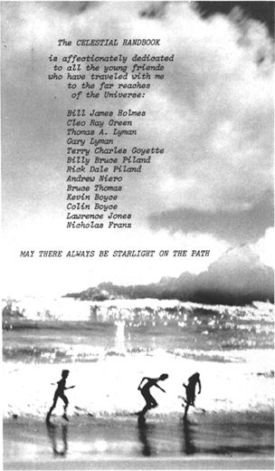
There is no sound in the forest only the phantom murmur of the far wind
and the wind’ s shadow drifting as smoke
through ebon branches; there a single star glistens in the heart of night....
A start!
Look, skyward now...
and see above...INFINITY
Vast and dark and deep
and endless....your heritage: Silent clouds of stars, Other worlds uncountable and other suns beyond numbering
and realms of fire-mist and star-cities as grains of sand.
drifting...
Across the void....
Across the gulf of night....
Across the endless rain of years....
Across the ages.
Listen!
Were you the star-born you should hear That silent music of which the ancient sages spoke Though in silent words...
Here then is our quest
and our world
and our Home.
Come with me now, Pilgrim of the stars, For our time is upon us and our eyes shall see the far country and the shining cities of Infinity which the wise men knew in ages past, and shall know again in ages yet to be.
Look to the east....there shines the Morning Star...soon shall the sunrise come...
We await the Dawn.
Rise, oh eternal light; Awaken the World!
With trumpets and cymbals and harp and the sound of glad song!
And now...
The clouds of night are rolled away; Sing welcome to the Dawn Of the bright new day!
Amateur Astronomy - A Personal View
The Idea Behind the Celestial Handbook
CHAPTER 2 - INTRODUCING THE UNIVERSE
The Distance Scale of the Universe
CHAPTER 3 - FUNDAMENTAL KNOWLEDGE FOR THE OBSERVER
Gaining a “Working Knowledge” of the Heavens.
The Constellations; Apparent Motions and Seasonal Changes.
The Celestial Sphere. Celestial Coordinates.
The Magnitude System; Apparent and Absolute Magnitudes.
Star Motions; Proper Motion, Radial Velocity. Stellar temperatures.
Star Distances. Distance Units.
Classification of Nebulae and Galaxies.
CHAPTER 4 - HOW TO USE THIS BOOK
The Arrangement of the Celestial Handbook
Terms, Symbols, and Abbreviations Used.
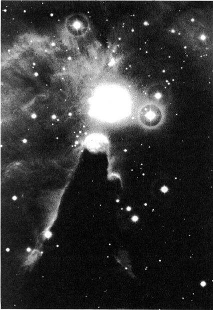
THE CONE NEBULA
“............. a picture of such stranegeness and splendor that it scarcely seems natural............”
REGION OF NOC 2264 PALOMAR OBSERVATORY 200-INCH TELESCOPE
AMATEUR ASTRONOMY - A PERSONAL VIEW
THE IDEA BEHIND THE CELESTIAL HANDBOOK
If astronomy is the oldest of the sciences, surely amateur astronomy may rightfully claim to be the oldest of the scientific hobbies. No one can date that remote epoch when astronomy “began” - we can say only that the fascination of the heavens is as old as man’s ability to think; as ancient as his capacity to wonder and to dream. And in company with most of the special enchantments of human life, the unique appeal of astronomy is incommunicable, easily understood through direct experience, but not to be precisely defined or explained. Nor should any explanation be thought necessary. The appeal of astronomy is both intellectual and aesthetic; it combines the thrill of exploration and discovery, the fun of sight-seeing, and the sheer pleasure of firsthand acquaintance with incredibly wonderful and beautiful things. But it also offers the privilege, not to be taken lightly, of adding something to the knowledge and understanding of man.
There is one other factor which I think deserves comment. An amateur, in the true and original meaning of the word, is one who pursues a study or interest for sheer love of the subject; and in this respect the division between professionals and amateurs is indeed indefinite. We are all impelled by the same wonder and curiosity, we are all exploring the same Universe, and we all have the enviable opportunity of contributing something to the store of human knowledge.
Now I should like to phrase one of these considerations in a somewhat less conventional manner, at the risk of being accused of undue whimsicality by the sternly serious minded. Considered as a collector of rare and precious things, the amateur astronomer has a great advantage over amateurs in all other fields, who must usually content them -selves with second and third-rate specimens. For example, only a few of the world’s mineralogists could hope to own such a specimen as the Hope diamond, and I have yet to meet the amateur fossil collector who displays a complete tyrannosaurus skeleton in his cabinet. In contrast, the amateur astronomer has access at all times to the original objects of his study; the masterworks of the heavens belong to him as much as to the great observatories of the world. And there is no privilege like that of being allowed to stand in the presence of the original.
THE IDEA BEHIND THE CELESTIAL HANDBOOK
Yet it sometimes happens, perhaps because of the very real aesthetic appeal of astronomy and the almost incomprehensible vastness of the Universe, that the more solidly practical and duller mentalities tend to see the study as an “escape from reality” - surely one of the most thoroughly lop-sided views ever propounded. The knowledge obtained from astronomy has always been, and will continue to be, of the greatest practical value. But, this apart, only the most myopic minds could identify “reality” solely with the doings of man on this planet. Contemporary civilization, whatever its advantages and achievements, is characterized by many features which are, to put it very mildly, disquieting; to turn from this increasingly artificial and strangely alien world is to escape from unreality; to return to the timeless world of the mountains, the sea, the forest, and the stars is to return to sanity and truth.
ABOUT THIS BOOK
There is no lack of astronomical literature today; on the contrary, the flood of new material is so great that the compiler of a good small astronomical library faces a serious task. The chief problem, in fact, is to choose those items which will quickly become dog-eared under continual use, as contrasted to those which will quietly disappear under an accumulation of dust on one’s bookshelf. Astronomical literature may be broadly grouped into four classes: popular works for the general reader, textbooks for the student, technical reports and bulletins for the professional worker, and guidebooks for the observer. A book of the first type can perform a valuable service if well and accurately written, though the majority appear to be oriented toward the casual reader who is content to study astronomy from his armchair. Textbooks also deal very sketchily with observational matters, and the more technical publications are suitable only for the advanced worker. The Celestial Handbook belongs in the fourth category, and is being offered in the hope that it will fill a very real gap in astronomical literature for the observer.
It is, briefly, intended to be a standard catalog and detailed descriptive handbook of the many thousands of objects available to observers with telescopes in the 2-inch to 12-inch range. Its realm is the entire Universe beyond our own Solar System, and it deals with those celestial objects which are now popularly known as “deepsky wonders”. I can claim no originality for this idea, of course. Other such books have been produced in the past, of which the most complete and successful was T.W.Webb’s CELESTIAL OBJECTS FOR COMMON TELESCOPES. This remarkable work, since 1962, has been available in a revised edition from Dover Publications in New York. Nothing else of comparable value has been produced since, to meet the needs of the modern observer.
Aside from the obvious fact that all the older books are now very much out of date, there are a number of other reasons why a complete new Celestial Handbook is needed. To begin with, the earlier observing guides were written for the possessor of the standard telescope of about 1900, the classic 3” refractor. Today’s average amateur telescope is a 6” to 12” instrument, and the increasing availability of good quality large reflectors has opened up a vast new world of deepsky objects for the modern observer.
Secondly, the vast increase of astronomical knowledge has resulted in an enormous shift of interest in the last 50 years. Older books concentrated heavily on such relatively local objects as double stars and the brighter variables. The more spectacular star clusters and nebulae were included, but descriptions were often limited to visual appearances because of the scarcity of facts. Galaxies as such were not mentioned at all, since nothing was known of the true nature of the “spiral nebulae”. The situation is now radically different. If nothing else had happened in this century, the final identification of the spirals as external galaxies was sufficient to alter our whole conception of the large-scale features of the Universe. We can now speak with reasonable accuracy not only of the distances, masses, temperatures, etc., of the celestial objects, but through the growth of astrophysics we can analyse some of the physical processes at work and begin to understand what these things mean from the viewpoint of the evolutionary history of the Universe. Surely there has never been any intellectual adventure to equal this, and even the most casual observer is entitled to share something of its wonder.
The existence of the Celestial Handbook is a result of this gradual widening of our horizons, and reflects, I believe, the interests and needs of today’s amateur. The book had its beginning about 2 dozen years ago, and started as an attempt to keep facts in order for my own use, to bring together into one place the data from many different sources, to bridge the gap between the elementary beginner’s star books and the more technical publications, and to maintain a permanently up-to-date guidebook by constant addition, correction, and revision. In 1958 I joined the Lowell Observatory staff, and the resources of the Lowell library were thus made available, as well as the superb collection of photographic plates made with the 13-inch wide angle camera which discovered Pluto in 1930. In the years between 1958 and 1965 the Handbook more than doubled in size, and eventually grew to occupy four thick looseleaf volumes, totalling nearly 2000 pages.
The work now includes virtually all the objects of interest which appear on the present-day star atlases such as Norton’s and the new Skalnate Pleso “Atlas Coeli”. But no simple catalog listing can convey much of the real interest and importance of many of the celestial wonders. Detailed descriptions are necessary, and a very simple and direct policy was adopted: if an object was considered worthy of a detailed description, it was given one. Also, a number of objects have been included which are usually regarded as being beyond the range of amateur telescopes, but which appear to me to be of exceptional interest. Such decisions, of course, depend very much upon one’s personal interests, and each observer would undoubtedly make a somewhat different selection. My own choices are based upon more than thirty years of actual observing with instruments ranging from field glasses up to large observatory reflectors. I think that none of the famous old favorites have been neglected in this book, and I hope that some objects will be introduced to many observers for the first time.
The number of objects listed is well over 7000, of which many hundreds are given additional detailed descriptions. The book is illustrated by more than 250 photographic plates, collected from many different observatories, and a fine selection of the work of some amateur astro-photographers has been included. There are also several hundred finder charts, orbit diagrams, graphs and tables of various types.
Although intended primarily for the serious observer and advanced amateur, there is no absolute reason why this book should not prove useful even to a beginner who is willing and able to learn. Chapters 2 and 3 have been prepared to introduce such a beginner first to the Universe itself, and then to the world of the astronomical observer with its special terminology and symbols. There may be little in these two sections which will be of any real use to the experienced amateur, except possibly to assist in the instruction of the novice. But, after much thought, I have decided to let them stand as they are - if they help only a few of the users of this Handbook, their inclusion will have been justified. And, to shift to the other end of the spectrum of potential users, every attempt has been made to maintain a standard of accuracy which will assure the value of this book as a quick reference even for the professional astronomer.
In such a large compilation the question of errors and discrepancies deserves some mention. Typographical errors and other definite mistakes should be reported to the author so that corrections can be made in any possible future editions. The question of discrepancies between various authorities is not so easily handled, and raises serious problems. If one standard catalogue gives a star a spectral class of KO, another is sure to classify it as G7 and a third will offer K2. The same galaxy may be classed by three different authorities as “irregular ?”, “late-type spiral” and “elliptical peculiar”. Published values for the distances of objects often show very large discrepancies. In addition to these typical uncertainties, there are numerous cases involving errors which were corrected long ago, but which still exist in books that are in wide use today. The galaxy M74, for example, is called a globular star cluster in the NGC listing, while the planetary nebula NGC 6026 is included as a galaxy in the Shapley-Ames catalogue. Similarly, the small galaxy NGC 2283 is marked as a diffuse nebulosity on the Skalnate Pleso Atlas. All such cases which have come to my attention have been corrected in the Handbook, but there must undoubtedly be others which have so far escaped notice. The user of this book should therefore not be distressed to find four-way discrepancies (and worse!) between this book and authors A, B, and C. This is a reflection on the present state of knowledge. Many astronomical facts depend upon very precise and difficult measurements of very tiny quantities, such as the parallax of a star, and there is always a good margin of error. Other astronomical questions remain frankly controversial, and the best authorities differ in their interpretations. It would be a rash astronomer indeed who would claim absolute exactness in such matters as the precise distance of Polaris or the Ring Nebula, the exact size or luminosity of Antares, or the exact orbital period of Zeta Aquarii. And in such enigmatic objects as Epsilon Aurigae, SS Cygni, and 3C273, it is best to admit at once that we do not know exactly what is going on. We have just reached the point where we are beginning to find out what the questions are, and what methods may be used to study the problems. The Universe remains - as it probably always will - an awesome mystery, and Newton’s great Ocean of Truth still lies undiscovered before us. But let us make no apology for this. Much of the fascination of astronomy lies in the fact that there are still so many unknowns, so many puzzles and mysteries yet to be solved. May it always be so!
The Celestial Handbook is a collection of data from a great number of separate sources. No one person could, in a dozen lifetimes, accomplish more than a small fraction of the research which is represented by the information contained in this book. Any compiler of such a work is, of necessity, forced to rely upon the studies and investigations of literally hundreds of other observers, both of the past and present. In nearly thirty years of observing I have actually seen, at one time or another, possibly half of the celestial objects listed herein, and the visual descriptions are largely the results of my own records. Aside from this, my chief task has been the collection, checking, and inter-comparison of data.
The chief source-books of information are listed in the classified bibliography. In addition, the publications of many different observatories were checked each month for the presence of any new information relevant to the project, while both the Astronomical Journal and the Astrophysical Journal were periodically searched in the same way. Information obtained from any of these current sources is identified in this book by the name of the author and the date. The source of each photograph is given in the caption. To all the astronomical research workers of the world, who have made my task so engrossing, so rewarding, and so endless (!) I acknowledge my deep indebtedness. At the same time, it should be evident that the present spectacular rate of increase of astronomical information tends to render my whole project a basic impossibility. No modern astronomical handbook can possibly remain “up-to-date” for even as long as a year; the best of modern measurements, data, theories, and interpretations will be totally superseded within a decade. In preparing the revised manuscript for the Dover edition of this work, the author has taken the opportunity to correct some minor errors and update some of the information. But it should be obvious that a work of this nature could be expanded, corrected, and updated forever! One must call a halt somewhere! “Were I to await perfection,” wrote the 13th Century Chinese historian Tai T’ung, “my book would never be finished.”
Finally, it is a very great pleasure to acknowledge the primary source of information for this book - the fine astronomical library of Lowell Observatory. To Dr. John S. Hall, the Director, and to Mr. Henry Giclas of the Observatory staff, I must express my deep gratitude for generously allowing the use of the Lowell telescopes and the Observatory plate collection. Without the use of these and other Observatory facilities, the Celestial Handbook could never have reached anything comparable to its present degree of completeness. In addition, many of my astronomical friends, both amateur and professional, have expressed their interest in the project and have offered valuable encouragement, assistance, and advice. It is through their efforts, as well as mine, that the idea behind this book has become a concrete reality.
Flagstaff, Arizona
October, 1976
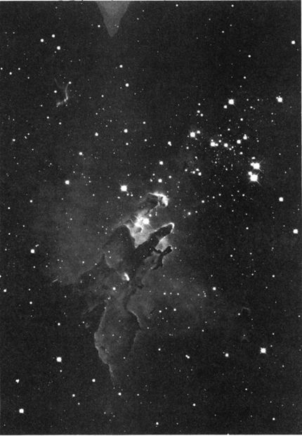
SPLENDOR OF THE HEAVENS
In the vast reaches of the Universe modern telescopes reveal many vistas of unearthly beauty and wonder.......
REGION OF STAR CLUSTER NGC 6611
LICK OBSERVATORY
INTRODUCING THE UNIVERSE
A CELESTIAL SURVEY
THE DISTANCE SCALE OF THE UNIVERSE
We are beginning a journey.
It will be a journey both strange and wonderful.In our tour of the Universe we shall travel the vast empty pathways of limitless space and explore the uncharted wilderness of creation. Here, in the dark unknown immensity of the heavens, we shall meet with glories beyond description and witness scenes of inexpressible splendor.In the great black gulfs of space and in the realm of the innumerable stars, we shall find mysteries and wonders undreamed of. And when we return to Earth, we shall try to remember something of what we have learned about the incredible Universe which is our home.
Let us now prepare for our journey. We shall need, first of all, an imaginary spacecraft which can travel at any desired speed—no matter how incredible (or impossible). The reason for this will soon be seen.If we limit ourselves to speeds which are “possible,” our journey to even relatively near regions of space will require a period of untold ages. And, we simply haven’t the time. We must also equip ourselves with abnormally sensitive eyes which can instantly see such details as would ordinarily be revealed only by many hours’ exposure of the photographic plate. We shall also take along one of the world’s largest telescopes so that we may still better view the passing scenery.
Finally, we shall require some briefing on the distance scale used on our journey. If we were to travel to New York, for instance, we would want to know that the distance to be covered was 600 or 800 or 1200 miles; but this information would scarcely be of any value if we had no idea of the meaning of the term “mile.” Now, on our journey, we shall find that the celestial distances are so incredibly vast that to express them in miles would be like giving the distance to Hong Kong in millionths of an inch. So, we shall require a new distance unit—the light year.
There is nothing particularly complicated about the light year. All radiant energy, as we may remember from high school physics, travels at the same velocity, commonly called the “speed of light.” This velocity is the greatest known in the Universe and appears from all known facts to be the ultimate velocity possible. The proofs of this lie in the abstruse realm of relativistic mathematics which few of us are prepared to tackle. For the moment, we shall accept as a fact the principle that the velocity of light cannot be exceeded, except, of course, in the imagination. The speed of light is close to 186,300 miles per second. At this speed we could travel seven times around the Earth in one second. We could reach the Moon in less than two seconds, the Sun in eight minutes, and all the planets in a few hours. Traveling for a year at this speed, we would cover a distance of slightly less than six trillion miles, and we would find ourselves about a quarter of the way to the nearest star.
A light year, then, is simply the distance that light travels in a year—slightly less than six trillion miles. It is a unit of distance—not a unit of time.
At this point, we must pause briefly to make some attempt, however inadequate, to understand the implication of such an enormous distance unit as the light year. If we cannot grasp—in some degree-the chilling vastness expressed by such a concept, we shall never have more than the haziest notion of the scale of the Universe. Our minds may be jolted into some degree of comprehension by such statements as “It would require over 150,000 years to count the number of miles in one light year,” but the final impression is still one of incomprehensibly large numbers. Let us try instead the old and classic “scale model” method.
The Earth is a planet, one of nine relatively small bodies revolving about a typical sort of star we call the Sun. These objects, together with a number of smaller bodies, make up the “Solar System,” our own familiar corner of the Universe. The distance of the Earth from the Sun is approximately 93 million miles, or about eight “light minutes,” a distance which we will dignify by a special title, the “astronomical unit” (AU). The most remote planet, Pluto, is 40 times more distant from the sun than we are, and so we may say that the distance of Pluto is about 40 AU. The diameter of the planetary system is thus some 80 AU.
One light year is equal to 63,000 AU. The nearest of the stars is 4.3 light years distant; this is about 270,000 AU, or some 7,000 times the distance of Pluto. The light from Pluto reaches the Earth in 5½ hours; from the nearest star it requires 4.3 years.
It would be advisable to read that paragraph again.
By a fortunate circumstance, the number of inches in a mile is very nearly equal to the number of AU in one light year, a perfect arrangement for the purpose of constructing mental scale models. Let us then imagine a scale model of the Solar System, with the Earth represented as a speck one inch away from the pinpoint Sun. Pluto is then about 3½ feet from the Sun. The nearest star on this model will be nearly 4½ miles away. And all the stars are, on the average, as far from each other as the nearest ones are from us.
Imagine, then, several hundred billion stars scattered throughout space, each one another Sun, each one separated by a distance of several light years from its nearest neighbors. Comprehend, if you can, the almost terrifying isolation of any one star in space. How many of these distant Suns are surrounded by planetary systems, and how many other inhabited worlds may exist somewhere? Have we any hope of ever knowing? For a planet the size of the Earth would be completely beyond the range of any telescope in the world, even at the distance of the very nearest of the stars.
Finally, let us imagine our several hundred billion stars, with their enormous separations, arranged in space in the form of a great “star city”, a round flattened cloud like a vast wheel, fully 100,000 light years in diameter, and surrounded by a few hundred thousand light years of complete nothingness.
This wheel is our Galaxy. Far beyond it lie millions of other similar galaxies—the nearest ones a good part of a million light years across the void.
This is the Universe which is being explored by the great telescopes of the Earth, and by the amateur with his homemade telescope. This is our home in space.
*************
Armed with this knowledge, let us now enter our imaginary spacecraft and launch ourselves out approximately one million light years from the Earth. In reality even a beam of light would require more than ten thousand lifetimes to traverse such a distance. The aiming of our spacecraft does not especially matter, for the general features of our surroundings would appear the same, regardless of the direction taken. Now let us examine the view.
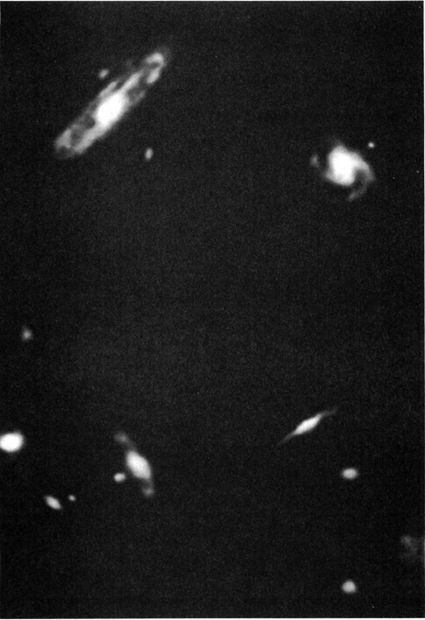
GALAXIES OF THE UNIVERSE WOULD APPEAR SOMETHING LIKE THIS PICTURE TO AN OBSERVER ONE MILLION LIGHT YEARS FROM THE EARTH. EACH OF THESE OBJECTS IS AN ENTIRE “STAR CITY”, CONTAINING SEVERAL HUNDRED BILLION SUNS. THESE ARE THE MAJOR UNITS OF CREATION.
A strange view it is! We appear to be suspended in a blank nothingness. The Earth is gone, of course, and the Sun and Moon; even the stars we knew at home have vanished. They are all so far away now that not even the greatest telescopes could detect them. Instead of our familiar skies, we seem to be gazing into the blackness of eternal night, and the view is the same in any direction we look.
A few objects, however, are visible, floating in the blackness of space. One of them appears as a softly glowing oval with a luminous center. In the opposite part of the sky we can see another similar object. Around the rest of the sky we can barely make out a few more luminous spots of the same type. All else is blackness. If we employ our telescope, however, we can see hundreds of these glowing islands of light. The general view we get will resemble the picture opposite.
These objects are the galaxies — the major units of creation.
If we now set our spacecraft (and our imagination) in motion, we can travel through the Universe at a few hundred million times the speed of light, discovering and counting galaxies by the hundreds, by the thousands, by the millions. If we photograph the whole sky bit by bit with our giant telescope—a project which will take us several centuries— we will find that perhaps a billion galaxies are within range. They extend throughout space as far as the limit of telescopic exploration.
The galaxies, then, are the primary units of the Universe—we may sometimes hear them referred to as “island universes” in themselves. They are immensely large objects, as you may imagine, after our recent attempt to construct mental scale models. Their diameters range from a few thousand light years up to about 100,000 light years. The average separation between any two galaxies is on the order of a million light years, though in some regions we will find them grouped in more closely associated clusters. Some of the largest galaxies appear as great flat discs, often showing a distinct “pinwheel” or spiral appearance; others are irregular, and many are globular or elliptical and show no structural features.
Let us now choose one galaxy—a large spiral type—for detailed exploration. This galaxy, like many others, is a member of a loosely associated group containing twenty or so members. We note that several of the smaller members— irregular galaxies—are near enough to the big spiral to be regarded as possible satellite systems. As we approach this group, the view we get is something like the picture opposite.

LARGE SPIRAL GALAXY APPEARS LIKE THIS TO AN OBSERVER APPROACHING PROM INTERGALACTIC SPACE. IN THIS IMAGINARY VIEW, BASED ON PHOTOGRAPHS OF THE GALAXY M5I, WE ARE A FEW HUNDRED THOUSAND LIGHT YEARS DISTANT« TWO SMALL IRREGULAR GALAXIES APPEAR NEAR THE TOP OF THE PICTURE.
The spiral shape suggests rotation, and, indeed, if we wait a few million years, we shall be able to watch the process ourselves. Any shorter time will scarcely suffice, for a typical large galaxy may require more than 100 million years for one complete turn. The galaxy does not rotate as a rigid body, however. The inner regions, because of the greater concentration of mass, rotate more rapidly than the outer portions; and there is thus a continual “shear” effect across the body of the galaxy. The spiral pattern may be attributed in part to this differential rotation, but it also appears to be connected in some way with electric and magnetic fields in the galaxy. The full explanation is not yet clear.
The particular galaxy we have chosen is about 100,000 light years in diameter, and when seen edge-on is about 10,000 light years thick. From our position several hundred thousand light years out, the great galaxy resembles a softly glowing pinwheel with a bright center and spiral arms. Its actual constitution, however, remains as much of a mystery as ever from this distance. So we must now turn our telescope upon it to discover that the glow comes from uncountable billions of separate points of light. We thus answer our next question—What is a galaxy? It is a colossal aggregation of stars—stars by the billions. In many places we can see great clouds of dust and gas, many light years in extent, some luminous and some dark, scattered among the stars. Most of this material lies in the regions of the spiral arms. The nuclear region of the galaxy seems relatively free from it.
Before beginning our detailed exploration of this galaxy, let us pause for a few moments in another attempt to understand the scale of things. The picture (opposite) shows the galaxy as it appears from our vantage point a few hundred thousand light years out. We have chosen this particular galaxy because it is our own—somewhere among all those billions of stars lies one rather ordinary sort of star—our Sun, with its attendant planets.
How much will we have to enlarge this picture in order to find the Sun, its planetary family, and our home, the Earth?
The answer, as we expected, is literally numbing to the mind, but once again serves to shock us into some degree of comprehension of the vastness of space. An enlargement of a few times will not help us—or of a few hundred times. But suppose we can enlarge the picture until it covers all of North America. Then the billions of individual stars will appear as pinpoint specks averaging about 600 feet apart. The Solar System—if we can locate the exact spot to look for it—will be about two inches in diameter, and the Sun and Earth will appear as two pinpoint dots about 1/30 inch apart. The Earth, in fact, will be totally invisible to the naked eye on this scale, and we shall have to examine our super-enlarged picture with a super-microscope to eventually locate the Earth as a sub-microscopic dot a few millionths of an inch in diameter.
Keeping this scale in mind, let us now begin a tour through the Galaxy.
Approaching the nearest star cloud, we watch for some time in awed silence as the cloud resolves first into a haze of millions of glimmering flecks of light, each becoming eventually a brilliant star and ultimately spreading out to spangle the heavens all about us. We are not surprised to find that the individual stars are separated from each other by relatively enormous distances, even though our telescopic view made them appear to be crowded together in incredibly thick masses. This was an illusion due to their unimaginable numbers and the great distance from which we viewed them. It was something like looking at a great city at night from a distance of many miles; the countless lights seem to melt together into a single glowing haze. The average distance between any two stars is on the order of three or four light years, and since the diameter of an average star is less than one light minute, we can see that the relative separation is vast indeed.
There are many exceptions to this general rule, though, as in many places we find two or more stars quite close together and revolving about each other. Some of these pairs, known as “binary stars,” are nearly in contact and complete one revolution in less than a day, while others are so widely separated as to require centuries for a single revolution. As we continue to study the stars of the Galaxy, we learn that such double, triple, and multiple stars are by no means rare. Possibly about half of all the stars are double or multiple systems.

SPIRAL ARM OF THE GALAXY IS REVEALED AS A VAST COMPLEX OF STAR CLOUDS. ABOUT 400 BILLION INDIVIDUAL STARS POPULATE THIS STELLAR SYSTEM, WHICH IS ONE OF THE LARGEST GALAXIES KNOWN.
PHOTOGRAPH by ALAN McCLURE

AN INFINITE PROFUSION OF SHINING SUNS. THIS STAR FIELD IS A SMALL PORTION OF THE GREAT CYGNUS STAR CLOUD; THESE ARE A FEW OF THE ESTIMATED 400 BILLION STARS WHICH COMPRISE OUR GALAXY.
LOWELL OBSERVATORY
In addition, we frequently come upon great clusters of stars containing hundreds or even thousands of members, gravitationally connected and moving together through space. As we survey the fantastic blazing beauty of one of these clusters, we realize it is time to answer another question: What is a star?
To answer this, we shall take a close look at one, not from a distance of several light years, but from a mere light minute (10 million miles or so). What we see now is not a tiny point of light, but an immense blazing globe of such intense brilliance that we cannot gaze upon it without protection for our eyes. We are looking at a typical, normal star.
The particular star we have chosen is about average in size; its diameter is slightly less than one million miles, or about six light seconds. After our experience with distances of thousands of light years, a distance of six light seconds seems absurdly small. Yet, a star of this size could easily contain a million globes the size of the Earth.
As we examine the dazzling surface of this star, we can find nothing solid about any part of it; every part appears to be boiling, erupting, and exploding in various ways. Great flame-like tongues of glowing matter are continually leaping up and falling back, huge jets of blazing gas shoot up like gigantic fountains, and immense turbulent whirlpools move like fiery clouds across the boiling surface. In only a few hours such clouds may rise to heights of several hundred thousand miles above the star.
The entire star is a colossal globe of superheated gas. By “gas” we do not mean to convey the impression of an airy nothing, like the inside of an inflated balloon. This star has enough mass to make over 300,000 planets like the earth, and its density is greater than many normally liquid or solid substances. In some stars, in fact, the density exceeds to an astonishing degree that of our heaviest known metals. This material is gaseous here because nothing solid or liquid can exist at the temperature found on a star.
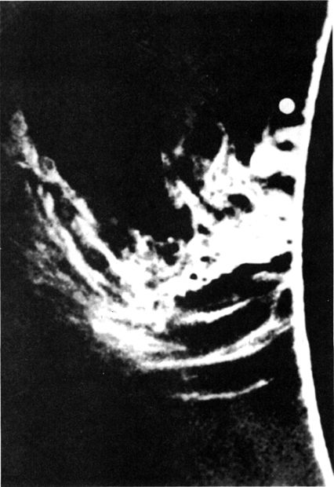
ENORMOUS CLOUD OF GLOWING GAS RISES FROM THE SURFACE OF THE SUN LIKE A TOWERING FOUNTAIN OF FLAME. SUCH ERUPTIONS, CALLED “ PROMINCNCES,” ILLUSTRATE SOME OF THE TYPICAL ACTIVITY ON THE SURFACE OF A STAR. THE SMALL WHITE DISC SHOWS THE EARTH TO THE SAME SCALE.
JULY 9, 1917 — MT. WILSON OBSERVATORY
The surface temperature of this particular star is about 6000° C, and the interior temperature is nearly 20 million degrees. This temperature allows a nuclear reaction—the conversion of hydrogen into helium—to proceed, which explains the energy source of the star. A typical average star such as this contains sufficient hydrogen for 20 or 30 billion years of energy production. So, as we can see, a star is a natural atomic furnace. We might think of it as a natural and perpetual nuclear reactor.
“It looks just like the Sun,” someone says. And, in this simple and direct observation we have the whole key to understanding the stars. They are other suns. Or, to put the statement in its correct form, our Sun is merely one of the stars.
With this knowledge, let us continue our trip through the galaxy. We are now surrounded by stars; we pass them by the millions. Our realization that each one is in reality a blazing sun capable of swallowing up a million earths gives us an incredible and even frightening picture of the unimaginable vastness of the Universe. Now we turn our attention to the individual stars and see what else can be learned from them.
The first thing we notice is a definite variety of color. We find that some stars are white or bluish; others are yellowish, and some show an orange or reddish tint. If we know our physics, we will deduce that this is due to a difference in temperature. White and blue stars are the hottest, red stars are the coolest. The coolest stars may have a surface temperature of a mere 2000° C, while a great blue giant may be ten or fifteen times hotter.
There is also a great difference in stellar diameters and densities. Some of the great red giants are hundreds of times bigger than our Sun, but their temperatures are low and their substance is highly rarified. At the otherextreme we find the astonishing “white dwarf” stars which are only a fraction of the size of the Sun but weigh tons to the cubic inch. The difference in actual luminosity is another subject for study in our celestial survey. We come across some great stars which outshine the Sun by more than 50,000 times, but such supergiants are exceedingly rare. Much more numerous are the tiny “red dwarf” stars whose feeble illumination may be a mere 1/100,000 the luminosity of the Sun. For every supergiant we find thousands of stars like our Sun, and for every star of the solar type we find thousands of red dwarfs, by far the commonest citizens in the stellar community. Our Sun thus appears as a fairly respectable member of the stellar population.
Among the more unusual and peculiar members are the “variable stars.” These are suns which do not remain constant in their outpourings of light and heat, but fluctuate in a peculiar manner, some periodically, others erratically. The commonest types are red giants,which appear to pulsate, expanding and contracting like a beating heart. If we watch a few typical examples, we shall soon see that their average period is about a year and their light range is very great, usually more than 100 times and,in some examples, over 1000 times. These stars are called “long-period variables.” Another similar type of pulsating star has a period of a few days or weeks and a light range of only two or three times. These stars are white or yellow giants and are technically known as “cepheids.”
The long-period variables and the cepheids appear to follow certain rules which allow us to predict their future behavior with fair accuracy. Not so obliging, and therefore more intriguing to the curious astronomer, are the more erratic variable stars, some of which fluctuate in a completely unpredictable manner. There are small dense white stars, for example, that flare up suddenly in the course of a day or so, increasing forty or sixty times in brightness, thereafter slowly fading back to normal, only to repeat the process again and again at intervals of a few months. Some of the tiny red dwarfs show a similar effect, flaring up to double their normal light in a few minutes, then fading just as suddenly. We also find stars whose variations are completely irregular; they may fade or brighten at any time from some still unknown cause. Our steady, dependable Sun seems comfortably unexciting when compared to these erratic, unstable stars.
The most spectacular of all the variable stars are the novae. If we travel around the galaxy for a year or so, we have a fair chance to see one. A nova is a star that literally explodes, blasting its outer layers into space with titanic violence and rising to unheard-of brilliance for a period of a few days or weeks. A supernova is a similar phenomenon on a vastly greater scale—it results in the more-or-less complete destruction of a giant star, with an explosion that makes an ordinary nova look pale by comparison. A first-rate supernova may equal the total luminosity of all the other billions of stars in a galaxy put together. Unfortunately, the supernovae are very rare, and we might have to cruise around the Galaxy for several centuries before seeing one.

GALACTIC STAR CLUSTER IS A MASSED GROUP OF SEVERAL HUNDRED SUNS, OFFERING A SPLENDID SIGHT FOR SMALL TELESCOPES. THIS EXAMPLE IS M37 IN THE CONSTELLATION OF AURIGA.
13” TELESCOPE— LOWELL OBSERVATORY
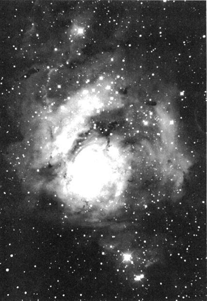
GREAT DIFFUSE NEBULA KNOWN AS M8 LIES IN THE SUMMER SKIES IN THE CONSTELLATION OF SAGITTARIUS. THIS VAST CLOUD OF RARIFIED GASES SHINES BY THE LIGHT OF AN INVOLVED CLUSTER OF HIGHLY LUMINOUS STARS.
42” TELESCOPE-LOWELL OBSERVATORY
To the question, “Why do certain stars fluctuate, pulsate, or explode?” it must be admitted that we have no lack of theories, but also no definite proven answers. All these spectacular happenings are symptoms of various kinds of stellar instability, generally thought to indicate that the star is approaching the point of exhausting its nuclear “fuel” supply. Such stars, it seems, may first expand into red giants, then later collapse into the super-dense “white dwarf” state, where their life history ends.
The stars of the Universe are thus seen to be in various stages of evolution, from the virtually newborn to the dying cinders. We have seen some of the dying cinders — let us now study a region where new stars are still being formed.
You will remember that, when we looked at this Galaxy from our telescopic vantage point far out in space, we noticed that much dust and gaseous material was distributed among the stars, especially in the region of the spiral arms. We are now entering one of these regions. The great glowing cloud of gases and dust which we see floating ahead of us is called a “nebula.” To be precise, we should call it a “diffuse nebula” or “gaseous nebula,” so as to avoid confusion with the so-called “spiral nebulae,” which are actually galaxies. Galaxies should no longer be referred to as “nebulae,” of course; but the term was applied in the early days, when the true nature of the galaxies was not known, and the term is often used even today.
The particular diffuse nebula we have chosen is a fair example of the type, measuring about twenty light years in extent and consisting of highly rarified gases, chiefly hydrogen, helium, nitrogen, and oxygen (picture opposite). The Galaxy contains a tremendous amount of this matter; in fact, it is estimated that over a third of the mass of the Galaxy is in the form of dust and gas clouds. This material, however, remains invisible unless illuminated by nearby stars. Thus the nebula at which we are now looking is visible only because of the hot stars embedded in it, which cause the gases to shine. There are two processes by which the nebula may be illuminated. If the star is of a sufficiently high temperature (20,000°K or above), the gases may be excited to luminescence by the star’s ultraviolet radiation, a process known as “fluorescence.” If the temperature of the star is too low, the nebula will merely shine by reflected starlight. Fluorescence produces the more brilliant illumination and also gives the glowing gases a peculiar ghostly greenish color. It happens that the spiral arms of the Galaxy are extraordinarily rich in great blue-hot supergiant stars, and the involved nebulosity glows in vivid splendor. The presence of these stars is no accident. We find them in the regions where they were born, and the great diffuse nebulae are the “star factories” of the galaxy. We are witnessing one of the scenes in the drama of creation.
In studying these vast chaotic masses of glowing gas, we often find them associated with nearby clouds of dark dust, producing strange and spectacular patterns against the starry background. Some of them appear in great foggy masses of indistinct form; others seem like slender wisps and streamers of light reaching from star to star; and others.lacking illumination, appear as great dark blots against the bright star clouds of the Galaxy. Some of this matter may have come from exploding stars or other celestial cataclysms, but it seems more likely that most of it has never been part of any star but is rather a portion of the original “building material” from which the galaxies were formed and will therefore supply the material for many stars in ages to come. The Universe is still young, as we can see. Although the galaxies have probably existed for 10 billion years or so, this is but a fraction of their total “life expectancy.“
A typical diffuse nebula, as we said, is something like 20 light years in diameter, and we might pause again for a moment of contemplation concerning the scale of things. With the Earth and Sun one inch apart, our scale model of this nebula would spread over 20 miles of countryside. There is enough material in one of these clouds to make many hundreds of stars like our Sun.

BRIGHT AND DARK NEBULOSITY PRODUCES STRANGE PATTERNS IN THE REGION OF THE SPECTACULAR “HORSEHEAD NEBULA” IN THE CONSTELLATION OF ORION. THIS PHOTOGRAPH WAS MADE WITH AN 8” REFLECTING TELESCOPE.
KENT DE GROFF, LOWELL OBSERVATORY
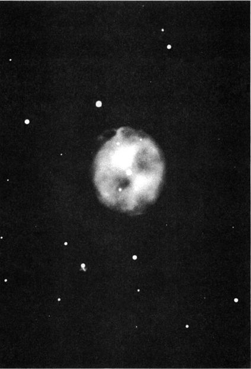
TYPICAL PLANETARY NEBULA CONSISTS OF A HOLLOW SHELL, BUBBLE, OR RING OF GAS SURROUNDING A HOT BLUE DWARF STAR. THIS EXAMPLE IS THE “OWL NEBULA” M97 IN URSA MAJOR.
42” TELESCOPE — LOWELL OBSERVATORY
Somewhat smaller is another type of nebula which we shall now briefly visit (picture opposite). This type, as you will notice, rather resembles a hazy globe of smoke. This vaporous sphere is composed of the same sort of rarified gases which we met in the diffuse nebulae. In the center of the sphere is a small but extremely hot bluedwarf star which supplies the illumination for the entire nebula. These objects are not as large as the diffuse nebulae, but are often remarkably bright for their size. The particular example we are studying has a diameter of somewhat less than one light year. An object of this type is called a “planetary nebula.” The term does not imply any connection with planets, but merely indicates that such nebulae rather resemble the pale disc of a distant planet as seen through a small telescope.
The actual significance of the planetary nebulae remains obscure. They are undoubtedly produced by some sort of outbursts which have occurred on the central stars, but the outbursts appear to have been much less violent than the explosions we call “novae.” Perhaps we should classify a planetary nebula as an unusually “lazy” type of nova.
Continuing our voyage through the spiral arms of the Galaxy, we are repeatedly astonished by the extraordinary richness of these regions. Not only do the vast nebulae present countless vistas of great interest and beauty, but we also notice enormous numbers of star groups, clusters, and associations, some of them measuring over 100 light years in extent and containing thousands of stars of different sizes and color. Many of them are embedded in glowing nebulosity or smothered in great dark clouds of cosmic dust. All of these star clusters are examples of one type, the “galactic” or “open” cluster, so called from their scattered appearance and the fact that they are found inside the Galaxy, chiefly along the spiral arms. There is one other type of star cluster; and, in order to see it, we must travel out about 30,000 light years to the outer rim of the Galaxy.
From our new position we can now see a number of fuzzylooking objects distributed around the edges of the Galaxy on all sides. As we approach one, it gradually grows into a great silvery ball spangled by thousands of star-points, and finally, from a few hundred light years away, we get the view shown in the picture opposite.

FINEST GLOBULAR STAR CLUSTER IN THE SKY IS THIS MAGNIFICENT SWARM OF COUNTLESS STARS KNOWN AS OMEGA CENTAURI OR NGC 5139, ONE OF THE NEAREST CLUSTERS OF THIS TYPE TO THE EARTH.
This magnificent object, resembling a vast celestial swarm of bees, is called a “globular star cluster”; it is incomparably richer and more compact than the galactic type, las you can see. It is also noted for its beautifully spherical outline. About a hundred of these clusters are known; the particular one at which we are looking is about 200 light years in diameter and contains a million stars. Its total luminosity is more than 500,000 times the light of the Sun.
When we viewed some of the rich star clouds of the galaxy, we received the impression that the stars were packed so thickly as to be almost in actual contact. The globular cluster now gives us the same impression, which again turns out to be an illusion. As we travel through the cluster, we find that the real separation of the stars is on the order of half a light year or so, pinpoints averaging 3000 feet apart on our much-used scale model! This cannot be called crowding, although it is much more “crowded” than most regions of the Galaxy. Only the Galactic Center, in fact, is so thickly populated.
And the Galactic Center, incidentally, is where we are now headed.
Having looked at the Galaxy from far out in space, you will remember the bright central nucleus which appeared to dominate the general glow of the great spiral. That nucleus was the Galactic Center, the great concentration of mass about which the rest of the system revolves. The brightness of the Center is not due to any greater luminosity of its stars; on the contrary, the great hot supergiant stars are quite absent from this region. It is instead the unbelievably vast numbers of the stars which give the Center a brilliance exceeding even the rich star clouds of the spiral arms.
No one can guess how many stars are contained in the Galactic Center—certainly hundreds of millions, perhaps billions. We are at the very hub of the Galaxy, and in this region of awesome splendor we have reached the climax of our celestial journey. Let us think for a moment of the billions of other Suns, the nebulae and clusters, and the countless other wonders we have seen. Let us think also of the millions of other galaxies beyond this one, each another star city containing a few hundred billion Suns. If we can even begin to grasp these concepts, however hazily, we have made a good start at understanding the astronomer’s Universe, and we are also in a good position to increase our knowledge by asking the right questions:
QUESTION: If we had chosen some other galaxy at random instead of this one, would we have seen the same things?
ANSWER: Yes. Any large spiral galaxy would be a fair duplicate of the one we have just explored. Some of the smaller galaxies, however, particularly the “elliptical” types, contain no dust and gas and would therefore contain no diffuse nebulae. Their stellar population also appears to be limited, as they contain none of the blue supergiants which we found in the spiral arms of our own Galaxy.
QUESTION: What is the reason for this difference?
ANSWER: The full explanation is not yet known. There are two widely contrasting types of stellar population. Some regions are occupied by gas and dust clouds and blue giant stars; their presence identifies “Population I.” In other regions we find no dust or gas, and the brightest stars are red giants of only moderate luminosity; these are the earmarks of “Population II.“ From this we can see that the spiral arms of our Galaxy, and also the irregular galaxies, are Population I systems. The Galactic Center, the globular star clusters, and the spherical and elliptical galaxies are all Population II. There is no real doubt that this difference is due primarily to a matter of age. In a Population I system we still see star formation in progress, while in a Population II system the stars appear to be very ancient and are in an advanced state of stellar evolution. But it is not known why some galaxies appear to be so much older than others. These facts must be considered in any attempt to formulate a general theory of the history of the Universe.
QUESTION: Isn’t our Galaxy sometimes referred to as the “Milky Way”?
ANSWER: Yes. The galaxy is shaped like a wheel, you remember. The stars, therefore, appear more thickly massed when we look in one direction—down the longer diameter of the wheel. In this direction we see stars by the billions. But, because of the vast size of the Galaxy, most of these stars are too distant to be separately visible, and only their combined light reaches us in the form of a misty luminescence which appears to circle the heavens in a great glowing band. This appearance is easily noticed from Earth, and it is called the “Milky Way.” The Milky Way, then, is merely the result of viewing our Galaxy from the inside. When we look toward this glowing band, we are looking across the long dimension of the Galaxy. And the brightest portion, which we see from Earth in the southern sky in summer, marks the direction to the Galactic Center.
QUESTION: Where is our own Solar System located in our Galaxy?
ANSWER: It is approximately 30,000 light years out from the center of the Galaxy, or a little more than halfway from the center to the outer edge. It is not located in any definite cluster, but is a member of one of the loose star clouds which compose part of a spiral arm of the Galaxy.
From a distance of 50 light years, the Sun appears as a faint yellowish star barely visible to the naked eye and completely indistinguishable from the myriads of other faint stars scattered over the heavens. From about four light years out it has become one of the brightest stars in the sky. And, finally, from a distance of less than one light hour (about 670 million miles), it begins to show as a disc instead of a point of light, and its brilliance has become dazzling.
The Sun, from anywhere else in the galaxy, would be regarded as a very typical sort of star like billions of others, but for us it seems to have a certain uniqueness. As we already know, it is not a lone wanderer in space, but is accompanied by a “family” of objects known as the “Solar System,” all the members of which are within a few light hours of the dominant central star. The chief objects of interest in this system are nine small solid worlds known las the “planets,” which revolve about the Sun at different distances and various speeds. The nearest planet to the Sun is 36 million miles away and revolves about it in 88 days; the farthest is 100 times more distant and requires 248 years for one revolution. The planets also differ greatly in size, having diameters ranging from 3200 to 88,000 miles. The roll call of the planets—going outward from the Sun—reads as follows: Mercury, Venus, Earth, Mars, Jupiter, Saturn,. Uranus, Neptune, and Pluto.
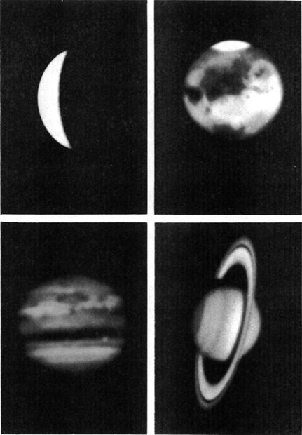
PLANETS OF THE SOLAR SYSTEM ARE THE OTHER WORLDS WHICH ORBIT THE SUN IN COMPANY WITH OUR OWN EARTH. SHOWN HERE ARE VENUS, MARS, JUPITER, AND SATURN.
LOWELL OBSERVATORY PHOTOGRAPHS

THE MOON IS THE ONLY KNOWN NATURAL SATELLITE OF THE EARTH AND THE NEAREST OBJECT IN SPACE. THOUSANDS OF GIANT CRATERS POCK-MARK THE SURFACE; THE HUGE FORMATION SHOWN HERE IS CLAVIUS, 135 MILES IN DIAMETER
LOWEU OBSERVATORY PHOTOGRAPH
Some of the planets have smaller bodies called “satellites” or “moons” revolving about them. There are 34 such objects in the solar system. Our Earth, as we all know, has only one natural satellite.
In addition to the planets and their satellites, we also find a host of “asteroids,” sometimes called “planetoids” or “minor planets,” revolving about the Sun, mainly between the orbits of Mars and Jupiter. Possibly fragments of a shattered world, they must be numbered in the thousands, although the majority are mere hunks of rock less than 5 miles in diameter. Possibly 4 dozen or so have diameters exceeding 100 miles; the two largest, Ceres and Pallas, have diameters of about 620 and 375 miles.
Meteorites are perhaps similar to asteroids, except in the matter of size. They must be numbered in billions, but are usually no larger than tiny pebbles or sand grains. The Earth collides with millions of them each day, their fiery passage through our atmosphere producing the phenomenon called a “shooting star.” On rare occasions a meteorite may be large enough to reach the surface of the Earth before being completely incinerated by friction against the air. Meteorites are naturally of the greatest scientific interest and value since they are the only samples of material from beyond the Earth-Moon System which can be studied and analysed in the laboratory. The largest single specimen known today is the “Hoba” in South Africa, a solid mass of nickeliron weighing some 60 tons. The great majority of meteorites are composed of stony material, however, and a few consist of metallic iron and stony material mixed together. Giant meteorites have occasionally struck the Earth; the mile-wide Meteor Crater in Arizona was produced by such a collision some 30,000 years ago.
The final members of the Solar System are the comets, large chunks of frozen gases and ices mixed together with dust and meteoritic material. Such an object is generally no more than 10 or 20 miles in diameter, but when near the Sun becomes surrounded by a huge glowing cloud of vapor which may be several times the size of the Earth. Comets revolve about the Sun in periods which may range from a few years up to many centuries. A comet orbit is usually a long ellipse, bringing the comet very near the Sun and the Earth at the closest approach, but afterwards carrying it out beyond the farthest planets at the other end of its journey. Comets are visible only when relatively near the Sun and appear as hazy “stars” often accompanied by a long glowing “tail” of fine dust and gas. Tail activity is connected in some way with the radiation from the Sun and with the streams of electrically charged particles being emitted by the Sun; the tail vanishes as the comet recedes from the Sun and heads out into interplanetary space. The return of certain comets may be predicted when the period is known; the most famous example is undoubtedly Halley’s Comet, which has a period of about 76 years and will return again in 1986.

STRUCTURE OF A STONY-IRON METEORITE. A POLISHED FRAGMENT OF THE 85-POUND METEORITE WHICH FELL AT PATWAR, INDIA, JULY 29, 1935, SHOWING BRIGHT METALLIC NICKELIRON GRAINS IN A DARK MATRIX OF SILICATE MINERALS.
2 X ENLARGEMENT BURNHAM COLLECTION

COMET BURNHAM 1959k, DISCOVERED BY THE AUTHOR AT LOWELL OBSERVATORY IN DECEMBER 1959. THIS PHOTOGRAPH SHOWS THE COMET ON APRIL 22, I960, SHORTLY BEFORE ITS CLOSEST APPROACH TO THE EARTH.
PHOTOGRAPH BY ALAN MC CLURE
To review briefly, then, the Solar System contains:
One Star (The Sun)
Nine Planets) (worlds)
Thirty-four Satellites (moons)
Thousands of Asteroids (minor planets)
Thousands of Comets
Billions of Meteorites
One final question is certain to occur to us—Is the Sun’s family unique, or are other stars surrounded by similar “solar systems”? The answer is quickly given. We do not know. Among the billions of stars composing our Galaxy, which is itself only one among millions, it appears certain that other solar systems must exist—somewhere. There may, in fact, be millions of other planetary systems. But, because of the vastness of space, we shall never be able to observe them directly. Even at the distance of the nearest star—a mere four light years—a planetary system such as ours would be completely beyond the range of the greatest telescope in the world; which is in the nature of a comment on both the incredible immensity of our Universe and the almost microscopic insignificance of our home in space.
And, having returned once again to Earth, let us leave our travelers alone with their thoughts.
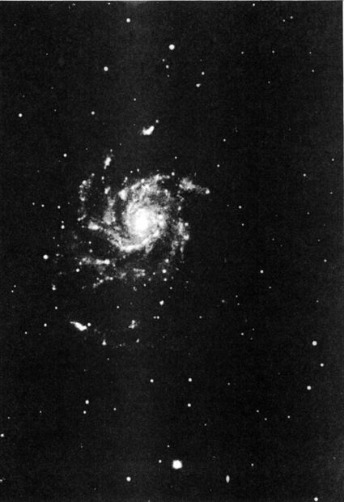
CELESTIAL PHOTOGRAPHY is one of the many exciting fields open to the amateur astronomer who has gained a “working knowledge of the heavens”. This is the galaxy M101, photographed with a 12½-inch reflector, by Evered Kreimer.
FUNDAMENTAL KNOWLEDGE FOR THE OBSERVER
GAINING A “WORKING KNOWLEDGE” OF THE HEAVENS CH.3
In the preceding chapter we toured the Universe with the speed of imagination and learned something of the various heavenly bodies and their general arrangement in space. Now we must begin a different sort of survey—an examination of the sky as it appears from the Earth. We want a “working knowledge” of the heavens; we want to be able to find our way about among the various celestial wonders; we want to be able to locate specific objects and find them easily at any time. We want to be able to find the Great Orion Nebula, the Hercules Cluster, the Andromeda Galaxy, and eventually such esoteric objects as Omicron Eridani, NGC 7789, and UX Ursa Majoris. We are dealing now with the big three fundamentals of actual observing: How do we find an object? When will it be visible? Where do we look? These are the items which will concern us in this chapter.
Following this, we shall briefly introduce some of the terms, definitions and symbols used constantly by observers, among them the magnitude system, the celestial coordinate system, and the use of angular measurement in astronomy. These things often seem wonderfully mystical to a beginner, but soon become as comfortably familiar as the hours and minutes on a clock face or the divisions on a foot rule.In astronomy, as in many other things, we grow in knowledge automatically, through experience.
How then do we begin? Let us first consider our position on Earth. We live on a rotating globe which is a satellite of one star—the Sun—some 93 million miles away. As the globe turns, we find ourselves facing sunward for a period of approximately 12 hours; then we are carried across the dark half of our planet for another 12 hours. This continual cycle of day and night is one of the outstanding features of our physical world.
For some reason, perhaps explainable by the psychology of primitive peoples, it seems natural to regard the daytime appearance of things as the normal situation and to consider the night as strange, perhaps even somewhat fearful. Nothing can destroy this false impression more quickly and thoroughly than astronomy. When we face toward the Sun, our atmosphere is so brilliantly illuminated by scattered light that the feeble rays of the stars and planets are overpowered by the glare. It is only when we are on the “night side” of the Earth that we can see the sky as it really is and as it would appear at all times if there were no atmosphere surrounding the Earth.
Obviously, the best introduction to our subject would be an actual look at the real sky itself. So let us choose a clear moonless night in some secluded spot with a clear view in all directions, away from the lights and glare of cities and highways. Here the heavens are revealed in unforgettable grandeur seldom, if ever, glimpsed by the unfortunate city dweller. Here we are face to face with the beauty, the wonder, and the mystery of creation.
“One might think,” wrote Emerson, “that the atmosphere was made transparent with this design; to give man, in the heavenly bodies, the perpetual presence of the sublime…”
THE CONSTELLATIONS
THE CONSTELLATIONS. Using our imaginations, we can trace out many seeming patterns in the stars: squares, crosses, circlets, and more elaborate figures such as the outlines of men, animals, and other objects. Several thousand years ago, the men of ancient times—the world’s first amateur astronomers—invented a number of such star patterns and named them after the heroes, beasts, and demi-gods of their own rich mythology. In more recent times, a number of additional groups were introduced by more modern astronomers, and there are now 88 standard configurations recognized— they are called the “Constellations.” Among them we find such groups as the familiar Ursa Major (Great Bear or Big Dipper) in the north; Orion, the Hunter, in winter skies, Sagittarius, the Archer, in the summer, and Cetus, the sea monster, and Pegasus, the flying horse, in the autumn heavens. Since 1930, the constellations all have definite official boundary lines defined by the International Astronomical Union, so there is never any doubt where one constellation ends and another begins. Every star in the sky has a definite constellation “address.”
Although a beginner usually thinks of a constellation as an imaginary outline figure, the serious observer soon begins to regard it as a definite area of the sky, rather like a state or country on Earth. It should be scarcely necessary to point out here that the constellations are merely artificial star groups defined by arbitrary boundaries, in much the same way as the countries of the world are areas artificially divided and marked off by arbitrary boundary lines. The stars of a constellation do not necessarily have any connection with each other; they simply lie in the same direction as seen from the Earth. The stars in any constellation are at varying distances, some of them hundreds of times more distant than others, so that the whole constellation would appear radically different if seen from some other point in space. If we suddenly took up residence in some other solar system many light years away, we would have to invent an entirely new set of constellations to fill our skies.
Nevertheless, for us on Earth the constellations form a definite and, for all practical purposes, permanent system of recording the apparent positions of the celestial objects.
We say “for all practical purposes” because it is evident that these star patterns must gradually change in the course of time. The Galaxy is rotating, the Solar System is in motion, and all of the stars are moving in various directions at velocities averaging many miles per second. It may seem surprising, therefore, that the constellation figures are not noticeably changing from year to year, or even from day to day. The answer to this puzzle lies in the vast distances separating the stars. The nearest star to our own Solar System is more than four light years distant, which is quite typical of the average separation of stars throughout space. Now a star may be moving at 30 miles per second, for example; but if we must observe It at a distance of 30 trillion miles, we shall not be able to detect any direct evidence of motion, except with highly accurate measuring instruments used over a period of years. The star’s naked-eye position will not be noticeably altered, even after centuries. Thus, it is not difficult to see why the constellation figures that we see tonight are the same ones seen by the ancient Egyptians, Chaldeans, and the pre-Homeric Greeks, three thousand years ago.
LEARNING THE CONSTELLATIONS
LEARNING THE CONSTELLATIONS. The problem of finding our way about the sky is thus substantially reduced to the problem of learning the constellations. Perhaps the simplest aid for the beginner is the device known as the “planisphere” or “star finder,” a revolving chart which may be set for any date and time and shows all the star patterns in their relation to the horizon. An inexpensive and very useful form of planisphere called the “Star Explorer” may be obtained at small cost from the Hayden Planetarium in New York City. A very similar model called the “Star and Satellite Pathfinder” is available for about $0.75 from the Edmund Scientific Company in Barrington, New Jersey. More elaborate and expensive models are obtainable from various dealers in astronomical books and supplies.
CONSTELLATION IDENTIFICATION
There are a number of relatively inexpensive books dealing with constellation identification. A long-time favorite has been the Field Book of the Skies by W. T. Olcott and E. W. Putnam. Another was McKready’s Beginner’s Star Book, now unfortunately out of print, but still obtainable frequently from dealers in secondhand books. In using any of the older books, the reader must remember that many of the astronomical facts given will often be badly out-of-date; the constellation charts, however, will remain usable indefinitely.
In using any of these charts, the observer must choose the correct chart for the time and date and then face the proper direction. Sectional charts will usually be labeled as to north, south, etc. A chart showing the entire sky will have the compass directions printed around the outer circumference, and the observer must hold the chart so that the direction he is facing appears at the bottom of the chart. The same rule holds true with the revolving type of chart. The lower edge of the chart will then correspond more or less to the horizon in that direction.
For the beginner attempting constellation identification for the first time, a few simple rules may be of some help: Start with the brighter stars and more conspicuous groups. Begin near the center of the field and work outward. Choose a clear moonless night and use a dim red light when referring to charts and maps. Such an observing light may be made by mounting a piece of red paper over a flashlight lens. Never attempt to accomplish any constellation identification with one of the artistic 18th Century types of star chart—the variety which depicts the heavens as a confusing clutter of Greek heroes and mythical monsters. These imaginary figures have no connection at all with real astronomy. Confine your attention to the charts which show the actual star patterns as they appear in the sky.
Finally, it may be well to point out that a certain amount of distortion is unavoidable in making any chart of the sky. The heavens appear to us as the inside of a great globe, and no globe—not even an imaginary one—can be truthfully represented on a flat surface such as a sheet of paper. The distortion is negligible on charts of small areas of the sky, but becomes noticeable on any map which attempts to show the entire visible heavens—or the greater part of it—on a single chart. Thus, on the rotating planisphere the constellations near the southern horizon always appear somewhat squashed from top to bottom and elongated left to right. Individual monthly charts of the sky, such as those in Sky and Telescope magazine, are considerably less affected by this sort of distortion.
THE APPARENT MOTION OF THE CONSTELLATIONS
APPARENT MOTION OF THE CONSTELLATIONS. A study of the sky (or of the planisphere) will soon show that the constellation groups do not remain fixed in the heavens, but appear to move across the sky hour by hour, in the same manner as the Sun and Moon. This apparent motion is due to the 24-hour rotation of the Earth. To verify this motion, observe the night sky at intervals of several hours, choosing some fairly conspicuous stars and comparing their positions against some earthly landmarks such as nearby trees or telephone poles. Stars in the east are rising, those in the south are moving from left to right, and those in the west are setting. The motion of stars in the northern part of the sky is more peculiar; they appear to be moving in concentric circles around a fairly bright star not quite halfway up the sky. This star is the well known Polaris, or North Star, toward which the Earth’s axis happens very nearly to point. As a result of this circumstance, Polaris does not appear to share noticeably in the apparent turning of the sky; it seems rather to remain motionless in the north while the heavens slowly revolve about it.
SEASONAL CHANGES OF THE CONSTELLATIONS. We must now consider a second apparent motion of the entire constellation pattern, a seasonal shift caused by the Earth’s motion around the Sun. The effect of this is to make every star reach the same position four minutes earlier each night. Thus a star which rises at 10 p.m. on January 1 will rise at 8 p.m. on February 1 and at 6 p.m. on March 1. In this way the constellations gradually drift westward and are replaced by new groups as the year progresses. The process is a yearly cycle and makes it possible for us to classify the constellations by seasons. Orion, Lepus, Canis Major and Taurus are typical winter constellations, for example. In the spring skies we have such groups as Leo, Virgo, Coma Bernices and Hydra. In the summer skies we have Lyra, Cygnus, Sagittarius and Scorpius; while the heavens of autumn present to our view such time-honored groups as Perseus, Andromeda, Cetus and Pegasus.
Constellations near enough to the North Star will remain continuously in view, as their apparent daily motion around Polaris will never carry them below the horizon. Such groups are called the “north circumpolar constellations.” Their number obviously depends upon the observer’s position on Earth. At the North Pole, Polaris would appear directly overhead, and all visible constellations would be circumpolar. At the Equator, Polaris would appear to lie on the horizon, and no constellations would be circumpolar. From the latitude of the United States, the constellations classified as circumpolar include the Big and Little Dippers (Ursa Major and Ursa Minor), Draco, Cepheus, Cassiopeia, and Camelopardus.
There are likewise a group of constellations classified as “south circumpolar,” of little interest to North Americans, as they never rise above the southern horizon as seen from the United States.
THE CELESTIAL SPHERE. Before introducing the next topic, let us pause briefly to review some of the facts given in Chapter 2. When we look toward the sky, we know that we are looking into limitless space; we have learned that the stars are actually great blazing suns many trillions of miles away. We are familiar with the idea that beyond these stars lie billions more, all together forming a vast disc-shaped aggregation called the “Milky Way Galaxy.” We know that this galaxy is, in turn, only one among hundreds of millions. All these things we know. Yet, for our present purpose, we must temporarily ignore such facts and return to a concept which may seem quite primitive, but which was once regarded as literally true. For purposes of observing convenience, we are going to pretend that the sky is a great hollow sphere with the Earth at its center. We must imagine the stars as being fixed to the inside surface of this “Celestial Sphere.” We can see only half the sphere at any one time, of course, the other half being out of sight beneath the horizon. As we have already learned, this fictitious sphere is in slow rotation, making one turn in four minutes less than a day. The north and south celestial poles, upon which the sphere rotates, are located directly above the Earth’s north and south poles. The Celestial Sphere likewise has an equator, which is a great circle drawn around the sphere midway between the poles. It passes directly overhead as seen from any point on the Earth’s equator.
THE CELESTIAL SPHERE THE ECLIPTIC AND THE ZODIAC
The North Celestial Pole is thus located directly above the true north point of the horizon, and its altitude is equal to the observer’s latitude on Earth. The South Celestial Pole, of course, is always below the southern horizon for observers in the Earth’s northern hemisphere.
Another great circle on the Celestial Sphere is the Ecliptic, the apparent yearly path of the Sun and the approximate path of the Moon and planets. It is also the path of the Earth as seen from the Sun, Moon, and planets. The ecliptic is tilted at an angle of 23½° from the celestial equator and intersects the equator at two points called the “equinoxes,” The Sun passes the equinoxes at March 21 and September 21. The Spring or “Vernal Equinox” is also called the “First Point of Aries,” although the point is now actually located in the constellation of Pisces.
The twelve constellations lying along the ecliptic form a band around the sky called the “Zodiac.” All the bright planets will always be found somewhere within this band. The twelve zodiacal constellations are Aries, Taurus, Gemini, Cancer, Leo, Virgo, Libra, Scorpius, Sagittarius, Capricornus, Aquarius, and Pisces.
We may now begin to see why the imaginary “Celestial Sphere” will prove useful for observational purposes. Since the sphere has both poles and an equator and since the stars are (for all ordinary purposes) fixed in their positions upon it, it is evident that we can set up a system of “celestial coordinates” for the location of objects in the sky.
CELESTIAL COORDINATES. The system will be analogous to the latitude and longitude system used on Earth. We shall be using the terms “declination” and “right ascension” instead of latitude and longitude, however. A star’s declination is its distance north (+) or south (-) of the celestial equator, measured in degrees from 0° to 90°. For accurate positions, degrees are subdivided into sixty parts called minutes of arc (‘), and each minute is divided into sixty parts called seconds of arc (“). These same units are used in giving apparent sizes and apparent distances between celestial objects, as described later in this chapter.
Right ascension is measured in hours from 0 to 24, beginning at the First Point of Aries and going eastward. The hour lines of right ascension are spaced 15° apart at the equator and converge like spokes going toward a hub at the north and south celestial poles. Hours (h) of right [ascension (RA) are further divided into sixty minutes (m), and each minute is divided into sixty seconds (s).
The celestial coordinate system makes it possible to state the position of any object or to locate any object whose coordinates are known. The practical aspects of this system will now be briefly discussed.
Let us suppose that we are using one of the standard star atlases such as Norton’s. On each of the star charts we find a superimposed grid of coordinate lines. The lines traversing the chart from top to bottom are the lines of right ascension. We will find them labeled Oh, lh, 2h, 3h, etc., at the top and bottom of each map, the numbers increasing as we go toward the left. Smaller marks between the hour lines indicate subdivisions of each hour. These are usually given at intervals of five minutes, though on some of the simpler atlases they may be given at ten-minute intervals instead. With some care we can plot (or estimate) the RA of an object to better than one-minute accuracy.
The horizontal lines traversing the chart left to right are the parallels of declination, analogous to the parallels of latitude on Earth. The lines are usually drawn for every 10° of declination, and the smaller marks between generally indicate divisions of one degree. In reading or reporting a declination we must always remember to specify whether it is north (+) or south (-). The letters “n” and “s” may also be used, as they are in this book. In all the lists of objects in this Handbook, the celestial coordinates are given in the column headed “RA & DEC.” They appear in a contracted form as follows:

In the second example, the 34s has been rounded to 0.6 minute in the RA, and the 43.6’ has been rounded to 44’ in the Dec. All positions are thus given to the nearest tenth of a minute RA and to the nearest minute of arc in Dec. This degree of accuracy is more than sufficient for all ordinary purposes.
Celestial coordinates may be used in two chief ways. First, they may be used to identify objects plotted on the star charts or to add objects which are not already shown. For example, suppose we wish to observe the very interesting double star called “61 Cygni.” The catalog position is: 21044n3828. As we should know by now, this decodes to read: RA 21h 04.4m, Dec +38°28’. Plotting this position in Norton’s Atlas, we find that it falls within the borders of the constellation Cygnus and that there is a small star shown at that position labeled “61.” The identification is thus certain, and it remains only to compare the chart with the actual sky and find the object, perhaps with the aid of a pair of binoculars.
Suppose, however, that our chosen object was the famous explosive variable star called “SS Cygni.” When we plot the catalog position (21407n4321), we find nothing shown on the atlas at that exact spot, and there is no star labeled “SS” in the region. In this case we are dealing with an object which is too faint to have been included in the atlas we are using. We can, however, still plot the position as accurately as possible on the map and then turn the telescope toward that precise spot in the sky, using a fairly wide field eyepiece. We shall now see a multitude of faint stars in the field, perhaps more than 100. Which one is SS Cygni? To identify it, we need a detailed chart of the field. For this star, and most of the other variables chosen for detailed description, finder charts are given in this book. After some problems with the orientation of the chart and perhaps after rechecking the atlas position and re-aiming the telescope several times, we eventually identify the brighter stars in the field and locate SS Cygni.
The second way in which RA and Dec may be used involves the installation of a pair of calibrated dials called “setting circles” on the telescope. These read the celestial coordinates directly and enable the observer to point the telescope toward any object of known position. To do this, however, the telescope must be equatorially mounted and accurately aligned on the celestial pole. Preferably, it should also be equipped with a good clock drive. The opinion has occasionally been expressed that setting circles are an absolute necessity if the observer wishes to locate the thousands of interesting objects in the skies above. This is, of course, utter nonsense and is somewhat equivalent to saying that it is impossible to locate New York without knowing its latitude and longitude. Finding objects is a simple matter of becoming familiar with the star patterns so that star charts may be used intelligently. The most elaborate telescopic equipment is no substitute for the observers self-achieved knowledge of the celestial geography—it may in fact act as a barrier to the attainment of that knowledge. Plan to know the sky. Keep mechanical devices in their proper place—as servants and aids to learning, but do not let them rob you of the joy and pride of firsthand knowledge.
PRECESSION
PRECESSION. It is obvious that the celestial coordinates of an object are not absolutely permanent values. All the stars are moving in space in various directions, and these motions will gradually change every star’s position on the celestial sphere. As we have seen, such changes are extremely slow. Much more rapid, however, is another phenomenon known as “Precession of the Equinoxes,” or simply “precession,” a gradual shifting of the direction of the Earth’s axis in space. Precession does not alter the constellation outlines or change their boundaries with respect to the stars, but causes a slow drifting of the entire celestial coordinate system on the celestial sphere. Thus the right ascensions and declinations of all the stars are gradually changing, not because of the actual motion of the stars, but because of the drifting of the coordinate lines past them.
Precession is caused chiefly by the pull of the Moon on the Earth’s equatorial bulge and, to a lesser extent, by the pull of the Sun and the planets. The total effect is to make the Earth’s axis perform a circular “wobble” resembling the motion of a “dying top,” with a period of about 25,800 years. In the course of one such wobble, the Earth’s axis traces out a circle some 47° in diameter in the sky. Obviously, this means that the position of the celestial poles is constantly changing with respect to the star patterns. About 12,000 years ago the Earth’s axis pointed in the general direction of the star Vega, which was then the Pole Star. When the Pyramids were built, the star Thuban occupied the position of honor. Now the star we call “Polaris” marks the point. In 1960 it was slightly less than one degree distant from the true Pole, and the distance will continue to decrease during the next century.
Because of precession, a star chart or a star position is absolutely accurate only at the time or “epoch” for which it is intended. It is customary to adopt certain years as “standard epochs” for star charts and position I catalogs, that of 1950 being the current standard. The well known Norton’s Star Atlas and the new Skalnate-Pleso atlas are both “epoch 1950,” as are all the positions given in this Handbook. All objects in this book can therefore be plotted directly on either of these standard atlases. If, however, we have an “epoch 1920” position of an object from an older catalog and wish to plot it on an “epoch 1950” chart, we must first apply a slight correction to bring the position up to date. For this we refer to the “Precession Tables” in Norton’s Atlas.
The effect of precession over a few years is not great and may be safely ignored by the beginner or average amateur. In the course of time, however, the effect adds up and becomes noticeable. A few pages ago we mentioned the fact that the so-called “First Point of Aries” (the intersection of the celestial equator and the ecliptic at 0 hours RA) is now actually in the constellation of Pisces. In the lsast 2,000 years the shift caused by precession has amounted to nearly 30°, sufficient to move the point into the next constellation. In the course of a century the RA of a star may change by as much as a degree or more, depending on the position of the individual star. During the next 25,800 years, most of the stars will pass through every hour of RA, from Oh to 24h.
Although precession may be of no actual practical interest to the beginning observer, it has been thought advisable to include a short discussion of the effect in this chapter, to demonstrate that the RA and Dec of celestial objects are not absolutely unchanging values, and also to help the earthbound observer to sense his situation on a moving, oscillating platform.
As seen from Latitude 35° to 40° North
DIRECTIONS IN THE SKY are defined by the celestial coordinate system. An object is said to be directly east or west of another if both lie on the same declination; an object is directly north or south of another if both lie on the same line of RA. For the simplest case, let us imagine we are facing directly south and looking at a bright star, as shown in Figure 1. Then “north” will be straight up, “south” will be straight down, “east” will be toward the left, and “west” toward the right. The seeming reversal of east and west may confuse beginners, but it is the natural and obvious result of looking outward from the Earth instead of down upon it. When we face south, east IS toward our left, and west is to our right.
In other parts of the sky the directions become more confusing because our guiding lines of RA and Dec may appear tilted in various directions. In Figures 2, 3, and 4, we attempt to clarify this situation by showing the orientation of the lines as they would appear if “printed” on the sky, along with a properly oriented star chart.
Another way of giving directions in the sky is by the use of “position angles” (PA). A position angle of 0°Indicates exact north; 90° is east; 180° is due south; and 270° is west. This system is used in giving the direction of a faint companion from its primary in double stars and in other applications, such as the direction of a moving object.
The question of directions in the sky has been briefly discussed here in order to discourage the use of such inadequate terms as “toward the upper left” or “a little below and to the right” in astronomy. These orientations are suitable only for the immediate moment but will change continually as the Earth rotates, and therefore cannot be used in any permanent definition of a direction in the sky. It is far better that the serious observer should attempt to familiarize himself with the “framework” of the celestial sphere and the coordinate system. In the learning of such things, the use of star charts under the actual sky will soon accomplish what no amount of written instruction can do. The facts given in this chapter are not to be memorized or “learned”; they are to be used. Firsthand knowledge is our goal, and the sky itself is our teacher.
THE ZENITH, THE MERIDIAN SIDEREAL TIME
OTHER TERMS. We must now introduce a few astronomical terms which may not be completely unfamiliar, even to the average beginner. The ZENITH of a place is the point directly overhead; the corresponding point below the feet is called the “nadir.” As astronomers, we shall have little use for this. A line drawn across the sky from the north to south, passing through the zenith, is called the “MERIDIAN.” As the celestial sphere rotates, all objects must cross or “transit” the meridian once a day; such a passage is called a “culmination.” At culmination, a celestial object is midway between rising and setting and is also at its highest altitude above the horizon. As a familiar example, the Sun culminates at local noon. As we have already seen, every star culminates four minutes earlier each day.
“Sidereal time” or “star time” is measured by the passage of the RA hour lines across the meridian. The sidereal time at any instant is simply the RA which coincides with the meridian at that moment. The bright star Aldebaran, for example, has an RA of 4h 33m. When this star is crossing the meridian, the sidereal time is therefore 4h 33m. For the beginning observer, sidereal time is chiefly useful as an indication of the constellations which are well placed for observation at any given time. For example, suppose we are planning to observe at 10 p.m. on August 5. From the accompanying table (Table I), we find that the approximate sidereal time will be 19h. Referring to our star atlas, we now find the 19-hour line of RA on our star chart and note that it runs through the constellations of Sagittarius, Aquila, Lyra, and Draco. These will be the groups that will be well placed for study at our chosen time. Of course, many other constellations, though not actually on the meridian, will still be in conveniently observable positions.
TABLE I - APPROXIMATE SIDEREAL TIME
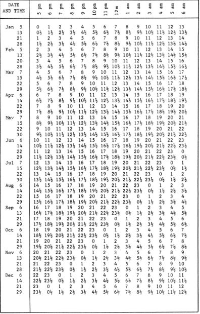
ANGULAR MEASUREMENT. This is a method of expressing the apparent sizes and distances between objects in the sky. Uninformed persons often say that the Moon looks “about a foot across” or that one star is located “about two inches” below another. In place of this unscientific and essentially meaningless way of describing apparent sizes and distances, the astronomer uses a system of “angular measurement” based on the divisions of the circle. As we know, a circle contains 360 degrees, and thus any line drawn from the true horizon to the zenith would be one-quarter of a circle and would therefore contain 90 degrees. Any object apparently covering 1/9 of this distance would have an angular size of 10 degrees. The separation of the two bright stars at the front of the Great Dipper’s bowl is approximately 5 degrees. The Moon has a diameter of about half a degree; so does the Sun, incidentally, which is one way of pointing out that the angular size or apparent size has nothing to do with actual diameter. The Sun is actually 400 times larger than the Moon, but as it is also 400 times farther away, both have the same angular size of half a degree, as would a one-inch disc placed 9½ feet away.
A degree is the apparent size of any object whose distance is 57.3 times its diameter.
The symbol for the degree is (°). For the measuring of objects of small apparent size, it is divided into 60 minutes of arc (‘), and each minute is further divided into 60 seconds of arc (“). These symbols, unfortunately, are identical to those commonly used for feet and inches; so the beginner must be on his guard and remember their new meaning.
A minute of arc (l’) is about the smallest angular quantity which can be perceived by the best human eyes without optical aid. The planet Venus attains an approximate size of 1’ when it is nearest to the Earth; at such times its disc is almost detectable with the naked eye. A second of arc (1”) is an exceedingly tiny quantity, as you may imagine—it is the apparent size of a 25-cent piece seen from a distance of slightly over three miles. The orbit of the Earth, if seen from the distance of the nearest star (4.3 light years), would subtend an angle of about 1½”.
The observer will, of course, wish to know what a second or minute of arc implies in terms of actual observing at the telescope. How does a 10” double star, for example, appear through a typical sixinch telescope? Will it appear widely separated, just barely divided, or single? The answer, naturally, depends upon the size and quality of the instrument and, to a lesser extent, upon the atmospheric conditions, the relative brightness of the two stars, etc. But to answer the question purely in terms of the apparent separation, a 10” pair should be quite easily divided in any good two-inch glass with a medium power, and pairs of 5” should be found not at all difficult with some experience. The theoretical limit for a good three-inch telescope is about 1½”, and for a sixinch about 0.75”. Under the best conditions, even closer pairs may be detected by an elongation of the image, although true separation is not achieved.
It should be obvious that there is a direct relation between the apparent or angular size of an object, the actual diameter, and the distance. If any two of these quantities are known, the third may be determined by the principles of geometry. For objects of stellar and galactic distances, the accompanying Table II has been prepared. We give here an example of its use: A certain galaxy has an apparent diameter of 10’. The distance is known to be 20 million light years. What is the actual diameter? From the table the answer is slightly under 60,000 light years. For a second example: A double star has an apparent separation of 2”. The distance is known to be 75 light years. Assuming that the two stars are actually being seen side by side, what is the real separation of the pair? In this case we must interpolate between values in the table. The answer is about 46 astronomical units (46 times the Earth-Sun separation).
THE MAGNITUDE SYSTEM
MAGNITUDE SYSTEM. This is a method of expressing the apparent brightness of a celestial object. In the original system, initiated by Hipparchus and Ptolemy some 2000 years ago, the 20 brightest stars in the sky were collectively grouped together as stars of the first brightness class or “first magnitude.” Stars about 2½ times fainter were classified as stars of the “second magnitude”, those still fainter were classified as “third magnitude,” and so on. Stars of the sixth magnitude were at the limit of naked-eye visibility.
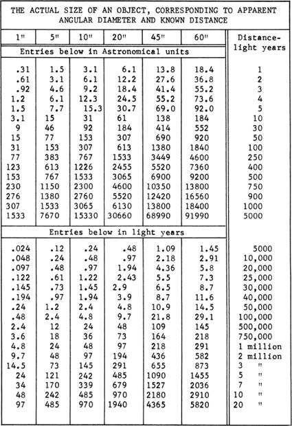
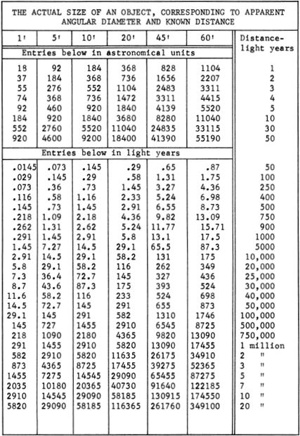
This system, virtually unaltered, is still in use today. The exact ratio between magnitudes has been set at 2.512, this having the advantage of making a difference of 100 times in brightness for a difference of five magnitudes. Mathematically-minded persons will thus perceive immediately that the magnitude scale is a logarithmic one and that the number 2.512 is the fifth root of 100. A star of the first magnitude is thus 100 times brighter than a star of the sixth magnitude.
The difference in brightness for any difference in magnitude is given in the short table opposite (Table III).
Some writers have spoken of the magnitude system as confusing, since the magnitude number grows larger as the star grows fainter. The confusion will disappear immediately if the word “class” is substituted for “magnitude.” Obviously, we would expect a “first class star” to be brighter than a second or third class star. And the term “fourth class” already begins to suggest faintness and unimportance.
The theoretical magnitude limits of various size telescopes are given in tables by various authors, but can never be rigidly defined because of such variable factors as sky conditions, the condition of the telescope, the sensitivity of the observer’s eyes, etc. It is commonly said that the limit of a three-inch telescope is magnitude 11.5, of a sixinch about 13.0, and of a ten-inch about 14.1. These estimates are undoubtedly on the conservative side and may possibly be extended up to 1.5 magnitudes under excellent conditions. In April 1965, observations of Pluto were made by the author with a ten-inch reflector at Lowell Observeatory. The planet was then magnitude 14.1 and was seen with no difficulty whatever; nearby field stars of magnitude 15.3 were glimpsed frequently. Seeing conditions and sky transparency were good, but not exceptionally so.
Similarly, we may question the supposed naked-eye limit of sixth magnitude. Experienced observers often reach seventh, and in laboratory tests artifical stars of magnitude 8½ have been detected against a completely dark background. The present limit for any existing telescope appears to be about magnitude 23½, reached by the 200-inch reflector at Mount Palomar. This is about two million times fainter than the faintest stars visible to the unaided eye.
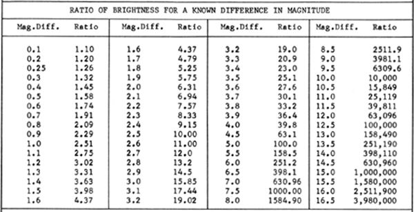
Ratios may be multiplied together to obtain figures 4.5 = ratio 63.1 not given in the table. For example: For a magnitude 0.2m = ratio 1.2 difference of 4.7 mags, we have the result shown here: Then 63. 1 X 1.2 = 75 7
The exact magnitude of a star on the standard scale can be accurately determined by modern photoelectric devices, and magnitudes are usually given to the nearest tenth— often to the nearest hundredth. Polaris, for example, has a catalog magnitude of 1.99, meaning that it may be regarded for all practical purposes as a standard second magnitude star. The magnitudes of the stars forming the Great Dipper, beginning at the front of the bowl and proceeding to the end of the handle, are as follows: 1.81, 2.37, 2.44, 3.30, 1.79, 2.40, and 1.87. In ordinary astronomical conversation, we would refer to all of these as “second magnitude stars,” with the exception of the fourth in the list, which is obviously third magnitude. In the bowl of the Little Dipper we find an interesting opportunity to familiarize ourselves with the appearance of various magnitudes; the four stars are second, third, fourth and fifth magnitudes.
The 20 brightest stars in the sky are still referred to as “first magnitude stars. “ However, they are not all equally brilliant, and only one (Spica) has a magnitude of exactly 1.00. On the present scale, there are 22 stars brighter than magnitude 1.5.
It is evident that a star 2½ times brighter than magnitude 1.00 will have to be assigned a magnitude of 0.00, while one still brighter will actually have a negative or minus value. Thus Vega is magnitude 0.04; Sirius, the brightest star in the sky, has a magnitude of -1.42; while the planet Jupiter is usually brighter than -2.0, and Venus reaches -4.4 on occasion.
APPARENT AND ABSOLUTE MAGNITUDES
“DISTANCE MODULI” COLOR INDICES
Here it may be well to point out that the term “magnitude,” when used alone, is understood to mean “apparent magnitude,” the apparent brightness of a celestial object as seen by us. This has nothing to do with the actual or real luminosity of the object. The “absolute magnitude” of a star is the magnitude that the star would have if it were brought to a standard distance from the Earth, the distance agreed upon being 10 parsecs, or about 32½ light years. In astronomy, the symbol for apparent magnitude is usually a small letter “m,” while for absolute magnitude a capital “M” is used. The difference between apparent and absolute magnitudes is the quantity called the “distance modulus” or (m-M), which converts directly to an actual distance (Table IV), assuming that none of the light has been lost through absorption by interstellar dust or nebulosity. In many regions of space, a correction for such a light loss must be made; otherwise the derived distance will be overestimated.


For an example, the star Rigel is magnitude 0.14 and it is about 900 light years away. If brought to a distance of only 32½ light years, its magnitude would rise to -7.1. Thus its apparent magnitude is 0.14, and its absolute magnitude is -7.1.
For another example, our Sun, if removed to the 32½ light year standard distance, would appear as a star of magnitude 4.8. This then is its absolute magnitude. The figure for Rigel, as we have just seen, is -7.1. The difference is 11.9 magnitudes, which tells us (Table III) that Rigel is about 57,000 times more luminous than the Sun.
This example is given to dramatize the obvious fact that there is a definite relation between the apparent magnitude, absolute magnitude, and distance of an object. If any two of these quantities are known, the third can be determined. Absolute magnitude can also be converted directly into actual luminosity in terms of the Sun. (Refer to Table V.)
Before ending this brief description of the magnitude system, we must mention one additional point: we have been speaking of “visual magnitudes,” star brightness as seen by the normal eye. Photographic plates and photoelectric instruments “see” the stars differently, and there are thus a variety of magnitude scales—photographic, photoelectric, bolometric, etc. The differences between the various measurements are chiefly a function of the color or temperature of the star; and thus the various scales are interrelated by quantities known as “color indices.” In its simplest and original meaning, the color index of a star is the difference between its visual magnitude and its photographic magnitude. The hotter and bluer stars appear brighter on the ordinary photographic plate than they do to the eye; whereas the redder and cooler stars appear fainter. By agreement, the two scales were set to give a color index of zero for stars of spectral type A0. A negative color index implies a hotter and bluer star, and a positive index indicates a cooler and redder one, as given in the brief table below:
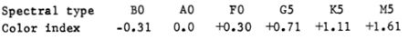
Color indices greater than two magnitudes are rare; the extremes are reached in the cases of the N-type red stars (S Cephei, R Leporis), where the color index exceeds five magnitudes. In reporting a color index, it is always necessary to specify whether it is “plus” or “minus.” It is well to adopt the same policy with regard to absolute magnitudes, even though a figure is understood to be “plus” unless it is actually labeled with a minus sign.
Throughout this “Celestial Handbook” all magnitudes given are visual, unless otherwise noted.
STAR NAMES AND DESIGNATIONS
STAR NAMES AND DESIGNATIONS. Most of the brighter stars in the sky have their own proper names which have been used since remote antiquity. We have already mentioned such examples as Vega, Aldebaran, Polaris, and Rigel. About thirty such names are in common use. It would be obviously impossible, however, to assign proper names to all of the 6000 naked-eye stars, not to mention the millions of others visible only through the telescope. A more practical system was devised by Bayer in 1603; he assigned each star in a constellation a letter of the Greek alphabet, beginning usually with Alpha for the brightest, Beta for the second brightest, Gamma for the third, and so on. In a few cases, however, as in the Great Dipper, order of position was used instead of order of brightness. The Greek letter was followed by the name of the constellation written in the possessive or “genitive” form. Thus the brightest star in Lyra became “Alpha Lyrae.” The second brightest star in Cepheus is designated “Beta Cephei.” It also has a proper name, Alfirk, but such names are rarely used for stars below the first magnitude.
Those interested in the lore of star names are referred to R. H. Allen’s classic work Star Names and Their Meanings, now available in a paperback reprint from Dover Publications, Inc., in New York.
The entire Greek alphabet is given here for the beneifit of beginners who may be unfamiliar with Greek. To encourage those who may despair at the thought of learning such strange symbols, it should be stated here that no attempt to memorize the list is necessary. Any amateur who uses star charts and atlases will soon gain a knowledge of the letters without even trying.
STAR NAMES AND DESIGNATIONS THE GREEK ALPHABET

When gaining familiarity with the letters, remember that different star maps may show them in slightly different styles, just as no two persons make their English letters exactly the same. After a little experience, this should confuse no one.
After the supply of Greek letters is exhausted, the remaining stars of a constellation are given ordinary numbers according to a system devised by Flamsteed. The numbering begins at the western border of a constellation and proceeds eastward. Thus we have such star designations as “61 Cygni,” “23 Orionis,” and “89 Virginis.” To find such stars, we must consult our charts of Cygnus, Orion, and Virgo and look for the small stars labeled 61, 23, and 89. Of course, if we have the celestial coordinates (RA and Dec) of these stars, we can locate them on the chart whether or not they are identified by number.
The Greek letters and the Flamsteed numbers take care of most of the brighter stars of a constellation. Fainter objects are usually identified by their numbers in one of the standard catalogs used by professional astronomers. Examples are:
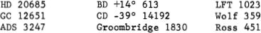
The “HD,” “GC,” “BD,” and “CD” are comprehensive lists of thousands of stars by position, magnitude and (in the case of the first two) spectral type. These catalogs would be of very little use to the observing amateur and are mentioned here only because such numbers appear often in astronomical literature and appear occasionally in this book. The other five examples are lists of stars of special interest (doubles and stars of large proper motion) identified in each case by the astronomer who compiled the work. Although we may refer to these numbers from time to time in this Handbook, it is again evident that the catalogs themselves would be of very little use to the amateur observer; they are intended mainly as reference works for the professional astronomer.
For double and variable stars, additional systems of nomenclature are in common use. A faint double star may be designated by its number in one of the standard lists such as those of Aitken (ADS), Struve ( Σ or OΣ ), Dunlop (∆), Sir John Herschel (h), S. W. Burnham (β), T. E. Espin (Es), W. J. Hussey (Hu), etc. Hence we find stars marked h4848, Σ22051, ∆49, β328, etc.
A variable star is usually designated by a single or double Roman capital letter, such as R Virginis, T Ceti, VV Cephei, and SX Persei. This system allows 334 variable stars to be designated in any constellation; any further discoveries are designated V335, V336, etc. However, if a bright variable star already has a Greek letter designation, it is retained, and no additional designations are given.
Novae are designated in the same manner as other variable stars, though frequently a bright nova will be referred to merely by the constellation and date—thus “Nova Persei 1901” and “Nova Aquilae 1918.” In the standard variable star catalogs these appear as “GK Persei” and “V603 Aquilae.” Both designations are in common use, and both are correct.
Star clusters, nebulae, and galaxies are generally designated by their numbers in the New General Catalogue (NGC) of John Dreyer, published in 1888 or in the older lists of Charles Messier (M) which date from the last half of the 18th Century. Thus we have such numbers as “NGC 6205” or “M13.” There is also a supplement to the NGC called the “Index Catalogue” (IC). Another system, devised by Sir William Herschel, is also in use. In his catalog we find such numbers as “HV 24” and “HIII 830.” The “H” stands for Herschel, of course. The “V” and “III” are Roman numerals indicating the class of object. On star atlases these numbers are shortened for practical reasons; the “H” is omitted, and the rest of the number is written in a contracted form: “245” and “8303”. Herschel numbers are little-used today except for their appearance in the standard Norton’s Atlas, and for this reason alone they are included in the lists in the present Handbook.
Herschel’s classification system is given here, though the modern observer must regard these classes with caution. They were based upon the visual appearance of the object in Herschel’ s telescopes and frequently tell us nothing about the true nature of the object. The distinction between true nebulae and external galaxies had not, of course, been made in Herschel’s time; and the great majority of his first five classes are now known to be external galaxies. Some of his class IV objects, “planetary nebulae,” are in fact external galaxies. The Herschel classes are:
|
I. |
Bright nebulae |
|
II. |
Faint nebulae |
|
III. |
Very faint nebulae |
|
IV. |
Planetary nebulae |
|
V. |
Very large nebulae |
|
VI. |
Very compressed rich clusters of stars |
|
VII. |
Compressed clusters of small and large stars |
|
VIII. |
Coarsely scattered clusters of stars |
Practically all the brighter clusters, nebulae, and galaxies have NGC numbers, regardless of whatever other designations they may have. Thus NGC 1976 is also known as M42 and has a further popular name—the “Great Nebula in Orion.” The Messier (M) list contains 103 of the brighter objects (some modern lists add several more) and is a good reference for the beginner. Messier never had access to a large telescope, and all the “M” objects are fairly conspicuous in small instruments. The complete list, brought up to date with modern identifications, appears in the final “Index and Tables” section of this Handbook.
THE SMALL TELESCOPE STAR ATLASES
THE USE AND CARE OF THE SMALL TELESCOPE is a topic not directly covered in this book. The author assumes that the typical user of this Handbook is the owner of a telescope in the 2-inch to 12-inch range, who has learned by direct experience (the best way!) how to use the instrument effectively. For those who wish advice in the matter of purchasing a good instrument, I recommend a new book by Dr. Henry E. Paul, Telescopes for Skygazing. And for those who need a comprehensive guide to observing techniques, covering all such practical matters as light grasp, resolution, vision, seeing effects, choice of oculars, accessories, etc., no better guide exists than the Amateur Astronomer’s Handbook by J. B. Sidgwick.
The vast majority of the objects listed in the Celestial Handbook can be studied in a good 6-inch reflector, probably the best telescope for a serious start in observing. But I would make one recommendation—whatever the size of the telescope, it should be used in conjunction with a good pair of 7x50 binoculars or other comparable low-power wide field instrument. Some observers, in fact, strongly advise that the beginner spend at least a few months exploring with binoculars, getting to know the sky, before graduating to the telescope. There is much to be said for this viewpoint. And, finally, for the enthusiast who wants the incomparable thrill of viewing the heavens through a telescope of his own making, I recommend A. J. Thompson’s Making Your Own Telescope.
STAR ATLASES
USING A STAR ATLAS. Earlier in this chapter we mentioned the use of the planisphere or simple star charts for the purpose of learning the constellations. For the location of many of the specific objects of interest within each constellation, however, we require more detailed charts drawn on a larger scale, naming and identifying various objects of interest. A collection of such charts is called a “star atlas” and is an absolute necessity for the serious observer. Possibly the best star atlas for the average amateur, and even for the beginner, is Norton’s, available from most dealers in scientific and astronomical books. Eight double page maps cover the entire celestial sphere, showing all the naked-eye stars, hundreds of star clusters, nebulae, variable stars, and other objects of interest. Some 60 pages of compact information-packed notes precede the charts, making this one of the most useful reference books the amateur can own. Norton’s Atlas measures 11” by 8½”. The current price of the 16th edition is $12.50.
On an even larger scale is the new Skalnate Pleso Atlas of the Heavens compiled by Antonin Becvar and his associates at the Skalnate Pleso (Rocky Lake) Observatory in Czechoslovakia. This work is the most complete atlas available for all-purpose observing and may be ordered from the Sky Publishing Corporation, Cambridge, Massachusetts. It is a set of 16 charts, each measuring 22” by 16”, bound in the form of a large portfolio-size book and covering the entire heavens down to magnitude 7.75. Double stars, variables, clusters, nebulae, and galaxies are all identified by appropriate symbols printed in various colors. Star clusters are shown in yellow, diffuse nebulae in green, the Milky Way in blue, dark nebulae in grey, and galaxies in red. The Skalnate Pleso Atlas has recently been re-issued in a revised edition in a more compact format, and in 1976 was being offered at $14.00. A simpler “field edition” with stars in white on a black background, and on a somewhat reduced scale is also available at $5.00.
The present Celestial Handbook is intended for use with either Norton’s or the Skalnate Pleso Atlas, and the serious observer would do well to have both of them.
********************
The preceding sections of this chapter have been focused on the theme “Gaining a Working Knowledge of the Heavens.” We now turn to the celestial objects themselves, briefly reviewing some of the standard terms, definitions, and symbols used.
THE STARS are other Suns, located at immense distances, and existing in a wide variety of types and sizes. The Sun itself is so “typical” a star that it may be used as a standard by which to compare the others. Thus, in this book, the masses, diameters, luminosities, and densities of the stars are given in terms of the Sun; for typical examples of this usage, refer to the descriptions of such objects as Eta Cassiopeiae, Xi Bootis, 61 Cygni, etc. The astronomical symbol for the Sun is  .
.
THE SPECTROSCOPE
THE SPECTRAL CLASSES of the stars are mentioned constantly throughout this book, requiring even the most casual observer to have some understanding of their meaning. The spectroscope is an instrument which analyzes light. The ultimate nature of light may remain one of nature’s mysteries; but as a useful analogy we may imagine that a light beam consists of a series of wave-like “ripples” moving outward at tremendous velocity from the light source, much as the ripples on a pond spread out when a stone is dropped into the water. The color of the light is a function of the crest-to-crest distance or “wavelength” of these ripples, calibrated in “angstrom units” of one ten-millionth of a millimeter and identified by the symbol (λ) preceding the number. The longest visible wavelengths (about λ7600) produce the sensation of red, and the shortest (about λ3900) produce the sensation of violet. All the other visible colors lie between these two extremes.
TYPES OF SPECTRA
The spectroscope analyzes light by sorting out all the wavelengths from longest to shortest and presenting them in systematic order in the form of a long, colored band called a “spectrum” which may be seen visually or be photographed. The most familiar example of a natural spectrum is the rainbow. In this case, the “dispersion” or spreading out of the light is accomplished by water droplets in the atmosphere, each acting as a tiny prism. In the spectroscope, the light is passed first through a fine, narrow slit, generally less than 1/500 inch in width, and then through a prism or series of prisms. In some models, a “diffraction grating” may take the place of a prism. The resulting spectrum may be directed into an eye-lens for actual viewing or projected onto a photographic plate. Professional spectroscopes are often equipped with a calibrated scale so that the wavelength of any spectral feature may be determined; in astronomical photography of spectra the calibration is obtained by photographing a “comparison spectrum” from an artificial light source on the same plate.


Since the colors of the spectrum are arranged according to wavelength, they always appear in the same order, with red at one end and violet at the other. Beyond both ends of the visible spectrum are other wavelengths — infrared and ultraviolet—which cannot be seen by the eye, but which may be recorded with special photographic equipment and also with certain photoelectric devices.
There are three basic types of spectra:
1. A glowing solid, liquid, or gas under high pressure emits the full range of all wavelengths, producing a complete band of color. This is a “continuous spectrum.” An ordinary electric light shows a spectrum of this type since the light source is an incandescent solid.
2. A glowing gas under low pressure radiates only in certain frequencies, producing an “emission spectrum,” a pattern of bright lines at certain definite positions in the spectrum. The reason for this is found in the actual structure of each type of atom; thus the pattern of lines produced by each element or compound is as unique as a fingerprint and positively identifies the type of atom which is emitting the light. Some elements have a very simple pattern consisting of a few lines, while others produce patterns containing many dozens of lines.
3. A rarified gas, when at a lower temperature than the light source, absorbs the same frequencies which it would emit if it were hot and glowing. Thus when light passes through such gas, various wavelengths are absorbed and appear as dark lines or bands in the spectrum. This is called an “absorption spectrum.”
A typical star spectrum is of this third type, because the dense glowing mass of the star produces a continuous spectrum, but various wavelengths are absorbed by the thinner gases of the star’s atmosphere. The spectrum of our nearest star—the Sun—contains thousands of dark lines, and in this way most of the elements known on Earth have been identified in the Sun. The Sun is not, however, one of the hottest stars or one of the coolest; it is a rather average type called “class G2” by the astronomers. Stars can be arranged in various classes by their spectral characteristics, and this classification system is the central subject of this discussion.
|
|
0 |
Blue-white; high temperatures (35,000°K), large masses, high luminosities; lines of ionized helium, nitrogen, oxygen, in addition to hydrogen. Typical examples = Zeta Puppis, Lambda Orionis, 15 Monocerotis. |
B |
Blue-white; high luminosities; temperature 20,000°K, large masses. Strong helium lines with greatest intensity at B2, vanishing at A0. Sometimes called “Orion stars”. Typical examples = Rigel, Spica, Regulus, Alpha Eridani. |
A |
White- “Sirian” or “hydrogen” stars; temperature 10,000°K; luminosities average 50 to 100 times Sun. Strong hydrogen lines, helium absent. Examples = Sirius, Vega, Altair. |
F |
Yellow-white; temperature 7000°K; weaker hydrogen lines, strong lines of calcium with other metallic lines increasing. Examples = Canopus, Procyon, Alpha Persei. |
6 |
Yellow- “Solar type” stars; temperature 6000°K; weaker hydrogen lines, prominent lines of many metals. Examples = the Sun, Capella, Alpha Centauri. |
K |
Orange- “Arcturian” stars; temperature 4000° to 4700°K; complex spectra with many strong lines of metals, faint hydrogen lines, hydrocarbon bands appear. Examples= Arcturus, Pollux, Alpha Ursa Majoris. |
M |
Red stars-temperature 2500° to 3000°K; rich spectra showing many strong metallic lines with wide bands produced by titanium oxide. Many M-type variables show bright hydrogen lines, indicated by spectrum “Me”. Examples = Antares, Betelgeuse, Mira. |
N |
Deep red= cool giants of temperature 2500°K; peculiar banded spectra showing carbon compounds; mostly variable stars. Examples = S Cephei, R Leporis, Y Canum Venaticorum. |
R |
Orange-red; similar to type N, somewhat higher temperature, carbon bands weaker. May form connecting link between classes G and N. Examples = S Camelopardi, RU Virginis. |
S |
Red; resembles type M, but titanium oxide bands are replaced by zirconium oxide. Complex spectra, usually variable, with hydrogen emission lines. Example = R Cygni. |
W |
Wolf-Rayet Stars; hot blue giants, high temperatures and luminosities, resemble 0-type, but show broad emission features caused by expanding gaseous shell, extremely turbulent atmospheres. Temperature 50,000°K and higher. Example = Gamma Velorum. |
The vast majority of stellar types may be arranged in a logical sequence, each spectral class gradually merging into the next. The chief classes now recognized are identified by the letters 0, B, A, F, G, K, and M. Each class contains ten subdivisions numbered from 0 to 9. Thus a “B5” star is approximately midway between B0 and A0. The classes define a temperature sequence—or color sequence—which amounts to the same thing. Stars of type 0 and B are blue-white; A stars are white; F and G stars are yellowish; K stars are orange, and M stars are red. Three additional classes, R, N, and S, are used for stars which resemble type M but show certain spectral differences, as described in the short summary on the opposite page. Stars of type N are the reddest known.
Prefixes and suffixes are often used to further define the status of a star. Some typical examples are:
|
dM2 |
Prefix “d” indicates ordinary dwarf star. |
|
gM5 |
Prefix “g” indicates giant star. |
|
DA |
Prefix capital “D” indicates white dwarf star (degenerate star). |
|
B2e |
Suffix “e” indicates emission spectrum, bright lines replacing certain dark absorption lines. |
|
A5p |
Suffix “p” indicates spectral peculiarities. |
As we study the spectral series from type 0 to type M, we find a gradual increase in the number and complexity of the spectral lines and bands, the cooler stars showing by far the richest spectra. This does not necessarily imply any fundamental difference in chemical composition, but is largely the effect of temperature. In the cool N-type stars, for example, we find rich banded spectra produced by carbon compounds in the atmosphere of the star; these would be destroyed by significantly higher temperatures. The spectral features depend not only upon the elements present, but also upon the temperature. Thus the interpretation of stellar spectra is a complex study, and many stars display spectral peculiarities which still defy explanation.
The terms “early” and “late” are often used in referring to spectral classes; 0 and B stars are “early” types, and M stars are “late” types. The terms simply refer to the position of the class in the standard sequence of letters O-B-A-F-G-K-M and have no connection with the star’s evolution or history.
The “Doppler Effect” is the displacement of the whole pattern of spectral lines due to the motion of the star (or of the observer). If a star is approaching, the lines are shifted toward the violet; if it is receding, they are shifted toward the red. The amount of displacement may be converted to actual velocities in miles per second in the line of sight, a measurement known as the star’s “radial velocity.” The term “red-shift” has gained great fame in astronomical literature since it is a phenomenon displayed by all the external galaxies, with the exception of the very nearest ones. This “cosmological red-shift,” interpreted as a Doppler effect, seems to indicate that the entire Universe is expanding.
The Doppler principle may be used also in detecting and measuring stellar rotation and in detecting orbiting double stars which are too close to be separately seen by any telescope.
STAR MOTIONS, TEMPERATURES
STAR MOTIONS. In addition to radial velocity, astronomers deal with several other varieties of star motion. The “proper motion” is the actual displacement of a star over a period of time, compared to the background of extremely distant objects which can be regarded as fixed in position. For example, in comparing photographs made just one year apart, we find that the star Omicron Eridani is changing its position by more than 4” per year. This is a direct indication that the star is relatively close. The greatest known proper motion is shown by Barnard’s Star in Ophiuchus, which is moving about 10.29” per year.
Once the distance is known, the proper motion may be converted to actual speed in miles per second across the line of sight; this figure is called the “tangential velocity.” Finally, if both the radial and tangential velocities are known, the true “space velocity” is easily computed from simple geometrical principles.
TEMPERATURES in astronomy are usually given on the absolute or “Kelvin” scale; the divisions in degrees are equal to those of the more familiar Centigrade scale, but the starting point is much lower, in fact, at absolute zero. Thus 0°K = -273°C, the temperature at which all molecular motion theoretically ceases. Similarly, 100°C, the boiling point of water, is 373°K. In dealing with very great temperatures such as those found on stars, the two scales may be regarded as virtually identical. In any case, no conversion table is required since the difference is always exactly 273 degrees.
THE H-R DIAGRAM
THE H-R DIAGRAM or color-magnitude diagram is a graph upon which stars are plotted by spectral type and actual luminosity. It is named for the two scientists Russell and Hertzsprung who first used it in 1913 in one of the early attempts to arrange the many types of stars into a meaningful system. A typical H-R Diagram is shown on the following page. The vertical coordinate represents absolute magnitude or actual luminosity in terms of the Sun, with the most luminous stars near the top and the faintest near the bottom. The horizontal coordinate represents color, temperature, or spectral type, all of which are naturally interrelated. The hottest stars are at the left, and the coolest toward the right.
The stars plotted on this diagram represent a fairly typical selection of the various stellar types. They include the majority of the stars within a few hundred light years for which the necessary information has been obtained. The most evident fact is that the plotted points are not distributed randomly over the graph, but appear to be restricted to certain definite areas. The main feature is a long band running across the graph from upper left to lower right, demonstrating the existence of a large “family” of stars which range from blue, hot, and bright, down to red, cool, and faint. This band is called the “Main Sequence” and includes all the stars which are operating primarily on the hydrogen-to-helium nuclear reaction. Thus the position of a Main Sequence star depends upon its mass, the more massive stars being naturally hotter and more luminous. Stars in the upper left portion of the graph are thus rather massive objects, in some cases ranging up to 60 or more solar masses. In contrast, any star which falls near the lower right end of the Main Sequence is probably an extreme lightweight among stars, containing less than 10 percent the mass of the Sun.
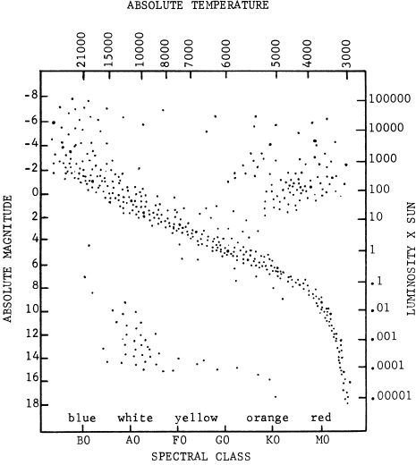
The HERTZSPRUNG-RUSSELL DIAGRAM. This color-magnitude graph shows the various types of stars which exist within a few hundred light years of the Sun. (For explanation, refer to the text.)
THE H-R DIAGRAM STELLAR LUMINOSITY CLASSES
In addition to the normal main sequence stars, we find a few other concentrations of star points at other locations on the H-R Diagram. Across the top is a thin scattering of points representing the extreme supergiants which may attain luminosities of over 50,000 suns. Near the upper right corner are a number of stars which are red and cool, but still have very high luminosities and must therefore have very great actual dimensions. These are the “red giants” which may often be 300 or 400 times the size of our Sun. Finally, in the lower left portion of the graph we find a few peculiar objects which have rather high temperatures but very low luminosities; these are the shrunken “white dwarfs” or “degenerate stars” which have contracted to a state of incredible density, evidently after exhausting their nuclear “fuel” supplies. In addition to these major groups, there are a few stars which fall somewhat above the main sequence and are known as “subgiants,” while a few stars falling somewhat below the main sequence are termed “subdwarfs.”
Since the spectral type alone does not fully define the status of a star, astronomers often use “MK luminosity classes” (defined by W. Morgan and P. Keenan) in the form of Roman numerals which may be appended to the spectral type. The classes are:
|
Ia |
Most luminous supergiants |
|
Ib |
Less luminous supergiants |
|
II |
Bright giants |
|
III |
Normal giants |
|
IV |
Subgiants |
|
V |
Main sequence |
|
VI |
Subdwarfs |
With this system, the full classification of Betelgeuse would be “M2 Ia,” and that of the Sun would be “G2 V.” Betelgeuse is an extreme sort of red supergiant, not only vastly larger and more brilliant than our Sun; but also, apparently, operating on a different nuclear energy source. Such differences raise many questions about the life histories of the stars and the evolutionary paths they follow. In the article on Betelgeuse (Alpha Orionis) in this Handbook, the general outline of red-giant evolution is presented. For a further discussion of the use of H-R diagrams in the study of stellar evolution, the reader is referred to the article on the star cluster M13 in Hercules.
DOUBLE STARS
DOUBLE STARS appear to the unaided eye as single stars, except in the case of unusually wide pairs, but through the telescope may be “split” or resolved into two or more components. If the two stars are known to be actually near each other in space and bound together by gravitational attraction, they are called “physical” doubles. When actual orbital motion has been detected, these are termed “binaries.” On the other hand, some apparent doubles are known to be due to the chance alignment of two totally unrelated stars, one being far beyond the other; these are called “optical” doubles.
The apparent separation of a double at any time is measured in seconds of arc. The apparent orientation of the pair is defined by the “position angle” (PA), always measured from the bright star toward the fainter. Due north is a PA of 0°; due east is 90°, etc. In the case of a binary system, the motion of the companion is said to be direct when the PA is increasing and retrograde when it is decreasing. Periastron is the point in the true orbit where the actual separation between the stars is at a minimum. The semi-major axis is one-half the distance across the longest dimension of the true orbit; it may also be defined as the mean separation of the two stars. It is usually given in seconds of arc, but may be converted directly into an actual separation in miles or astronomical units (Table II) once the distance of the star is known. In the binary stars we are given our only opportunity of the direct determination of stellar masses. By Newton’s laws, there is a direct relationship between the separation, period, and the total mass of a binary pair; when any two of these quantities are known, the third may be computed.
In the case of spectroscopic binaries, the duplicity is revealed by the spectroscope, although the two stars may be too close to be resolved by any telescope. The term “astrometric binary” designates a system where an unseen companion is detected through periodic deviations in the motion of a visible star.
STAR DISTANCES
STAR DISTANCES may be determined by direct trigonometrical measurements only in the case of fairly near stars. As the Earth revolves around the Sun, the nearer stars show a small yearly shift against the background of more distant stars. The radius of the Earth’s orbit (one astronomical unit) is the base-line used in measuring the amount of this shift, termed the star’s “parallax,” A distance unit often used by professional astronomers is the “parsec,” the distance of an object having a parallax of 1 or, to phrase it another way, the distance at which one AU would subtend an angle of 1”. The parsec is equivalent to 3.26 light years. It is a convenient unit to use, since the distance in parsees is merely the reciprocal of the parallax. However, the light year seems firmly entrenched in popular astronomical literature and is used throughout this book. A short conversion table for the standard distance units is given below:
|
1 astronomical unit (AU) |
= 93 million miles |
|
1 light year |
= 63,240 AU |
|
1 light year |
= 5.88 trillion miles |
|
1 light year |
= 0.307 parsecs |
|
1 parsec |
= 206,000 AU |
|
1 parsec |
= 19.17 trillion miles |
|
1 parsec |
= 3.26 light years |
|
1 kiloparsec |
= 1000 parsecs |
|
1 megaparsec |
= 1 million parsecs |
There is, of course, no star as near as one parsec. The nearest star, the triple system of Alpha Centauri, is 1.33 parsecs or 4.3 light years distant and shows a parallax of about 0.75”. Distances less than about 30 light years may be determined with good accuracy by the direct parallax method and with fair reliability out to about 100 light years. At 300 light years, the probable error of the measurement nearly equals the size of the parallax; and at greater distances the method becomes virtually useless. More indirect methods must then be used. The distance of very remote objects may be determined if, in some way, their actual luminosities can be learned. The comparison of the apparent and absolute magnitudes (the distance modulus) then gives the distance. This is the “spectroscopic parallax” method, in which the intrinsic luminosity of the star is determined from various spectroscopic features. For extremely remote objects, various stars of known high luminosity may be used as distance indicators, supergiant stars, novae, etc. Finally, there are the remarkable pulsating variable stars called “cepheids” whose periods are proportional to their luminosities; these are often called the “measuring sticks of the Universe.” The principle of distance calculation by the cepheid rule seems direct and straightforward, but in practice matters are complicated by the presence of light-absorbing material in interstellar space. Objects thus seem fainter than they are, and distances are overestimated. This effect must be allowed for in any attempt to measure distances based upon apparent and absolute magnitudes. It is not surprising that the distances of many celestial objects are very roughly known and that modern catalogs still contain numerous discrepancies. (For a summary of the cepheid method of distance determination, refer to the article on Delta Cephei.)
VARIABLE STARS
VARIABLE STARS are stars which change in brightness, either periodically, irregularly, or explosively. The simplest way to illustrate the typical behavior of any specific example is to plot the magnitude (vertical scale) against the time (horizontal scale) on a graph which is then known as a “light curve.” Numerous examples will be found throughout this book. Known periods of variable stars range from a few hours up to a number of years. The light variations range from a tiny fraction of a magnitude up to 9 or 10 magnitudes in some extreme cases. The novae, of course, may exceed even these limits.
There are many different types of variable stars, but it is possible to group them into three broad classes: (1) Pulsating variables, (2) Eruptive or cataclysmic variables, (3) Eclipsing variables. The various sub-types will now be briefly reviewed.
TYPES OF VARIABLE STARS
(1) PULSATING VARIABLES are stars which appear to be periodically oscillating, expanding and contracting. The chief types are:
Cepheids—very luminous giants, periods from one to fifty days or so, but usually about one week. Light range up to two magnitudes. Spectral types F, G, and K. These stars show clockwork precision in their pulsations and also display the noted ‘‘period-luminosity relation” which makes them valuable as distance indicators. Typical examples are Delta Cephei, Eta Aquilae, RT Aurigae.
Long-period Variables—pulsating red giant stars with periods from about 75 days up to two years or more. The average light range is five or six magnitudes. Spectral class usually M, sometimes R, N, or S. Typical examples are Omicron Ceti, Chi Cygni, R Leonis, R Hydrae. Periods do not show the absolute precision of the cepheids, but may vary by a number of days.(indicated by abbreviation LPV in the lists in this book).
Semi-regular Variables—mostly red giant stars with periods often poorly defined; subject to unpredictable variations. Typical examples are Alpha Herculis, W Cygni, and Rho Persei.
Irregular Variables—giants of various spectral types with no definite period. Betelgeuse and Mu Cephei are placed in this class by some authorities, but classed with the semi-regular types by others.
Cluster Variables or “RR Lyrae” Stars—precise periods generally under one day, range about one magnitude, spectral type A or F, light curve of the “cepheid” type with rapid rise and slower decline (identified “Cl.Var.” in lists in this book). Typical example—RR Lyrae.
RV Tauri Stars—pulsating giants with multiple light curves, alternate maxima and minima in a period of 30 to 150 days, superimposed on a longer wave of three or four years. Total range may be about three magnitudes, spectral types G or K. Typical examples—RV Tauri, R Scuti.
Beta Canis Majoris Stars—brilliant stars of types B1-BS, magnitude range very slight, periodic oscillations of spectral lines in period of about 0.2 day. Typical examples are Beta Cephei and Beta Canis Majoris.
Dwarf Cepheids—resemble the RR Lyrae stars but show smaller amplitudes and shorter periods. Spectral types A and F, period less than 0.25 day. Typical examples—CY Aquarii, SX Phoenicis. Another subclass, Delta Scuti stars, have very slight light changes and periods of under 0.2 day.
(2) ERUPTIVE VARIABLES consist chiefly of the novae and the nova-like stars. The major classes are:
Novae are hot subdwarfs which brighten explosively by 7 to 15 magnitudes or so in a period of a few days, thereafter fading back to normal in a few years. Typical examples are V603 Aquilae (1918), GK Persei (1901) and DQ Herculis (1934).
Recurrent Novae are those which have shown two or more outbursts. They differ also from the standard novae in showing smaller amplitudes, shorter maxima, and a more rapid return to normal brightness. Typical examples are T Corona Borealis, RS Ophiuchi, and WZ Sagittae.
Supernovae are exploding stars which brighten by 20 or more magnitudes, attaining a brilliance of several hundred million suns. These are thought to be massive stars which do not “return to normal,” being largely destroyed in the explosion. Typical examples are: the Nova of 1572 in Cassiopeia and the Nova of 1604 in Ophiuchus.
Dwarf Novae or “SS Cygni Type Stars” are hot dwarfs which show sudden outbursts of up to five magnitudes, returning to normal faintness in a week or so, but repeating the phenomenon again and again at intervals of a few months. Typical examples are U Geminorum and SS Cygni. A small subclass, typified by Z Camelopardi, act in a similar manner, but occasionally show long periods of constant light at some intermediate magnitude between maximum and minimum.
Flare Stars are faint red dwarfs which show extremely sudden outbursts of up to several magnitudes in a time of one or two minutes. Typical examples are: UV Ceti, DO Cephei, and Alpha Centauri C.
R Corona Borealis Stars have light curves resembling “reverse novae.” The star remains normally bright, but may fade by eight magnitudes or so at unpredictable intervals, returning to normal in a period of many months. These stars are giants of various spectral types. The standard star of the class is R Corona Borealis.
Nova-like Stars form an uncertain group of irregular variables with erratic behavior, some with composite spectra, as R Aquarii, Z Andromedae, and BF Cygni. Some of these are the so-called “symbiotic stars” in which the spectral features of a red giant and blue dwarf both appear.
(3) ECLIPSING VARIABLES are binary systems in which the two stars occult each other periodically as they revolve in their orbits.
Algol Systems are relatively widely separated so that the light curve remains fairly flat between the large dips representing the eclipses. Typical examples: Beta Persei, U Cephei, U Sagittae.
Lyrid Systems, or Beta Lyrae Stars, are usually giant systems revolving in close proximity, both stars being distorted into ellipsoids by tidal effects and rapid rotation. The light curve is a continuously varying sinusoidal wave with alternate maxima and double minima. Typical examples: Beta Lyrae, 68 Herculis.
Dwarf Eclipsing Systems, or “W Ursa Majoris Stars,” are rapidly rotating dwarf binaries with the components nearly in contact; the periods are less than one day. Typical examples: W Ursa Majoris, U Pegasi.
Ellipsoidal Variables are binaries which do not eclipse, but vary in light as they revolve due to the changing amount of luminous surface seen from the Earth. Typical examples: Zeta Andromedae, b1 Persei.
In addition to the chief classes, some authorities would add a fourth major group—nebular variables—whose changes may be due in some way to surrounding gas and dust clouds. Typical examples: T Tauri, R Monocerotis, RW Aurigae, and T Orionis. There are other stars which cannot conveniently be classed in any of the major groups.
TYPES OF VARIABLE STARS CLASSIFICATION OF NEBULAE AND GALAXIES
NEBULAE are the clouds of rarified gas and dust found in space, often involving whole groups of stars and distributed chiefly along the spiral arms of the Galaxy. The two chief types—diffuse nebulae and planetary nebulae—were introduced in Chapter 2, and little else concerning them need be said here. For a summary of planetary nebulae, refer to M57 in Lyra; for information on some of the better known diffuse nebulae, refer to M42 in Orion, M8 in Sagittarius, Ml in Taurus, etc.
CLASSIFICATION OF GALAXIES
GALAXIES are the other “Island Universes” beyond our own Milky Way System. They are classified in three main groups—spirals, ellipticals, and irregulars. As with many classificational systems, there is a certain degree of overlapping between classes, and more elaborate systems have been devised. Since no two galaxies are exactly alike, it would be possible to refine such systems indefinitely and invent more and more detailed subclasses. For most purposes the original classificational system is quite adequate and is used throughout this book. For researchers specializing in more technical studies of the galaxies, de Vaucouleurs’ Reference Catalog of Bright Galaxies is now a standard source of data (University of Texas Press, 1964).
The three chief classes of galaxies are:
(1) Spirals—divided into normal spirals (S) and barred spirals (SB). In a normal spiral the arms curve out directly from the rounded nuclear mass; in a barred spiral they begin at opposite ends of a flattened oblong central bar.
To the primary capital letters “S” or “SB” may be appended three smaller letters, a, b, or c, which further describe the general structure of the spiral. In an “a” system the nuclear bulge dominates the galaxy, and the spiral arms are narrow and tightly wound. In a “b” system the nuclear mass and the spiral arms are about equally prominent. In a “c” system the nucleus is small, and the spiral arms are widely opened and well resolved into clumps and clouds of stars. The Andromeda Galaxy is an Sb spiral, for example, and the great M101 in Ursa Major is a typical type Sc. Our own Galaxy, difficult to study from our position within, is usually considered to be type Sb, but some recent studies suggest a type closer to Sc.
A fourth subclass, Sd, is sometimes used to designate systems in which the nucleus is reduced to a tiny condensation of nearly stellar appearance, and the spiral pattern may be nearly lost in a chaotic mass of star clouds. A typical example is NGC 7793 in Sculptor.
The terms “early” and “late” are sometimes used in referring to the sequence Sa, Sb, Sc; for example, an Sa spiral is said to be “earlier” than type Sb. The use of these terms has no connection with the life history of a galaxy or the direction of its evolutionary development. Indeed, it appears from present evidence that the Sd and Sc stages are actually the earliest in the life of a spiral and that the Sa stage is the last.

NGC 488, Pisc = Sb
NGC 1300, Erid = SBb
NGC 2841, UMai = Sb
NGC 4594, Virg = Sa/Sb
NGC 224, Andr = Sb
NGC 628, Pisc = Sc
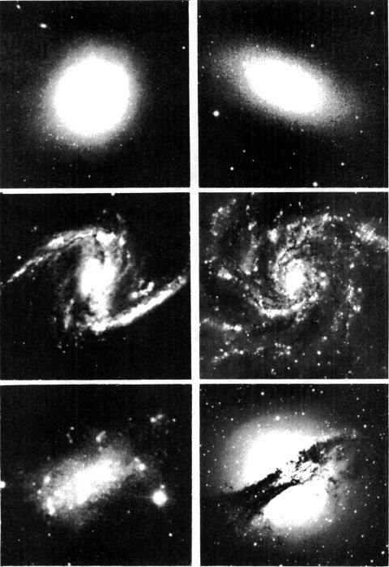
NGC 4486, Virg = EO
NGC 1365, Forn = SBb
NGC 1156, Arie = Irr
p NGC 205, Andr = E6
NGC 5457, UMaj = Sc
NGC 5128, Cent = E0/S0 p
(2) Elliptical Galaxies display no spiral pattern or other structure, but are simply spheroidal or elliptical swarms of stars, resembling super-size globular clusters. Usually there is a brighter central condensation. These galaxies are classed by their apparent degree of oblateness from E0 (perfectly round) to E0 (elongated lens-shaped systems).
The transitional type “S0” defines a galaxy which resembles an elliptical type, but in which a flattened central plane or disc may just be detected. If any true spiral pattern is discernible, the galaxy is classed as an “sa”.
(3) Irregular Galaxies, identified by the letter “I”, are systems which appear as coarse masses of star clouds, lacking any symmetry or smooth distribution of stars. These galaxies, may, however, grade imperceptibly into the coarser spirals, as one of the typical examples - the Large Magellanic Cloud in Dorado - appears to show an incipient spiral pattern.
In all classes of galaxies, a small letter “p” may be used to indicate various peculiarities such as outer rings or haloes, distorted structure, tidal filaments, and other unusual features. Some of the most interesting cases of this type (as M82 in Ursa Major, M87 in Virgo, and NGC 4038 in Corvus) receive special attention in this Handbook.
THE HUBBLE CONSTANT is the relationship between the red-shift of a galaxy and its distance, a relationship of great importance since it defines not only the scale, but also the age, of the Universe. This relationship, which appears to be linear, has been drastically revised since the time of Hubble, and is now (1975) thought to be about 53 km/sec per megaparsec, or roughly 10 miles per second for each million light years of distance.
QUASARS or “Quasi-stellar Radio Sources” are strange and enigmatic objects which have only recently come to the attention of astronomers. Stellar in appearance, they show enormous red shifts which suggest that they are the most distant objects yet identified in the Universe. If the Hubble relationship is assumed to hold true for these objects, their actual luminosities must be higher than any other type of object known, exceeding even the largest galaxies, and the source of this huge energy output has been a subject for much current speculation. All known quasars seem to be extremely distant objects, which of course means that we are seeing them as they were, far back in the remote past. There is a growing belief, therefore, that the quasar phenomenon represents a stage in the early history of a galaxy. Only one of these strange objects can be considered a subject for the typical amateur telescope, 3C 273 in Virgo, which appears as a star of about the 12th magnitude.
COSMOLOGY
COSMOLOGY is that branch of astronomy which sums up and includes everything else; it deals with the over-all features of the Universe, the structure and distribution in space of the celestial bodies, the great questions of matter, energy, space, time, relativity, cosmic evolution, the mysteries of beginnings and endings, and ultimate destinies. For the last half century, the central theme of cosmology has been the concept of the Expanding Universe, which is still accepted (1976) as the only feasible explanation of the “red-shift”. If all the galaxies are receding from each other, then in the past they were much closer together than we now find them, and some 16 or 18 billion years ago must have been very close indeed. The present Universe seems to have had its beginning in a tremendously dense and extremely hot “primordial atom” or “cosmic fireball” at that very distant time. This primeval epoch, however, can be called the “time of creation” only in a very limited sense, since the primordial fireball was obviously preceded by some condition which existed earlier, presumably the gravitational collapse of the universe which existed before the present one. The “Big Bang” hypothesis is thus not necessarily in conflict with the concept of some sort of “steady state” universe, or at least a cyclic universe which undergoes alternate periods of expansion and contraction.
Although lacking final confirmation from astronomical evidence, the oscillating universe seems philosophically more appealing than a “linear” or one-way universe which ends with dead galaxies of burned-out stars expanding forever into limbo. Also, of course, it does not present the knotty and probably artificial problem of explaining an original “creation”. The invention of one or more deities does not furnish any real solution; the existence of such beings would constitute but another mystery which must also be explained. Oriental philosophers speak of the “Tao”, the all-pervading intelligence of the Universe, never personified or regarded as a “being” of any sort; such a concept seems vastly more appropriate to the Universe we actually live in than do the grossly anthropomorphic and marvelously tortuous theologies of Western thinkers. “The Tao that can be expressed in words”, begins the Book of Lao Tzu, “is not the absolute Tao. The names that can be given are not absolute names.” But...”from the days of old until now, its manifested forms have never ceased.....”
To search for an object the size of the Earth in our Galaxy is comparable to searching for an object smaller than a dust grain, lost somewhere in North America. It is in the last degree unlikely that the acquired knowledge and ideas developed by the inhabitants of this cosmic speck should constitute the final word on the subject. Every man of honesty recognizes that we are in the earliest stage of knowledge of the Universe; we have barely begun to learn how to learn. The uncritical acceptance of any dogmatic philosophy at this stage constitutes intellectual suicide, since it closes the mind to any new evidence, or to any new vision of the world. “If we are open only to those discoveries which will accord with what we already know”, said the English-American philosopher Alan Watts, “we might as Well stay shut. “ The study of astronomy has opened our eyes to a Universe whose unimaginably vast extent, both in space and time, surpasses anything of which Man could have dreamed. And yet, the celestial horizons continue to widen, and our present knowledge is just the beginning.....
“Only that day dawns to which we are awake”, wrote Henry David Thoreau in the final paragraph of Walden. “There is more day to dawn. The Sun is but a morning star.”
THE ARRANGEMENT OF THE CELESTIAL HANDBOOK
TERMS, SYMBOLS, AND ABBREVIATIONS USED
The arrangement of the Celestial Handbook is alphabetical, by constellation. Each constellation is divided into four subject sections, as follows: LIST OF DOUBLE AND MULTIPLE STARS
LIST OF STAR CLUSTERS, NEBULAE, AND GALAXIES
The lists are arranged in the following manner: LIST OF DOUBLE AND MULTIPLE STARS
Name- The most commonly used designation of the star. Greek letters and Flamsteed numbers are given preference. Fainter doubles are identified by their numbers in such catalogs as those of: F.G.W.Struve = Σ
O.Struve = 0Σ
J.Herschel = h
J.Dunlop = ∆
S.W.Burnham =ß
R.G.Aitken = A
Alvan Clark = AC
R.A.Rossiter = Rst
F.Argelander = Arg
H.A.Howe = Hwe
Cordoba Obsvt = Cor
T.E.Espin = Es
W.J.Hussey = Hu
R.T.Innes = I
T.J.J.See = λ
C.Rumker = Rmk
G.W.Hough = Ho
W.H.van den Bos = B
E.S-.Holden = Hn, Hld
G. P.Kuiper = Kui
J.South = S
Dist- The angular separation of the two stars in seconds of arc. The distances of third or fourth components are given from the primary (A) star unless otherwise noted.
PA- The position angle of the pair in degrees in the usual sense, measured from the brighter to the fainter component.
Yr- The year in which the preceding measurements were made. The last two digits only are given; the first two are understood to be “19”. The few measurements made before 1900 are identified by the entry “00”.
Mags- The visual magnitudes of the two stars on the standard scale, to the nearest half magnitude.
Notes- Various information of interest. Abbreviations and terms are: relfix= relatively fixed pair; no definite change in separation or angle in at least 50 years.
PA inc = the position angle is increasing.
Dist dec = the apparent separation is decreasing.
Spect = spectral type; a single entry refers to the primary star, two entries to the A & B pair unless otherwise noted.
cpm = common proper motion; the two stars are moving through space together.
optical = the two stars are not a physical pair.
A,B,C — These letters are used to identify the components of multiple systems, in the order in which they appear in the list. Remarks in the “Notes” column always refer to the A-B pair, unless one of the other components is specifically mentioned by letter “C”, “D”, etc.
(*) This sign indicates a more detailed description, following the catalog lists.
RA & DEC - The celestial coordinates (1950 epoch). They are given in a contracted form, as in the two following examples: 22115s2119 = RA 22h 11.5m; Dec -21° 19’.
06078n4844 = RA 6h 07.8m; Dec +48° 44’.
An attempt has been made to list all known variables which reach 9.5 magnitude or brighter at maximum.
Name- The standard designation of the star. Stars with Greek letter designations are listed first, other stars in the usual order: R,S,T....Z, RS, RT, etc.
MagVar- The visual magnitudes of the star at maximum and minimum. Only approximate mean values can be given for many long-period variables which do not repeat their cycles exactly.
Per- The period in days. For long-period variables and other pulsating stars this is the interval between maxima. In the case of eclipsing variables it is the interval between minima. Irregular variables are identified by the abbreviation “Irr”. In the case of periods of less than one day, the entry begins with a decimal point; the “0” being omitted to save space.
Notes- Various information of interest, usually beginning with the class of variable. Some abbreviations used are: LPV. = Long period variable.
Cl.Var. = cluster variable (RR Lyrae type star) Ecl.Bin. = eclipsing binary
Semi-reg = Semi-regular variable
Spect = the spectral type
(*) This sign indicates a more detailed description following the catalog lists.
RA & DEC - The celestial coordinates for 1950, as previously described.
LIST OF STAR CLUSTERS, NEBULAE, AND GALAXIES
NGC = The standard number from the New General Catalogue of John Dreyer.
OTH = Other designations, as in the following examples: M35 - The number in the catalog of Charles Messier. 337 The number assigned by Sir William Herschel.
1.405-The number in the “Index Catalogue”, a supplement to the NGC.
∆1309 - The number in Dunlop’s list.
TYPE - The class of object. The symbols are:  Galactic star cluster
Galactic star cluster  Globular star cluster
Globular star cluster  Diffuse nebula
Diffuse nebula  Planetary nebula Dark Nebula 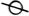Galaxy SUMMARY DESCRIPTION - The visual appearance and chief facts about the object. In the case of galaxies, the first line gives the type, visual magnitude, and the apparent size. For the majority of other objects the apparent diameter (“diam”) and magnitude (“mag”) are given. The remainder of the description employs a simplified code, based on the system used in the NGC: B = Bright
Planetary nebula Dark Nebula 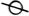Galaxy SUMMARY DESCRIPTION - The visual appearance and chief facts about the object. In the case of galaxies, the first line gives the type, visual magnitude, and the apparent size. For the majority of other objects the apparent diameter (“diam”) and magnitude (“mag”) are given. The remainder of the description employs a simplified code, based on the system used in the NGC: B = Bright
b = brighter
L = Large
pS = pretty small
F = Faint
vF = very faint
R = round
C = compressed or
condensed
S = small
rrr= well resolved
E = elongated
e = extremely
c = considerably
P = poor
np = north preceding
sp = south preceding
1C = little compressed
Ri = rich
M = middle
N = nucleus
mag = magnitude
diam = diameter
g = gradually
s = suddenly
m = much
v = very
14m = 14th magnitude
st = star or stars
irr = irregular
neby = nebulosity
9.... 9th mag and fainter
nf = north following
sf = south following
Class C ---- G. Class numbers for galactic clusters, defining richness and degree of concentration: C = loose and irregular clusters
D = loose clusters
E = moderately concentrated
F = fairly well compressed, compact clusters G = very rich compact clusters
Class I ---- XII. Class numbers for globular clusters, defining the degree of concentration: I = extremely rich and highly compressed XII = very loose, sparse clusters
(*) This sign indicates a more detailed description or a photograph, or both, following the catalog lists.
RA & DEC - The celestial coordinates for 1950, as previously described.
The standard type symbols for galaxies (Sa, Sb, Sc, E,) etc., are defined on page 92.
Detailed descriptions for the following objects: 1. All stars in the constellation brighter than magnitude 3.50.
2. All objects in the lists of doubles, variables, clusters, nebulae, and galaxies which were identified by the sign (*) 3. Other objects of special interest which fall into neither of the above groups; for example - 3C273, Barnard’s Star, Van Maanen’s Star, etc.
Objects given detailed notes are listed in the following order: 1. Stars with Greek letter designations, in alphabetical order. (As Alpha Andromedae) 2. Stars with Flamsteed numbers. (As 36 Andromedae) 3. Stars with standard double-star designations (as ∑215) 4. Stars with standard variable star designations (as R Andromedae) 5. Stars with miscellaneous designations. (As Wolf 359, or Groombridge 34) 6. Star clusters, nebulae or galaxies with Messier numbers. (As M31) In numerical order.
7. Star clusters, nebulae or galaxies with NGC numbers. (As NGC 891) In numerical order.
8. Star clusters, nebulae or galaxies with other designations. (As IC 405) FINDER CHARTS are provided for the majority of variable stars chosen for a detailed description. These were made directly from plates obtained with the 13-inch telescope at Lowell Observatory, and show stars to about 15th magnitude. The large circle on each chart represents a field of one-degree diameter except when specifically labeled otherwise. North is always at the top. In using these, or any other photographic charts, the observer must remember that the relative brightnesses of stars may differ somewhat from the visual appearance; red stars appearing brighter to the eye than they do on the print, and blue stars just the opposite.
LIST OF DOUBLE AND MULTIPLE STARS
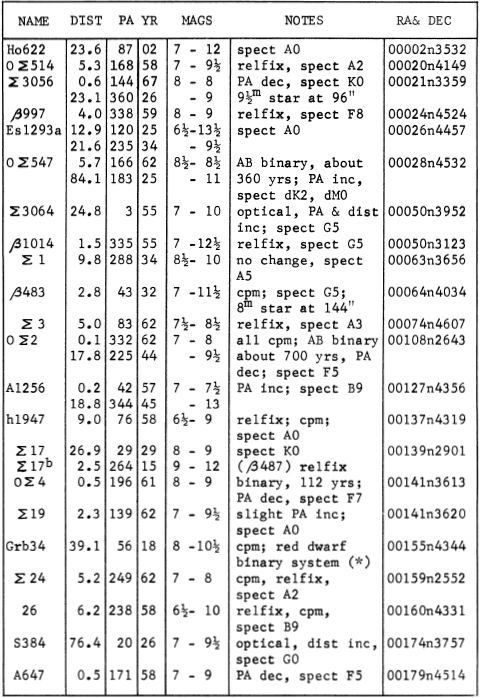
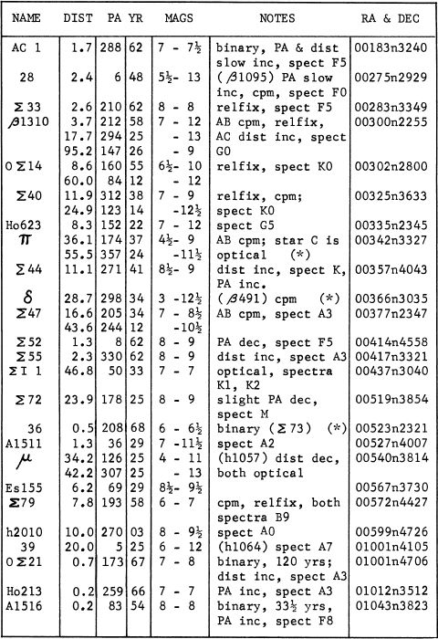

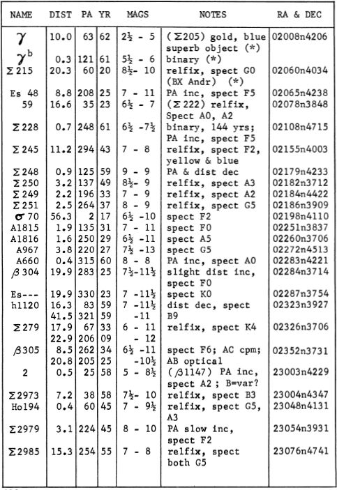

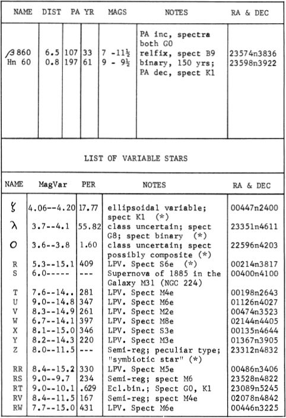

LIST OF STAR CLUSTERS, NEBULAE, AND GALAXIES

ALPHA Name-ALPHERATZ; sometimes called “Sirrah”. Mag 2.06; spectrum given by various authorities as B8, B9, A0, or Al, but peculiar for the unusual strength of the lines of manganese. Position 00058n2849. Direct parallaxes obtained at Allegheny and Yerkes agree in giving a distance of about 120 light years; the resulting luminosity is about 160 times that of the Sun and the absolute magnitude about -0.7. Slightly different results are obtained from the spectroscopic characteristics which suggest an absolute magnitude of -0.1; this would reduce the distance to about 90 light years.
The annual proper motion is 0.20” in PA 140°, and the radial velocity is about 7 miles per second in approach.
Alpheratz is a spectroscopic binary with a period of 96.697 days. The two stars are of unequal brightness and the companion has not been detected spectroscopically. According to J.A.Pearce (1937) the orbit of the visible star has an eccentricity of 0.53; the mean radius of the orbit may be about 20 million miles.
In addition, there is a distant optical companion of the 11th magnitude, discovered by Sir William Herschel and first measured by F.G.W.Struve in 1836 when the distance was 64.9”. This star is not a true physical companion to Alpha and the separation in 1954 had increased to 81.5” in PA 280° from the proper motion of the primary.
Alpheratz marks the northeast corner of the familiar Great Square of Pegasus, and is identified on some of the older atlases as “Delta Pegasi”. It is now officially assigned to Andromeda.
BETA Name-MIRACH. Mag 2.03; spectrum M0 III. Position 01069n3521. The distance is about 75 light years according to parallaxes obtained at Mt.Wilson, Allegheny, and McCormick; the resulting luminosity is about 75 times that of the Sun, and the absolute magnitude about +0.2. The star shows an annual proper motion of 0.21” in PA 122° and the radial velocity is about 0.2 miles per second in recession.
Mirach has a companion of the 14th magnitude at 28” I in PA 202°, discovered by E.Barnard at Yerkes in 1898. It apparently shares the proper motion of the primary, and is a dwarf star some 800 times fainter than the Sun. There are two other stars of the 12th magnitude at 85” and 90”, but these are merely optical companions. Mirach itself, like many of the red giant stars, has been suspected of slight variability.
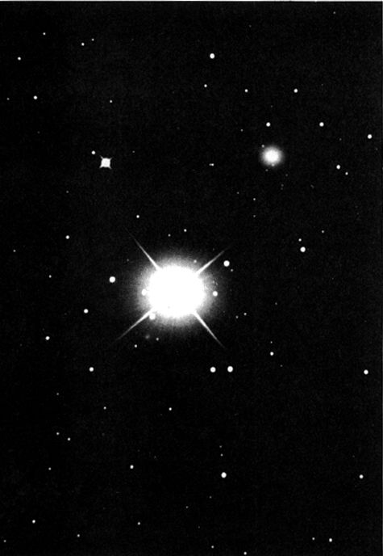
BETA ANDROMEDAE. The star is the bright central image with the diffraction spikes; the galaxy NGC 404 is at the upper right.
(42-inch reflector, Lowell Observatory)
Observers of this star should attempt to find the 12th magnitude galaxy NGC 404 in the same field, a good test for the light-gathering ability of the telescope. It is located 6.4’ from the star toward the northwest.
GAMMA Name-ALMACH. Mag 2.12; spectrum K2 II or K3. Position 02008n4206. This is a beautiful double star, one of the finest within range of a small telescope. According to T.W.Webb it was probably discovered by J.T. Mayer in 1788 (R.H.Allen gives the date as 1778) but the first recorded measurements appear to be those of F.G.W. Struve in 1830. The brighter star is golden yellow or slightly orange, and the companion (mag 5.08) appears a definite greenish-blue. The color contrast is unusually fine, and often seems more striking with the eyepiece very slightly displaced from the position of sharpest focus. There has been no definite change in separation or angle in the pair in the last 130 years. In 1962 the measurement made at Lowell was: 10” in PA 63°.
In 1842, Struve discovered that the companion is itself a close double. It is a binary with a period of 61 years according to recent computations by P.Muller (1957). The star was at periastron in 1891 and again in 1952; the greatest separation of the components is about 0.55” and will be reached about 1982. The apparent orbit is a muchelongated ellipse extending toward PA 110°; the semi-major axis is 0.3” and the eccentricity is 0.93. Both of the stars are late B or early A type; the individual magnitudes are 5.5 and 6.3.
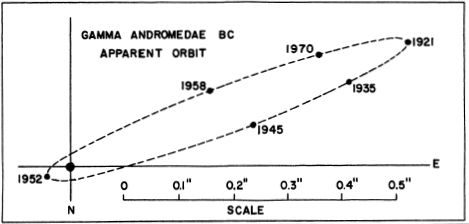
The brightest member of the close pair is itself a spectroscopic binary with a period of 2.67 days and two identical spectra (about B9) visible. Gamma Andromedae is thus a quadruple system. The luminosity of the K-star is about 650 times that of the Sun; the B-C-D system totals about 50 times the light of the Sun. The actual separation of the A-B pair may be about 800 AU, and the B-C separation averages about 30 AU.
The distance is approximately 260 light years; the annual proper motion is 0.07”; the radial velocity is about 7 miles per second in approach. The total absolute magnitude is about -2.4.
DELTA Mag 3.25; spectrum K3 III. Position 00366n3035. The computed distance is about 160 light years, the actual luminosity about 100 times that of the Sun. The absolute magnitude is -0.2. The star shows an annual proper motion of 0.16” in PA 125°; the radial velocity is 4½ miles per second in approach.
The 12th magnitude companion at 28.7” was discovered by S.W.Burnham with the 26-inch refractor at the U.S.Naval Observatory in 1878. It shares the proper motion of the primary and is a red dwarf of about 1/40 the luminosity of the Sun. The spectral type is dM2.
In the case of a wide common motion pair of this type it is interesting to compute the probable actual separation of the two stars. At a distance of 160 light years 28.7” corresponds to about 1420 AU. A figure obtained in this way is called a “projected separation”, and is of course only a minimum value, resulting from the assumption that the two stars are exactly the same distance from us. If one component is actually farther than the other, the true separation may be much greater. In the majority of cases it is impossible to decide the point.
ZETA Mag 4.06 (slightly variable); spectrum Kl III. Position 00447n2400. This star is a spectroscopic binary with a period of 17.7673 days, and the typical example of an “ellipsoidal variable” in which the light changes are due to the fact that both stars are oval in shape and present varying amounts of luminous surfaces as they revolve in their orbits. Very small partial eclipses may also add to the effect. According to S.Jones, the spectroscopic orbit is nearly circular, with the slight eccentricity of 0.017, and the brighter star is about 3.9 million miles from the center of gravity of the system. The light variations were first measured photoelectrically by J.Stebbins in 1928, and suggest that the two components are revolving nearly in contact. The larger star may be about 8 or 10 times the diameter of the Sun.
Direct parallaxes obtained at Allegheny and McCormick give the distance as about 100 light years; the total luminosity is then about 18 suns.Different results seem to be obtained, however, from the spectroscopic features; these suggest a luminosity class of II or III. If the star is actually a KI III giant, the absolute magnitude should be about +0.8 (luminosity = 40 suns) and the distance must then be about 150 light years. An attribution to luminosity class II would further increase this discrepancy.
Zeta Andromedae also has a faint visual companion of the 13th magnitude at 96” in PA 230°; it apparently shares the annual proper motion of the primary (0.13”) and was first detected by S.W.Burnham in 1910. It is a red dwarf at least 400 times fainter than the Sun. The radial velocity of both stars is 14 miles per second in approach.
LAMBDA Mag 3.88; (slightly variable); spectrum G8 IV. Position 23351n4611. A peculiar spectroscopic binary star, discovered by W.W.Campbell in 1899, and displaying the unusual feature of bright (emission) lines of calcium in its spectrum. According to J.L.Greenstein (1952) the stellar absorption lines are quite sharp but the emission lines are fairly broad, raising some interesting questions concerning the structure of the star’s atmosphere and the possible presence of large prominences. There is also the peculiar fact that the slight variations in light show no correlation with the revolution period of the system. The visual range is about 0.4 magnitude.
The period of the binary pair is 20.5212 days, and the orbit has the small eccentricity of 0.04 according to J.A.Pearce and E.C.Walker (1944). The bright star is less than 1 million miles from the center of gravity of the system, but the actual separation of the two stars is uncertain. Only one component is detected spectroscopically. The primary is a subgiant with a computed diameter of 6 times that of the Sun, and a luminosity of about 16 suns. The absolute magnitude is about +1.9. Parallaxes obtained at Allegheny and Sproul agree in giving the distance as about 80 light years.
The annual proper motion of Lambda Andromedae is 0.45” in PA 159°; the mean radial velocity is about 4 miles per second in recession.
OMICRON Mag 3.63 (slightly variable); spectrum given as composite (B6 + Al) by some authorities, simply “B6p” by others. Position 22596n4203. This star is a peculiar variable of uncertain class, perhaps combining the features of several different classes. The variations were first suspected by Guthnick and Prager in 1915, and confirmed by R.M.Emberson (1939) who found a range of about 0.5 magnitude. An examination of Harvard patrol plates showed variations of about one magnitude. Spectra have been obtained since 1890, often showing the features of a normal B6 type star, but at other times showing the presence of a gaseous shell or ring. The shell was apparently present in 1890 but absent in 1893 and 1928, developing again about 1937 and very evident in 1946 and 1952. There is some evidence that short-period variability in the star is connected in some way with the presence of the surrounding shell. The star is remarkable for its extremely high rotational velocity of 215 miles per second (at the equator), one of the most rapidly rotating stars known.
S.Archer (1959) suggests that there may be some interaction between the rotation period and the pulsation of the star, when a shell is present. He found in 1958 that the short-period variations appear to resemble those of the cluster variables (RR Lyrae stars), and derived a period of 0.7882 days with an amplitude of about 0.5 magnitude.
At other times, however, the light changes appear to be of an entirely different nature. The observations of H.Schmidt (1959) indicated a period of 1.59984 days, very close to double the period found by Archer, and the light curve strongly resembles that of an eclipsing binary of the lyrid type. Primary minimum has a depth of about 0.15 magnitude. The evidence seems clear that the star is a close binary, but with the added complications of occasional shell activity and short-period pulsations in at least one of the components.
A.Slettebak (1952) calls attention to the interesting discovery that the shell of the star is stratified. The spectrum lines of helium show the greatest rotational broadening and evidently originate in the main body of the star. The lines of magnesium and silicon are sharper, and apparently originate at higher levels in the shell. The iron lines seem to be produced at various levels. This same effect has been found in another famous shell star, 48 Librae.
Parallax measurements of Omicron Andromedae have been inconclusive, but suggest that the distance cannot be less than 450 or 500 light years. The actual luminosity would appear to be in the range of 500 to 800 times that of the Sun, and the absolute magnitude near -2.0. The estimated diameter of the B-star is 4 to 6 times that of the Sun. The spectral peculiarities make it unsafe to attempt to define the luminosity class, but Slettebak (1952) states that the broad “wings” of the hydrogen lines suggests an object which is near the main sequence.
The annual proper motion of Omicron Andromedae is only 0.02”; the radial velocity is about 8½ miles per second in approach.
PI Mag 4.43; spectrum B5 V. Position 00342n3327. Pi Andromedae has two visual companions for the telescope; the brighter one at 36” was first measured by Sir William Herschel late in the 18th century, and shares the proper motion of the primary. In addition, the chief star is a spectroscopic binary with a period of 143.606 days; two spectra of nearly identical type are visible. For the orbit of the brighter star J.A.Pearce (1936) found an eccentricity of 0.56; the mean separation of the two stars is in the neighborhood of 150 million miles, but the exact figure depends upon the value accepted for the inclination of the orbit, which is unknown.
The distance, from parallax measurements obtained at Sproul Observatory, may be about 350 light years, and the resulting absolute magnitude about -0.8 (luminosity about 170 suns.) The annual proper motion is very slight, about 0.015”; the radial velocity averages 5½ miles per second in recession.
For the common proper motion companion at 36” we give once again the “projected separation” of the two stars, approximately 3860 AU.
OMEGA Mag 4.84; spectrum F4 IV. Position 01246n4509. This is a close and difficult double star, discovered by S.W.Burnham with the 12-inch refractor at Lick Observatory in 1881. The two stars form a binary of long period with a gradual increase in the PA, from 92° at the time of discovery to 122° in 1962. The system shows a fairly large annual proper motion of 0.36” in PA 107°. The McCormick and Allegheny parallaxes agree in giving the distance as about 135 light years; the actual luminosities of the two stars are then 17 and 0.025 suns. The small companion is a red dwarf. According to the Yale “Catalogue of Bright Stars” (1964) Omega Andromedae is an outlying member of the Hyades moving group in Taurus, moving toward the same convergent. The radial velocity is about 6½ miles per second in recession. The Hyades cluster is so close to us that outlying members may be found in almost any part of the sky; they may be identified by their space motions but this can be done only when both the proper motion and radial velocity are accurately known.
In the same field with Omega is the faint double star β82, noted by S.W.Burnham in 1872 when it was 135” from Omega in PA 110°. This star does not share the large motion of Omega itself, and the separation has been steadily decreasing from the proper motion of the bright star; in 1965 it was slightly under 2’. β82 itself has shown no definite change in separation or PA since discovery. According to the Lick “Index Catalogue of Visual Double Stars” (1961) the separation in 1943 was 4.9” in PA 138°, both stars being of magnitude 10.4.
36 Mag 5.45; spectrum Kl IV. Position 00523n2321. The star is a close but interesting binary, discovered by F.G.W.Struve in 1836. According to a computation by P. Muller (1957) the period is about 165 years with periastron occurring in 1957. The components are magnitudes 6.2 and 6.7, and their apparent separation varies from 0.6” to 1.4”. The closest approach lasts for a number of years, as in the interval from 1930 to 1980, and the star is then an excellent test object for larger amateur telescopes. The computed orbit gives the semi-major axis as 1.0”; and the eccentricity is 0.31.
The primary star is a subgiant of class Kl with about 7 times the luminosity of the Sun. The companion is probably similar in type since there is no noticeable color contrast between the components. “A beautiful strong yellow’1 says T.W.Webb.
Parallax measurements of 36 Andromedae give the distance as about 160 light years. On this basis the true separation of the stars averages about 50 AU, somewhat greater than the distance of Pluto from the Sun. The star has an annual proper motion of 0.13”; the radial velocity is about 1.2 miles per second in recession.
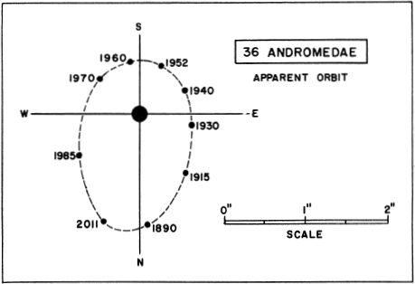
Σ 215 Mag 8.6 (variable); spectrum GO. The position is 02060n4034. A rather faint but easy pair, first measured by F.G.W.Struve in 1831. The annual proper motion is given in the Lick “Index Catalogue” as 0.03”; this may apply to both stars since no definite relative change has been noted in more than a century. The present separation is slightly over 20”. The distance of this star is not definitely known.
The brighter component is the short-period eclipsing binary BX Andromedae, with a range of 8.6 to 9.5 and a period of 0.6101123 days (14h 38.6m). According to the Moscow “General Catalogue of Variable Stars” (1958) the light curve is of the lyrid type, with a secondary minimum of magnitude 9.0. The shortness of the period suggests that this star is a dwarf system of the W Ursa Major type.
R Variable; spectrum S6e. Position 00214n3817. This is the brightest of the long-period variables in Andromeda, discovered at Bonn, Germany, in 1858. It is easily located near the bright triangle of stars formed by Theta, Rho, and Sigma Andromedae, about 4° southwest of the Great Galaxy M31. R Andromedae is noted for its exceptionally large range which at times has exceeded nine magnitudes. The star at maximum is visible in binoculars, and on occasion has attained naked-eye visibility. At minimum it is sometimes almost impossible to detect in a good 8-inch telescope. The period averages 409 days, but may vary by a number of days from one cycle to the next.
The star is a pulsating red giant of the general type to which the famous Mira (Omicron Ceti) belongs, but the spectral class in this case is type S. The distinguishing feature of the S-type stars is the presence of bands of zirconium-oxide instead of titanium-oxide in the spectrum. In the case of R Andromedae, however, bands of both compounds appear in the spectrum, the TiO features weakening or vanishing when the star is near maximum.


R ANDROMEDAE. Finder chart made from a 13-inch telescope plate at Lowell Observatory. Circle diameter = 1 degree. North is at the top. Limiting magnitude about 15. Bright star at lower right is Rho Andromedae, magnitude 5.1. I
The distance of the star is not known with any degree of accuracy, but appears to be too remote to offer any results from the direct parallax method. If the actual luminosity is comparable to Mira the distance must be 4 or 5 times greater, possibly about 800 to 1000 light years. The radial velocity is about 6½ miles per second in approach; the annual proper motion is only 0.02”. (For a more detailed account of the long-period variables, refer to Omicron Ceti.)
Z Variable. Position 23312n4832. A remarkable and peculiar variable star, possibly associated with the recurrent novae, but displaying certain enigmatic features of its own. Normally it is a semiregular red variable of small amplitude with an M-type spectrum and an average magnitude of about 11. At long intervals, however, the star flares up in sudden outbursts of about 3 magnitudes, and at these times the M-spectrum is overpowered by a “shell spectrum” of wide bright lines, similar to that of a nova. As the nova-like spectrum slowly fades the star returns to its former pattern of slow and semiregular variations.
The most violent recorded outbursts have occurred in 1901, 1914, 1939, and 1959. The maximum of 1901 was preceded by fluctuations of gradually increasing amplitude which can be detected on Harvard plates as early as 1890. After reaching a maximum of about 9½ the star declined, and had faded to 12th magnitude by 1907. In the autumn of 1914 it rose again to nearly 8th magnitude, faded by 3 magnitudes during the next year, then brightened again in the spring of 1916. For the next 15 years the star brightened and dimmed in a fairly regular cycle of about 695 days, but with steadily decreasing amplitude. By 1931 a normal minimum was reached, and the star remained faint until the outburst of 1939. In the summer of that year it began to brighten, and reached magnitude 7.9 in November, probably the greatest brightness yet recorded. In 1959 it rose to 10th magnitude, and in 1961 brightened to 9.2.

From spectroscopic observations it now appears certain that Z Andromedae is actually a close binary star. The spectrum is composite, and combines the features of a low temperature red giant and a hot bluish B-star which is probably a subdwarf. P.W.Merrill has applied the term “symbiotic stars” to objects of this type. Z Andromedae and R Aquarii are perhaps the most typical examples. The bright outbursts are attributed to the blue stars, but the red components appear to be variable also, with a range of one or two magnitudes. In addition, the spectrum shows the lines which are characteristic of the gaseous nebulae, and it seems certain that both of the components are enveloped in a gaseous cloud. In the case of R Aquarii a faint diffuse nebula can actually be seen surrounding the star, and it is in a state of slow expansion.
A significant fact about Z Andromedae is that the blue and red components both vary in nearly the same cycle of about 700 days, and that the radial velocities again show approximately the same period. The variations of both stars may be connected in some way with the orbital motion of the system. The bright outbursts may be attributed to some process of interaction between the components; the same mechanism has been proposed also for the recurrent novae. But the exact details are quite uncertain. In the case of the eruptive “dwarf novae” of the U Geminorum type there is some evidence that the red component is the seat of the outbursts, rather than the blue subdwarf as has been generally assumed. At the present time, the whole subject is well supplied with fascinating uncertainties. (Refer also to R Aquarii, AG Pegasi, and T Corona Borealis.)
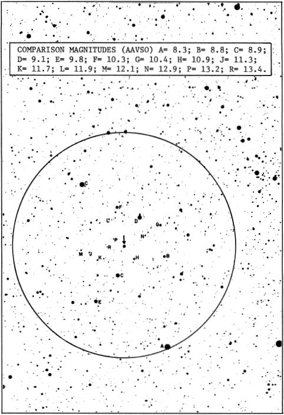
Z ANDROMEDAE. Finder chart made from a 13-inch telescope plate at Lowell Observatory. Circle diameter = 1 degree. North is at the top. Limiting magnitude about 15.
RX Variable. Position 01017n4102. An erratic and very unpredictable variable star, belonging to the rare class of which Z Camelopardi is the prototype. It was discovered in 1905 by the British observer A.S.Williams, and his preliminary light curve was published the same year. The variations frequently resemble those of the famous SS Cygni, with smallscale nova-like outbursts occurring repeatedly at intervals of from 2 to 3 weeks. The total range is about 3½ magnitudes, and the rise to maximum is usually accomplished in 2 or 3 days. But at other times the variations are completely irregular and totally unpredictable. On occasion the star may remain nearly constant for several months, as shown on the accompanying light curves.
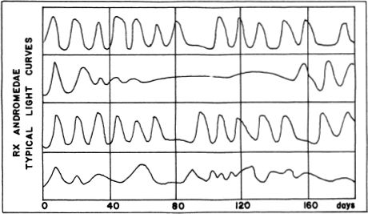

RX ANDROMEDAE. Finder chart made from a 13-inch telescope plate at Lowell Observatory. Circle diameter = 1 degree. North is at the top. Limiting magnitude about 15. Bright star inside the circle is 39 Andromedae, magnitude 5.9.
RX Andromedae has a peculiar spectrum, showing bright hydrogen lines against an apparently continuous background, the lines weakening as the star rises to maximum. The color is equivalent to a late A-type star. The spectral features and light curve both show a strong resemblance to Z Camelopardi. RX Andromedae is a very close and rapid binary with a period of 5h 05m, a significant discovery since the similarly acting SS Cygni, AE Aquarii, and U Geminorum are all known to be close dwarf or subdwarf binaries of this same type. A current theory regards the outbursts as a result of an interchange of material between the close components, one of which may be a degenerate star.
R.P.Kraft (1962) classes the blue components of these systems as subdwarfs (sdBe) and finds that their absolute magnitudes lie in the range of +7½ to +9. He also finds some evidence that the intrinsically fainter stars have the shortest orbital periods. The other star in each pair seems to be a red dwarf whose mass is often comparable to that of the Sun, but abnormally underluminous for its mass. Kraft suggests that material ejected from the red star forms a gaseous ring or disc around the blue dwarf. According to one theory, some of this material is eventually brought into contact with the body of the degenerate star, with explosive results. The accuracy of this picture has been questioned, however, by W.Krzeminski (1965) who finds evidence that in the very similar system U Geminorum the outbursts originate in the cooler redder component, rather than in the hot subdwarf. (Refer to U Geminorum)
W.J.Luyten (1965) finds an annual proper motion of about 0.01” for RX Andromedae, suggesting a distance of at least a few hundred light years. At the time of writing, no direct parallax measurement seems to be available. (Refer also to SS Cygni, U Geminorum, AE Aquarii, and Z Camelopardi.)
GRB 34 Groombridge 34 (ADS 246) (BD+43°44) Position 00155n4344. This is a noted red dwarf binary system, and one of the closest double stars to the Solar System. It is located about ¼° north of 26 Andromedae. The star was discovered through proper motion measurements in 1860. The two components are magnitudes 8.1 and 10.9 and are separated by 39”. The PA is increasing by about 5° per century; the orbital motion is thus so slow that no definite period can yet be derived. According to a preliminary computation by Hopmann (1957) a period of slightly over 3000 years is suggested, with periastron about 2320 A.D. Hopmann’s orbit has a semi-major axis of 44” and an eccentricity of 0.25.
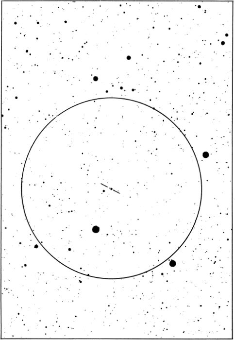
Groombridge 34-Finder chart made from a 13-inch telescope ! plate at Lowell Observatory. Circle diameter = 1 degree. North is at the top. Limiting magnitude about 15. Bright star inside the circle is 26 Andromedae, magnitude 6.0.
Groombridge 34 is 11.7 light years distant, and has the large proper motion of 2.89” annually in PA 82°. The true separation of the two stars averages about 160 AU. According to A.H.Joy (1947) the primary is a spectroscopic binary of uncertain period. The chief facts about the two stars are given in the following short table:

A third star of the 11th magnitude, called “C”, was 20n distant in 1917, but it is not a physical member of the system, and does not share the large proper motion of A & B. The separation in 1961 had increased to about 2.3’ from the gradual drift of the motion pair. The radial velocity of both stars is about 11 miles per second in recession.
M3I (NGC 224) Position 00400n4100. The Great Andromeda Galaxy, the chief object of interest in the constellation. It is the brightest and nearest of all the spirals, and the only one which can be considered a definite, obvious naked-eye object. As seen without optical aid it appears as a small elongated bit of fuzzy light, about 1° west of the star Nu Andromedae. A pair of good binoculars will be found very useful in searching for it, and on a really clear night will enable the full diameter to be traced out to over 4°. When observing M31 through the small telescope, a low power wide-field eyepiece is essential; high powers show only the nuclear condensation.
According to R.H.Allen, the Andromeda Galaxy has been known at least as far back as 905 A.D. and was mentioned by the Persian astronomer Al Sufi in the 10th Century. It was called the “Little Cloud” and appeared on star charts long before the development of the telescope in 1609. Simon Marius is usually credited with the first telescopic observation of the object in 1611 or 1612. He compared the soft glow to “the light of a candle shining through horn”. For the visual observer, the description is still accurate today, even in the age of the great modern telescopes. The largest instruments reveal little more than an elongated foggy patch which gradually brightens in the center to a nearly star-like nucleus. In a good 8-inch reflector, the prominent dark lane on the northwest edge of the central hub, and the bright star cloud near the south-tip may both be glimpsed, if the sky is dark and clear. But except for these faint details, the soft light of the great galaxy remains a smoothly luminous glow without the slightest hint of resolution. Early observers had thought the “nebula” to be composed of glowing gases; some regarded it as “a solar system in the making” and imagined that our own Sun looked much the same in the days of the primeval dust cloud, when the planets were being formed, Spectroscopic analysis of M31 eventually destroyed all such assumptions, and left no doubt that the light of the enigmatic “Great Nebula” actually came from a multitude of individual stars.
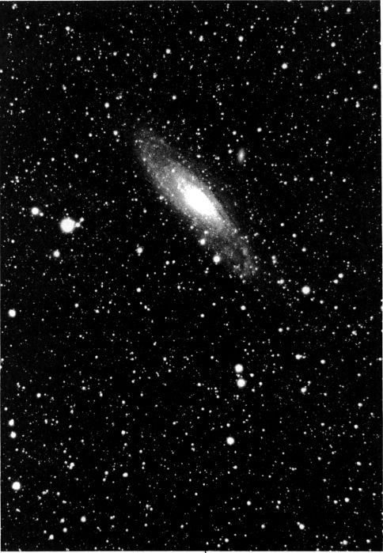
THE GREAT ANDROMEDA GALAXY M31, photographed with the 5” Cogshall camera at Lowell Observatory. This huge spiral is probably the largest member of the Local Group of Galaxies.
Only long-exposure photographs taken with large telescopes will reveal the true nature of such an object. The “Little Cloud” in Andromeda is actually a vast galaxy, an aggregation of billions of stars like our own Milky Way galaxy. It appears as an elongated oval because it is inclined only 15° from the edge-on position; actually it is round and flat, and has a spiral pattern which classes it as type Sb. This great island universe is the nearest of all the spirals and is probably the largest member of the Local Group of galaxies. The distance is 2.2 million light years. In viewing such an object, we are not only looking out through space across the enormous distance of about 13 thousand quadrillion miles; but we are also looking back through time, to a period about 2 million years ago, when the light of the Andromeda system started on its long journey toward the Earth.
The first hint of the true nature of the Andromeda Galaxy came late in 1923 when several cepheid variable stars were identified in the system. In a study of these objects, made with the 100-inch telescope at Mt.Wilson, Dr.E.Hubble definitely established the great spiral as an extra-galactic object, and derived a tentative distance of about 900,000 light years. Hubble’s discovery was announced at the meeting of the American Astronomical Society in Washington D.C. in December 1924, and dramatically ended the long controversy over the nature of the “spiral nebulae”. Further studies, still using the pulsating cepheids as distance indicators, caused a revision of the distance to about 750,000 light years, and until rather recently this remained the most accurate estimate possible. For the method of using cepheid stars as distance indicators, refer to Delta Cephei.

THE ANDROMEDA GALAXY. This striking photograph of M31 was obtained with the 36-inch Crossley Reflector at Lick Observatory.

NORTHEAST SECTION OF THE ANDROMEDA GALAXY M31; from a photograph obtained with the Crossley Reflector at Lick Observatory.

SOUTHWEST SECTION OF THE ANDROMEDA GALAXY M31; from a photograph obtained with the Crossley Reflector at Lick Observatory.

In 1953, however, investigation of the Andromeda Galaxy with the newly completed 200-inch telescope proved that the stars of the system are arranged in two different “populations”. The spiral arms contained bright blue giant stars and nebulous regions immersed in clouds of dust (Population I) while the nuclear hub is a vast swarm of fainter red and yellow stars (Population II). The discovery was soon made that the cepheid stars are intrinsically different in luminosity in the two populations, a Population I cepheid being the brightest by at least 1.5 magnitudes. As a result, the cepheids used in the distance calibration were discovered to be more luminous than had been thought, and the distance scale was seen to be in error by a factor of 2 or 3. Various lines of evidence now agree in giving a distance of 2.2 million light years for M31, and placing the next nearest spiral (M33 in Triangulum) at about 2.4 million light years. It is not expected that any further great revisions will be required.

CEPHEID VARIABLE STARS in the Andromeda Galaxy, detected and studied by E.Hubble in 1924, on plates made with the 100-inch telescope at Mt.Wilson, Print reproduced from Hubble’s “Realm of the Nebulae”, through the courtesy of Yale University Press.
The outer parts of M31 were first resolved into stars on long-exposure photographs with the 100-inch telescope at Mt.Wilson. Resolution of the nuclear hub proved much more difficult, and was finally accomplished with special red-sensitive plates on the 200-inch telescope at Palomar. This was a triumph of observational astronomy, but it must be remembered that anything like a complete resolution of the galaxy is quite impossible. At a distance of over 2 million light years, only the most brilliant stars - the high luminosity giants - can be seen at all. Our own Sun, at such a distance, would appear of visual magnitude 29.1, and would be 200 times too faint to be detected in the greatest telescopes on Earth.
The Andromeda Galaxy probably contains over 300 billion individual stars. Its computed mass is about 400 billion times that of the Sun. The total luminosity is equal to 11 billion suns, and the absolute magnitude is given by A.Sandage as -20.3. This is intrinsically one of the most luminous galaxies known.
On the best photographs the image of M31 measures a full 160’ X 40’, nearly 2.7° across the longer dimension. This corresponds to an actual diameter of 110,000 light years. Measurements with the sensitive instrument known as the densitometer increase the size to 4.5° or 180,000 light years. Thus M31 must be classed as one of the largest galaxies known. Our own Galaxy, for comparison, is thought to measure about 100,000 light years in diameter, and the majority of the known spirals are less than half this size. The central mass of M31 is a huge elliptical galaxy in itself, and measures about 12,000 light years in diameter. This hub is a huge globular aggregation rich in red and yellow giant stars, and comparatively free of dust and gas. It is classified as a “Pop. II” system. In contrast, the outer portions, containing the spiral arms, comprise a typical “Pop. I” system, notable for the presence of extremely luminous blue giant stars, extensive bright and dark nebulosity, dust and gas. A detailed study of the Andromeda Galaxy by W. Baade has identified seven distinct spiral arms: two dust arms near the nucleus, and five outer arms of coiled star clouds. An interesting feature of M31 is the system of dark dust lanes which outline the spiral form of the galaxy, giving us perhaps an idea of the appearance of our own Milky Way system from a similar distance.

SOUTHERN SECTION OF THE ANDROMEDA GALAXY, photographed with the 100-inch reflector at Mt.Wilson. The prominent star cloud near the top of the print is NGC 206.
Among the star clouds of M31, one object is to be especially noted. Sufficiently conspicuous to appear in the “NGC” Catalog as a separate entry, it bears the number NGC 206. It is easily located near the south tip of the galaxy and close to the western rim, where it may be detected with a good 8-inch telescope on a dark night« The dimensions of this cloud of stars are about 2900 X 1400 light years. A few hundred stars in the cloud have luminosities of over 10,000 times that of the Sun, while the fainter stars are literally uncountable. The brightest individual stars of the spiral arms have absolute magnitudes of about -7, comparable to such supergiants as Rigel and Deneb; while for the brightest of the red giants in the central hub the figure is about -3.5.
In the heart of the central hub lies the actual nucleus of the Andromeda spiral, a sharp star-like condensation which looks nearly stellar even in the largest telescopes« Observations at Lick show that this nucleus has an apparent size of about 2.5” X 1.5”, indicating an actual diameter of some 50 light years. The nucleus seems to be something in the nature of a super-globular star cluster, containing possibly over 10 million stars. In such a mass, the separation of the stars would average only a few hundred AU, and the density would be about 50 or 60 stars to the cubic light year« In such dense groupings of stars the possibility of stellar collisions must be considered. It has been suggested that some of the peculiar phenomena displayed by galaxies such as M87 in Virgo, with its nuclear “jet”, are due to explosions in the nuclei. Such an explosion could conceivably begin with a collision of two stars. Another suggestion is that a supernova explosion in a dense star region acts as a triggering device, and in some way causes a chain reaction of other explosions. In some of the strong “radio galaxies” we may be seeing such phenomena. The intense radio source “Cygnus A” appears to be a case in point. It is interesting to note that the center of our own Galaxy has been identified with a very powerful radio source called “Sagittarius A”. This source is believed to be a very small dense nucleus very similar to the one observed in M31”.

NUCLEUS OF THE ANDROMEDA GALAXY is shown (top) on a plate made with the 60-inch reflector at Mt.Wilson. Resolution of the central hub of M31 is evident (below) on a 120-inch reflector plate made at Lick Observatory.
The Andromeda Galaxy has been found to be surrounded by some 140 objects which have been identified as globular star clusters from their apparent size, distribution, and absolute magnitudes. They are apparently comparable with those in our own Galaxy in size and brightness, and some have been partially resolved with the 200-inch telescope. A number of other objects have been identified as planetary nebulae, and many bright emission regions appear along the spiral arms on red-sensitive photographs. In its content of stars, dust, and gas the Andromeda system strongly resembles the Milky Way.
The first successful attempt to measure the radial velocity of the Andromeda system was made by V.M.Slipher at Lowell Observatory in 1912. At the time the true nature of the “spiral nebulae” was quite unknown. Using exposures of up to 7 hours with the 24-inch refractor, Slipher found a large displacement of the spectral lines toward the blue end, indicating a high velocity of approach. From measurements of four different spectrograms, the mean velocity was found to be about 300 kilometers per second.
In announcing the discovery, Slipher stated that “the magnitude of this velocity, which is the greatest hitherto observed, raises the question whether the velocity-like displacement might not be due to some other cause, but I believe we have at the moment no other interpretation for it. Hence we may conclude that the Andromeda Nebula is approaching the Solar System with a velocity of about 300 kilometers per second.”
The best of modern measurements give the radial velocity as 266 kilometers per second, but much of this velocity is actually the effect of the motion of our own Sun in the rotating Milky Way galaxy. Applying this correction, the true velocity of M31 is reduced to about 35 kilometers per second in approach. M31 thus does not show a “red—shift” as do all the more remote galaxies; it is a member of the Local Group which contains our own Milky Way, and the members constitute a gravitationally bound family.

NOVAE IN THE ANDROMEDA GALAXY as identified by E.Hubble in 1932 with the 100-inch telescope at Mt.Wilson. Plate from Hubble’s “Realm of the Nebulae”, Yale University Press.
Like our own star system, the Andromeda Galaxy is known to be in slow rotation about its central mass. It does not rotate as a solid body, however. The central hub rotates in only 11 million years, while the outer portions move more slowly and require from 90 to 200 million years to make one complete turn. The observed rotation of this galaxy partly answers the question “Do spiral arms lead or trail?” In M31 the northwest edge is obviously the nearer side, and since the radial velocity measurements show that the southern tip is approaching and the northern tip receding, it is evident that in this particular spiral the arms trail as the galaxy turns. This is also true for all the other spirals which are so oriented that a measurement can be made, and it seems safe to conclude that the question is settled.
NOVAE IN THE ANDROMEDA GALAXY. Since resolution of M31 was first achieved in 1923, over 100 novae have been detected in it, and it is estimated that if a constant watch were kept the total might run as high as 30 per year. The great distance of M31 makes these stars appear very faint, from the 15th to the 19th magnitudes. When corrected for distance, however, their actual luminosity is found to be comparable to the normal novae of our own galaxy. The faintest of them has a luminosity of about 10,000 suns and the most brilliant are equal to about 400,000 suns. The nova of 1925 was, according to Hubble, the brightest normal nova recorded in M31. Its absolute magnitude was about -9.3, approximately equal to Nova Aquilae 1918 in our own galaxy.
Harlow Shapley, in his book “Galaxies”, makes the interesting comment that at the present rate of “novation” some 50 million novae have probably appeared in M31 in the last 2 million years. The light waves of all these outbursts are now on their way to the Earth, events of the far future for us, but of the distant past for the hypothetical inhabitants of the Andromeda Galaxy.
At the distance of M31, even the brightest of the normal novae is beyond the range of amateur telescopes. In the year 1885, however, a star appeared near the nucleus that exceeded the light of any normal nova by a factor of at least 10,000. Probably near peak brightness when discovered by E.Hartwig on August 20 of that year, the star was near naked-eye visibility with an estimated magnitude of about 6. An observation of the new star was also made by Professor L.Gully in Rouen, France, on August 17, but he failed to realize the significance of the object, and attributed it to a defect in a new telescope! Gully’s description leads to a magnitude estimate of 5½ or 6. An analysis of the observations has been made by S.Gaposchkin at Harvard; he finds that the maximum probably occurred on August 17, 1885, and the peak brightness may have been about magnitude 5.4.
The light of the nova decreased for about 5 months, and the star faded from sight in February 1886. According to R.H.Allen it was last seen by A.Hall with the 26-inch refractor at Washington as a 16th magnitude object, on February 1, 1886. This unique phenomenon was of exceptional interest to astronomers; since the nature and distance of the “spiral nebulae” were then unknown, the actual brightness of the new star was a matter of conjecture.

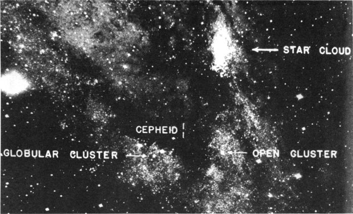
SOUTHERN TIP OF THE ANDROMEDA GALAXY, showing some of the objects identified on 100-inch telescope plates at Mt.Wilson Observatory. This plate originally appeared in E.Hubble’s “Realm of the Nebulae” and is reproduced by permission of Yale University Press. The object marked “star cloud” is NGC 206.
Today it is known that the nova of 1885 was in reality one of the most brilliant stars which man has ever viewed; a representative of that wonderful but very rare class of exploding stars known as “supernovae”. At a distance of 2.2 million light years, a star which appears as a 6th magnitude object must have an actual luminosity of about 1.6 billion times that of the Sun. The corresponding absolute magnitude would be -18.2. This star, often referred to by its letter designation “S Andromedae”, has the distinction of being the first extra-galactic supernova ever observed, though of course its actual significance was not realized at the time. The supernova phenomenon appears to be due to the catastrophic collapse and explosive disintegration of a massive star, an event which may occur, on the average, every 2 or 3 centuries in any one galaxy. In the last thousand years there have been at least four such super-explosions observed in our own Galaxy: the first in Lupus in 1006 AD, the second in Taurus in 1054 AD, now represented by the expanding “Crab Nebula”, the third in Cassiopeia in 1572 (Tycho’s Star), and the fourth in Ophiuchus in 1604 (Kepler’s Star).
M31 AS A RADIO SOURCE. The Andromeda Galaxy has been identified as a source of radio radiation by H.Brown and C.Hazard at Jodrell Bank in England. This radiation, at a frequency of 158.5 megacycles, was detected in 1950 with a paraboloidal antenna 218 feet in diameter, the largest in the world at the time. This was the first detection of radio energy from an external galaxy. A number of other cases are now known, and it is thought probable that every normal galaxy is at least a weak transmitter of radio radiation. The strongest radio sources are definitely abnormal objects such as the peculiar galaxies Cygnus A, NGC 5128 in Centaurus, and M87 in Virgo. In the Andromeda Galaxy, a normal spiral, the radio energy appears to originate in the tenuous gas clouds which occupy the spaces between the stars.
THE COMPANIONS OF THE ANDROMEDA GALAXY. M31 has four small satellite companions, dwarf systems of the elliptical type. All are apparently at the distance of the main system and are gravitationally connected with it. Each is composed of millions of faint stars; resolution of all four systems has been accomplished with red-sensitive exposures on the 100-inch and 200-inch telescopes. The main facts of interest are given in the following brief table. Luminosities are in millions of suns, diameters are in light years. M31 itself is listed first for comparison.
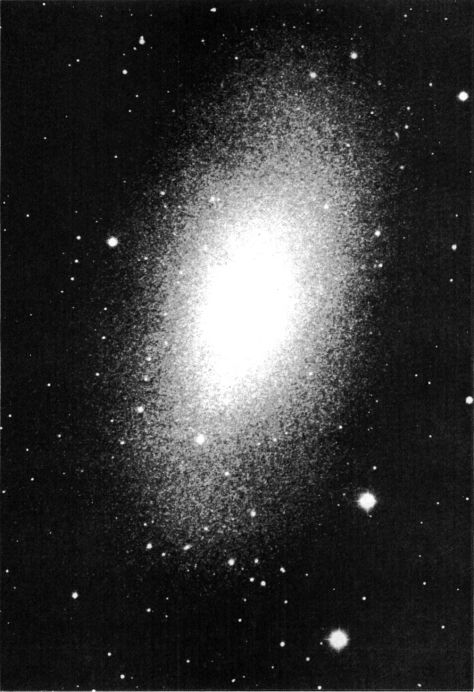
NGC 205. The largest of the companions of the Andromeda Galaxy; resolved into millions of stars on this 200-inch telescope plate. Mt.Wilson and Palomar Observatories.
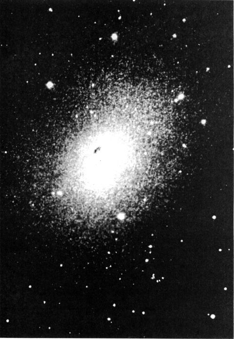
NGC 185. One of the dwarf elliptical companions to the Great Andromeda Galaxy. Resolution into stars is shown on this 200-inch telescope plate. Palomar Observatory

For the amateur telescopist, all four of these small systems are available for observations. M32 may be seen in field glasses as a fuzzy 9th magnitude “star” just 24. to the south of the central mass of M31. According to Messier it was first seen by Le Gentil in 1749. The corrected radial velocity of M32 is about 10 miles per second in recession, probably a result of the orbital motion around the massive M31. In a 3-inch telescope, NGC 205 is visible as a larger but dimmer oval blob of light, 35’ northwest of the M31 nucleus. Messier may have been the first to see NGC 205, in the year 1773, though it was never entered in his famous catalog. M32 and NGC 205 are conspicuous on photographs of the Andromeda Galaxy and are well known to most observers. Both are considerably larger than visual observations would indicate; densitometer studies of M32 show that the true size is at least 8.5’. These are the closest galaxies of the elliptical type, and are typical systems of the Population II class. Only in a small dust cloud in NGC 205 are any Pop. I stars found.
The other two objects, NGC 185 and NGC 147, are some distance from the main group, about 7° to the north. They are much fainter and considerably more difficult to view, although a good 6-inch telescope is capable of showing both of them when sky conditions permit. They are 58’ apart and can be seen together in a low power wide-field ocular. With absolute magnitudes of about -12.8 and -12.5 these are among the intrinsically faintest galaxies known.A feature of interest is the small irregularly-shaped dust patch which can be seen on 200-inch telescope photographs of NGC 185. The remainder of the galaxy appears to be pure Population II. NGC 185 and 147 are actually located in the constellation of Cassiopeia, and are described here only because of their physical connection with the Great Andromeda Galaxy.
THE LOCAL GROUP. The Milky Way System and M31 are the two brightest members of a small cluster of galaxies known as the Local Group. At least 20 members are now recognized and additional faint systems may yet be found. For information on other members refer to: The Magellanic Clouds in Dorado and Tucana, M33 in Triangulum, NGC 6822 in Sagittarius, IC 1613 in Cetus, and the peculiar dwarf galaxies “Fornax System” and “Sculptor System”.
NGC 752 A large scattered cluster of fairly bright stars, located about 5° south of Gamma Andromeda and slightly west, at 01548n3726. The group is actually more conspicuous in good binoculars than in the average telescope, due to its large area and low density; it makes its best impression in relatively small rich-field instruments with wide-angle eyepieces. The apparent diameter is about 45’, the members ranging in brightness from 9th to 12th magnitude.
In an early study of the cluster, E.G.Ebbighausen (1939) obtained proper motions for 125 stars in the group, identifying 39 stars as almost certain members and 24 others as very probable. The annual proper motion of the cluster was found to be about 0.012” in PA 160°; the radial velocity is about 2.5 miles per second in approach. According to a summary by H.Arp (1962) the distance is close to 1300 light years; the actual diameter must then be about 17 light years. The brightest stars are listed in the short table below, according to photoelectric measurements by H.L.Johnson at McDonald Observatory in 1952. Not included is the apparently brightest star in the cluster (magnitude 7.1) which has been found to be a non-member.
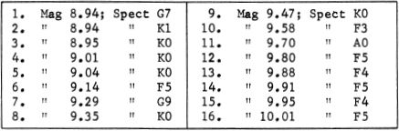
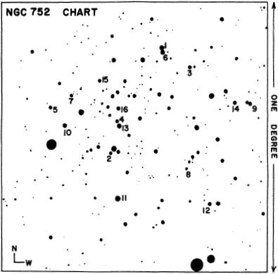
Star #1 is a G7 III giant about 40 times brighter than the Sun; the absolute magnitude is about +0.7, The membership of Star #2 is somewhat uncertain since the radial velocity seems to be much higher than the cluster stars; it may very well be a foreground object. Omitting this star, there are 7 other orange giants in the cluster but virtually all the other members are F-type subgiants with the single exception of #11. This A0 star seems to be confirmed as a cluster member by both proper motion and radial velocity measurements. With this one exception the cluster is characterized by a complete absence of early-type stars.
Although not spectacular visually, NGC 752 is a most unusual and interesting cluster. Its stellar population, as shown by the familar H-R diagram or color-magnitude graph, seems to place it somewhere between the normal galactic clusters and the globulars in the matter of age and evolutionary development. Its structure and space motion definitely class it as a galactic cluster, but the stars seem to be evolving toward the typical pattern displayed by the H-R diagram of a globular cluster. The majority of members are F-type subgiants which lie well above the main sequence, and are presumably evolving toward the giant stage. The cluster population appears to end rather abruptly just above absolute magnitude +4; no fainter members are known, and probably do not exist.
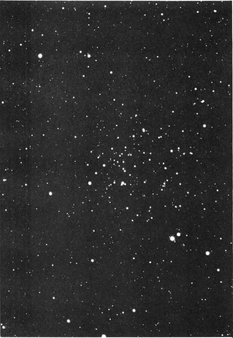
NGC 752. The field of the widely-scattered star cluster is shown on this plate made with the 13-inch telescope at Lowell Observatory.
In an analysis of the H-R diagram, N.G.Roman (1955) finds that “the differences between the normal and the NGC 752 main sequences is very similar to the change of the theoretical main sequence with time”. Current ideas of stellar evolution suggest a minimum age of about 1.5 billion years for the cluster, older than most of the well known galactic clusters, but younger than M67 in Cancer and NGC 188 in Cepheus. Two other clusters which seem to be of comparable age and type are NGC 7789 in Cassiopeia and NGC 2158 in Gemini. H.Arp (1962) refers to these as “intermediate-age star clusters” and suggests that they were formed in the outer regions of the Galaxy where star formation is slower and the interstellar gas is less rich in the atoms of the metals. The fact that the subgiants of NGC 752 are metal-poor by a factor of 2 has been confirmed by spectroscopic analysis. It is also possible that the lack of smaller low-mass stars is due to their gradual escape from the cluster during the long period since its formation.

In view of the relatively great age of NGC 752, it would be interesting to identify possible white dwarf members of the cluster. At the distance of the group the most luminous white dwarfs would appear about 18th magnitude, and would be difficult to detect. In a preliminary study, W.J.Luyten (1951) found a number of faint white and bluish stars in the cluster area; nine of these have apparent magnitudes of 19 and 20 and may be cluster members, though no positive proof is yet available.
NGC 891 One of the most striking examples of a spiral galaxy seen exactly edge-on; equalling in interest the more famous NGC 4565 in Coma Berenices. It is located about midway between Gamma Andromedae and the open cluster M34 in Perseus, at 02193n4207. The galaxy is not an easy object in the small telescope since the surface brightness is quite low, but on a clear night it may be detected with an aperture of 5 or 6 inches. The apparent size is about 12’ X 1’; the total magnitude about 12.
The distance of NGC 891 is still somewhat controversial. According to M.L.Humason, N.U.Mayall, and A.R.Sandage (1956) the galaxy is a member of a small group which includes NGC 1023 in Perseus, NGC 925 in Triangulum, and several other members. The computed modulus is about 29 magnitudes, giving a distance of 20 million light years. According to J.Materne (1974) of the Hamburg Observatory, however, the published Humason red-shift is seriously in error; he finds a corrected value of about 435 miles per second and accepts a distance of 13.1 megaparsecs, or about 43 million light years. The NGC 891-1023-925 group appears to be dynamically stable, with a total mass of about 800 billion suns.
The true diameter of NGC 891 itself must be over 120,000 light years if the derived distance is accepted; the total luminosity must then be about 1½ billion times that of the Sun. The absolute magnitude may be about -18.6. This is several magnitudes fainter than M31.
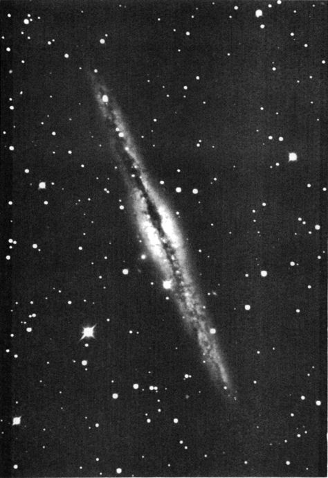
NGC 891 in ANDROMEDA. A prime example of an edge-on spiral galaxy. 60-inch telescope photograph, Mt.Wilson and Palomar Observatories.
Photographs taken with great telescopes show a complex system of dark clouds extending in the form of an equatorial band across the entire length of the galaxy, well defined in silhouette as it crosses the nucleus, and breaking up into irregular masses farther out in the region of the spiral arms. Much of these details are revealed only by long-exposure photography, though the dark band itself was known in the time of Lord Rosse, and is clearly shown on his drawings made in 1850 with the 6-foot reflector at Parsonstown, Ireland. According to John Herschel, the visual appearance of the object gave the impression of “a thin flat ring of enormous dimensions, seen very obliquely”. One of the very early plates of this galaxy was a fine photograph made by Isaac Roberts with his 20-inch reflector in 1891, and showing the dark lane much as it appears on modern photographs. Measurements by C.K.Seyfert (1940) show that the dark lane is not truly “dark” but is 0.6 to 0.9 magnitude fainter than the surrounding brightness of the galaxy.
In our own Milky Way, similar clouds of dust and dark nebulosity are responsible for the irregularities and dark lanes in the Milky Way. The famous “Great Rift” which runs from Cygnus through Sagittarius is a prime example. When we observe NGC 891, the explanation for such phenomena is quite plain, and it is interesting to note that wide-angle camera photographs of the Milky Way strikingly resemble photographs of NGC 891. (To make the comparison, refer to the section on the Sagittarius Milky Way)
NGC 7662 A bright, slightly elliptical planetary nebula, measuring 32” X 28”, bluish-green in color. Position 23234n4212. It can be detected with very small telescopes as a nearly stellar object of magnitude 8½, half a degree southwest of the 5th magnitude star 13 Andromedae. With a 6-inch glass and a magnification of at least 50X it begins to show a softly glowing disc. In a 10-inch glass the darker center gives it an annular appearance; the central star is a difficult object visually, but appears clearly on photographs. Using the 40-inch Yerkes refractor, E.Barnard described this nebula as “a beautiful object-a slightly elliptical disc with quite sharply defined outlines. Unsymmetrically placed on this is a roughly elliptical broken ring of greater brightness. The interior of this ring is dark but not black, and in this, approximately central, is ordinarily a faint stellar nucleus.”
Like many of the planetaries, NGC 7662 shows some remarkable color effects when seen with a large telescope. The main body of the nebula appears to glow with a bright bluish green color, strongest in the concentric “shells” which enclose the darker center. These details are enclosed in a larger fainter shell which often seems to be of a rosy or pinkish tint, according to some observers, very possibly due at least in part to the effect of contrast. The central star, a hot bluish dwarf, often appears yellow by contrast with the bluish tint of the nebulosity.
The distances of the planetary nebulae are not known with any real accuracy. According to the Skalnate Pleso Catalogue (1951) the distance of NGC 7662 is about 1800 light years, the actual diameter about 20,000 AU. In a survey of the brighter planetaries, C.R.O’Dell (1963) derived a distance of 1740 parsecs or about 5600 light years for this nebula, increasing the actual size to 0.8 light year, or nearly 50,000 AU. The central star is a bluish dwarf with a continuous spectrum and a computed temperature of about 75,000°K. The nuclei of the planetary nebulae are among the hottest stars known.
In the years between 1897 and 1908, E.Barnard found evidence of variability in this central star. His observations, made on nearly 80 different dates, showed a magnitude range of 12th to 16th; the periods of greatest brightness were not long lasting and occurred at irregular intervals. The reality of these changes has been questioned, however, by modern observers. C.R.0’Dell points out that the apparent brightness of a star surrounded by strong nebulosity is critically correlated with the seeing. “As the seeing varies, the ability to discern the star will change because of the superposition of the nebula, while nearby comparison stars will not be affected.” As mentioned elsewhere in this book, the central star of the Ring Nebula M57 in Lyra has also been suspected of variability but the physical reality of such changes remains unproved. Amateurs with fairly large telescopes have an opportunity to contribute information of value toward a solution of this controversy. The visibility, or otherwise, of the central star should be recorded on different nights, with estimates of the apparent magnitude; then the seeing conditions should be recorded by making critical observations on various close double stars.
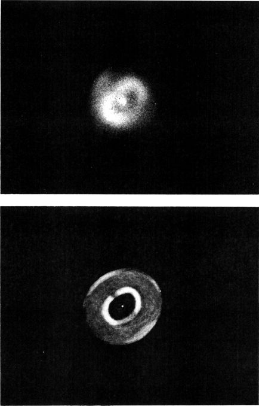
NGC 7662. Top: Direct photograph with the 42-inch reflector at Lowell Observatory. Below: Drawing by Barnard, with the Yerkes 40-inch refractor, Courtesy of the Royal Astronomical Society, from ‘‘Monthly Notices” Volume 68 (1908)
As in all the planetary nebulae, much of the light is fluorescence, induced by strong ultraviolet from the hot central star. The characteristic bluish-green glow, however, once attributed to a hypothetical new element “nebulium”, is now known to be chiefly due to the so-called “forbidden lines” of doubly ionized oxygen at 5007 and 4959 angstroms. The great strength of this radiation, excited by electron collision in the nebula, is possible only because of the extremely low density of the gas, found by computation to average something like 10,000 atoms per cubic centimeter. (For a more detailed account of fluorescense and collision excitation, refer to the “Ring Nebula” M57 in Lyra.
To the astrophysicist the planetary nebulae present many interesting problems. There is no doubt that the nebula - a huge globe of rarified gas surrounding a small super-hot star - has been produced in some way by material ejected from the star. But it seems clear that one of the oldest theories, which regarded the planetaries simply as ancient novae, is quite wrong. The gaseous shells which appear around a former nova bear a superficial likeness to planetary nebulae, but expand at enormous rates and seem to vanish after a relatively short time. In contrast, the planetaries seem fairly permanent structures, expanding quite slowly, and in some cases seeming to be maintained by steady outflow of material from the star. Thus the central stars may be regarded as some variety of eruptive or “emission” star, possibly related to the Wolf-Rayet stars or to some of the rapidly evolving red giants which are known to be ejecting material into space. Another view regards a planetary nebula as the result of an exceptionally “lazy” nova. (A survey of facts and theories is presented in the section on M57 in Lyra. See Also NGC 7009 and NGC 7293 in Aquarius, and M27 in Vulpecula.)
LIST OF DOUBLE AND MULTIPLE STARS
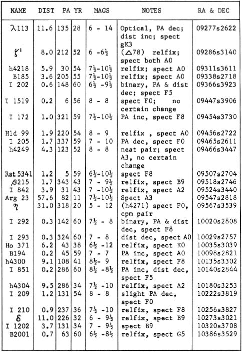


LIST OF DOUBLE AND MULTIPLE STARS
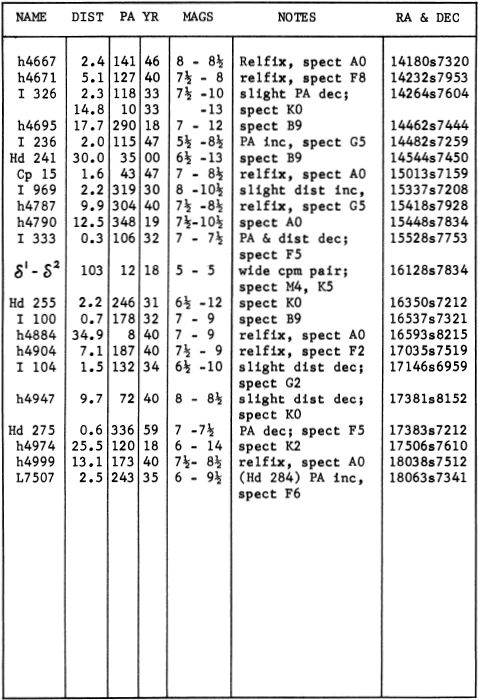

LIST OF DOUBLE AND MULTIPLE STARS
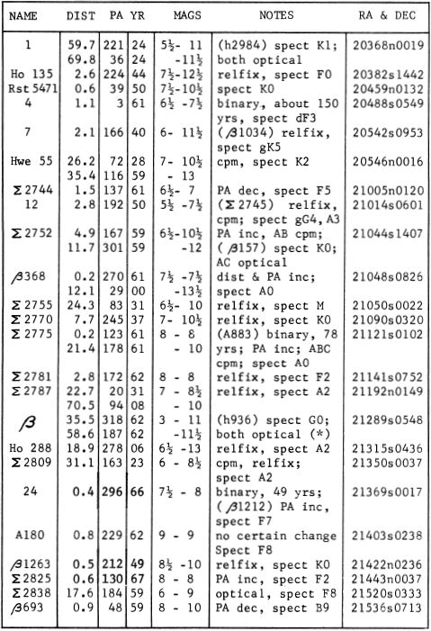
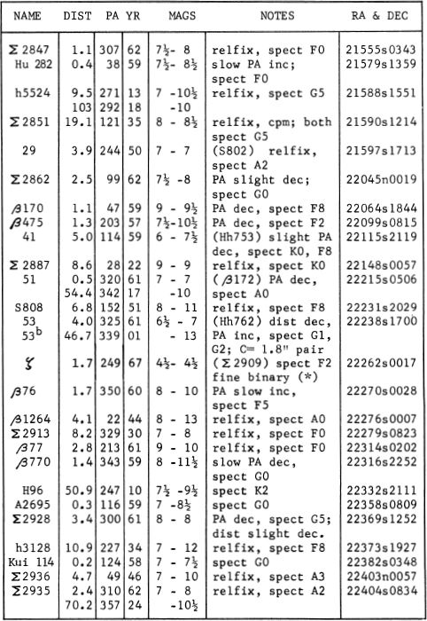

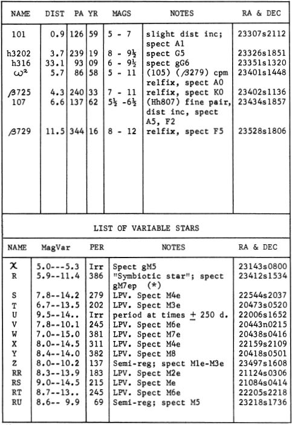
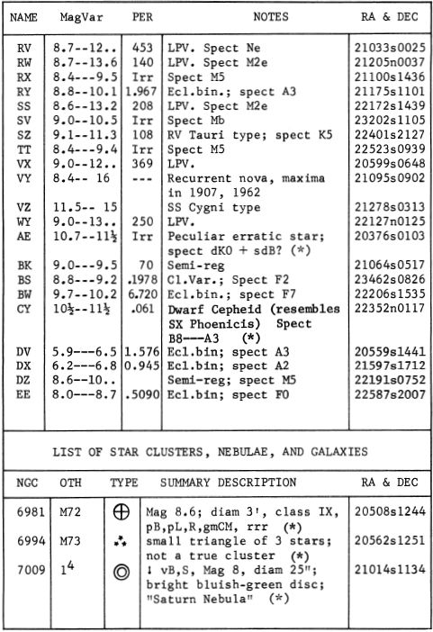
LIST OF STAR CLUSTERS, NEBULAE, AND GALAXIES
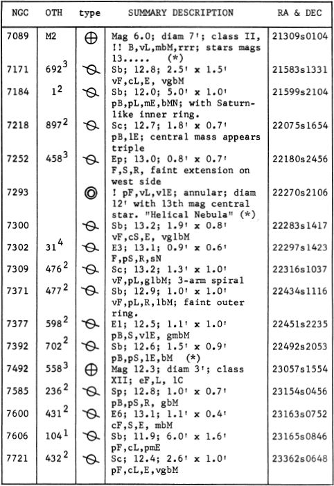
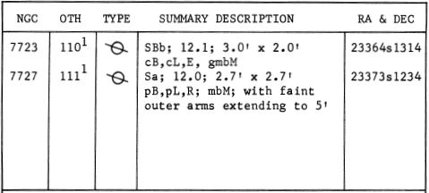
DESCRIPTIVE NOTES
ALPHA Name-SADAL MELIK, sometimes called “Rucbah”. Mag 2.93; spectrum G2 Ib. Position 22032s0034. The distance of Alpha Aquarii is about 1100 light years, the actual luminosity about 6000 times that of the Sun. The star has the same spectral class and surface temperature as the Sun, but is a giant star, whereas the Sun is a main sequence object. The diameter may be about 80 times that of the Sun, and the absolute magnitude is about -4.6. The annual proper motion is very slight, about 0.015”; the radial velocity is about 4½ miles per second in recession.
BETA Name-SADAL SUND. Mag 2.86; spectrum GO Ib. Position 21289s0548. The computed distance is 1030 light years; the actual luminosity is about equal to that of Alpha Aquarii, at 5800 times the luminosity of the Sun. The annual proper motion is about 0.017”; the radial velocity is about 4 miles per second in recession.
The star has two 11th magnitude companions at 35.5” and 58.6”, both optical attendants only. The closer star was discovered by John Herschel in 1828, the other by S.W. Burnham with a 6-inch refractor in 1879. Both separations appear to have increased slightly since discovery.
GAMMA Name-SADACHBIA. Mag 3.84; spectrum B9 III. Position 22191s0138. Parallaxes obtained at Allegheny and Yale agree in giving the distance as about 95 light years, leading to an actual luminosity of about 20 suns (absolute magnitude about +1.5.) The star is a spectroscopic binary with a period of 58.1 days. The yearly proper motion is 0.12”; the radial velocity is about 8 miles per second in approach.
A 12th magnitude star at 49” was noted by John Herschel in 1838; it has no real connection with the bright star and the separation is decreasing due to the proper motion of Gamma itself. In the year 2000 the separation will be about 28”.
DELTA Name-SKAT. Mag 3.28; spectrum A3 V. Position 22520s1605. The distance is about 85 light years (Mt.Wilson and Yale parallaxes). The actual luminosity is about 28 times that of the Sun, the absolute magnitude about +1.2. The annual proper motion is 0.05” and the radial velocity is 11 miles per second in recession.
EPSILON Name-AL BALI. Mag 3.77; spectrum Al V. Position 20450s0941. Parallax measurements are rather discordant, but suggest a distance of about 170 light years, giving an actual luminosity of about 70 suns. The expected luminosity of an Al main sequence star is about absolute magnitude +0.7 (luminosity = 40 suns) which would decrease the distance to about 135 light years.
The annual proper motion is 0.04”; the radial velocity, suspected to be somewhat variable, is about 10 miles per second in approach.
ZETA Mag 3.66; spectrum F2 IV. Position 22262s0017. This is the central star of the Y-shaped asterism formed by Gamma, Zeta, Eta, and Pi Aquarii, a figure often called the “Water Jar” of Aquarius. Zeta is a very fine close binary star, probably discovered by C.Mayer in 1777, refound by W.Herschel about 1779, and well observed up to the present day. The two stars are magnitudes 4.42 and 4.59 and are 1.7” apart (1967). The separation appears to have been decreasing steadily during the past 180 years since a measurement of 4.56” was made by Herschel in 1781. The direction of revolution is retrograde, or clockwise.
Although the binary character of this star was recognized by Herschel as early as 1804, the exact period is still uncertain, and values ranging from 400 years up to over 1600 years have appeared in various texts. According to a computation by Dr.O.Franz (1958) the period is about 600 years, with closest separation of the components in 1972. The computed orbit has a semi-major axis of 4.0” and an eccentricity of 0.45.
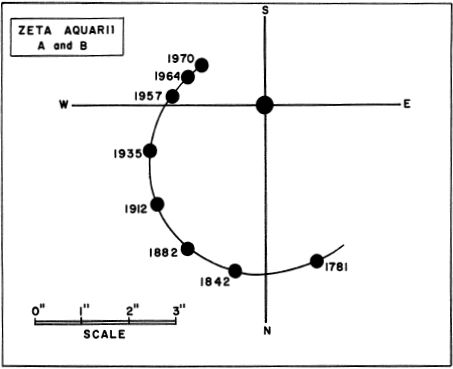
Both stars are subgiants of very similar type; the spectra are classed as F2 by some authorities, as F2 & Fl by others. The actual luminosities are 8 and 7 times that of the Sun. The distance of the system is about 75 light years. The true separation of the two stars averages close to 100 AU. Zeta Aquarii shows an annual proper motion of 0.19” in PA 78°; the radial velocity is about 15 miles per second in recession.
According to an analysis by Dr.K.Strand, a third unseen component exists in the system. From the gravitational effect upon the visible pair, the invisible body appears to be a satellite of Zeta B, about which it revolves in 25.5 years at a distance of 0.4” or about 9 AU. The masses of the three stars are calculated to be 1.13, 0.85, and 0.28 the mass of the Sun. The third component would probably be visible as a 12th magnitude object were it not so close to the bright pair. From its rather small mass and low luminosity of about 0.008 that of the Sun, it seems likely that the unseen Zeta C is a red dwarf of type dM1 or dM2. The two bright stars, on the other hand, are definitely over-luminous for their masses, and appear to be evolving toward the giant stage. The absolute magnitudes are about +2.6 and +2.8.
The star is an excellent test object for the small telescope, since the magnitudes are so nearly equal. It may be resolved with a good 3-inch glass, seeing conditions permitting, and is always an easy object with the 7-inch Lowell Observatory refractor.
R Variable. Position 23412s1534. An interesting and peculiar variable star, discovered by Harding in 1811. It sometimes reaches the 6th magnitude at maximum and has an average period of 386 days, but individual periods may be very erratic. On occasion the star has remained nearly constant during an interval of several years. A stable period of this sort lasted from 1931 to 1934, when the magnitude remained close to 9. In the years following, it returned to its usual pattern of semiregular variation. The accompanying light curve shows typical fluctuations over an 8 year period, and was compiled from the observations of the AAVSO.
R Aquarii is a red pulsating giant star of spectral type M7e, resembling the long period variables, but with certain peculiarities which make it a virtually unique object. From spectroscopic observations the existence of a companion star seems definitely established. The spectrum of the companion is that of a high-temperature 0 or B star, and is normally very faint, but becomes strong at times of unusual fluctuations in brightness. A peculiar feature of the system is that the amplitude of the “red” variation seems to decrease when the “blue” component is most active. There is little doubt that both stars are intrinsically variable. R Aquarii is thus the typical example of a rather rare class of variables characterized by composite spectra, in which the features of a low temperature red giant and a hot subdwarf are combined. P.W. Merrill has applied the term “symbiotic stars” to objects of this type.
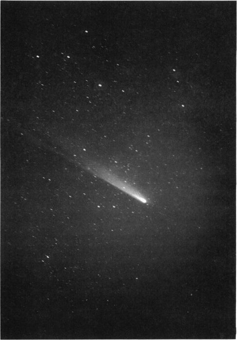
THE WATER JAR and COMET KOHOUTEK. The Y-shape asterism called the “Water Jar” appears at the top of this print, made January 13, 1974, with the 13-inch wide-angle camera at Lowell Observatory.

VARIATIONS IN R AQUARII. The top plate was made September 15, 1931; the other on August 25, 1974. Lowell Observatory photographs made with the 13-inch camera.

A revised distance determination of about 800 light years for R Aquarii allows us the deduce the following absolute magnitudes and luminosities for the system:
M7e Red Star (maximum) = -1.1; luminosity = 230 X Sun
B2? Blue Star (average) = +4.2; luminosity = 1.7 X Sun
The red star appears to be a normal giant of the long period or semiregular variable class, similar to Omicron Ceti (Mira) but the companion is a true subdwarf underluminous star which exceeds our Sun only by a magnitude or so, even at maximum. Theoretical formulae suggest that its diameter may be about 1/6 to 1/10 that of the Sun, while the red star must be at least 100 times the size of the Sun. The separation of the two stars may be on the order of 1 AU. Radio emission from the R Aquarii system has been detected at the Algonquin Radio Observatory in Ontario in April 1973.
THE R AQUARII NEBULA. As early as 1919 it was found that the spectrum of R Aquarii showed several bright lines characteristic of the gaseous nebulae. Although these lines were found to vary greatly in intensity, they showed no evident correlation with the magnitude changes of the star. This spectroscopic discovery was confirmed in 1921 by observations made with the 42-inch reflector at the Lowell Observatory. Photographs obtained by C.O.Lampland revealed a peculiar lens-shaped nebulosity about 2’ in extent, composed of curved filaments symmetrically placed about the star. In the center of this cloud, the star itself appeared embedded in a small nebulous disc resembling a miniature planetary nebula, but which seemed to be variable in brightness.
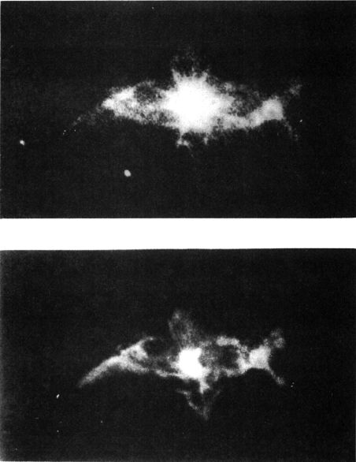
NEBULOSITY SURROUNDING R AQUARII. Top: direct photograph with the 100-inch reflector. Below: drawing made from several photographs.
Mt.Wilson Observatory
The expansion of the outer nebula, first suspected by Lampland, has been confirmed by E.Hubble and W.Baade at Mt.Wilson, and may indicate that a nova-like outburst occurred in the system some 6 or 7 centuries ago. This possibility casts new light on the significance of the symbiotic stars, and opens up a new and fascinating line of thought. A number of eruptive stars are now recognized as members of close binary systems, and there is growing evidence that the “symbiotic nature” of these stars is in some way responsible for the nova-like activity.
Z Andromedae is perhaps the most typical example, and its violent outbursts, such as that of 1914, have been thoroughly studied. Between explosions the star appears to act like a normal semiregular red giant. The bright outbursts, however, appear to originate in a hot bluish companion. Two of the actual recurrent novae - T Coronae and RS Ophiuchi - are close binary systems of the same type. In each case there is a hot blue subdwarf, mated with a cooler star of later spectral type. Even the explosive SS Cygni stars seem physically related to the abovementioned objects, differing chiefly in the fact that both components are dwarfs or subdwarfs, and the separation is much less.
Mention should be made also of two long-period variable stars, Mira Ceti and X Ophiuchi, which have binary companions actually visible through the telescope. The companion to X Ophiuchi appears to be a normal K-star, but that of Mira is a bluish dwarf or subdwarf which is itself variable by at least two magnitudes, and thus closely resembles the unseen companions of the other symbiotic stars.
The relationship of the symbiotic stars, erratic variables, and novae, has been the subject of much speculation. A current theory suggests that the two members of a symbiotic pair may have evolved to the point where an expanding giant star has begun to engulf its smaller neighbor; the outbursts of the smaller and partially degenerate star thus being attributed to accretion of material from the giant. It is difficult to evaluate this picture, and some recent studies of the SS Cygni stars seem to cast doubt on the traditional assumption that the outbursts always originate in the bluer and hotter star. However, although the details are still extremely hazy, it seems most probable that some process of interaction between the components is chiefly responsible for the erratic fluctuations of the symbiotic stars. A similar mechanism may eventually be identified as a cause of the SS Cygni outbursts, and very possibly of the recurrent novae. The idea was first suggested for the star AE Aquarii, a peculiar erratic dwarf which is now known to have a close K-type companion.

R AQUARII. Finder chart made from a 13-inch telescope plate at Lowell Observatory. Circle diameter = 1 degree. North is at the top. Limiting magnitude about 15. Bright star at top is Omega-2 Aquarii, magnitude 4.6.
(Refer also to: Z Andromedae, AE Aquarii, Omicron Ceti, BF Cygni, and AG Pegasi. For typical SS Cygni stars refer to: U Geminorum, SS Aurigae, SU Ursa Majoris, and SS Cygni. Recurrent novae are chiefly described under: T Corona Borealis, WZ Sagittae, U Scorpii, T Pyxidis, and RS Ophiuchi. For novae in general refer to: V603 Aquilae, GK Persei, DQ Herculis, and CP Puppis.)
AE Variable. Position 20376s0103. A peculiar faint erratic variable star, related probably to the SS Cygni stars, and possibly to the recurrent novae. The star is characterized by almost constant activity and the variations are unusually complex. At times there are very sudden explosive maxima when the light nearly doubles for an hour or so; this phenomenon may occur repeatedly at intervals of about a day. The rise to maximum is frequently very rapid, though on occasion the star will brighten by only a small amount and then fade back to normal in a short time. There are also more violent eruptions which occur at intervals of about a year, when the brightness may increase by two magnitudes. And finally, recent studies reveal extremely rapid changes of small amplitude with average periods of less than an hour.
AE Aquarii is thus an exciting object to observe, although the greatest visual brightness is rarely as high as 10th magnitude. The rapid changes make it a difficult object for adequate spectroscopic study even with large instruments. At discovery by A.Wachmann in 1931, the star was thought to be a long period variable of the Mira type. The sudden outbursts were first detected in a photographic study by E.Zinner in 1937, and the star was then classed among the SS Cygni stars, sometimes called ‘‘cataclysmic variables”. Although AE Aquarii is much more erratic and unpredictable than any of the classic SS Cygni stars, it still appears to be a member of the same general physical group. Like SS Cygni itself, the star is known to be a very close binary system in very rapid revolution. A.H.Joy found the radial velocity to be variable in 1954, with a range of about 180 miles per second. The masses of the two stars appear to be very nearly equal. The period is given by Joy as 0.701 days, but according to M.F.Walker (1965) the most recent observations indicate a period closer to 10 hours.
The spectrum of the brighter star was classed as dG8 by Joy, but is now considered to be about dKO. This star has about a third the luminosity of the Sun, and the absolute magnitude is about +6. The other component, regarded as the source of the erratic outbursts, is a dwarfish hot star with a bright-line spectrum of uncertain class, and an absolute magnitude of about +7. The actual separation of the two stars cannot be more than a few hundred thousand miles, which implies that they are nearly in contact. The system is remarkably similar to SS Cygni, and other such related stars as U Geminorum and Z Camelopardi. In each case a dwarfish hot star is accompanied by a larger G or K type companion. These systems are of unusual interest and significance, since they seem to show us a pair of stars “caught” at a very critical phase in their mutual evolution. The components may indeed be acting upon each other in such a way as to alter the normal course of a star’s evolution. The hot star is regarded as an object which may be near the white dwarf state, or becoming at least partially degenerate. It is suggested that the K-type companion is beginning its evolutionary expansion, resulting in a gas flow from the larger star toward the smaller; possibly some of this material is collected by the hot star, with explosive results. Although the truth of such theories is still very difficult to judge, some verification may come from studies of the recurrent novae, several of which are now known to be close binaries. As in the case of the “symbiotic” stars and the novae, it seems very probable that some form of interaction between the components is responsible for the erratic outbursts. (Refer also to SS Cygni and U Geminorum)


AE AQUARII. Finder chart made from a 13-inch telescope plate at Lowell Observatory. Circle diameter = 1 degree. North is at the top. Limiting magnitude about 15. Bright star at right is 71 Aquilae, magnitude 4.3.
CY Variable. Position 22352n0117. CY Aquarii is a noted short-period pulsating variable which, at the time of its discovery by C.Hoffmeister in 1934, had the shortest period on record, only 88 minutes. Up to 1965 only one star of still shorter period had since been found, SX Phoenicis, with a period of 79 minutes.
CY Aquarii has a light curve similar to those of the cepheids (refer to Delta Cephei). The rise to maximum is very rapid and the decline proceeds much more slowly. If the star is observed when increasing in brightness, the light change is so rapid that it can be detected in less than 10 minutes watching. The visual range is from magnitude 10.6 to 11.3.
The spectral class changes from B8 to A3 as the star falls to minimum, and because of the slight resulting change in the color, the photographic range is 0.2 magnitude greater than the visual. The computed distance of the star is close to 1300 light years, giving the average luminosity of the star as about 9 times that of the Sun. The absolute magnitude at maximum must be about +2.6.
DWARF CEPHEIDS. CY Aquarii was formerly classified as a “cluster variable” of the RR Lyrae type. From its small size and lower luminosity, and its position on the H-R diagram, it is now evident that the star cannot be a true cluster variable. It appears to be the typical example of a new class of short-period pulsating variables called “dwarf cepheids” by H.J.Smith of Harvard Observatory. The stars are dwarfs of spectral types A and F, and generally have periods of from 1.3 hours to 4.7 hours. They are not as large as the true RR Lyrae stars, but are denser, and from 2 to 30 times less luminous. They show a period luminosity relationship whereby the stars of longer period have the highest actual luminosity, but the smallest range in brightness. It seems probable that these stars are related to the variables of the Delta Scuti class, of which Rho Puppis and Delta Scuti are typical examples (periods of 3.38 and 4.65 hours respectively). Other known stars of the class are Delta Delphini, CC Andromedae, and DQ Cephei. For the H-R diagram classification of the various short-period pulsating stars, refer to Delta Scuti.

CY AQUARII. Finder chart made from a 13-inch telescope plate at Lowell Observatory. Circle diameter = 1 degree. North is at the top. Limiting magnitude about 14. Bright star at lower right is Eta Aquarii, magnitude 4.1.

M2 (NGC 7089) Position 21309s0104. A fine bright globular star cluster, first seen by Maraldi in 1746, and rediscovered by Charles Messier in 1760. It is an object easily available to small telescopes, visible as a tiny hazy “star” in field glasses, and resembling a little ball of glowing mist in a 2-inch telescope. With a good 8-inch or 10-inch telescope, partial resolution of the cluster may be achieved. The visual diameter of about 7’ increases to 11’ on the best photographic plates, and the total integrated magnitude is about 6.0.
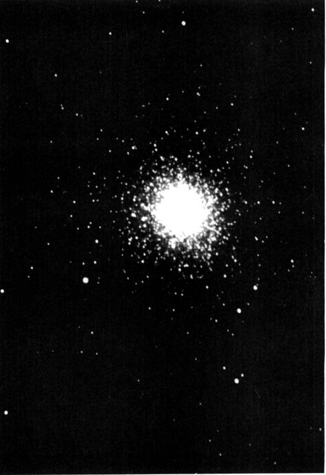
GLOBULAR STAR CLUSTER M2. A fine object for larger amateur telescopes, partially resolvable in an 8-inch glass.
Lowell Observatory 42-inch reflector.
M2 lies at a distance of about 50,000 light years, considerably farther than the great M13 in Hercules or M5 in Serpens. The actual diameter is about 150 light years. One of the richer and more compact globular clusters, it gains in impressiveness through its position in a rather blank portion of the sky ordinarily devoid of faint stars. In large telescopes the cluster is a wonderful sight; John Herschel compared the distribution of the stars to a heap of fine sand, and considered it to be composed of many thousands of 14th and 15th magnitude stars. Today it seems certain that the total population of the cluster is not less than 100,000 stars, the brightest of which are red and yellow giants with absolute magnitudes of about -3. As a standard of comparison it should be remembered that our Sun at such a distance would appear as a star of magnitude about 20.7, detectable only with the greatest telescopes. The total absolute magnitude of M2 is close to -10, or about half a million times the luminosity of the Sun.
According to Sawyer’s “Bibliography of Individual Globular Clusters” (1947) M2 contains 17 known variable stars, a small total compared to the nearly 200 recognized in the cluster M3 in Canes Venatici. The majority of these stars are short-period pulsating variables of the RR Lyrae class, often called “cluster variables” from their abundance in the globulars. Three classical cepheid variables have been studied in M2 by H.Arp and G.Wallerstein (1961); these reach 13th magnitude at maximum, and the periods are 15.57, 17.55, and 19.30 days. A fourth object appears to be an RV Tauri type star with a 67.09 day period and a range of slightly over 2 magnitudes.
The integrated spectral class of the cluster is F0; the radial velocity is very slight, amounting to less than 2 miles per second in approach. (For an account of the significance of the globulars in the study of stellar evolution, refer to M13 in Hercules).
M72 (NGC 6981) Position 20508s1244. Globular star cluster, located in the extreme western portion of the constellation, 3° WSW of the Saturn Nebula NGC 7009. This is not one of the more brilliant globulars and generally may be described as unimpressive except in large telescopes. It was discovered in August 1780 by M. Mechain, and confirmed by Messier in October of the same year. Messier thought the apparent diameter to be about 2’ and the observations of Sir William Herschel (1810) gave about the same apparent size. Modern photography increases the apparent size to about 5’. Visually, the total magnitude is about 9.
Herschel, with a power of 280X on his great reflector described M72 as “a very bright object....a cluster of stars of a round figure but the very faint stars on the outside of globular clusters are generally a little dispersed so as to deviate from a perfectly circular form.... it is very gradually extremely condensed in the centre, but with much attention even there the stars may be distinguished.” M72 is one of the more “open” globulars, and according to H.Shapley has a degree of concentration comparable to M12 in Ophiuchus and M4 in Scorpius.
In an extensive catalog published by H.S.Hogg (1963) the apparent diameter is given as 5!1, the total integrated magnitude as 10.25 (photographic), and the integrated spectral type as G2. From current studies the distance modulus appears to be about 16.3 magnitudes, giving the distance as about 60,000 light years and the extreme diameter as 85 light years. This cluster is one of the more difficult globulars to resolve, as the brightest stars do not quite attain 15th magnitude. K.G.Jones (1968) speaks of it as “surprisingly difficult to resolve for so large and unconcentrated a cluster.” With the author’s 10-inch reflector, a definite mottling around the edges becomes noticeable with moderate powers, though averted vision is necessary to confirm the suspicion of partial resolution. Walter S.Houston reported much the same impression with a 13-inch aperture telescope.
Forty-two variable stars have been discovered in M72 up to 1973, the majority of which appear to be short-period pulsating stars of the RR Lyrae class. The cluster shows an approach radial velocity of about 160 miles per second.
M73 (NGC 6994) Position 20562s1251. This object, not a true cluster, is merely a knot of four small stars, located about 1.5° E and slightly south from M72. It was noted by Messier in October 1780 and described as a cluster of “three or four small stars which look like a nebula at first sight; it contains a little nebulosity..” On this last point Messier was definitely in error, as the best of modern photographs show no signs of nebulosity in the group, though of course it is a common experience that faint double or triple stars often appear fuzzy in small telescopes or with poor seeing conditions. The over-all diameter of the asterism is about 1!2, the individual magnitudes about 10.5, 10.5, 11.0, and 12.0. The object is aptly described by Admiral Smyth’s brief note: “A trio of 10th magnitude stars in a poor field - that is M73. I give it out of respect to Messier’s memory.”
NGC 7009 Position 21014s1134. A small bright nebula of the “planetary” class, located about 1 degree west of Nu Aquarii, and first observed by Sir William Herschel in 1782. It was called by Lord Rosse the “Saturn” Nebula from the extending rays or ansae which project from the main disc on either side. The nebula has a rather high surface brightness and appears nearly stellar in small low power telescopes. The total magnitude is about 8; the central star is about 12th visually, and somewhat brighter photographically.

NGC 7009. A finder chart for the Saturn Nebula, showing stars to about magnitude 9½. Grid squares are 1° on a side with North at the top.
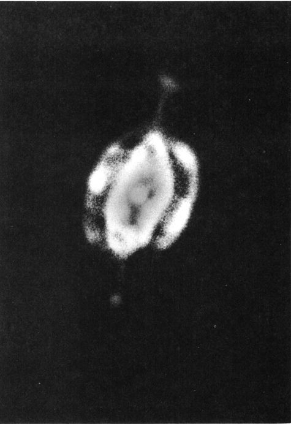
NGC 7009. The “Saturn Nebula” in Aquarius, one of the brighter planetaries. Mt.Wilson Observatory 60-inch telescope photograph.
This was one of the first planetary nebulae to be observed by Rosse with his 6-foot reflector, and is described in his paper “Observations on the Nebulae” (1850). He saw the nebula as a fairly uniform luminous disc, but was apparently unable to detect the darker center or the central star. “It has ansae which probably indicate a surrounding nebulous ring seen edgeways.” Rosse’s drawing portrays the nebula with a somewhat greater degree of symmetry and perfection than is actually the case; it is shown as a perfect nebulous miniature of Saturn.
The nebula is a strikingly beautiful object in large telescopes, shining with a vivid green fluorescent glow. The flattened central disc measures about 25” X 17” and is enclosed in a larger shell about 30” X 26”. There is considerable intricate detail in both rings, and the two projecting rays end in bright condensations about 44” apart. The ansae may be glimpsed in a good 10-inch telescope. The central star is an extremely hot bluish dwarf with a continuous spectrum, and a computed temperature of about 55,000°K. Strong ultraviolet radiation from the star is the cause of the bright fluorescent glow of the nebulosity and the green tint is due to-the radiation of doubly ionized oxygen.
Distances of planetary nebulae are, in nearly all cases, only roughly known. According to a study by C.R. O’Dell (1963) the distance of NGC 7009 is about 3900 light years, leading to an actual diameter of about 0.5 light year. The central star has a luminosity of about 20 suns; the absolute magnitude may be about +1.5. The nebula has a radial velocity of 28 miles per second in approach. (For a summary of facts and theories about the planetary nebulae, refer to M57 in Lyra)
NGC 7293 Position 22270s2106. The “Helical Nebula”, usually regarded as the largest and nearest of the planetary nebulae. It has a diameter of 12’ x 16’ or about half the apparent width of the Moon. Despite its large size the nebula is faint and has a low surface brightness. The total magnitude is about 6½. Binoculars will show the object as a large circular hazy spot, and it is not a difficult object for a small telescope if a low power ocular is used. Yet it is said that this nebula was never observed by either of the Herschels with their giant telescopes! A rich-field instrument with a wide-angle eyepiece is the ideal telescope for objects of this type.

DEEP-SKY OBJECTS IN AQUARIUS. Top: The Helical Nebula NGC 7293, photographed with the 42-inch reflector at Lowell Observatory. Below: The galaxy NGC 7392 photographed with the 100-inch reflector at Mt.Wilson.
The annular appearance, similar to the Ring Nebula in Lyra (M57), is not clearly seen visually, but is well shown on long exposure photographs. The general structure resembles a helix or coil with two turns; a much smaller planetary nebula in Draco (NGC 6543) has a very similar pattern.
The nebula is a spherical shell of very tenuous gas, illuminated by a tiny but exceedingly hot central star of the 13th magnitude. As in all the planetaries, the star is a dense bluish dwarf or subdwarf. The estimated diameter is about 2% that of our Sun, but the temperature is over 100,000°K. The gases of the nebula are excited to shine by strong ultraviolet radiation from the star, the typical bluish-green color of such nebulae being caused by doubly ionized oxygen. The color is very striking in some of the smaller brighter planetaries, such as NGC 7009 (also in Aquarius) but is not noticeable visually in NGC 7293 which has such a low surface brightness.
A photograph taken in red light with the 200-inch telescope shows much complex detail in the nebula, and reveals a peculiar system of spoke-like features on the inner edge of the ring, all pointing toward the central star. Each of these small features resembles a tiny comet with a star-like head and a faint nebulous “tail” streaming outward, away from the central star. The interpretation of these features is uncertain, but it seems likely that they are formed by a process analogous to the production of comet tails, possibly by corpuscular radiation from the hot central star as the nebula slowly expands.
Photographs made at Mt.Palomar also show a second faint outer shell of gas, visible most clearly on the north and east side of the nebula, 11.3’ out from the central star. Multiple shells are known in some of the other planetaries, probably indicating two or more periods of gas ejection, separated by long intervals of non-activity.
Although NGC 7293 is usually considered the nearest of the planetary nebulae, there is still no general agreement on the exact distance. In his text “Elementary Astronomy”, Otto Struve states that a trigonometrical parallax for the Helical Nebula was obtained by A.van Maanen, giving a distance of 26 parsecs or about 85 light years. The true diameter would then be about 0.3 light year, which seems unexpectedly small. The value reported in the Skalnate Pleso Catalogue (1951) is 180 parsecs or about 590 light years. From the angular diameter and surface brightness, L.Kohoutek (1962) has derived a formula which indicates a distance of about 86 parsecs, while I.S.Shklovsky (1956) obtained 50 parsecs from a very similar method. In a table of the brighter planetaries published by C.R.O’Dell (1963) the distance is given as 137 parsecs or about 450 light years. This is close to the value quoted by C.W.Allen in his “Astrophysical Quantities” (1963). Accepting this figure, the true diameter of the nebula is found to be about 1.75 light year, and the central star has a luminosity of about 1/15 that of the Sun (absolute magnitude about +7½). The total mass of the nebula is estimated to be about 1/10 the solar mass. The radial velocity is about 9 miles per second in approach.
NGC 7293. The Giant Planetary Nebula in Aquarius, photographed in red light with the 200-inch reflector at Mt. Palomar.
The place of the planetaries in the picture of stellar evolution is still uncertain. Superficially, they resemble the gaseous shells ejected by the novae, but such shells expand at a violent rate and vanish in a short time. In contrast, the planetaries seem relatively permanent, with measured expansion rates of a mere 10 or 20 miles per second. A typical planetary nebula thus seems to require about 20,000 years to reach its average size of about 0.5 light year. According to some theorists, the peculiar hot central stars are former Wolf-Rayet stars which are now changing to the white dwarf state, the nebula being produced by emission activity during the transition period. According to another view, a planetary nebula may simply be an exceptionally “lazy” type of nova, where material is being ejected quietly, rather than explosively. Nearly 500 planetaries are known, but the total number in our Galaxy may be 10,000 or more. (For a summary of facts concerning the planetary nebulae, refer to M57 in Lyra)
LIST OF DOUBLE AND MULTIPLE STARS


LIST OF STAR CLUSTERS, NEBULAE, AND GALAXIES

ALPHA Name - ALTAIR. Mag 0.77; spectrum A7 V. The position is 19483n0844. Altair is the 12th brightest star in the sky. Opposition date (midnight culmination) is July 18.
Altair is located at a distance of 16 light years, and is thus one of our nearer neighbors among the brighter stars. It is white main sequence star rather similar to Sirius in type, about 1½ times the size of our Sun and 9 times brighter. The absolute magnitude is +2.2. The star shows an annual proper motion of 0.66” in PA 54°; the radial velocity is 16 miles per second in approach.
The 10th magnitude optical companion at 165” was first measured by F.G.W.Struve in 1836 when the separation was 152” in PA 322°. The star has no actual connection with Altair itself, and the separation is increasing from the proper motion of the primary.
The most remarkable fact about Altair is its very rapid rotation, one of the fastest known. The rotational speed at the equator, measured by the widening of the spectral lines, amounts to 160 miles per second, and the star completes one turn in about 6½ hours. In comparison, the rotation period of our Sun is 25.4 days. As a result of its rapid spinning the star probably has the shape of a flattened ellipsoid, the equatorial diameter being nearly twice the polar diameter. (Photograph on page 230)
BETA Name - ALSCHAIN. Mag 3.71; spectrum G8 IV. Position 19528n0617. The distance is some 40 light years, the actual luminosity about 4 times that of the Sun (absolute magnitude +3.5.) The measured radial velocity is 24 miles per second in approach. Beta Aquilae is a convenient comparison star for the nearby cepheid variable Eta Aquilae.
Beta is a visual double star, but a rather difficult one due to the faintness of the companion which is 12.8” distant. The two stars form a physical pair with a fairly large annual proper motion of 0.48” in PA 175°. First detected by O.Struve in 1852, the faint star is a red dwarf of spectral type dM3, about 1/300 the luminosity of the Sun. The absolute magnitude is about +11. The PA of the pair has decreased by 10° in the last century, and nothing can be known of the period of revolution except that it must require many centuries. On the assumption that the total mass of the system is about one solar mass, the period of revolution may be in the range of 1000 to 2000 years. The projected separation of the pair is 160 AU.
GAMMA Name - TARAZED. Mag 2.67; spectrum K3 II. Position 19439n1029. Rather discordant parallax measurements suggest a distance in excess of 300 light years. From the spectral characteristics the absolute magnitude appears to be about -2.4 (luminosity = 750 suns) and the resulting distance is close to 340 light years. The annual proper motion is 0.01”; the radial velocity is about 1 mile per second in approach.
Gamma Aquilae is situated in an interesting section of the summer-time Milky Way, near the Great Rift. About 1½° to the west is the curious dark nebula B143. (*)
DELTA Mag. 3.36; spectrum F0 IV. The position is 19230n0301. Parallaxes obtained at McCormick, Allegheny and Yale agree in giving a distance of about 53 light years. The actual luminosity is then about 10 times that of the Sun, and the absolute magnitude about +2.3. The star has an annual proper motion of 0.27” in PA 73°; the radial velocity is 18 miles per second in approach.
Spectral variations with a period of about 4 hours have been detected in this star, and are probably due to some sort of atmospheric pulsation, rather than to binary motion as was first suggested. In addition, there is an unseen companion with a period of 3.42 years, detected by systematic variations in the proper motion. According to H.L.Alden (1944) the maximum expected separation of the pair is about 0.3”, but since the expected difference in brightness is several magnitudes, it is unlikely that the companion will be detected visually.
ZETA Mag 2.99, spectrum A0 V. Position 19031n1347. The distance, from Allegheny and McCormick parallaxes, is about 90 light years. The star has an absolute magnitude of +0.8 (luminosity = 40 suns). The annual proper motion is 0.10”; the radial velocity is 15½ miles per second in approach. The spectral lines are unusually wide and diffuse, probably indicating a very high rate of rotation. Zeta Aquilae is also a visual double star, a close and difficult pair discovered by S.W.Burnham with the 26-inch refractor at Washington in 1878. The separation has increased slightly since discovery (4.9” in 1878) and the PA is decreasing at a rate of about 13° per century. The period is unknown, but must be many centuries. The faint star is a dwarf of uncertain type, with a luminosity about 1/100 that of the Sun. The projected separation of the pair is about 175 AU.
ETA Variable. Position 19499n0052. A bright variable star of the cepheid class, discovered by Pigott in 1784, shortly after Goodricke’s discovery of the variations of Delta Cephei itself. It is one of the most easily observed of the cepheids, being exceeded in apparent brightness only by Polaris and Delta Cephei. The period, precise as fine clockwork, is 7.17644 days. During this time the magnitude changes slowly and smoothly from a minimum of 4.5 to a maximum of 3.7, the rise requiring slightly over 2 days, and the fall about 5. The light changes can be easily seen without a telescope, and may be followed by comparing the star with the nearby Beta Aquilae which is magnitude 3.71.
The light variations are attributed to an actual pulsation of the star, though the exact details are uncertain and the cause is controversial. When the star is growing in brightness, the spectroscope shows that the surface is approaching the Earth, while at minimum it appears to be receding; the star thus seems to be alternately expanding and contracting. These pulsations are accompanied by a cyclic change in temperature, color, and spectral class, the range being from type G4 at minimum to F6 at maximum. The spectroscopic features are those of a supergiant of luminosity class Ib. The absolute magnitude of the star at mid-range is about -3.2 photographic or -3.8 visual, equivalent to about 2800 suns. At peak brightness the luminosity reaches about 4000 times that of the Sun. The diameter, which varies somewhat during the cycle, lies in the range of 70 to 80 times that of the Sun. The luminosities of the cepheid stars are proportional to their periods, allowing these stars to be used as distance indicators for very remote objects such as star clusters and even the nearer galaxies. From the period-luminosity relation, the absolute magnitude may be found, and the comparison with the apparent magnitude then gives the distance. By this principle, Eta Aquilae itself is estimated to be about 1300 light years away.

A peculiar feature of the light curve is the noticeable “hump” on the descending branch, indicating a 9-hour interruption in the fading of the star toward minimum. In comparing this light curve with those of other cepheids, it is found that this feature is present in many other stars whose periods lie in the 7 to 10 day range. It is fully as apparent in W Geminorum, S Sagittae, and S Muscae. While not fully understood, it seems likely that the explanation for this “standstill” in the light is connected with the phenomenon of multiple pulsations. If various layers of the star’s atmosphere are rising and falling at different speeds there may be times, always occuring at the same phase, when two interfering pulsation waves temporarily cancel out.
The measured parallax of Eta Aquilae is about 0.005” which is too small to be a reliable distance indicator; the annual proper motion is about 0.01”; the radial velocity averages 9 miles per second in approach. (For a more detailed discussion of the cepheid variable stars, refer to Delta Cephei)
THETA Mag 3.25; spectrum B9.5 III. The position is 20087s0058. The distance derived from a parallax obtained at McCormick is about 325 light years, in fair agreement with that computed from spectroscopic features. The absolute magnitude is about -1.7 (luminosity = 400 suns). The annual proper motion is only 0.03”; the radial velocity is about 16 miles per second in approach.
Theta Aquilae is a spectroscopic binary with a period of 17.124 days. Both spectra are visible, and are both close to type B9 or A0. According to C.U.Cesco and O.Struve (1946) the spectroscopic orbit has the rather high eccentricity of 0.60. The separation of the two stars may average about 15 million miles.
LAMBDA Mag 3.44; spectrum B9 V. Position 19036s0458. Allegheny and Yale parallaxes give the distance as about 160 light years, in good agreement with the distance derived from the spectroscopic parallax method. The spectral type is somewhat uncertain since the lines are abnormally wide and diffuse, presumably indicating a very rapid rotation. The absolute magnitude is about -0.1 (luminosity = 90 suns). The annual proper motion is 0.09”; the radial velocity is 8½ miles per second in approach.
Lambda Aquilae is located in an interesting area of the Milky Way, just to the northeast of the great Star Cloud in Scutum. The wide optical double 15 Aquilae is less than 1° to the north and slightly west, and the very red N-type variable V Aquilae lies a degree to the southwest, near the faint annular nebula NGC 6751.
SIGMA Mag 5.17 (slightly variable); spectrum B3 V. Position 19367n0517. A rapidly revolving eclipsing binary star, discovered at Mt.Wilson in 1912. In 1916 the first spectroscopic orbit was computed by F.C. Jordan, and the light variations were detected photometrically by E.Dershem at the University of Illinois in 1918. In a study by C.Wylie and J.Stebbins in 1920, the light curve was identified as that of an eclipsing binary of the lyrid class. Both components are B-type giants of very similar type, classed as B3 by some authorities, and as B3 and B4 by others. The orbit appears to be very nearly circular and the period is 1.95027 days. The actual distance between the two stars is calculated to be 6.35 million miles, and the orbital velocities are 49 and 62 miles per second. The mutual eclipses of the system are small partial obscurations; primary maximum has a depth of about 0.2 magnitude. The light curve is of the Beta Lyra type, in which the magnitude varies continually, and it is evident that both stars are somewhat ellipsoidal in shape by reason of rapid rotation and tidal effects. The equatorial velocity of rotation of the brighter star has been measured at about 75 miles per second. The chief facts about the two components are given in the following table: Diameters, masses, etc., are given in terms of the Sun. From the computed luminosities, the distance appears to be approximately 950 light years. Sigma Aquilae shows no evident proper motion; the radial velocity is about 3 miles per second in approach.


An optical companion of magnitude 12½ was recorded by John Herschel in 1830, at 48” in PA 328°. There has been no change since discovery, and the faint star is probably not physically related to Sigma.
R Variable. Position 19040n0809. The brightest of the long-period variable stars in Aquila, discovered at Bonn, Germany, in 1856. It is a pulsating red giant of the Mira class, often attaining naked-eye visibility at maximum. The star is located in the Great Rift of the Aquila Milky Way, about 5½° south of Zeta Aquilae, and is easily recognized in the telescope by its fine red color which grows in intensity as the star fades. The spectral type changes from M5e at maximum to M8e at minimum, with a corresponding drop in the temperature from about 2350°K to 1890°K. This is one of the coolest stars known.
The visual range is about 6½ magnitudes (400 times) in brightness, but radiometric measurements show that the total energy emitted in all wavelengths changes by only 0.9 magnitude. The apparent fading at minimum results from the fact that a large part of the energy output has shifted over to the invisible infrared portion of the spectrum. The total “radiometric magnitude” of R Aquilae at the maximum is about +1.8; the star would thus appear brighter than Polaris if the human eye was sensitive to radiation at all wavelengths.


R AQUILAE. Finder chart made from a 13-inch telescope plate at Lowell Observatory. Circle diameter = 1 degree. North is at the top. Limiting magnitude about 15.
R Aquilae shows the unusual feature of a slowly changing period; in the last 80 years it has decreased from 350 days to about 300 days. Only a few such cases are known; the most definite other examples are R Hydrae and R Centauri. The explanation awaits more complete knowledge of the mechanics of the pulsations and the physical processes at work; it seems safe to say only that a change in period implies some sort of readjustment in the star’s internal structure. Possibly R Aquilae is entering a stage where the evolution proceeds with great rapidity. A radio “Flare” of this star was detected on October 8, 1973.
The distance of no long-period variable is known very accurately. In a statistical study of many stars of the type, R.Wilson and P.W.Merrill (1942) derived a probable absolute magnitude in the range of -0.2 to -1.0 for stars of spectral type M5e--M8e at maximum. The peak luminosity of R Aquilae may thus be about 200 times that of the Sun; the resulting distance is close to 600 light years. The star shows a small annual proper motion of 0.07”; the radial velocity is about 19 miles per second in recession.
NOVA AQUILAE 1918 (V603 Aquilae) The most brilliant nova recorded during the last 300 years. Position 18464n0031. The nova was first noticed on the night of June 8, 1918, as an object of the 1st magnitude, some 6° north of the Scutum star cloud in the Milky Way. Among the early discoverers was E.Barnard, who was then in the state of Wyoming for the purpose of observing a total solar eclipse which had occurred only a few hours previously! At the same hour the new star was independently discovered by a youth of 17, who later became America’s champion comet-discoverer and variable star observer, Leslie C. Peltier of Delphos, Ohio.
At discovery the nova was already brighter than Alpha Aquilae (Altair) but within a matter of hours it had taken its place as the leading star of the northern sky, and outshone every star in the heavens with the single exception of Sirius. Examination of plates taken previously of the region showed that the star had been an 11th magnitude object up to June 3. On June 7 it had risen to 6th magnitude, and on June 9 attained peak brilliance of magnitude -1.4. From that brightness it slowly faded to 4th magnitude by the end of June. In March 1919 it was about 6th magnitude and at the limit of naked-eye visibility.
Spectroscopically, the nova was a remarkable object. During the period of greatest brilliancy, spectroscopic analysis showed successive shells of gas being blown into space with velocities of from 1000 to 1400 miles per second. A few months after maximum, a gaseous nebulosity was detected about the star; its diameter increased for some years at a rate of about 2” per year, so that the former nova began to resemble a planetary nebula. Then this gaseous shell faded and eventually vanished into space. Nova Aquila today is a bluish star of magnitude 11.95 (1968), apparently much smaller and denser than our Sun.
The distance of Nova Aquilae is calculated to be in the neighborhood of 1200 light years, implying that the explosion witnessed in 1918 had actually occurred about 700 A.D. The actual luminosity at maximum was some 440,000 times that of the Sun, probably among the brightest normal novae on record. The absolute magnitude was about -9.3. In its present 12th magnitude state the star is still about 2 times brighter than our Sun. The light increase during the outburst was thus about 100,000 times, and was accomplished in only 6 days!
THE PHENOMENA OF NOVAE. These stellar outbursts are popularly referred to as “exploding stars”, but the term should not be taken to imply that the star is destroyed in the blast. This may indeed be true in the case of the more violent “supernovae” to be described later. But for the ordinary or “classical” novae at least, the phenomenon appears to be restricted to the outer layers of the star, and leaves the main stellar body essentially unchanged. In a typical normal nova the following phenomena are observed:
First, a many thousand-fold increase in brightness in the course of a few days, reaching at maximum a luminosity of roughly 10,000 to 450,000 times that of the Sun. The absolute magnitude at maximum may range from -5.0 to about -9.5. This state of maximum brilliance rarely lasts for more than a few days, however, and after passing its peak brilliance the nova begins to decline, and returns to its original faintness after a few years. The fading may not proceed uniformly and the star is often subject to minor fluctuations and pulsations. Even after reaching a final minimum it may still show measurable variations for a number of years.

Remarkable changes in the spectrum are observed simultaneously with the light changes. As the nova rises to its maximum the spectrum shows absorption lines of hydrogen and ionized atoms of iron, calcium, and other metals; these soon show a large displacement toward the violet end of the spectrum, indicating a very violent expansion of the outer layers of the star. At maximum, measurements of the lines reveal that successive shells of gaseous matter are being blown into space with enormous expansion velocities which range from a few hundred up to over 2000 miles per second. After a year or so this expanding cloud may actually become visible in the telescope. Also, as the nova starts to fade, bright lines appear in the spectrum, which eventually comes to resemble the spectrum of a diffuse nebula. The appearance is not permanent, however, and after a number of years the expanding gaseous shell fades to invisibility, leaving the former nova as a faint white-hot star, considerably smaller and denser than the Sun.
The chief stages of a nova outburst are indicated on the schematic diagram below. The “initial rise” of 8 or 9 magnitudes is usually accomplished in a few days, and is often followed by a short “pre-maximum halt” lasting for a number of hours. This feature is not always present, or at least is not always detected. The final rise to peak brilliancy then follows at a slightly lower rate, and increases the brightness by another magnitude or two. Various stars display individual peculiarities; Nova Aquilae and Nova Puppis (1942) were typical “fast novae” with a single sharp maximum and a rapid decline, whereas Nova Aurigae (1891) and Nova Herculis (1934) remained near maximum for a number of weeks. In 1925, Nova Pictoris had three maxima spaced out over a period of nearly 10 weeks.
During the first 1 to 3 months after maximum, the typical nova fades by about 3½ magnitudes. This period is called the “early decline” and is followed by a 2 to 3 month “transitional phase” where stars again show their individual behavior. Some merely continue to fade rather steadily as did Nova Puppis, others begin a series of oscillations with a period of several days (Nova Persei 1901) and still others drop suddenly by 8 or 9 magnitudes, only to re-brighten again by some 5 magnitudes before beginning the final decline. Examples of this “dip and recovery” type were Nova Aurigae (1891) and Nova Herculis (1934). Nova Aquilae itself displayed definite oscillations during the transition period, though those of Nova Persei were much more striking.

NOVA AQUILAE 1918. The star is shown before the outburst, and shortly after maximum in June 1918. Photographed with the 42-inch reflector at Lowell Observatory.
The fading of a nova to the final “postnova” stage usually requires several years, and in the case of some of the very slow novae the star may not reach its normal minimum for several decades. Nova Aquilae, a fairly typical case, required 7 years to fade to its normal 11th magnitude state. Nova Aurigae (1891) required 15 years, Nova Cygni (1876) about 8 years, and Nova Persei (1901) about 15 years.
After reaching the postnova stage, some novae may continue to show slight variations, while others remain quite steady. Nova Aquilae and Nova Aurigae have remained nearly constant for a number of years , whereas Nova Cygni (1876) and Nova Persei (1901) still show rapid variations. Those of the latter occasionally exceed two magnitudes. Postnova variations are known for both fast and slow novae and there appears to be no evident correlation with the type of outburst or amplitude of the light curve.
Virtually all known postnova stars are objects of the same peculiar type, hot bluish subdwarfs of small radius and high density, apparently intermediate between the main sequence stars and the true white dwarfs. M.Humason (1938) obtained the spectra of 16 old novae and classified them all as type 0 or early B. The majority had strong continuous spectra; some showed emission lines. On the assumption that the surface brightness of a postnova is the same as that of a normal 0-type star, the densities of some of the old novae have been computed. For Nova Aquilae the result is 70 times the density of the Sun, for Nova Persei about 200 times.
SOME NOVA HISTORY. Approximately 100 novae have been recorded throughout history, the majority within the last century. Ancient records are in many cases vague and uncertain, and frequently contain too little information to permit a definite identification of the reported object. Some of the ancient “new stars” may have been real novae, but others were undoubtedly comets or bright meteors The earliest authentic nova recorded was possibly that of 1006 A.D. in the constellation of Lupus, now recognized as a supernova. In July 1054 A.D. a supernova explosion resulted in the formation of the expanding “Crab Nebula” (Ml in Taurus.) In November 1572 another brilliant supernova, now called “Tycho’s Star”, appeared in Cassiopeia and remained visible for more than a year. In 1600 the peculiar star P Cygni rose to maximum, but after fading to 5th magnitude has remained nearly constant ever since, and it is not certain that this star should be classed with the true novae. The fourth known supernova in our Galaxy in the last thousand years (Kepler’s Star) blazed up in Ophiuchus in 1604. Following this, no other nova attained first magnitude until the maximum of Eta Carinae in 1827; but here again the identification of this peculiar star as a true nova is uncertain. It is classified by many authorities as an erratic nebular variable. In the first half of the 20th Century, five novae have reached a brilliance of 1st magnitude: Nova Persei 1901, Nova Aquilae 1918, Nova Pictoris 1925, Nova Herculis 1934, and Nova Puppis 1942.
NOVA AQUILAE 1918. Finder chart made from a 13-inch telescope plate at Lowell Observatory. Circle diameter = 1°; limiting magnitude about 14. North is at the top. Bright star in the field is GC 25805, magnitude 6.3.
THE CAUSE OF NOVAE. To the amateur and professional alike, the nova problem presents one of the most fascinating subjects for investigation in the whole realm of astrophysics. Theories of nova formation fall logically into two categories; one postulating various external causes, the other regarding the nova as the result of peculiar physical conditions existing in the star itself.
Theories of the first type will be summarized very briefly, since they are now of historical interest only. One of the earliest and most popular ideas was that a nova showed us a direct collision or grazing encounter between two stars. The fatal difficulty in this theory is that it cannot account for the observed frequency of novae; so widely scattered are the stars in space that direct collisions or even close encounters can be expected to occur at intervals of many millions of years. Yet it is an observed fact that there are at least a few novae seen every year in our Galaxy, and the true total probably amounts to 30 or 40 per year.
Another theory attributed nova outbursts to the rapid passing of a star through thick nebulosity; according to this view the sudden blazing of the star would be the effect of friction, much as a meteor is heated to the point of incandescence by its plunge through the atmosphere of the Earth. A serious objection to this theory is the observed similarity of all nova outbursts, the fact that their light curves are nearly identical in form, and the fact that postnova stars are all objects of the same rare type. It is difficult to see how chance encounters between various types of stars with nebulae of widely varying density and size could lead in every case to such strikingly similar results.
As a result of the recent rapid advance in astrophysical knowledge, there is now a general agreement that nova outbursts are due to no external cause, but to some instability in the star itself. Perhaps it would be well to qualify this statement by admitting that a number of postnova stars are known to be extremely close binaries, and it appears likely that the presence of a close companion is connected in some way with the outbursts. In this sense only, some nova outbursts may have an “external cause”. This question will be discussed in more detail after a brief review of the probable reasons for instability in a single star.
First, let us consider the general picture of stellar evolution as it presents itself to us today. The stars are “atomic furnaces”, globes of intensely heated gas in which energy is produced by various nuclear reactions, chiefly the transmutation of hydrogen into helium. The resulting internal radiation pressure prevents the star from unlimited contraction under the action of gravitation. Thus the normal stars are maintained in a state of equilibrium, and their energy is released at a fixed rate. It can be calculated that the hydrogen supply of the Sun is sufficient for more than 10 billion years of energy production in this balanced state. The more massive stars will radiate their substance away at a correspondingly higher rate, and the heaviest known stars will last less than a million years. Thus it is among the high-luminosity giants that we find the stars of shortest life expectancy.
In the article on Betelgeuse (Alpha Orionis) we have traced the evolution of a star from the main sequence through the red giant stage. This material will not be repeated here, as we are now interested in the events which follow the red giant stage. Having no internal energy supply, the star is now contracting, and growing denser and hotter. The final result will be a star of planetary size and of incredibly high density - a white dwarf, as such an object is called.

White dwarfs are no figment of the scientific imagination. Over 200 stars of the type are now known, and they are truly remarkable objects. Densities of several tons to the cubic inch are typical for such objects. The connection between these degenerate dwarfs and the spectacular novae lies in the fact that a massive star cannot contract into a white dwarf without becoming unstable in the process. It is not difficult to see why this is believed to be so. A star of small mass will contract to the point where the increasing pressure of the highly compressed interior balances any further tendency toward contraction. But when a stellar mass exceeds about 1.25 solar masses, there is no balancing point, and such a star will have an unlimited tendency toward contraction.
Unlimited contraction implies that the rotation velocity of the star must increase steadily in accordance with the law of the conservation of angular momentum, and also that the internal pressure and temperature will increase without limit. It is possible that in both of these factors we have conditions which lead to catastrophe. As the speed of rotation increases, the centrifugal force increases also, and if it becomes stronger than the star’s gravitational force the star will be disrupted. This theory of rotational instability has been suggested as a possible cause of nova formation. Another suggestion is that certain nuclear reactions come into play once a certain limit of density and temperature is passed. Detailed developments of these ideas have been presented by Schatzman, Hoyle, Gamow, Gaposchkin, and other students of the nova problem. Some theorists favor the idea of a shock-wave being propagated from the interior of the star to the surface; others assume a series of nuclear reactions which lead to a star’s increasing instability and final explosion. These theories are often reviewed in current texts; the student is referred also to the authoritative book “The Galactic Novae”, by C.P.Gaposchkin. Fred Hoyle also presents many informative and entertaining speculations concerning the novae in his “Frontiers of Astronomy”.
NOVAE AS DOUBLE STARS. An important addition to our knowledge of novae was provided recently by the discovery that a few novae are close binaries. Duplicity was first found for Nova Herculis 1934, an extremely close binary in which the components eclipse each other in a cycle of 4.65 hours, one of the shortest periods known. Nova Aurigae 1891 is a very similar system with a period of 4.9 hours. Nova Persei 1901 is now recognized as a double with a period of 1.9 days, and Nova Aquilae was found in 1962 to be a rapid binary with a period of 3h 20m. Many of the other old novae remain to be studied, but there is a growing suspicion that all of them may prove to be unusually close binaries, and that the outbursts are connected in some way with the duplicity. If so, many of the older theories concerning novae may be drastically revised. Additional evidence comes from two other types of objects: the “recurrent novae” and the eruptive variables of the SS Cygni and U Geminorum type. There is growing evidence that these stars also, are very close binary systems.
RECURRENT NOVAE are defined as stars which have shown more than one outburst. As of 1965 there are 7 known examples, of which the most famous are T Corona Borealis, RS Ophiuchi, and WZ Sagittae. Aside from the feature of repeating outbursts, these stars are notably different from the classical novae; the amplitudes of the outbursts are much less and the duration of the maxima are short. The brightest example, T Corona, rises from 10th magnitude to 2nd in less than a day, but fades below naked-eye range in a week, and reaches the postnova stage in a few months. The star is a 228-day binary in which the nova component is much the fainter of the two except during an outburst. The other star is type M, and is presumably a red giant. At maximum, the actual luminosity of T Corona is comparable to that of a classical nova; it is thus rather puzzling to find that another example, WZ Sagittae, is a white dwarf which reaches a luminosity of a mere 30 suns at maximum. Obviously the recurrent novae are not all objects of the same type, and probably do not form a true physical group. Yet, the expected duplicity has been detected for WZ Sagittae; the orbital period of 81.6 minutes is at present the shortest known. The two stars must be of abnormally small size and revolve nearly in contact.
SS CYGNI STARS are bluish dwarfs which show repeated outbursts on a small scale; a typical example (the star U Geminorum) flares up several times a year, brightening by a factor of about 100, and remaining at maximum for a few days. It might appear that these feeble objects bear only a superficial resemblance to the violent classical novae; yet the same type of mechanism may be operating, as once again the expected duplicity seems to be an essential feature. For SS Cygni the revolution period is about 6½ hours, for U Geminorum about 4½ hours.
DISCUSSION. There are thus three types of objects to consider: the full-scale “classical” novae, the recurrent novae, and the SS Cygni stars. In all three cases, typical examples are recognized as close and very rapid binaries. Although it may be that at least one member of such a pair is intrinsically unstable, it seems likely that novae and nova-like outbursts are connected in some way with the presence of the close companion. The simplest picture is to assume that the unstable star is triggered by accretion of material from the companion, an idea first proposed for the erratic star AE Aquarii. But even if this theory is basically correct, the exact details of the nova-process will undoubtedly be the subject of much speculation for years to come.
An interesting point must be made in connection with the recurrent novae and the SS Cygni stars. These objects appear to show a period-amplitude relation, whereby those stars of longer period show the more violent outbursts. If the relation is assumed to hold true for the classical novae as well, we might guess that stars like Nova Aquilae will explode again, but only at intervals of several thousand years. The suggestion that all novae are recurrent leads on to further speculation: Is there an evolutionary connection between the three types of stars, and if so, in which direction does it proceed? Will SS Cygni, for example, eventually develop into a full-scale nova? Or will Nova Aquilae ultimately settle down with periodic smallscale eruptions of the SS Cygni class? And, if the classical novae actually repeat their violent outbursts, how many explosions are required to reduce the star’s mass to the stable point? The material ejected during each maximum appears to be only a millionth of the solar mass; thus the star may undergo thousands of such explosions before its career is ended. In any case, the final result, it is believed, is a super-dense white dwarf star, or perhaps a pair of such stars, if the duplicity discovered for some novae is an essential feature of all. Assuming, however, that a single star can become violently unstable and erupt as a nova, it is interesting to speculate on the possibility that many of the known white dwarfs were once novae. The famous companion to Sirius, in a nova outburst, would appear about as bright as a full moon to observers on the Earth!
SUPERNOVAE. A typical nova, as we have noted, may reach a luminosity of several hundred thousand suns. At rare intervals, an exploding star appears which exceeds the brightness of a normal nova by a factor of 10,000 or more. These objects, the “supernovae” seem to average one in about 3 centuries in any one galaxy. Only four have been definitely recorded in our own Galaxy, the last in Ophiuchus in 1604. The supernova phenomenon is probably restricted to the rather massive stars, and it seems that the star may be almost totally destroyed in the outburst. Although no supernova has appeared in our Galaxy since the invention of the telescope, they are detected from time to time in the other galaxies. The best known example was the star of 1885 which appeared in the nucleus of the Great Andromeda Galaxy M31. (For a discussion of supernovae, refer to “Tycho’s Star” - also known as B Cassiopeiae)
VAN BIESBROECK’S STAR (LFT 1467) (Ross 652b) (Wolf 1055b) A famous red dwarf star, which has the lowest visual luminosity known for any star. It was discovered photographically with the 82-inch reflector of the McDonald Observatory in Texas in 1943. It is a distant companion of the 9th magnitude star BD + 4°4048, whose position is 19145n0506. The separation of the pair is 74” in PA 150°, corresponding to a true separation of about 400 AU. The distance from the Earth is 19 light years. Both stars show the large annual proper motion of 1.47” toward PA 203°. The primary is a dwarf M3 V star whose visual luminosity is about 1/250 that of our Sun. (Apparent magnitude = 9.1) The companion is the remarkable member of the pair, having a luminosity of about 1/570,000 that of the Sun. The apparent magnitude is 18.0 visual, and +19.3 absolute. The star’s apparent luminosity is about 700 times the light of Jupiter. If put in place of the Sun, it would appear slightly brighter than the full moon. The actual size of Van Biesbroeck’s Star is not definitely known, but the spectral type (dM6e) and the luminosity indicate that it is only a fraction of the mass and diameter of our Sun. According to current ideas of stellar structure such a star cannot maintain a sufficiently high internal temperature to operate the hydrogen-to-helium reaction which powers most stars. It is suggested that gravitational contraction may be a source of at least a part of the energy output, and that such a star may be slowly cooling and approaching the “black dwarf” state.
FIELD OF VAN BIESBROECK’S STAR, centered on BD +4°4048. Circle diameter = 1°; north at the top, limiting magnitude about 14. Bright star in the field is 22 Aquilae, mag 5.4. Chart made from a Lowell Observatory 13-inch plate.

Although only a few dozen stars are known with absolute magnitudes fainter than 15, it must not be inferred that such stars are actually rare in space. Obviously, we can detect only the nearby specimens. The table on Page 228 gives the chief information concerning the 27 stars which presently rank as the faintest known. The information was compiled from the lists of W.J.Luyten and W.Gliese (1957). Spectra or estimated spectral classes are given when known. Absolute magnitudes of the last five entries are somewhat uncertain, since the distances are not yet accurately determined. It is possible that LP 464-53 may replace Van Biesbroeck’s Star as the faintest known, when the distance is eventually measured.
It is also interesting to note that the extreme faintness of Van Biesbroeck’s star is due in part to its color. Much of the radiation is in the infrared, and the total or “bolometric magnitude” is thus about 3 magnitudes brighter. Considered from this standpoint, there are probably several stars known at present whose luminosities are lower. The record-holder, however, may not be the white dwarf star LP9-231, whose bolometric absolute magnitude was once thought to be about +17.4, based on a preliminary trigonometric parallax by W.J.Luyten. From recent measurements this star now appears to be more remote (about 60 light years) than was originally thought, and certainly has a higher bolometric luminosity than Van Biesbroeck’s Star.

DEEP-SKY OBJECTS IN AQUILA, Top: The 1st magnitude star Altair. Below: The open star cluster NGC 6709. Lowell Observatory photographs with the 13-inch camera.
DEEP-SKY OBJECTS IN AQUILA. Top: The planetary nebula NGC 6781. Below: The many-armed spiral galaxy NGC 6814. Both photographs were made with the 200-inch Palomar telescope.

STAR CLOUDS IN THE MILKY WAY near Gamma Aquilae. The dark I nebula B143 is the curious two-pronged marking at left center.
Lowell Observatory Photograph
B143 Dark Nebula. Position 19380n1100. Observers of the summer skies will find one of the richest and most spectacular fields for exploration in the Milky Way from Cygnus to Sagittarius. The star clouds of Aquila are remarkable for the great profusion and complexity of dark nebulous matter; the long belt of interstellar dust clouds known as the “Great Rift” is most conspicuous in this constellation, visually dividing the Milky Way into two parallel streams. The eastern branch continues on to the rich regions of Scutum and Sagittarius toward the south and the other branch diverges to the west where it loses itself in the vast spaces of Ophiuchus.
Some of the dark nebulae of Aquila call for special comment. About 1½° to the west of Gamma Aquilae and slightly north is the curious dark marking B143, a strangely shaped dust cloud some 30’ in diameter with two sharply-outlined “prongs” pointing westward. Another 30’ to the south is another similar prong, which bears a separate number, B142. This double dark nebula is one of the few in the sky which can be appreciated in amateur telescopes. Appearing not merely as a starless area, it actually gives a strong impression of an obscuring mass suspended between the observer and the star-strewn background. A rich-field telescope is essential for such objects; an 8” or 10” will provide a fine view when skies are dark and clear.
Another prominent dark nebula, B133, is shown on Page 234, on a photograph made with the Mt.Wilson 100-inch telescope. An object of this sort would probably be completely undiscoverable were it situated in some blank portion of the sky, far from the Galactic plane. In the densest part, measuring 9’ x 5’, not a single star image can be detected on 100-inch telescope plates with a 4-hour exposure!
Distances of such dark nebulae are usually quite uncertain, and the only safe statement is the obvious one, that the dark cloud is evidently nearer than the bright region against which it is seen projected. The star clouds of this region lie at a distance of possibly 5000 light years, and the dark nebulosities may lie anywhere between, but are probably at least a thousand light years distant. Guessing at a probable distance of about 2500 light years, the actual diameters are found to be something like seven light years for B133 , and over 20 light years for B143.

DARK NEBULA B133. A prominent dark cloud in the Aquila Milky Way, about 2° south of Lambda Aquilae. Mt.Wilson Observatory 100-inch telescope photograph.
LIST OF DOUBLE AND MULTIPLE STARS

DESCRIPTIVE NOTES
ALPHA Mag 2.95; Spectrum B2 V. Position 17280s4950. The computed distance is about 390 light years, leading to an actual luminosity of 760 times that of the Sun (absolute magnitude = -2.4). The annual proper motion is 0.08”; the radial velocity is about 1 mile per second in approach. Alpha Arae is a spectroscopic binary star of uncertain period.
BETA Mag 2.87; spectrum K3 Ib. Position 17211s5529. The distance is estimated to be about 1030 light years, and the star is a supergiant with about 5700 times the luminosity of the Sun. The computed absolute magnitude is about -4.6. The annual proper motion is 0.03”; the radial velocity is very slight, less than ½ mile per second in approach.
GAMMA Mag 3.32; spectrum Bl III. Position 17212s5620. The computed distance is about 680 light years which leads to an actual luminosity of about 1700 suns; the corresponding absolute magnitude is -3.3. The star shows an annual proper motion of 0.02”; the radial velocity is 2½ miles per second in approach.
The 10th magnitude companion at 17.9” was discovered by John Herschel in 1835. There has been no certain change in separation or angle in over a century, and the faint star is probably not a true physical companion to Gamma. The projected separation of the pair would be about 3760 AU, an unusually wide pair perhaps, but no greater than many others whose physical connection is undoubted. The companion, if at the same distance as the bright star, has a luminosity of about 3½ suns.
ZETA Mag 3.16; spectrum K5 III. Position 16545s5555. The distance is about 90 light years; the true luminosity about 35 times that of the Sun. The absolute magnitude is about +1.0. Zeta Arae shows an annual proper motion of 0.04”; the radial velocity is 3½ miles per second in approach.
NGC 6188 Position 16359s4855. A wonderful field of bright and dark nebulosity, located near the central line of the Milky Way, some 7° south and west of Zeta Scorpii. The brightest portion of the nebulosity was discovered by John Herschel in 1836, and has the form of a very irregular triangle, measuring about 20’ x 12’. On the northeast side, near the apex, is located the galactic star cluster NGC 6193, whose giant stars supply the illumination for the entire cloud. Long-exposure photography reveals a wealth of spectacular details in the nebulosity. The dark obscuring masses are bordered by bright rims which seem to be reflecting the glare of the involved stars, and the whole unearthly picture is strongly reminiscent of the famous “Horse-head” in Orion. Some astronomers have proposed that the bright-rim nebulae mark the fronts of advancing shock waves as a dark cloud expands into space, sweeping up the interstellar dust and gas. If we are actually seeing a collision zone of this sort in NGC 6188, the region affected must be at least 15 light years in extent.

NGC 6188. An interesting region of mixed bright and dark nebulosity. photographed with the 60-inch reflector of Harvard Observatory’s southern station in South Africa.
In a survey of bright emission nebulosities at the Commonwealth Observatory in Australia, C.S.Gum (1955) found that the group is merely the center of a vast nebulosity which has a full diameter of over 3°, or about 160 light years. From a study of the involved stars, a distance modulus of 9.6 magnitudes is derived, giving the distance as about 2700 light years.
The involved cluster, NGC 6193, is a remarkable and brilliant aggregation, about 15 light years in diameter. The brightest star is the visual double h4876 (HD 150136), an 0-type giant whose apparent magnitude of 5.9 implies an actual luminosity of about 3000 suns, before making any correction for interstellar absorption. The spectral type is given by various authorities as 05, 06, or 07; the absolute magnitude may be about -3.7. The 7th magnitude companion at 9.6” was discovered in 1836, and has shown no definite change in separation or PA since that time; it has a spectral class of 06. The closer companion, at 1.6”, was first measured in 1878. Neither star has shown any relative motion since discovery; the projected separations are: AB = 1300 AU; AC = 8000 AU. There is also a 10th magnitude companion at 13.4” in PA 160°, and a fourth star at 13.9” in PA 15°, magnitude 11. In addition, the primary star appears to be a spectroscopic binary of uncertain period; the mean radial velocity is about 14 miles per second in recession. (Refer also to the “Horse-head” nebula B33 in Orion, and the nebula M16 in Serpens)
NGC 6397 Position 17368s5339. A bright globular star cluster, located on the left edge of the Milky Way, some 10½° south of Theta Scorpii. It was first observed by Lacaille in 1755. It is an object of special interest from recent studies which indicate that it may be the nearest of all globulars to the Solar System. Unfortunately the far southern declination places it beyond the reach of observers in the United States. The most thorough studies of the cluster have been made with the 74-inch reflectors at Mt.Stromlo in Australia, and at Radcliffe Observatory in South Africa.
NGC 6397 is not one of the richer globulars, but has a rather loose, scattered structure which permits easy resolution in relatively small telescopes. The extreme diameter is close to 20’, and the total integrated magnitude is 7.3. The two dozen brightest stars (mags 10--12) show no evident concentration toward the cluster center, but seem to be distributed in random groups and curving rows across the background of fainter members. The cluster closely resembles the better-known M4 in Scorpius in apparent size, brightness, and structure. According to H.B. Sawyer’s “Bibliography of Individual Globular Clusters” (1947) the integrated spectral type is F5; the radial velocity about 6½ miles per second in recession.
A peculiar feature of NGC 6397 is the apparent absense of short-period pulsating variables which are often so common in the globulars. One such star, with a period of 0.331 day, was detected in a study of the cluster by H.Swope and I.Greenbaum (1952) but it appears to be two magnitudes too faint to be a cluster member, and is thus probably a background star. Two other variables lie within the apparent borders of the cluster - a long-period variable and a semiregular type - but it is not certain that either is a true cluster member. In contrast, some globulars contain dozens of variable stars; Omega Centauri possesses over 160, and M3 has nearly 200.
The brightest members of NGC 6397 are red giants of absolute magnitude about -2, or some 500 times the luminosity of the Sun. The total luminosity of the cluster is about 8000 times the light of the ‘Sun; much fainter than many of the well known globulars. The true diameter may be about 50 light years. These figures are based on a study of NGC 6397 by L.Searle and A.W.Rodgers at Mt.Stromlo in 1965. They derive a true distance modulus of about 12 magnitudes for the cluster, with an estimated uncertainty of about 0.3 magnitude. The resulting distance is about 8200 light years, which makes this the closest globular cluster known, significantly nearer than the two great clusters Omega Centauri (NGC 5139) and 47 Tucanae (NGC 104) which are usually considered the nearest. There is some reason to believe that the cluster M4 in Scorpius is also nearer than either of the two giants, but it lies in a region so heavily obscured by interstellar dust that reliable measurements are almost impossible to make.
NGC 6397. This globular star cluster in Ara is believed to be the closest cluster of this type to the Solar System.
Radcliffe Observatory
In a study of NGC 6397 at Radcliffe by R.Woolley, J.B. Alexander, L.Mather, and E.Epps (1961) accurate magnitudes and colors for nearly 1000 stars in the cluster were obtained, down to magnitude 15. The resulting H-R diagram is shown below. As explained elsewhere in this book (see M13 in Hercules) the appearance of the diagram is very different from that of a typical galactic cluster, and indicates that the globulars are very ancient star groups. This view is supported also by spectroscopic studies made at Mt.Stromlo (1965) which show that the stars of the cluster are deficient in the atoms of the metals by a factor of about 100, when compared to normal stars of Population I. This appears to be another effect of age; the material available for star formation today is growing increasingly metal-rich through the activity of massive stars which build up the heavier atoms by nuclear reactions in their interiors, later releasing these atoms into space in supernova explosions. “First-generation stars” were thus presumably formed from material which was metal-poor, and this indicates that NGC 6397 may be one of the most ancient star clusters known. (Refer also to M13 in Hercules, Omega Centauri, 47 Tucanae, M4 in Scorpius, and M5 in Serpens)
LIST OF DOUBLE AND MULTIPLE STARS


LIST OF STAR CLUSTERS, NEBULAE, AND GALAXIES

DESCRIPTIVE NOTES
ALPHA Name-HAMAL, “The Head of the Sheep”. Mag 2.00; spectrum K2 III. Position 02043n2314. Hamal is about 75 light years distant (Mt.Wilson parallax) and has an actual luminosity of about 70 Suns. The absolute magnitude is +0.2. The annual proper motion is 0.24”; the radial velocity is 8½ miles per second in approach.
BETA Name-SHERATAN, “The Sign”. Mag 2.65; spectrum A5 V. The computed distance is about 52 light years, giving an actual luminosity of 17 Suns, and an absolute magnitude of about +1.7. The annual proper motion is 0.15”; the radial velocity is about 1 mile per second in approach. Position 01519n2034.
Beta Arietis was discovered to be a spectroscopic binary by H.C.Vogel in 1903, and the first orbit was computed by H.Ludendorff in 1907. The period is 106.997 days and the orbit has the high eccentricity of 0.89. In his analysis of the system, R.M.Petrie (1938) stated that “the results of this study show that the orbit of Beta Arietis is by far the most eccentric of any known spectroscopic binary, and is exceeded by very few of the visual systems. The orbital elements show no definite variation over a period of 30 years”. The mean separation of the two stars appears to be in the range of 15 - 20 million miles.
GAMMA Name-MESARTHIM. Mag 3.90; spectra B9 V and A0p. Position 01508n1903. This is one of the best known double stars, and one of the earliest to be discovered, found accidentally by Robert Hooke in 1664 while he was following a comet. The components have shown no change in angle in 3 centuries, but the separation may have decreased slightly since the time of F.G.W.Struve, whose measurement of 8.6” was made in 1830. The present separation is about 7.8”; the individual magnitudes are 4.75 and 4.83. The two stars share a common proper motion of 0.14” annually in PA 141°. Some indication of orbital motion may be found in the difference in the radial velocities of the two stars: A = less than 1 mile per second in approach; B = about 2½ miles per second in recession.
According to a parallax obtained at Allegheny, the distance of Gamma Arietis is about 160 light years, giving the system a total luminosity of about 50 suns. The projected separation of the pair is about 385 AU. According to the Moscow General Catalogue (Supplement 1974) the southern component of Gamma Arietis is a magnetic variable of the Alpha Canum type; period 2.607 days and amplitude of 0.02 magnitude. The star has a somewhat unusual spectrum, containing very prominent lines of silicon.
In addition to the physical pair, a third star of the 9th magnitude (Gamma C or ,3512) lies 221” distant in PA 84°. In 1878 S.W.Burnham found it to be a close double; magnitudes 9 and 13, separation 1.7”. This star does not share the motion of the bright pair, and the separation from Gamma A&B is slowly decreasing from an early measurement of 228” in 1823.
30 Mag 6.57; spectrum dF5. Position 02341n2426. A wide and easy double star, the components sharing a proper motion of about 0.15” per year in PA 90°. There has been no change in separation or angle since the first measurements were made in 1835. The magnitudes are 6.57 and 7.37, spectra dF5 and dF6. Both stars are yellow, but many observing lists refer to the smaller star as bluish or lilac. The brighter star is a spectroscopic binary with a period of 9.851 days. The mean radial velocity of the system is about 9½ miles per second in recession.
Trigonometric parallaxes obtained at Allegheny, McCormick, and Mt.Wilson give the distance as about 190 light years; the resulting absolute magnitudes are +2.8 and +3.6 (luminosities = 6 and 3 X Sun).
53 Mag 6.09; spectrum B2 V. Position 03046n1741. This is one of three so-called “Runaway stars” which are characterized by abnormally high space velocities and appear to be moving outward from the region of the Orion Nebula association. A study of the three stars has suggested that such objects are escaped members of the group of young stars connected with the Great Nebula. If so, the stars were ejected only a few million years ago, possibly by the explosions of supernovae. The space velocity of 53 Arietis is approximately 35 miles per second, somewhat lower than the other two known stars of the type. The expulsion from the Orion region is estimated to have occurred about 5 million years ago. The annual proper motion of the star is about 0.025”; the radial velocity is 17 miles per second in recession.
The two other Runaway stars are Mu Columbae and AE Aurigae, with space velocities of over 70 miles per second, and computed separation ages of about 2.0 and 2.7 million years, respectively. The most unusual star of the three is AE Aurigae; it is an erratic variable with an amplitude of about 0.7 magnitude, and is presently located in the midst of a large diffuse nebulosity, IC 405. The studies of these objects may supply valuable information concerning the birth of stars and their formation in groups and expanding associations.
The most interesting question concerning such stars is of course the problem of their “escape” from the groups in which they were formed. Various mechanisms have been proposed, but none has been entirely satisfactory in the attempt to explain the acceleration of a star to a high velocity. The explosion of a supernova could not in itself produce such an effect, but still might be the answer to the problem in another sense. If we suppose that the presupernova star was a member of a close binary pair, the orbital velocities would have been very high; the sudden explosion of one star would then “release’ the other star which would continue out into space at the same high velocity. In the case of 53 Arietis, this explanation is rendered somewhat questionable by the fact that the star may be a close binary at the present time. The radial velocity has been reported to be variable , and the star is listed as a spectroscopic binary in R.E.Wilson’s Catalog (1953). However, the star has recently been identifier as a Beta Canis type variable (period= 3h40m) and it now appears that the variable velocity may be due to that cause, rather than binary motion. (For a diagram of all three Runaway stars, refer to AE Aurigae, page 288.)

GALAXIES IN ARIES. Top: The coarse spiral NGC 972. Below: The irregular system NGC 1156.
Palomar Observatory 200-inch telescope.
Z326 Position 02527n2640. Double star, discovered by F.G.W.Struve in 1831. The components are moving together through space at the rate of 0.31” per year in PA 124°. The separation of the pair has decreased somewhat since discovery, when the first measurement of about 9” was made. The projected separation of the pair is about 100 AU. Both stars are dwarfs, smaller and fainter than the Sun. The computed absolute magnitudes are +6.3 and +8.5; the spectral classes are dK2 and dMl; and the distance of the system is about 55 light years, according to a Yale trigonometric parallax.
A third faint component is not mentioned in Aitken’s ADS Catalog, but was found in the course of proper motion studies at Lowell Observatory in 1959. It is a red dwarf of the 15th magnitude, about 43” from the main pair, at PA 260°. This star has a calculated luminosity of about 1/4000 that of the Sun, and the actual separation from the double primary must be at least 790 AU. The radial velocity of the whole system is about 20 miles per second in recession.
LIST OF DOUBLE AND MULTIPLE STARS

LIST OF STAR CLUSTERS, NEBULAE, AND GALAXIES
ALPHA Name-CAPELLA, “The Goat Star”. Mag 0.06; the 6th brightest star in the sky. Spectrum G8 III + F (composite), color golden yellow. Position 05130n4557. Opposition date (midnight culmination) is December 12.
Capella is the nearest to the Pole of all the first magnitude stars, and from the latitude of the United States is visible at some hour of the night throughout the year. The star is 45 light years distant, according to trigonometrical parallaxes obtained at Allegheny, Yerkes, Mt.Wilson, and McCormick. The resulting luminosity equals 160 suns (absolute magnitude about -0.6). The annual proper motion is 0.44” in PA 169°; the radial velocity is 18½ miles per second in recession. The motion closely matches that of the Taurus moving group associated with the Hyades star cluster, and Capella may be an outlying member of the group.
Capella has been described as a red star by several ancient and medieval writers including Ptolemy and Riccioli. It seems unlikely that the color has actually changed since ancient times, and R.H.Allen in his “Star Names and Their Meanings” suggests that a yellow or orange star might seem red to “those whose eyes are specially sensitive to that tint”.
The star is a binary, too close for telescopic observation. The duplicity was first detected with the spectroscope at Lick Observatory in 1899, and the separation was first directly measured by J.A.Anderson with the interferometer on the 100-inch telescope at Mt.Wilson in December 1919. The two stars are about 70 million miles apart, and revolve about their common center of gravity in a retrograde direction in a period of 104.022 days. The maximum apparent separation is only about 0.05”, and the computed orbit is very nearly circular, with an eccentricity of 0.01. The chief facts about the two stars are given in the following brief table.
Capella shows a number of spectral peculiarites which make it difficult to classify the components accurately. The majority of the spectral features are produced by the G-star, classed by various authorities as G0,G5, or G8. Only a few spectral lines can be attributed to the F-star. This would ordinarily imply that the G-star is much the brighter of the two, but this explanation is contradicted by the interferometer observations, which show that the difference cannot be more than a few tenths of a magnitude. In their study of the system, O.Struve and S.M.Kung (1951) found evidence that the lines of the F-star are greatly broadened - apparently to the point of obliteration - by turbulent motions in the star’s atmosphere; the motions are “perhaps as large as in any star yet observed”.
CAPELLA. A “Close-up” of the 6th brightest star. The 10th magnitude companion is indicated by the small circle at lower left. Lowell Observatory 13-inch telescope plate.
In a study by K.O.Wright at the Dominion Astrophysical Observatory in 1953, spectral types of G5 III and GO were derived, and the same classes appear in C.E.Worley’s Catalog of Visual Binary Orbits (1963). W.W.Morgan in the Yerkes Atlas of Stellar Spectra assigned types of G5 and F6, but with considerable uncertainty.
In a spectrophotometric study of Capella, K.L.Franklin (1959) found that the observed energy distribution of the star could be matched by a combination of types G8 III and F5 III, but that the F-star appears to be too red for its spectral class. The exact masses of the components also appear to be somewhat in doubt, though the total mass is well determined at 5½ to 6 solar masses. Current research suggests that the masses are nearly equal.
Capella also has a third component which shares the proper motion of the primary. It is usually designated as “Capella H”, the letters B through G having been used up on faint field stars which have no real connection with Capella. The star is a faint red dwarf of magnitude 10, located 12 from the primary toward the southeast, in PA 141°. The actual separation is at least 11,000 AU or 0.17 light year. Capella H is itself a close double with an apparent separation of 2.7” in PA 137° (1951). The two stars defintely form a physical pair with some indication of binary motion; the PA is increasing at about 1° per year. According to G.Kuiper, the spectra are dMl and dM5; the total luminosity about 1% that of the Sun. C.E.Worley gives the visual magnitudes as 10.2 and 13.7.
Capella is thus a multiple star system, containing at least 4 components. A scale model of the system would show Capella A and B as two globes 13 and 7 inches in diameter and 10 feet apart; the components of Capella H would then be each 0.7 inch in diameter, 420 feet apart, and 21 miles from the main pair A & B !
BETA NAME- MENKALINAN. Magnitude 1.90 (variable); Spectrum A2 IV or A2 V. Position 05559n4457. The computed distance is about 90 light years; the actual luminosity about 110 times that of the Sun (absolute magnitude -0.3). The annual proper motion is 0.05”; the radial velocity is 11 miles per second in approach.
Beta Aurigae is a short-period eclipsing binary, in which two stars of very nearly equal size and brightness revolve in their orbits in a period of 3.96003 days. The star was one of the first spectroscopic doubles to be discovered, identified by A.Maury in 1890. The light variations were detected photometrically by J.Stebbins in 1910 and his orbital elements were published the following year. The orbit is virtually circular, and is oriented about 13° from the edge-on position. The eclipses are of small amplitude; the photographic range being from magnitude 1.92 to 2.01. There are two eclipses of almost identical depth in each revolution of the system, and about 25% of the diameter of each star is occulted at mid-eclipse. Each star is approximately 2.6 times the diameter of the Sun, and the computed masses are 2.35 and 2.25. Both spectra are A2. The separation of the pair is about 7½ million miles, or about 1/12 the separation of the Earth and Sun.
Beta Aurigae shows very nearly the same space motion as Sirius, and appears to be a member of a widely scattered moving stream of at least 70 members, including other bright stars such as Alpha Ophiuchi and Delta Leonis. The space motion of this stream is rather similar to that of the well known Ursa Major cluster, but the connection of the two groups is not certain. It is generally believed that the true cluster and the larger stream are associated only temporarily. (Refer to the Ursa Major cluster)
Beta Aurigae has a distant optical companion of magnitude 10½ at 184” in PA 40°, first recorded by Sir William Herschel in 1783. There is also a closer attendant of the 14th magnitude, discovered by E.Barnard in 1901, when the separation was 12.6” in PA 181°. The most recent observations of this star, reported in the Lick “Index Catalogue”, show no change in separation, but a slight decrease in the PA to about 174°. The measures suggest common proper motion with the primary, and give the luminosity of the faint star as about 1/630 that of the Sun. The projected separation of the pair is about 350 AU.

EPSILON Mag 3.00 (variable); Spectrum about F0, but given by various authorities as A8, F0, or F2. Supergiant, luminosity class Ia. Position 04584n4345. This is one of three stars forming the flattened triangular group called “the Kids”; the other two are Eta and Zeta. Epsilon is the northernmost of the three, and the nearest to Capella. It is located about 3° distant from Capella, toward the southwest.
Epsilon Aurigae is a noted eclipsing binary star, one of the most remarkable and puzzling of all known eclipsing variables. It has been the subject of so many studies and investigations that O.Struve (1962) declared its history to be “in many respects the history of astrophysics since the beginning of the 20th century.” Ironically, the chief result of this intensive research has been the gradual elimination - one after the other - of the seemingly best and most promising interpretations of the system. It cannot be said that our present understanding of Epsilon Aurigae is very clear, but it is probably safe to say that there is some major error in the interpretation which requires one of the components to be vastly larger than any other star known.
The observed facts about the system are quickly given. The two stars revolve about their common center of gravity in the exceptionally long period of 9883 days, or 27.06 years. In the course of each revolution the visible star is eclipsed by an unseen companion, and the apparent magnitude of Epsilon then falls from 3.0 to 3.8. The Moscow General Catalogue of Variable Stars (1958) gives the photographic range as 3.73 to 4.53. The deepest phase of the eclipse lasts for a full year; the partial phases last half a year each. The beginning of the eclipse can be detected about 190 days before greatest obscuration is reached. During minimum, the light is usually said to remain nearly constant, but observations at the most recent eclipse, in 1955-1957, showed a slight fading of about 1/10 magnitude between second and third contacts. The cause of this is not known. There are also slight secondary irregularities of about the same order of magnitude which become noticeable during an eclipse, and for several years before and after. At the 1928 eclipse, some of these irregularities seemed to repeat at intervals of about 11 months, though other observations have revealed no real evidence of true periodicity.

THE KIDS. Epsilon Aurigae is at center; Eta and Zeta are the two stars near the bottom. Capella is the bright star at upper left. Lowell Observatory 5-inch camera plate.
As an eclipsing binary, Epsilon Aurigae is an interesting example of a type in which a long “atmospheric eclipse” precedes and follows the actual hiding of the star by its companion. Thus it may be that the secondary fluctuations are due to large-scale irregularities in the outer atmosphere of the eclipsing star. Other well known stars of this class are VV Cephei, Zeta Aurigae, and 31 Cygni.
The first recorded minimum of Epsilon Aurigae was that of 1821, observed by K.Fritsch. At the next eclipse, in 1847-1848 the variability was confirmed by Schmidt, Heis, and Argelander. Schmidt continued his observations, and recorded a third minimum in 1874-1875. In 1912 an analysis of the accumulated observations was published by H.Ludendorff, it being then evident that the star was an eclipsing binary of unusually long period and extraordinary interest. Although the eclipses of 1928-1930 and 1955-1957 were very widely observed, the main problem remains unsolved: What is the true nature of the mysterious companion which causes the eclipses, and which by some calculations may be the largest star known ?
THE BRIGHT COMPONENT, which gives all the visible light of the system, is a supergiant whose type is close to F0; the spectral characteristics suggest a luminosity which probably equals that of Rigel, at about 60,000 times the light of the Sun. The computed absolute magnitude is about -7.1. The diameter may be about 180 times that of the Sun. From these figures, the estimated distance is about 3300 light years, too great for reliable parallax measurements. An attempt made at Allegheny, however, yielded a result of 0.001% equivalent to 3260 light years. Needless to say, such a result cannot be taken at face value, and proves only that the distance is very great. The annual proper motion of the star is less than 0.01”; the radial velocity averages about 1.8 miles per second in approach.
From the radial velocity measurements, the mean orbital speed of the visible star is in the range of 9 to 10 miles per second, and the orbit is found to be considerably non-circular, with an eccentricity of about 0.33. The orbit is about 15 AU in radius, or about 1.4 billion miles. Very similar results were obtained by Dr.K.Strand (1959) by astrometric measurements of Yerkes 40-inch telescope plates; he obtained a semi-major axis of 0.014”, corresponding to about 1.25 billion miles or 14 AU. The orbit of the star seems to be oriented about 18° from the edge-on position. The total mass of the system is believed to be about 30 solar masses, with the visible star having somewhat the greater mass. The 27-year period then implies a mean separation of about 30 AU, comparable to Neptune and the Sun.
THE ECLIPSING COMPONENT has never been observed directly or detected spectroscopically, and would have remained entirely unknown except for its periodic transits across the bright primary. According to the usual or “traditional” interpretation, first introduced in 1937 by G.Kuiper, B. Stromgren, and O.Struve, the star may be a low density supergiant of exceptional characteristics, perhaps the largest, coolest, and most rarified star known. It would be 15 times the size of its companion, or about 2800 times the diameter of the Sun. The average density, about one-billionth that of the Sun, would approach what we would call an absolute vacuum. According to this interpretation, the eclipsing star is normally invisible, partly because its faint light would be lost in the glare of the highly luminous primary, but also perhaps because it may be at too low a temperature to emit much visible radiation. A surface temperature of less than 1500° K has been obtained through indirect calculation, and indicates that the star radiates chiefly in the far infrared, emitting virtually no visible light.
POSSIBLE MODELS FOR THE PECULIAR SYSTEM EPSILON AURIGAE.
Still following this interpretation, we find another peculiarity: the star seems to be partially transparent, at least in the outer layers. This is made evident by the fact that the visible star does not disappear completely when eclipsed; it merely dims to about half its normal light. And, although the shape of the light curve seems to imply a total eclipse, the spectrum of the eclipsed star remains visible throughout “totality” and is essentially unchanged except for a definite strengthening of the absorption lines. A doubling of the lines, before and after eclipse, has been observed, and may be attributed to gas streams between the components. A more difficult feature to explain is the fact that the eclipsed star fades without changing color; the eclipsing body apparently acts as a “neutral filter” and absorbs all wavelengths equally. To explain this feature, and also the nearly constant light during maximum eclipse, it has been proposed that the outer layers of the eclipsing star are ionized by radiation from the F-star, and the actual eclipsing body is this relatively thin ionized layer. This is the model presented in the first diagram on the opposite page.
If it is actually a star, this strange object may well be the largest star known, and would fill up much of the Solar System out to beyond the orbit of Saturn. Other interpretations have been suggested, however, and at present it seems likely that our ideas about this strange system will soon be drastically revised. All attempts to detect the infrared radiation of the strange companion have failed, and it now seems more likely that the eclipsing body is not a star at all, but rather a vast cloud of gases, dust, or solid particles, surrounding a relatively small star which cannot itself be detected. M.Hack (1961) has proposed that the eclipsing body is a shell or ring of ionized gases surrounding a hot 0-type or B-type star which may be about 2 magnitudes fainter than the primary, and is therefore undetectable spectroscopically. S.Huang (1965) suggests that the secondary star is encircled by a flattened disc of rotating gases which is viewed edge-on, and which passes horizontally across the primary star to produce the eclipses. According to this model, shown in the third of the diagrams on page 270, the nearly flat bottom of the light curve does not imply that the eclipse is total, and there is thus no need to explain why the eclipsed star is still visible all through “totality”. With these newer interpretations, we may be near a solution of the mystery of Epsilon Aurigae, though at the cost of demoting this remarkable object from its ranking position among the largest known stars.
Epsilon Aurigae also has a faint visual companion of magnitude 14, discovered by S.W.Burnham with the 18½-inch refractor at Dearborn Observatory in 1891. According to the Yale “Catalogue of Bright Stars” (1964) the two stars probably form a physical pair. The projected separation is about 30,000 AU, or close to 0.5 light year. (Present apparent separation about 28.6”)

ZETA Name-SADATONI. Mag 3.76 (variable); spectrum K4 II + B7 V. Position 04590n4100. One of the three stars forming the small triangular group called “the Kids”, located about 2.75° south of Epsilon Aurigae. It is an eclipsing variable, first recognized as a spectroscopic double by A.Maury in 1897, and confirmed as a binary by W.W.Campbell in 1908. Zeta Aurigae consists of a relatively small blue-hot star and a K-type giant companion, orbiting about their common center of gravity in a period of 972.176 days, or about 2.66 years. The computed separation of the components is in the range of about 500 million miles, and the eccentricity of the orbit is 0.40. The main facts about the two stars are given in the table below.

The diameter and luminosity of the primary are perhaps the most uncertain figures in the table. A few authorities have classed the star as a supergiant of class Ib, which could raise the absolute magnitude to as high as -4.4. The diameter of 160 X should be regarded as a minimum; some estimates have ranged up to 300 solar diameters. The mass figures are according to recent studies (1960). From the derived luminosities the distance of the system appears to be about 1200 light years. The annual proper motion is about 0.03”; the radial velocity is 8 miles per second in recession.
The eclipse of the smaller B7 star by its giant companion occurs once every 2 years and 8 months. For a period of about a month before the actual eclipse begins, the light of the small star must come through progressively deeper layers of the giant’s atmosphere, and spectroscopic study at this time has revealed much information about the structure and composition of the star’s atmospheric layers. There appear to be local condensations and irregularities in the giant’s chromosphere, perhaps comparable to solar prominences. These studies also reveal the chemical stratification of the star’s atmosphere. Lines of the neutral metals appear to be produced in the lowest levels of the atmosphere, while the atoms of ionized metals are found in higher levels. Hydrogen and ionized calcium are abundant at all levels, out to the detectable limits of the star’s atmosphere, more than 20 million miles above the surface.

The actual eclipse of the B-star is total for 38 days and is preceded and followed by partial phases lasting 32 hours each. During totality the spectrum of the B-star vanishes completely. Because of the great difference in the colors of the components, the amplitude of the light curve depends critically upon the method of observation. As a visual variable, the star is of small interest, since the range is less than 0.15 magnitude. Photographically it is about ½ magnitude, and rises to nearly 2 magnitudes when observed in the ultraviolet. The photographic range is about 5.0 to 5.6.

ETA Mag 3.18; spectrum B3 V. Position 05030n4110. The third star in the small group called “the Kids”, forming a naked-eye pair of 3/4° separation with Zeta Aurigae. Eta is the eastern star of the pair. The computed distance is about 370 light years, the actual luminosity is about 580 times that of the Sun, and the absolute magnitude about -2.1. The star shows an annual proper motion of about 0.08”; the radial velocity is 4½ miles per second in recession. The close proximity of Zeta Aurigae offers an interesting opportunity to compare star colors, particularly noticeable when Zeta itself is in eclipse.
THETA Mag 2.65; spectrum B9 V. Position 05563n3713. The computed distance is about 110 light years, leading to an actual luminosity of about 85 suns, and an absolute magnitude of about +0.1. The annual proper motion is 0.10”; the radial velocity is 17½ miles per second in recession. Theta Aurigae is often called a “silicon star”, from the abnormal strength of that element in the lines of its spectrum.
The star has two companions for the small telescope, the closer pair forming a slow retrograde binary of uncertain period. The earliest recorded measurements appear to be those of O.Struve in 1871, and the PA of the pair has turned through about 40° in the last 70 years. Thus the period may be about 7 or 8 centuries. The separation has remained at about 3½” for many years. The small star, of magnitude 7½, is about equal to our Sun in luminosity and spectral type. The projected separation of the pair is about 110 AU.
The second companion, at about 52% was noted by O. Struve in 1852. It is not physically connected with the close pair, and the separation is increasing due to the proper motion of Theta itself.
IOTAMag 2.67; spectrum K3 II. Position 04537n3305. The computed distance is about 330 light years; the actual luminosity about 750 times that of the Sun. The corresponding absolute magnitude is -2.4. The annual proper motion is only 0.02”; the radial velocity is 10½ miles per second in recession.
T Nova Aurigae 1891. Position 05288n3025, about 2° north and east of Beta Tauri. The nova was discovered on the night of January 23, 1892, by the amateur observer T.D.Anderson of Edinburgh, Scotland. (This same dedicated observer was later the discoverer of Nova Persei in 1901.) Previous photographs of the region of Nova Aurigae show that the star had been bright for some 6 weeks, and had apparently gone unnoticed. Photographs taken up to December 8, 1891 do not show it, but on a plate of December 10 it is magnitude 5.4. Thus the rise to naked-eye visibility must have taken place in a period of scarcely more than 24 hours. The further brightening, by a factor of 2½ times, occupied the next 9 days. The maximum probably occurred about Dec. 20, at magnitude 4.4. The nova had faded to 5.0 at the time of its discovery.

C.P.Gaposchkin has referred to this star as the “first well observed nova of modern times”. At Lick Observatory a very complete series of spectroscopic observations was made by W.W.Campbell with the 36-inch refractor. Much of our modern knowledge of Nova Aurigae has resulted from a very thorough analysis of this material by D.B.McLaughlin.
The nova faded slowly during January and February of 1892; in March the brightness began to decrease rapidly, and fell to magnitude 15 by late April. In August the star began to brighten again, and reached magnitude 9½, at which it remained for 3 years. In 1897 it had faded to 11½, and in 1903 it was about 14th. Finally, some 33 years after the outburst, it reached a constant minimum of magnitude 15½. There have been no definite changes since 1925.
The spectrum of the nova at discovery showed numerous bright bands displaying high approach velocities, some exceeding 600 miles per second. At the reappearance in August, the spectrum had changed to resemble a planetary nebula. Using the 36-inch Lick refractor, E.Barnard found that the image of the nova appeared as a diffuse nebulous disc, measuring about 3” in diameter. In 1943 this shell had increased to a diameter of about 12”. The nova is now about 14.8 magnitude (photographic), bluish in color, and shows an 0-type spectrum with some emission lines.

NOVA AURIGAE. Finder chart made from a 13-inch telescope plate at Lowell Observatory. Circle diameter = 1 degree. North is at the top. Limiting magnitude about 15.
The computed distance of T Aurigae is about 4100 light years; the absolute magnitude at maximum was about -6.2, corresponding to 25,000 times the light of our Sun. The light curve was a rather rare type, characterized by a maximum lasting some three months, a sudden drop at about 100 days, and a subsequent recovery to a lower secondary maximum. Nova Herculis 1934 (DQ Here) is another example of this class, usually called “slow novae”. The two light curves are compared on page 276.
In 1954, M.F.Walker at Mt.Wilson made the surprising discovery that DQ Herculis is a close binary with the very short period of 4.65 hours. The recurrent nova WZ Sagittae was later found to be a very similar system, suggesting that nova activity might be connected in some way with the duplicity. This theory is now strengthened by new findings; Nova Persei (1901) and Nova Aquilae (1918) are both close binaries, and Walker’s studies of T Aurigae reveal it as a close and rapid double also. The period is 4.905 hours, and the two stars form an eclipsing pair in which the primary eclipse (partial) lasts about 40 minutes. This is another of those strange systems in which two dwarf stars are revolving almost in contact; to interpret such a system and explain the nova phenomenon is indeed a challenge for the modern astrophysicist. (For a discussion of novae in general, refer to Nova Aquilae 1918)
RT (48 Aurigae) Variable. Position 06254n3032. A bright cepheid variable star which was discovered in 1905 by T.H.Astbury, a member of the British Astronomical Association. It is easily located, slightly less than midway along a line drawn from Epsilon Geminorum to Theta Aurigae. As in all the classical cepheids, the cycle of variations is characterized by split-second precision, the exact period being 3.728261 days and the visual amplitude about 1 magnitude. The rise to maximum requires about 1½ days and the decline about 2½ days. The photographic range is 5.3 to 6.5.
The variations of the star appear to be due to an actual stellar pulsation, the star expanding at maximum and contracting at minimum. Spectroscopic measurements show that the radial velocity varies by about 35 miles per second in the course of the cycle, the largest approach velocity coinciding with maximum brightness. As shown on the graph below, the light curve is virtually a mirror-image of the radial velocity curve. The variations are accompanied by a change in color and spectral class, from F5 to about GO. The star is a supergiant of luminosity class Ib, with a maximum visual luminosity of about 2300 suns. The absolute magnitude at maximum is about -2.6 photographic, or -3.1 visual. The mean radial velocity is 13 miles per second in recession; the very slight proper motion has been measured at 0.017” annually.
Although the causes of the pulsations are still controversial, it is known that there is a relationship between the periods and luminosities of these stars, intrinsically brighter cepheids requiring a longer time to complete the cycle. Thus the true luminosities of distant cepheids may be determined from the observed periods, and the distances derived. This principle was used in the first attempt to determine the distance of the Andromeda Galaxy in 1923. In the case of RT Aurigae, the derived distance is about 1600 light years, more than 1350 times closer than the Andromeda system. RT Aurigae would appear as a 21st magnitude object if it was at the distance of the Andromeda Galaxy! (For a general account of the cepheid variables, refer to Delta Cephei).

RW Variable. Position 05046n3020. A peculiar variable star, often considered the prototype of its rare class. It was discovered by Ceraski at the Moscow Observatory in 1906. The position is about 1° southwest of the midpoint of a line drawn from Iota Aurigae to Beta Tauri. The light changes are large and often rapid; the star may sometimes change by as much as a magnitude in a few hours. The maximum visual range is about 3½ magnitudes or some 25 times in brightness. The Moscow General Catalog (1958) gives the photographic range as 9.6 to 13.6. The variations are quite irregular, and no definite periodicity seems to be evident.
The spectrum is peculiar, but resembles class G5 and shows strong emission lines of hydrogen, calcium, and other elements. Spectrum analysis indicates turbulent conditions in the atmosphere of the star, and possibly that several atmospheric layers are expanding at different rates. The surrounding region is thick with dark obscuring clouds and although there is no visible nebulosity in the immediate vicinity, it is suggested that stars of the class may owe their sudden variability to some type of interaction with the interstellar material. RW Aurigae thus resembles the nebular variables in its general characteristics. Stars of the type are believed to have rather low luminosities, comparable to that of the Sun.
The distance of RW Aurigae is not definitely known, but if the actual luminosity is comparable to the similar star T Tauri, the absolute magnitude may average about +5; the distance modulus is then about 5½ magnitudes, and the distance about 400 light years. Needless to say, such calculations can give only a general idea of the distance.
A small number of stars which fluctuate in a rather similar manner are frequently called “RW Aurigae type” variables, though the resemblance may in many cases be superficial, and the members do not form a real physical group. Spectral types range from B to M, with and without emission lines, the light variations are erratic, the stars are generally main sequence objects rather than giants, and many of them are associated with regions of bright or dark nebulosity. Among stars of the type, the rapidly varying RR Tauri is one of the best known examples, and its light curve closely resembles that of RW Aurigae. The spectral type, however, is A2. Perhaps the most interesting of all is the star T Tauri, associated with the variable nebula NGC 1555. This star has given its name to a fairly well-defined class of nebular variables which may be a sub-class of the RW Aurigae type. Knowledge of many of these stars is still fragmentary, but the T Tauri stars are currently believed to be newly formed from the nebulous clouds where they are found. It may be that the RW Aurigae stars are also in an early stage of development, and have not yet reached a stable state. The finding of many low-luminosity erratic variables in nebulous clusters, such as the Orion complex, NGC 6611 in Serpens , etc., seems to lend support to this view. These strange objects may eventually teach us much about star formation. (See also T Tauri, RR Tauri, NGC 6611, and R Monocerotis, associated with the variable nebula NGC 2261)

RW AURIGAE. Finder chart made from a 13-inch telescope plate at Lowell Observatory. Circle diameter = 1 degree. North is at the top. Limiting magnitude about 15.
55 Variable. Position 06096n4746. An explosive dwarf variable star of the SS Cygni class, discovered in 1907 by E.Silbernagel at Munich, by a comparison of plates made in 1901 and 1903. The star is located about 3½ ° northeast of Beta Aurigae. It is characterized by a nearly constant minimum, interrupted by violent nova-like outbursts at intervals ranging from 50 to 100 days or more. The average period, however, is about 55 days. At these times the light increases by a factor of about 60 times; in about 24 hours the star may rise to maximum brilliancy. The magnitude at minimum is approximately 15, and is therefore beyond the reach of smaller amateur telescopes, but the star can be located when near peak brightness if the position is accurately known.
The light curve is very similar to those of SS Cygni and U Geminorum, but in addition to the regular outbursts the star occasionally exhibits more rapid and irregular fluctuations. Such an erratic period, shown on the second section of the light curve below, usually lasts about 100 days; the star then returns to its normal cycle.
Like the other well-studied stats of this rare class, SS Aurigae is an extremely close binary star whose period, recently determined to be about 4h 20m, is among the shortest known. The components are tiny subdwarf stars; the explosive member of the pair is usually thought to be the bluer component, classified as a Be type subdwarf, but even this essential point is in dispute. There is some evidence that in the case of U Geminorum, the outbursts originate in the cooler of the two stars, and not in the hot dwarf. (Refer to U Geminorum). The members of these unusual pairs appear to have absolute magnitudes in the range of +7 ½ to +9; during an outburst the total light rises to about the luminosity of the Sun. A rough calculation, based upon the “distance modulus” method, then indicates a distance in the range of 350--400 light years. W.J.Luyten (1965) has measured an annual proper motion of 0.03” for SS Aurigae, consistent with the derived distance. The relationship of these stars to the novae and recurrent novae has been the subject of much speculation. (Refer also to SS Cygni, U Geminorum, AE Aquarii, WZ Sagittae, and Nova Aquilae 1918)

SS AURIGAE. Finder chart made from a 13-inch telescope plate at Lowell Observatory. Circle diameter = 1 degree. North at the top. Brightest star on the chart is mag 6.8.
AE Variable. Position 05130n3415. Spectrum 09.5 V. An unusual 0-type variable star, normally of the 6th magnitude, but subject to irregular variations of small amplitude. The computed distance is about 1600 light years, leading to a luminosity of about 900 suns. The average absolute magnitude may be about -2.5.
AE Aurigae illuminates the diffuse nebulosity IC 405, often called the “Flaming Star Nebula”. This turbulent cloud is some 18’ in extent , corresponding to an actual diameter of about 9 light years. The present association of star and nebula, however, appears to be the result of a chance encounter. Radial velocity measurements show that the star is receding at about 36 miles per second, and the nebula at only 13 miles per second. Photographs of the region also support the inference that the star has only recently entered the nebula. About a degree southwest of the star is a faint nebulosity (sometimes identified in catalogs as S126) which shows a sharp eastern boundary, parallel to the motion of AE Aurigae. The appearance seems to suggest that this boundary is the edge of a zone which has been swept clear of nebulosity by the northward motion of the star.
A comparison of red and blue plates reveals some peculiar features. On blue exposures the most prominent detail is the bright twisted filament running out from the star on the southeast side. According to G.H.Herbig (1958) the spectrum of this feature indicates that the composition is chiefly dust, associated with very little free gas. Virtually all the details visible on blue photographs show a continuous spectrum. Red plates show an entirely different pattern of emission features, where the radiation of ionized gas is predominant. The presence of dust clouds so near an 0-type star again indicates that the star and nebula have been associated a relatively short time; presumably the structure and appearance of the nebulosity will eventually be greatly modified by the star’s radiation.

AE AURIGAE and the nebula IC 405; photographed with a 12½-inch reflector by Evered Kreimer of Prescott, Arizona. This print is oriented with northwest at the top.
The interesting fact about the motion of AE Aurigae is that the star seems to be moving directly outward from the region of the Great Nebula M42 in Orion, suggesting the possibility that the star is an escaped member of the huge Orion association of 0 and B-type stars. The annual proper motion of 0.03” indicates a considerable space velocity (about 80 miles per second) when allowance is made for the distance of some 1600 light years. If the speed of recession has remained reasonably constant, it can be estimated that the separation occurred about 2.7 million years ago. In addition, there are at least two other stars known which show high space velocities outward from the Orion region; these are 53 Arietis and Mu Columbae. The three objects are often referred to as “Runaway Stars”. The plotted paths of the three are shown on the diagram on page 288. The space velocity of 53 Arietis is about 35 miles per second, while that of Mu Columbae is close to 75 miles per second. The chief difficulty in the “escape theory” is the lack of a suitable accelerating process to explain the high velocities of the stars. The explosion of a supernova has been suggested, but such an explosion, by itself, would not produce such an effect. According to a modification of this idea, it may be possible that the star was once a member of a close binary pair, with high orbital velocities; the explosion of the companion would then free the other star which would continue out into space at the same high velocity. In favor of this idea is the fact that many supernova explosions would be expected to occur in such a region as the Orion complex, where massive rapidly evolving stars are plentiful. (Refer also to 53 Arietis and Mu Columbae).

DIAGRAM SHOWING THE PLOTTED PATHS OF THE THREE “RUNAWAY STARS” AND THEIR RECESSION FROM THE REGION OF THE ORION ASSOCIATION.

AE AURIGAE and the NEBULA IC 405. Top: Blue photograph. Below: Photograph in red light.
Crossley Reflector, Lick Observatory
ANDREWS‘ STAR (GC 7066) (BD +31°1048) Suspected flare star. Position 05374n3120. Spectrum B7. This star appears to be an unusual variable of unknown type, discovered photographically by A.D.Andrews of Armagh Observatory in Ireland. The star is located just 1° north and somewhat east of 26 Aurigae, where it may be found as an unlabeled 6th magnitude star on both Norton’s Atlas and the Skalnate Pleso Atlas. The variations were first detected on plates of the region made on March 1, 1964, with the Armagh 12-inch Schmidt telescope. The first plate showed the star nearly 3 magnitudes brighter than normal, but on plates obtained only two hours later the magnitude was back to about 6. A spectacular increase in brightness was observed again on March 14 when the star was found to be about 2 magnitudes brighter than normal; it returned to its usual brightness in less than an hour.
The star is not listed as a known variable in any of the standard catalogs, and a check of Armagh plates going back to 1955 revealed no earlier variations. Changes of such rapidity have not previously been discovered in any B-type star. The variations suggest a flare star, but all known examples are M-type red dwarfs. According to the Yale “Catalogue of Bright Stars” (1964) the spectral type of Andrews’ star is B7 V. No parallax or proper motion data are recorded.
Andrews suggests the possibility of a faint M-type companion, which might be lost in the glare of the B-star except during a flare. Evidently this is an object well worth further study. Comparison magnitudes of some nearby field stars are: Chi Aurigae= 4.77; 26 Aurigae= 5.40; 136 Tauri= 4.61.
M36 (NGC 1960) Position 05329n3407. The first of 3 bright galactic star clusters in the Auriga Milky Way, discovered by Le Gentil in 1749. It lies about 5° southwest of Theta Aurigae and some 2.3° distant from the cluster M38; the two clusters may be viewed together in the field of a wide-angle low power telescope. M36 is the smaller but brighter of the two, and contains about 60 stars of magnitudes 9 to 14. The central knot of bright stars measures about 10’ in diameter, and includes the easy double star Σ737, separation 10.7”. The group makes its best impression with a fairly low power (20X to 50X) on a 6-inch or 8-inch telescope. M36 is one of the younger galactic star clusters, containing bright B-type stars among its members, and would be as splendid a group as the famous Pleiades if it were some 10 times closer. According to the photoelectric measurements of H.L.Johnson and W.W.Morgan (1953) the 15 brightest stars have the following magnitudes and spectra:
A FIELD OF STAR CLUSTERS IN AURIGA. M37 is at upper left, M36 below center, and M38 at lower right. Photographed with a 5-inch camera, Lowell Observatory.
STAR CLUSTER M36. A bright galactic cluster in the star clouds of the Auriga Milky Way, photographed with the 13-inch telescope at Lowell Observatory.

The brighter members are all B-type stars, including both main sequence stars, subgiants, and several giants of luminosity class III. No red giants exist in this cluster. The brightest members have absolute magnitudes of about -1.6 (luminosity = 360 suns). The majority of these stars show very broad spectral lines, attributed to rapid rotation, another point of similarity to the Pleiades. From photometric studies of M36 made at Lowell Observatory, H.L. Johnson (1957) has derived a distance of about 1260 parsecs or about 4100 light years. The true diameter of the group is then about 14 light years, and the total luminosity is equivalent to about 5000 suns.
M37 (NGC 2099) Position 05490n3233. A superb galactic star cluster for telescopes of all sizes, usually considered the finest of the three Messier open clusters in Auriga, and apparently first observed by Messier himself in 1764. It will probably look like a nebula in instruments smaller than 1½-inch aperture, but in anything larger than a 2-inch, some of the individual stars will be seen easily. “A diamond sunburst”, as C.E.Barns described it, this striking cluster is a virtual cloud of glittering stars. “Even in small instruments”, says T.W.Webb, “it is extremely beautiful, one of the finest of its class”. The great observer Smyth called it “a magnificent object, the whole field being strewed as it were with sparkling gold-dust; it resolves into infinitely minute points of lucid light”. The Earl of Rosse commented on the “wonderful loops and curved lines of stars”, which seem also to be a feature of some other galactic clusters, as M35 in Gemini, for example.
STAR CLUSTER M37. One of the finest of the galactic star clusters; photographed with the 13-inch telescope at Lowell Observatory.
M37 contains about 150 stars down to magnitude 12½; the total population may be in excess of 500 stars. The stellar population of this cluster is significantly different from that of M36, and suggests an older and more evolved group of stars. An age of somewhat over 200 million years is indicated by current knowledge of stellar evolution. The earliest type star in the cluster is of spectral class B9 V, and the majority of the other bright members are main sequence A stars with absolute magnitudes of about -1. But the cluster also contains at least a dozen red giants. The brightest of these has a visual magnitude of about 9½ and stands out near the cluster center “like a ruby on a field of diamonds”.
The distance of the cluster is about 4600 light years according to a study by F.R.West (1964); this agrees well with an earlier determination of 4700 light years, published by Harlow Shapley in 1931. The actual diameter of the cluster is about 25 light years, the total luminosity about 2500 times the light of the Sun.
M38 (NGC 1912) Position 05253n3548. A large star cluster in the Auriga Milky Way, located about 2.3° northwest of M36, discovered by Le Gentil in 1749. It is a scattered group of irregular form, with the brightest stars in a pattern resembling an inverted letter “Pi”. To Webb it was “a noble cluster arranged as an oblique cross” with a pair of stars in each arm. “Larger stars dot it prettily with open doubles. Glorious neighborhood”.
The full diameter of M38 is about 20’ and the total membership must be well over 100 stars. The earliest type members are giants of spectral class B5, with absolute magnitudes of about -1.5. The cluster also contains a number of A-type main sequence stars and several giants of type G. The brightest star of the cluster is a yellow GO giant with a visual magnitude of about 7.9, and an actual luminosity of about 900 suns. As a useful standard for comparison it may be remembered that our Sun would appear as a star of magnitude 15.3 at the distance of M38, some 4200 light years. The true diameter of the cluster is about 25 light years, comparable to M37. A number of other fainter clusters will be found in this rich region of the sky.
STAR CLUSTER M38, as photographed with the 13-inch telescope at Lowell Observatory. The smaller cluster NGC 1907 is near the lower right edge.
LIST OF DOUBLE AND MULTIPLE STARS

LIST OF STAR CLUSTERS, NEBULAE, AND GALAXIES


DESCRIPTIVE NOTES
ALPHA Name-ARCTURUS, “The Guardian of the Bear”. The 4th brightest star in the sky, formerly given 6th place, but shown by modern measurements to outshine both Vega and Capella. Magnitude -0.06; spectrum K2 III. Position 14134n1927. Opposition date (midnight culmination) is April 27.
Arcturus is located at a distance of about 37 light years, one of the Sun’s nearer neighbors in space. The diameter of the star is estimated to be about 20 million miles, roughly 25 times the diameter of the Sun. The luminosity is about 115 times that of the Sun, and the absolute magnitude is -0.3. The computed mass of the star is about 4 times the solar mass, leading to a density in the range of 0.0003 the solar density. The spectrum is that of a K-type giant, and rather resembles the spectrum of a sunspot. With modern infrared recording devices, the heat received from the star can be measured, and is found to equal the heat of a single candle at a distance of about 5 miles. The actual surface temperature of Arcturus is approximately 4200°K. The color of Arcturus is usually described as a golden yellow or “topaz”; Smyth called it reddish yellow.
A remarkable fact about Arcturus is its great annual proper motion of 2.29” in PA 209°, the largest proper motion shown by any of the 1st magnitude stars with the exception of Alpha Centauri. The motion was first detected by Halley in 1718. The actual space velocity of Arcturus is almost 90 miles per second in the direction of the constellation of Virgo. This motion has been bringing the star closer to the Earth ever since it first became visible to the naked eye nearly half a million years ago. At the present time, Arcturus is almost at its minimum distance from the Solar System, about 37 light years. The star still shows an approach radial velocity of about 3 miles per second, which will gradually diminish to zero as the star passes us several thousand years from now. Arcturus will thereafter continue to recede from us as it continues its motion toward Virgo, and will have faded below naked-eye visibility in the course of another 500,000 years.
Arcturus is a “Population II” star, a member of the great spherical halo which is centered on the hub of our galaxy. This explains the large apparent motion, and the rapid passage through our part of the heavens; Arcturus is moving in a highly inclined orbit around the center of the galaxy, and is presently cutting through the galactic plane. The Sun, on the other hand, is moving with the general “stream of traffic” in the plane of the galaxy; thus the large relative motion between the two objects. From the viewpoint of an Arcturian, it would be the Sun and the rest of the general stream which is moving so rapidly.
THE PROPER MOTION OF ARCTURUS-From Lowell Observatory 13-inch Telescope Plates. Scale-19” of arc/mm.
As the brightest star of the northern skies, Arcturus has been known and admired since ancient times. R.H.Allen states that the star was one of the first to be given a name, and devotes several pages of his classic work “Star Names and Their Meanings” to a discussion of the various titles and mythological references concerning Arcturus. In ancient times it was known as the “Watcher” or the “Guardian”; the Arabs knew it under two names which may be translated “the Lance-Bearer” and “the Keeper of Heaven”. It is sometimes called “Job’s Star” from the reference to it in the Book of Job, although the reference now appears to be a mis-translation, and probably refers to the Great Bear or Big Dipper instead.
Arcturus became a famous object - in the popular sense of the word - in the spring of 1933 when the “Century of Progress” Exposition opened in Chicago. The light of the star was focused by telescopes on photoelectric cells, and the current generated was used to activate the switch to turn on the flood-lights at the exposition grounds. Arcturus was chosen for the purpose because its distance was then estimated to be 40 light years; the light reaching the Earth in 1933 had started on its journey about 1893, when another fair had been in progress in Chicago.
Smyth stated that Arcturus was the first star on record to be observed in daylight with a telescope. This was accomplished by Morin in 1635, a feat which may be duplicated by any amateur today with a good small telescope and properly aligned setting circles.
BETA Name-NEKKAR. Magnitude 3.48, spectrum G8 III. Position 15001n4035. The distance of the star is approximately 140 light years, the actual luminosity about 70 times that of the Sun. The absolute magnitude is +0.3. The annual proper motion is 0.06”; the radial velocity is 12 miles per second in approach.
GAMMA Name-SEGINUS. Mag 3.05 (slightly variable); Spectrum A7 III. Position 14301n3832. The star is at a distance of about 120 light years; the actual luminosity is about 75 times that of the Sun, and the absolute magnitude about +0.2. The annual proper motion is 0.19”; the radial velocity is 21 miles per second in approach. The star shows a slight variability in a period of about 7 hours, with an amplitude of a few hundredths of a magnitude (photographic range = 3.20 to 3.25). The exact classification is somewhat uncertain, but the star is probably related to the 8 Scuti variables or the Alpha Canum Venaticorum type. There is also an optical companion of magnitude 12½ at 33” distance, discovered by S.W.Burnham in 1878 with the 18½-inch Dearborn refractor. The PA and separation are both increasing from the proper motion of the primary, and the apparent separation was at a minimum (19”) about 1780.

ARCTURUS. A “close-up” of the brightest star north of the Celestial Equator. This one-hour exposure, in red light, was made with the 13-inch astrograph at Lowell Observatory.
DELTA Mag 3.47; spectrum G8 III. Position 15135n3330. The distance of Delta Bootis is approximately 140 light years according to parallaxes obtained at Allegheny and McCormick; the resulting luminosity is about 70 times that of the Sun (absolute magnitude +0.3). The star shows an annual proper motion of 0.15”; the radial velocity is close to 7 miles per second in approach.
At a distance of 105” is the distant 7th magnitude companion, first measured by F.G.W.Struve in 1835. The two stars form a wide common proper motion pair, with a projected separation of about 4560 AU. The companion is a GO main sequence star, very similar to our sun in type and luminosity. Its computed absolute magnitude is about +4.6.
EPSILON Name-MIRAK or IZAR. Mag 2.37; spectrum K0 II or K1 II. Some authorites however, suggest a luminosity class of III. Epsilon Bootis is one of the most beautiful of the double stars, though generally a difficult object for a 3-inch glass and not exactly easy for beginners even with a 6-inch. T.W.Webb, however, observed the images clearly separated with a 2¼-inch achromat, and also states that Buffham resolved the pair with a 9-inch mirror stopped down to 1 7/8 inches. The star was discovered by F.G.W.Struve in 1829, who honored it with the poetic title “Pulcherrima” in appreciation of the fine color contrast. The primary, magnitude 2.47, is yellow-orange in color, and the smaller star, magnitude 5.04, is bluish but often seems slightly greenish. The spectral class is about A2.
Parallax measurements have been somewhat discordant , but suggest a distance in the range of 200-300 light years. Some individual published measurements are given here:
The Yale “Catalogue of Bright Stars” (1964) gives the parallax as 0.013”, corresponding to a distance of about 250 light years. This gives the K-star an absolute magnitude of about -1.9 (luminosity = 500 suns), very close to the accepted value for a K0 II giant. The companion, an A-type main sequence star, then has an absolute magnitude of +0.6 (luminosity = 45 suns). The annual proper motion of the pair is only 0.05”; the radial velocity is 10 miles per second in approach.
The two stars definitely form a physical pair, but the relative motion is extremely slow. There has been no definite change in separation since discovery, but the PA appears to be very gradually increasing, from 321° in 1829 to 338° in 1962. The projected separation of the pair is about 230 AU. If one star is actually being seen far beyond the other, the true separation may be much greater. The lack of definite orbital motion in more than 130 years suggests that such is the case. The period may be at least several thousand years.
ETA Name-MUPHRID. Mag 2.69; spectrum GO IV. The position is 13523n1839. The distance of this star is about 32 light years, the standard distance for calculating absolute magnitudes; thus the apparent and the absolute magnitudes are the same - +2.7. The star is a G-type subgiant with a luminosity of about 7 suns. The annual proper motion is 0.37” in PA 190°; the radial velocity is very slight, less than 0.1 mile per second in approach. The star is a spectroscopic binary with a period of 495 days.
MU Name-ALKALUROPS. Mag 4.30 and 6.50; spectra F0 IV and dGl. Position 15226n3733. Mu Bootis is a wide common proper motion pair with a separation of 108”, discovered by F.G.W.Struve in 1826. Trigonometric and spectroscopic parallaxes agree in giving the distance as about 95 light years. The projected separation is then about 3170 AU, and the absolute magnitudes are +2.0 and +4.2. The annual proper motion is 0.17” in PA 300°; the radial velocity is about 6 miles per second in approach.
The fainter star is a close binary with a period of about 260 years. According to a computation by Baize (1952) the orbit has a semi-major axis of 1.46” and an eccentricity of 0.59. The motion is retrograde, with periastron in 1865. Both stars resemble the Sun in type and luminosity. The mean separation is about 43 AU.
XI Mag 4.54; spectrum G8 V. Position 14491n1918. A well known and attractive binary star, discovered by Sir William Herschel in 1780. It is among the nearer double stars with a distance of 22 light years. The orbital period is computed to be 149.9 years, with periastron occurring in 1909. The semi-major axis of the orbit is 4.9”, and the eccentricity is 0.50. The true separation of the two stars averages about 33 AU. The apparent separation varies from 1.8. (1912) to 7.3” (1984). The two stars show a fine color contrast, usually described as yellow and reddish-violet. Information of interest about the components is given in the brief table below:

The annual proper motion of the system is 0.17” in PA 129°; the radial velocities of the two components are 2% and 4 miles per second in recession.
Astrometric studies by K.Strand (1943) also indicate a third unseen component in the system, revolving about one of the visible stars in a period of 2.2 years. The unseen star has a computed mass of about 0.1 solar mass, an unusually small value. Even at the relatively small distance of Xi Bootis, a star of such a low mass would probably be too faint to be detected visually in the glare of the two bright components. The expected apparent magnitude would be 14th or fainter.
44 ( i Bootis) Mag 4.76; spectrum dGl + dG2. The two stars of this pair form an interesting binary system, discovered by F.G.W.Struve in 1832. The position is 15022n4751. The apparent orbit is a very elongated and narrow ellipse which allows the apparent separation to vary from 4.7” (1880) to less than 0.4” (1969). The period is still uncertain by a number of years. Orbits by K.Strand (1937) and A.Gennaro (1940) give the following results:
The orbit diagram on page 310 is plotted from the results of computations by Strand. The distance of the pair is about 40 light years; the annual proper motion is 0.40” in PA 274°; the radial velocity is 15 miles per second in approach.
The primary star is very similar to our Sun in size, luminosity, and type; the absolute magnitude may be about +4.4. The mean separation of the two stars is about 45 AU. The fainter star is an object of special interest; it is a very close binary in which the two components form a dwarf eclipsing system resembling such pairs as W Ursae Majoris and U Pegasi. The two stars are revolving in a virtually circular orbit, in the exceptionally short period of 6.427 hours, and the components eclipse each other at every revolution. The drop in light during each eclipse is about half a magnitude. The computed separation of the two stars is in the neighborhood of 3/4 of a million miles, or about three times the separation of the Earth and Moon. The total mass of the pair is 1.5 solar masses, and both stars are dwarfs of spectral type dG2, comparable to our sun in size and brightness.
Systems of this type are of considerable interest, as some recent studies make it seem probable that they are the ancestors of the eruptive “dwarf novae” of the U Geminorum and SS Cygni variety. Evidence for an exchange of material between the components is already present, in the form of gaseous streams between the stars. One example, U Pegasi, has already shown flares or eruptions of small amplitude, perhaps a preview of its future violent activity. (See also W Ursae Majoris, U Pegasi, and SS Cygni)
T Nova Bootis 1860. Position 14118n1918, about 25’ from Arcturus in PA 250°. The only definite observations of this enigmatic object were those of Joseph Baxendell in April 1860. While searching for new variable stars he found this object at about magnitude 9.75 on April 9 ; the brightness was recorded as approximately the same on April 10 and 11. On April 22 the magnitude had fallen to 12.8, and the following night the star could not be found in a 13-inch reflector. Despite thorough searches by Schoenfeld, Winnecke, Pickering, Daniel, Hartwig, Zinner, and others, the star has never been seen again. Modern plates of the field show no star as bright as 17th magnitude near the position.
Granting the reality of this object, the nova appears to have had an amplitude of at least 7 magnitudes, an unusually rapid decline of about a magnitude in four days, and a position unusually far from the central plane of the Galaxy (Galactic latitude about +68°). From these facts J.Ashbrook (1953) suggests that the star was probably a recurrent nova, which implies that several additional outbursts may have been missed in the last century. One alternate explanation, that the star was a distant variable of the U Geminorum type (dwarf nova) does not seem likely in view of the many searches made by experienced observers. Interested amateurs should make periodic checks of the field and any reappearance of the star should be reported to a major observatory without delay.

T BOOTIS FIELD, showing stars to about magnitude 9½. Grid squares are 1° on a side with north at the top.

GALAXIES IN BOOTES. Top: The normal spiral NGC 5248. Below: The unusual spiral NGC 5614 which has a somewhat distorted structure. Palomar Observatory 200-inch plates.
LIST OF DOUBLE AND MULTIPLE STARS
LIST OF DOUBLE AND MULTIPLE STARS
LIST OF STAR CLUSTERS, NEBULAE, AND GALAXIES


DESCRIPTIVE NOTES
S Variable. Position 05356n6846. A long-period pulsating variable star, discovered by T.E. Espin in 1891. The star has an average period of about 326 days, and the amplitude occasionally reaches 3 magnitudes. The greatest visual brightness is about magnitude 8.0. The star is a noted object because of its spectral class of R8. It was one of the first R-type variables to be recognized; another typical example is RU Virginis. These stars are similar to the N-type “carbon stars” such as R Leporis, except that they are at a somewhat higher temperature and the carbon bands are considerably weaker. They do not show as intense a red hue as the N-type stars, and are stronger in the blue and violet portion of the spectrum. Bright hydrogen lines are a characteristic feature of the spectrum, as they are in the long-period variables in general. Possibly the R-type stars form a connecting link between types K and N, or between M and N.
S CAMELOPARDI. Finder chart made from a 13-inch telescope plate at Lowell Observatory. Circle diameter = 1 degree. North is at the top. Limiting magnitude about 15.
The light curve of S Camelopardi shows somewhat flatter and broader maxima than the majority of the M-type long period variables. The rise to maximum requires about 100 days, and the fall occupies very nearly the same length of time. When near maximum, the star may remain nearly constant for some three months. The top of the light curve is often slightly “saddle-shaped”, sometimes giving the star the appearance of having a double maximum. The reason for such individual peculiarities in light curves is still not understood, and the number of R-type variables is so small that no thorough study of a large number of examples is possible.
The distances of none of these stars are accurately known by direct measurements. The maximum absolute magnitude of an R8-type variable is believed to be about -1.7; this leads to a distance of about 2800 light years for S Camelopardi. The peak luminosity of the star may be about 400 times the light of the Sun. Stars of the type are all giants with diameters in the range of 200 to 300 times that of the Sun, the exact diameter varying by 30% or more in the course of the cycle of pulsation. (For a general review of the long-period variables, refer to Omicron Ceti).
S CAMELOPARDALIS. The long-period variable star is shown near minimum (top) in December 1940, and brightening to maximum (center) in April 1941. These photographs were made with the 13-inch telescope at Lowell Observatory.
Z CAMELOPARDALIS. The strange eruptive variable is shown here during its outburst of January 1942. From Lowell Observatory plates made with the 13-inch telescope.
Z Variable. Position 08197n7317. One of the strange eruptive variable stars or “dwarf nova” types, usually considered the typical example of its class. It was discovered at Greenwich Observatory in 1904, during the course of work for the Astrographic Catalogue. The star shows constant eruptions which resemble a nova outburst on a small scale; these explosions repeat persistently at intervals of 2 to 3 weeks. The rise to maximum is normally completed in less than 2 days, and the normal light range is about 3 magnitudes. At other times, however, the star may remain constant or nearly so for several months, neither at maximum or minimum, but at some intermediate brightness. In addition, there are occasional periods of very erratic changes, which follow no predictable pattern.
The Z Camelopardi stars closely resemble the better known SS Cygni stars, and are distinguished from them only by shorter average periods, smaller amplitudes, and the occasional periods of constant brightness at an intermediate magnitude. The two classes gradually merge into each other, however, and spectroscopic studies reveal no actual difference between them. Z Camelopardi itself has a peculiar spectrum resembling class G5 at minimum, but with several bright lines which weaken as the star rises to maximum. The very similar star RX Andromedae has the same type of spectrum. Like SS Cygni itself, these stars appear to be close subdwarf binaries; the orbital period of Z Cam has recently been determined to be about 6h58m. Outbursts of such systems are attributed to some type of interaction between the components, but the details are still uncertain and the connection of these stars with the more violent classical novae is speculative. (Refer also to SS Cygni)

Z CAMELOPARDI. Finder chart made from a 13-inch telescope plate at Lowell Observatory. Circle diameter = 1 degree. North is at the top. Limiting magnitude about 15.
RU Variable or ex-variable. Position 07163n6946. A former cepheid star which has apparently now ceased to pulsate, a case which appears to be unique in the annals of astrophysics. The star was originally discovered by L.Ceraski at Moscow in 1907; it had a period of 22.13 days and a visual light range of magnitude 8.3 to 9.2. One of the Population II cepheids, the star resembled W Virginis, and had a somewhat unusual light curve with a broad dome-shaped maximum; the rise and fall being nearly equal in duration. The spectrum at maximum was near KO Ib, but at minimum it was usually classed as type R, another unique feature. Strong bands due to carbon compounds are prominent in the spectrum. And in addition, RU Camelopardi was one of the few cepheids in which definite changes in period had been detected; from 22.216 days to 22.097 days. In recent years the period had been given in standard catalogs as 22.134 days.
The last normal pulsations of RU Camelopardi appear to have been recorded in 1962. Early in 1965, observations of the star were obtained by S.Demers and J.D.Fernie at the David Dunlap Observatory in Canada; they found only slight irregular fluctuations. In 1966 no variations greater than 0.04 magnitude have been detected. At Sonneberg Observatory in Germany a series of patrol plates has shown that the amplitude of the variations was still normal in 1961 and 1962, decreasing in 1963 and 1964, and becoming virtually constant in 1965. The present magnitude is about 8.5.
Since no other case of this type is known, it is not possible to offer a ready explanation, or to answer the question: Has RU Camelopardi stopped pulsating for good, or will the variations eventually reappear? From theoretical studies of cepheids, it has always seemed that the pulsations must eventually die away, but over a time interval of at least 1000 years! Is the case of RU Camelopardi explainable by some random accident to the star, or has it perhaps entered a phase of its evolution where its physical characteristics change with abnormal rapidity? This is one star which should be carefully watched for any possible renewal of activity. (For a discussion of cepheids, refer to Delta Cephei; for an account of the Population II type cepheids, refer to W Virginis).


RU CAMELOPARDI; Identification field, traced from a 13-inch telescope plate at Lowell Observatory. Circle diameter = 1 degree. Comparison star magnitudes are: A = 8.05; B = 8.73; C = 8.94; D = 9.07; E = 9.09.
NGC 1502 in CAMELOPARDALIS. This compact cluster contains the two easy double stars Σ484 and Σ485. Lowell Observatory photograph with the 13-inch telescope.
NCC 2523 in CAMELOPARDALIS. A barred spiral galaxy of unusual structure. Palomar Observatory photograph with the 200-inch telescope.

NGC 2403. A large Sc-type spiral galaxy, one of the nearest systems beyond the Local Group. This photograph was made with the 61-inch astrometric reflector of the U.S. Naval Observatory at Flagstaff.
OFFICIAL U.S.NAVY PHOTOGRAPH

CENTRAL REGION OF NGC 2403. The heart of the great spiral is shown on this plate made with the 200-inch reflector.
Mt.Wilson and Palomar Observatories.
NGC 2403 Position 07320n6543. A large, loose-structured spiral galaxy lying in a rather blank region of the northern heavens, and now recognized as one of the nearest of the spirals beyond the Local Group. It may be seen easily as a large hazy spot in binoculars, and is frequently so detected by comet hunters. The magnitude of 10.2 in the Shapley-Ames Catalogue seems definitely too faint, and should be corrected to about 8.8. The apparent size is approximately 16’ x 10’. A definite degree of mottling becomes apparent with larger amateur telescopes, hinting at details which are fully revealed only on the photographic plate.
The structure of NGC 2403 greatly resembles that of the “Pinwheel” galaxy M33 in Triangulum. The central nucleus is small, and the spiral arms are coarse and irregular with many bright condensations, star clouds, and nebulous regions. The galaxy appears to be at approximately the same distance as the M81 - M82 group in Ursa Major, and is very probably an outlying member of that group, which is centered some 14° away. The distance is thus about 8 million light years, and the total luminosity about 4 billion times that of the Sun. The apparent diameter of 16’ corresponds to about 37,000 light years. The absolute magnitude of the system is close to -18. NGC 2403 is too close to show a large redshift; the corrected radial velocity is about 112 miles per second in recession.
According to A.R.Sandage, this galaxy was the first system beyond the Local Group in which cepheid variable stars were identified. In 1960, 27 variables had been detected in the system, and periods had been determined for 10 of them. No novae have been recorded in the galaxy. On 200-inch telescope plates made at Palomar, at least 100 hydrogen emission regions have been identified, the largest having a diameter of some 880 light years. A similar nebulosity exists in M33, but nothing quite as gigantic has been identified in our own galaxy. In addition, a large number of blue giant stars populate the spiral arms of NGC 2403, revealing to the modern astronomer the fact that star formation is still in progress in that distant island universe. This is evidently a rather “young” galaxy, perhaps comparable in age to M33 in Triangulum.
IC 342 Position 03419n6757. A large round spiral galaxy of type Sc; difficult for small telescopes but of great interest, since it may be a member of the Local Group of galaxies which includes our own Milky Way System. It was discovered by W.F.Denning about 1890 and reported to J.L.Dreyer who included it in the first “Index Catalogue” (a supplement to the NGC) in 1895. E.Hubble and M.Humason (1934) detected the spiral pattern and called attention to the large apparent size, revealed by densitometer measurements to be about 40’ E-W and 33’ N-S. In apparent size, IC 342 is thus one of the largest spirals in the sky, and is probably among the half dozen nearest galaxies. M31 and M33 are the only spirals likely to be closer to the Milky Way system.
IC 342 may be observed in an 8-inch glass under good conditions, and appears as a small fuzzy 12th magnitude nucleus surrounded by a very large and faint hazy glow. On photographs this outer glow reveals itself as a beautiful pattern of spiral arms curving about the nucleus. Oriented almost face-on, the object is as perfect in form as the great M101 in Ursa Major, and evidently much nearer to our own galaxy. An interesting fact about IC 342 is its location only 10° above the galactic plane, well within the star clouds of the Milky Way. This undoubtedly results in a heavy degree of obscuration, and the distance is therefore indeterminate. The observed redshift is very nearly zero, but after correcting for the solar motion the true value is found to be about 106 miles per second in recession. This is comparable to the velocities measured for some other members of the Local Group, as NGC 6822 in Sagittarius. If accepted as a member, IC 342 is the fourth known spiral in the Local Group; the other dozen or so members are all dwarf elliptical systems and irregulars. Tentatively accepting a distance comparable to M31 (the Andromeda Galaxy) the actual size of IC 342 is found to be about 25,000 light years, and the total luminosity possibly about 10 million times the light of the Sun. These figures can be regarded as little more than intelligent guesses, since the distance and exact degree of obscuration are both unknown. Another suspected member of the Local Group is NGC 6946 in Cepheus, which, however, shows about twice as large a redshift.
IC 342. Spiral Galaxy in Camelopardus, identified as a member of the Local Group of galaxies.
60-inch telescope photograph, Mt.Wilson Observatory.

DEEP-SKY OBJECTS IN CAMELOPARDUS. Top: The planetary nebula NGC 1501. Below: The irregular galaxy NGC 2366.
Mt.Wilson and Palomar Observatories.
LIST OF DOUBLE AND MULTIPLE STARS


ZETA Name-TEGMENI. Mag 5.10; spectra F8 V and GO V. Position 08093n1748. This is one of the most remarkable of all known multiple star systems, discovered by T.Mayer in 1756. It was listed as a double star until 1781, when Sir William Herschel discovered a third component. The closer pair, A and B, form a binary system with a period of 59.6 years. The orbit is retrograde, and the apparent separation varies from 0.6” to about 1.2”, with widest separation occurring in 1960. The semi-major axis of the computed orbit is 0.88” and the eccentricity is 0.32. The actual separation of the pair averages about 19 AU, comparable to Uranus and the Sun. Both components are yellowish main sequence stars; the apparent magnitudes are 5.6 and 5.9.
The third component, Zeta C, revolves about the pair at a distance of 5.8”, in a computed period of about 1150 years. The magnitude is 6.02, the spectral class is dG2. Orbital elements of the wide pair are uncertain; the separation has remained nearly constant since the early measurements of O.Struve in 1826, but the PA has changed by about 70° in the last 135 years. The computed semi-major axis of the A-C system is about 8”, equivalent to a mean separation of about 175 AU. The eccentricity is 0.26.

GALAXY NGC 2623 in CANCER, This odd object with extending filaments resembles the “Ring-tail” galaxy NGC 4038 in Corvus. Palomar Observatory 200-inch telescope photograph.

PRAESEPE. Star Cluster M44 in Cancer. This historic photograph is a portion of the first plate made with the 13-inch wide-angle telescope at Lowell Observatory, on April 6, 1929.
From irregularities in the motion of star C, it has been found that this star has an unseen companion with a period of 17.64 years; the average separation being about 0.25” or close to 5 AU. The companion has not been detected visually in any telescope, and must be a dwarf star of low luminosity, probably a white dwarf. Some astronomers have suspected the existence of a fifth star in the system.
In his analysis of the Zeta Cancri system, C.Gasteyer (1954) derived masses of 0.99, 0.88, 0.90, and 0.90 suns for the four stars. The adopted parallax of 0.047” leads to a distance of 70 light years. The primary star is then seen to be about twice the brightness of our Sun, with an absolute magnitude of about +3.9. The B and C stars are each slightly brighter than the Sun. The annual proper motion of the system is 0.16”; the radial velocity is about 3½ miles per second in approach.
M44 (NGC 2632) Position 08375n1952. “Praesepe” or the “Beehive” star cluster, sometimes called the Manger, one of the largest, nearest, and brightest of the galactic star clusters. It is clearly visible to the naked eye, and appears as a nebula, but even an opera-glass will reveal its stellar nature. The group is over a degree in apparent size, and needs a low-power telescope and a wide-field eyepiece. A rich-field telescope is excellent for such an object. Good binoculars will also give a very pleasing view.
According to legend, Praesepe was used in ancient times as a weather indicator. Aratus and Pliny have both stated that the invisibility of the object in an otherwise clear sky was considered to forecast the approach of a violent storm. Praesepe was one of the few clusters mentioned in antiquity, though of course its true nature was not recognized. Hipparchus (130 B.C.) called it a “Little Cloud” and Aratus (about 260 B.C.) refers to it as a “Little Mist”. According to R.H.Allen, it appeared on Bayer’s charts of about 1600 under the designation “Nubilum” or “Cloudy One”.
The actual nature of Praesepe remained a mystery until the year 1610, when the newly invented telescope revealed that the object consisted of myriads of small stars. Galileo was the first to view the Beehive through the telescope, and was astonished and delighted by the first sight of the glittering cluster. T.W.Webb states that Galileo counted 36 bright stars in the group; later observers have recorded over 350, down to fainter than 17th magnitude.

PRAESEPE. The Beehive star cluster, photographed with the 13-inch telescope at Lowell Observatory.
The cluster is too distant for parallax measurements to be reliable, but modern studies have established the distance, through more indirect methods, as about 525 light years. The bright central portion of the cluster is about 13 light years in diameter, but some of the more distant members increase the total size to something like 40 light years. About 200 stars are recognized as physical members of the group, the magnitudes ranging from 6.3 to 14. For the 15 brightest stars, the following magnitudes and spectra have been obtained:
Star #1 is Epsilon Cancri, the brightest member of the cluster; it has a luminosity of 70 suns, and an absolute magnitude of about +0.2. Eighty stars in the cluster are brighter than 10th magnitude , and about 100 are brighter than the Sun. As a standard of comparison, it may be remembered that our Sun would appear as a star of magnitude 10.9 at the distance of Praesepe. The great majority of the stars are normal main sequence objects, ranging in type from spectral class A2 to K6. There are four orange giants of type K0 III in the group, and 5 known white dwarfs with several more suspected. An interesting member is the faint variable TX Cancri, a dwarf eclipsing binary of the W Ursae Majoris type. The period is 0.38 day, the spectral type is dF8, and the photographic range is 10.5 to 10.8.
The annual proper motion of M44 is 0.037” in PA 249°, the actual space velocity being about 25 miles per second. The motion appears to be very nearly equal and parallel to that of the Hyades Cluster in Taurus, and it has been proposed that the two groups had a common origin. In favor of this idea is the fact that the two clusters seem identical in age; against it is the fact that the present separation is over 450 light years. Thus the question is not definitely settled. (Refer also to the Hyades cluster in Taurus. For a discussion of cluster age-dating, see M13 in Hercules).

The Color-Magnitude diagram for M44, from observations by H.L.Johnson. BELOW-Comparison of diagrams for various clusters, based on studies by Allan Sandage.
M67 (NGC 2682) Position 08483n1200. A rich galactic star cluster, located 1.8° west of the star Alpha Cancri, and about 9° south of Praesepe. It is a compact group, some 15’ in diameter, and containing 500 or more members, from the 10th to the 16th magnitudes. The known spectral types range from B9 to K4. The cluster is some 2500 light years distant, according to recent studies by O.J.Eggen and A.Sandage (1964). The true diameter is some 12 light years. A peculiar feature of M67 is the great distance above the plane of the galaxy, nearly 1500 light years. The majority of the open clusters are distributed generally along the central plane of the Milky Way.
M67 has a stellar population quite unlike that of a typical galactic star cluster, and was the subject of a detailed study by H.L.Johnson and A.Sandage in 1954. With the 82-inch telescope at McDonald and the 60-inch at Mt. Wilson, accurate colors and magnitudes were obtained for all the brighter members. Additional studies by Eggen and Sandage (1964) with the 100-inch and 200-inch reflectors extended this survey to the 16th magnitude; and accurate colors and magnitudes are now known for 500 stars in the cluster. When plotted on the familiar H-R diagram, these stars reveal a color-magnitude array unlike that of any other galactic cluster known up to 1954. The faint cluster NGC 188 in Cepheus has since been found to show a similar pattern, which resembles that of a typical globular star cluster, rather than a galactic type. In both clusters, the evolution of the brighter stars has carried them away from the main sequence; in the case of M67 this “turn-off point” is near absolute magnitude +3.5, implying an age of about 10 billion years. Probably only NGC 188 is known to have a greater age among galactic clusters. (For an explanation of the use of H-R diagrams in cluster age-dating, refer to M13 in Hercules).
The brightest member of M67 is a 10th magnitude B9 star, whose true luminosity is equivalent to about 50 suns. The eleven K-type giants in the cluster are nearly of comparable luminosity, with absolute magnitudes ranging from +0.5 to about +1.5. An interesting feature of the H-R diagram is the scattering of brighter stars (mags 11-11½) forming a horizontal branch across the diagram. These are stars which have evidently passed through the red giant stage, and are now evolving back toward the left on the diagram, growing bluer and hotter. A similar “horizontal branch” is a well known feature of the H-R diagram of a globular cluster; but in M67 this feature lies about a magnitude lower on the diagram, near absolute magnitude +1.5 rather than +0.5. The evolved stars of M67 thus appear to have only half the luminosity of similar stars in a globular. The explanation is not entirely clear, but is usually attributed to a difference in chemical composition. Typical globulars seem to be deficient in the atoms of the metals, but the composition of M67 is fairly comparable to that of the Sun.
STAR CLUSTER M67. One of the most ancient known galactic clusters; photographed with the 13-inch telescope at Lowell Observatory.

STAR CLUSTER M67. The unusual galactic cluster, as it appears on a photograph made with the 200-inch reflector at Palomar Observatory.
LIST OF DOUBLE AND MULTIPLE STARS


ALPHA (12 Canum) Mag 2.89 (slightly variable); Spectrum A0p cr B9.5p. Position 12537n3835. Name-COR CAROLI, “the Heart of Charles”. The popular story is that the star was so named by Halley in honor of King Charles II of England, According to R.H.Allen, “This was done at the suggestion of the court physician Sir Charles Scarborough, who said that it had shone with special brilliance on the eve of the King’s return to London, May 29, 1660.” According to Deborah J.Warner of the National Museum of History and Technology in Washington, however, the original name was “Cor Caroli Regis Martyris” honoring the executed Charles I; the name, however, was probably not in wide use until the restoration of the British monarchy under Charles II, following the Cromwellian period. The attribution of the name to Halley appears in a report published by J.E.Bode at Berlin in 1801, but seems to have no other verification.
Alpha Canum also marks the position of “Chara”, one of the two hunting dogs in the mythological outline of the constellation. The other dog is named “Asterion” and is marked by Beta.
Cor Caroli is one of the most attractive double stars for the small telescope, and is a favorite of observers, despite the fact that the color contrast - if any-is very slight. R.H.Allen called them flushed white and pale lilac; to Miss Agnes Clerke they were “pale yellow and fawn”. T.W. Webb states that John Herschel saw no color contrast in the pair whereas Dembowski recorded the odd color impression of “pale olive blue” for the fainter star. Webb himself called the color of the fainter star a “pale copper” which agrees better with the known spectral type of F0 V. The two stars are slightly under 20” apart, and the magnitudes are 2.89 and 5.60. No change in either PA or separation has been detected since the early measurements of F.G.W.Struve in 1830, but the stars definitely form a physical pair, as they share a common proper motion of 0.24” per year in PA 282°. The projected separation is about 770 AU.
Yale parallax measurements indicate a distance of about 120 light years, giving actual luminosities of about 80 and 7 suns. A slightly greater distance of about 135 light years is quoted by Donald H.Menzel in his “Field Guide to the Stars and Planets”. The smaller distance appears to agree better with the assumed luminosity calculated from the spectral features, about 0.0 to +0.6. Alpha Canum shows a radial velocity of about 1.8 miles per second in approach and the space motion suggests that the star may be a member of the Taurus stream associated with the Hyades cluster.
The primary star of this classic pair is of special interest to the astrophysicist; it is the standard example of a magnetic spectrum variable. H.Ludendorff in 1906 reported the variability of certain metallic lines in the spectrum; in 1913 it was found by A.Belopolsky that there are periodic changes in the intensity of various spectral lines-notably those of chromium and europium. One group of lines grows strong and the other faint, in an alternate rhythm with a period of 5.46939 days. A slight variation in light, of about 0.05 magnitude, was detected in the course of this cycle by P.Guthnick and R.Prager in 1914. Maximum intensity of the europium features coincides with maximum light. There is also a slight change in color; the star is bluest at minimum. Cor Caroli is also noted for the overabundance of the atoms of the metals in general, and of the “rare earths” elements in particular. The star has a remarkably intense magnetic field which varies periodically with the changes in the spectral lines. H.Babcock and S. Burd (1952) found a range of +5000 to -4000 gauss. These changes are all very complex, and while the processes responsible are still largely unknown, it now appears that it may be possible to analyse the star in terms of a “magnetic oscillator model”. This view regards the spectral changes as the result of the motions of stratified layers of the star in response to the varying magnetic field. These objects form a very rare class of variable stars; the Moscow General Catalogue (1958) listed no more than 9 known examples, but in the newer (1971) edition the number had grown to 28. Among the brightest other examples are Epsilon Ursa Majoris, Iota Cassiopeiae, Chi Serpentis, Kappa Piscium, 56 Arietis, and Beta Corona Borealis. The peculiar star Gamma Bootis, sometimes regarded as a member of this class, is still something of a puzzle, but is not a typical member. J.S.Glasby (1969) lists it among the Beta Canis Majoris stars, while the 1971 Moscow Catalogue has it placed among the Delta Scuti variables! The exact classification of many of these odd stars is still uncertain.
Y Variable. Position 12428n4543. Mag 4.8 (max). Spectrum N3. A bright semi-regular variable star, often honored with the somewhat poetic title given by Father Secchi- “La Superba”, in reference to the splendid appearance of its spectrum. Miss Agnes Clerke (1905) spoke of the “extraordinary vivacity of its prismatic rays, separated into dazzling zones of red, yellow, and green, by broad spaces of profound obscurity”. The star is #152 in a list of unusually red stars compiled by Schjellerup in 1866. It lies in a rather blank region of the constellation between Cor Caroli and the stars of the Great Dipper, but can be located and identified without difficulty from its unusual color. The position is about 35% of the distance along a line drawn from Cor Caroli to Delta Ursa Majoris. This is one of the reddest of all the naked-eye stars, and shows a truly odd and vivid tint in large telescopes. According to the Arizona-Tonantzintla Catalogue (1965) the star has a color index (B-V) of 2.55 magnitudes, and the difference between the visual and ultraviolet magnitudes is 9.16 mags! The extreme faintness of the blue and ultraviolet portion of the spectrum is due chiefly to very strong molecular absorption, apparently by the tri-atomic molecule C3 , according to studies by A.McKellar and E.H. Richardson (1954). La Superba is thus one of the “carbon stars” of spectral type N, the reddest of all known stars. The famous “Crimson Star” R Leporis belongs to this class, in which the bands of carbon compounds appear in the spectrum. Water vapor has also been recently detected in the atmospheres of some of these stars, one of the results of an abnormally low surface temperature. Some investigators have suggested that the stars of types N and R should be assigned to the same new spectral class to be called “C”, the Carbon Stars. Subdivisions range from CO to C9, with a subscript sometimes added to indicate the carbon abundance. With this system the classification of Y Canum is C54.

Y CANUM. The unusual color of the star is illustrated here by a comparison of red and blue exposures.
GLOBULAR STAR CLUSTER M3 photographed (top) with an 8-inch reflector by Kent de Groff, and (below) with the 200-inch telescope at Palomar.
The maximum visual brightness of the star is about 4.8 and the visual range is about 1.5 magnitudes in a semiperiodicity averaging 160 days. According to the new Moscow Catalogue (1971) a longer superimposed period of about 2100 days may be involved in the cycle. The photographic range is 8.2 to about 10.0.
An attempt at a direct trigonometrical parallax has yielded no result, proving that the distance must be in the range of 400 light years or more. J.H.Moore at Mt.Wilson found evidence in 1923 that the absolute magnitudes of the N stars range from -1.5 to about -2.4; Y Canum is thus a giant star, perhaps comparable to Mira in size. It is also among the coolest stars known, with a surface temperature of about 2600°K. The annual proper motion has been measured at 0.01”; the radial velocity is about 7.5 miles per second in recession. (Refer also to R Leporis, TX Piscium, and S Cephei)
M3 (NGC 5272). Position 13399n2838. A beautiful bright globular star cluster, one of the most splendid in the sky. It was discovered by Messier in 1764 and can be seen as a hazy 6th magnitude “star” in field glasses. The small telescope shows it as a round nebulous object about 10’ in diameter, but the apparent size is nearly doubled on the best photographic plates. At least a 4-inch telescope is needed to partially resolve the outer edges, and a good 6-inch glass with a fairly high power will reveal hundreds of stellar points. Large telescopes show an incredible swarm of countless star images, massing to a wonderful central blaze, with glittering streams of stars running out on all sides. The seeming arrangement of the outer members into radiating streams and branches was noticed by both the Herschels and Lord Rosse; a similar pattern is evident in the great Hercules cluster M13 and in other bright globulars. Rosse found several small dark obscuring patches in the central mass, more or less verified on modern photographs, but more definitely present in the Hercules system M13. Their presence is of much interest since globulars are usually thought to contain virtually no dust or gas. True association with the cluster, however, is obviously very difficult to prove. Regarded as foreground objects, it may be argued that such small dark nebulae are present elsewhere in the sky but cannot be detected; such star swarms as M3 and M13 obviously make perfect backdrops to reveal their presence.

GLOBULAR STAR CLUSTER M3. One of the finest clusters of this type. This photograph was made with the 120-inch reflecting telescope at Lick Observatory.
M3 contains many thousands of stars, from magnitude 11 or so to the limit of detectability. The number of variable stars in M3 is greater than in any other globular, 189 of these stars having been detected up to 1963. Periods of the majority of these stars average about half a day, and the light may change so rapidly that in one case it doubles in less than 10 minutes. Stars of this type, called “cluster variables”, appear to be a sub-class of the well known cepheids. The typical example is the star RR Lyrae. In M3, these stars have apparent magnitudes of 15½. Since their absolute magnitudes are known from other studies to lie in the range 0.5 to +1.0, the distance modulus is seen to be about 15 magnitudes. From this method, the distance of M3 is in the range of 35,000 to 40,000 light years. The actual diameter is about 220 light years, the total luminosity about 160,000 times the light of the Sun, and the absolute magnitude close to -8.2. According to H.B.Sawyer’s “Bibliography of Individual Globular Clusters” (supplement 1963) the integrated spectral type of M3 is F7, the total photographic magnitude is 7.2, and the radial velocity is about 90 miles per second in approach.
At Palomar Observatory, more than 45,000 stars have been counted in this cluster, down to a magnitude of 22½. The faintest stars reached in this survey were about 1/6 the luminosity of the Sun; if the Sun could be removed to the same distance it would appear of magnitude 20.4. From the work of the Palomar astronomers, the total mass of M3 is about 140,000 times the mass of the Sun, and the total population is probably at least half a million stars. It is interesting to note, however, that the brightest stars of the cluster are not the chief contributors to its mass. Over 90% of the light of the swarm is given by relatively few stars, those of absolute magnitude +3½ and brighter. But the total mass of the cluster is accounted for mainly by the vast numbers of fainter stars.

M3 shares with M13 and M5 the distinction of being one of the three brightest globulars in the northern sky, and has probably been more thoroughly studied than any other cluster of the type. As a result of the work of A.Sandage, H.Arp, and W.Baum at Palomar, the color-luminosity relationship of all the members above 21st magnitude is known with good accuracy, and is shown in the H-R diagram on page 366. The pattern of plotted points is quite unlike that of a typical H-R diagram for stars near the Sun, and indicates that the globulars are extremely ancient star groups. In the article on M13 in Hercules, the fundamental facts about cluster age-dating are given in some detail; here it may be of some interest to call attention to the characteristic features of the M3 diagram. Stars of 19th magnitude and fainter are still main sequence objects. In a normal group of Population I stars, this main sequence would continue on toward the upper left portion of the diagram, into the region of bright blue stars. In M3, stars of this type are missing; instead there is a population of subgiants and giants forming a branch which leads to the bright red giants in the upper right portion of the graph. Evidently, all stars brighter than 19th magnitude have evolved into subgiants and giants, and the form of this giant branch reasonably duplicates the theoretical evolutionary tracks of older stars. In this way, it can be seen that the features of the graph imply great age. Finally there is the so-called “horizontal branch” at apparent magnitude 15½; these are evidently stars which have formerly passed through the red giant stage, are now in the next or “helium-burning” stage, and have become hotter and bluer. In the prominent “gap” in this branch occur the pulsating cluster type variables, again verifying the theory that this type of variability is a feature of the later stages of a star’s evolution. From the various lines of evidence, it is believed that a star cluster such as M3 may be something like 10 billion years old. Only a very few galactic clusters, such as NGC 188 in Cepheus and M67 in Cancer-appear to be of comparable age. (See also M13 in Hercules, M5 in Serpens, and NGC 5139 in Centaurus)
SPIRAL GALAXY M51. The field of the “Whirlpool Galaxy”, photographed with the 13-inch telescope at Lowell Observatory.
M51 (NGC 5194) Position 13278n4727, about 3½° SW from Eta Ursa Majoris, the end star in the handle of the Great Dipper. This is the famous “Whirlpool Galaxy”, the first galaxy found to show a spiral form. It was discovered by Messier in October 1773, and the intriguing spiral pattern was first detected by Lord Rosse with his giant 6-foot reflector at Parsonstown, Ireland, in 1845. Rosse published his drawing of the object in 1850; it seems that he had observed the galaxy previously with a 3-foot telescope and had missed the spiral pattern. Sir John Herschel, with his 18-inch reflector, had described a “very bright round nucleus surrounded at a distance by a luminous ring”. The discovery of the spiral pattern aroused much interest, and was regarded by some 19th century students of cosmology as a confirmation of Laplace’s Nebular Hypothesis. Thus the “spiral nebulae” were at first thought to be new Isolar systems in the process of formation, and it was not until 1923 that the question was settled with finality. The spirals were now recognized as external galaxies, and the modern picture of the Universe began to emerge.
M51 is an Sc type spiral, about 35 million light years distant, of the 8th magnitude visually, and about 10’ in apparent diameter. As one of the nearest and brightest of the galaxies, and the one which shows the best-defined spiral structure, the Whirlpool is of great interest to all observers, though very little detail may be seen except in fairly large telescopes. A good pair of binoculars will show the object on a clear dark night, and a 2-inch glass will reveal a hazy patch of light with a brighter center. With a 6-inch glass the central nucleus appears prominently and dominates the misty glow of the system. The spiral form may be glimpsed, under the best conditions, and with some uncertainty, in an 8-inch telescope. In a 10-inch it may be held unmistakably when atmospheric conditions allow, and in a 12-inch the spiral coils begin to resemble the familiar photographs which have graced countless astronomy texts. The greatest telescopes resolve the spiral arms into a vast complex of star clouds, bright and dark nebulosity, individual stars, and nebulous “knots” which may be star groups and clusters. The entire spiral pattern is dominated - in fact it is defined - by the narrow dust lanes which may be traced deep into the nuclear region on short exposures. The two principal dust lanes lie on the inner edges of the two major spiral arms. Their structure is very complex with many branching filaments which often cross the associated spiral arms at nearly right angles. The arms themselves can be traced for about 1½ turns. The spiral pattern is evident to within 15” of the nucleus. Within this radius, the central mass has a mottled structure, and appears to break up into a number of separate cloudlets, divided by thin dust lanes. The actual nucleus is about 2.7” in diameter, and appears nearly stellar; the true diameter must be about 450 light years.
SPIRAL GALAXY M51. The Whirlpool Galaxy, photographed with the 200-inch reflector at Palomar Observatory.
A study of the radial velocities at various locations in M51 has been made by E.M. and G.R.Burbidge (1964); they derive a total mass of about 60 billion solar masses for the galaxy, out to the visible radius of some 18,000 light years. E.Holmberg, using the newer distance determination, finds the total mass to be about 160 billion suns, and the true diameter to be slightly over 100,000 light years. M51 now appears to be more or less the equal of the Andromeda System M31; the total luminosity is about 10 billion suns.
F.Zwicky (1955) has experimented with a technique of superimposing negatives taken in different colors, revealing many interesting details in the structure of M51. In the examples shown on page 372, the upper print was made by superimposing a blue negative on a yellow positive. The details of the spiral arms are strikingly brought out by this technique, which accentuates the “blue” details of the galaxy. On the lower print, a yellow negative and a blue positive have been superimposed; the distribution of the red and yellow stars is shown by this method. A very interesting feature is the radically different appearance of the satellite galaxy, NGC 5195, on the two prints.
Conspicuous in the small telescope, this satellite system gives the appearance of being attached to the north end of the spiral arm of M51. Evidently it does not lie exactly in the plane of the big spiral, since dust lanes of the M51 arm may be seen crossing in front of it. There are also some dust patches on the opposite side, believed to be directly associated with the smaller galaxy itself. The classification of this peculiar system is uncertain. In the Hubble Atlas of Galaxies, A.Sandage (1961) refers to it as an irregular galaxy of the M82 type. Some longexposure photographs show faint outer filaments which seem to suggest the structure of an incipient barred spiral. On the other hand, E.M. and G.R.Burbidge (1964) have classed it as an SO system. If the superimposed dust clouds and the obscuring matter connected with the arm of M51 were removed, the system would probably resemble an elliptical galaxy. Its light is much redder than that of M51, and true resolution does not appear to have been achieved with any present telescope. The corrected radial velocities of the two objects are fairly comparable; 340 and 390 miles per second in recession.

SPIRAL GALAXY M51. Differences in the structure as shown by a technique of superimposing negatives. Top: The blue details. Below: The red details. Palomar Observatory.
M63 (NGC 5055) Position 13135n4217. A bright oval spiral galaxy of about the 10th magnitude, 9’ x 4’ in size, located some 5½° southwest of the Whirlpool. It is easily found by sweeping an area about midway between Cor Caroli and the end star of the Great Dipper’s handle. M63 was discovered by Mechain in 1779. The 8m star shown on the photographs lies 3.6’ west and slightly north.
M63 is a very fine Sb type spiral, oriented about 30° from the edge-on position. It has a very bright central condensation measuring about 6” in diameter. This nucleus is encircled by a bright, tightly coiled system of spiral arms out to a radius of about 50”. Here there is a sudden drop in the surface brightness, and a second pattern of spiral arms continues to sweep outward in a series of magnificent sprays of star clouds. The outer arms are rather reminiscent of showers of sparks thrown out by a rotating fiery pinwheel. To others, the structure apparently resembles some vast celestial flower, since the galaxy has received the popular name of the “Sunflower”. The sudden discontinuity in the brightness between the inner and outer spiral features is the chief characteristic of the M63 type of galaxies, which are known as “multiple-arm spirals”. The very beautiful spiral NGC 2841 in Ursa Major would have a very similar appearance if its outer arms were a little more loose in structure. Many of the cloudlets and condensations in the arms have been identified as regions of bright nebulosity.
The distance of M63 is not well determined, but the redshift of 345 miles per second (corrected for the solar motion) suggests a distance in the vicinity of 35 million light years. The actual diameter may be about 90,000 light years, and the total luminosity equal to some 10 billion suns. Radial velocity measurements across the body of the galaxy have been made with the 82-inch reflector of the McDonald Observatory by E.M. and G.R.Burbidge and K.H. Prendergast (1960). The resulting rotation curve implies a total mass of about 115 billion solar masses for the new revised distance of 10.7 megaparsecs. The absolute magnitude for this same distance is close to -20.

SPIRAL GALAXY M63. Two exposures with the 60-inch and the 100-inch reflectors, showing the inner and outer spiral features.
Mt.Wilson and Palomar Observatories.
SPIRAL GALAXY NGC 4258. A bright Sb type spiral in Canes Venatici; photographed with the 200-inch reflector at Palomar Observatory.
SPIRAL GALAXY M94. A very bright, compact spiral in Canes Venatici; photographed with the 200-inch reflector at Palomar Observatory.
M94 (NGC 4736) Position 12486n4123. A bright, very compact and nearly circular spiral galaxy of the 9th magnitude, discovered by Mechain in 1781, and easily found in small telescopes since it forms an isosceles triangle with Alpha and Beta Canum, and lies about 1½° above a line joining them. Admiral Smyth called M94 a “comet-like nebula; a fine pale-white object” and thought it might be a compressed cluster of small stars. This galaxy is indeed remarkable for the intense brilliance of the central core which measures about 30” in diameter. At the edge of this featureless central hub, a pattern of tightly wound spiral arms emerges, continuing out to a radius of about 60”. In these closely packed whorls appear many irregular dust patches which are not shown on most photographs due to very strong over-exposure. At the outer edge of the first spiral zone, a second system of arms begins, continuing outward through a region of greatly decreased luminosity. In the second zone, the pattern of spiral arms is less well-defined than in the region near the hub, but is still quite compact and tight when compared to such “open” spirals as M33 (The Pinwheel) in Triangulum. At the outer edge of the second zone, a little more than 3’ from the nucleus, the spiral pattern fades away and the outer boundary appears to have been reached. However, a very faint outer ring may be seen on the best photographs, beginning at 4.3’ out from the center. This peculiar feature is not entirely detached from the main body, but contacts it on the west side.
M94 shows a redshift (corrected) of about 210 miles per second, less than M51 or M63, and suggesting a distance of close to 20 million light years. The resulting diameter is then about 33,000 light years and the total luminosity about 8 billion times the light of the sun.
NGC 4631. One of the largest of the edge-on galaxies, believed to be an Sc type spiral. Palomar Observatory 200-inch reflector photograph.
GALAXIES in CANES VENATICI. Top: The fine spiral NGC 5005, photographed with the 100-inch telescope. Below: Irregular system NGC 4656, photographed with the 60-inch telescope.
Mt. Wilson Observatory
GALAXIES IN CANES VENATICI. Top: The edge-on spiral NGC 4244, photographed with the 200-inch telescope. Below: The irregular system NGC 4449, photographed with the 100-inch telescope.
Mt.Wilson and Palomar Observatories
LIST OF DOUBLE AND MULTIPLE STARS


LIST OF STAR CLUSTERS, NEBULAE, AND GALAXIES
“.....shining forth amid the host of stars in the darkness of the night, the star whose name men call Orion’s Dog.....”
ALPHA Name-SIRIUS, “The Sparkling One” or the I “Scorching One”, also called the “Dog Star” and the “Nile Star”. Position 06430s1639. This is the brightest of the fixed stars, the “leader of the host of heaven”, and a splendid object throughout the winter months for observers in the northern hemisphere. To Americans the coming of Sirius heralds the approach of the Christmas season and conjures up visions of sparkling frosty nights and snow-laden fir trees; at Thanksgiving Week the star rises at about 9:00 pm, but by Christmas Eve he may be seen coming over the eastern horizon by 7:00. On New Year’s Eve he dominates the southern sky, reaching culmination just at midnight.
Sirius is 9 times more brilliant than a standard first magnitude star. A magnitude of -1.58 has been quoted for years in standard texts, but it now seems that the figure is somewhat in error, due to the lack of any comparison stars of comparable splendor. The most accurate of modern observations indicate a magnitude of -1.42. T.W.Webb states that Sirius has been observed at noon with an aperture of one-half inch, and that Hevelius and Bond both perceived it by day. In any good telescope, Sirius is a truly dazzling object; to the Herschels the approach of the star to the field of their great reflectors was heralded by a glow resembling a coming dawn, and its actual entrance was almost intolerable to the eye. In color the star is a brilliant white with a definite tinge of blue, but in its rapid scintillation it often seems to flicker with all the colors of the rainbow. This is a purely atmospheric phenomenon, of course, and is most noticeable when the star is at a low altitude. “He comes richly dight in many colors,” wrote Martha E. Martin (1907) in her charming and informal book “The Friendly Stars”, “twinkling fast and changing with each motion from tints of ruby to sapphire and emerald and amethyst. As he rises higher and higher in the sky he gains composure and his beams now sparkle like the most brilliant diamond-not a pure white, but slightly tinged with iridescence.”

THE PROPER MOTION OF SIRIUS over a period of 1000 years is illustrated here. Grid squares are 1° on a side.

SIRIUS, The brightest of the fixed stars, as it appears on a plate made with the 13-inch telescope at Lowell Observatory.
Sirius is an Al type main sequence star about 23 times the luminosity of the Sun, 1.8 times the diameter, and 2.35 times the mass. The surface temperature is about 10,000°K and the central temperature is computed to be over 20 million degrees. The star has a yearly proper motion of 1.324” in PA 204°; in the last 2000 years it has thus changed its position by 44’ or about 1½ times the apparent width of the Moon. This motion was first detected by Halley and was announced in 1718; he found that the positions of Sirius, Arcturus, and Aldebaran were clearly different from those given in the catalogues of Ptolemy and other ancient records. Thus was “proper motion” discovered. The motion of Sirius itself in the last 1000 years is illustrated on page 387. The radial velocity of the star is 4½ miles per second in approach. Midnight culmination, or date of opposition, is January 1.
At a distance of 8.7 light years, Sirius is the 5th nearest star known. Among the naked-eye stars it is the nearest of all, with the exception of Alpha Centauri. The vastness of space is dramatically illustrated by the fact that even such a “nearby” star is fully 550,000 times more distant than the Sun.
Sirius is a member of a moving group of stars often called the Ursa Major Stream, with members scattered all over the sky. This widely-dispersed stream shows very nearly the same space motion as the Ursa Major cluster, but it is not definitely known if the association is real; among prominent members are Alpha Ophiuchi, Beta Aurigae, Delta Leonis, and Alpha Corona Borealis. Rather curiously, a similar “stream” may or may not be associated with the well known Hyades Cluster in Taurus; one of the presumed members is the 1st magnitude star Capella.
Sirius has been throughout human history the most brilliant of the permanent fixed stars, and was an object of wonder and veneration to all ancient peoples. Richard H. Allen, author of the classic “Star Names and Their Meanings”, devotes some 10 pages to a discussion of the various titles and mythological references concerning Sirius. The name appears to be derived directly from the Greek word for “sparkling” or “scorching”, though some connection with the Greek name for the Egyptian god Osiris has also been suggested. The Arabic name “Al Shi’ra” resembles the Greek, Roman, and Egyptian names, and suggests a common origin from an older tongue, possibly Sanskrit, in which the name “Surya”, the Sun God, simply means “The Shining One”. In the ancient Vedas the star is called “Tishiya” or “Tishtrya -the Chieftain’s Star”; in other Hindu writings it is referred to as “Sukra”, the rain god or rain star, or sometimes as the Hunter. “Sivanam”, the Dog, in the Rig-Veda, is described as “he who awakens the gods of the air and summons them to their office of bringing the rain..”; this appears to be another reference to Sirius.
Plutarch calls the star “The Leader”, while in the time of Homer it seems to have been known as the “Star of Autumn”. In late Persian times it was called “Tir”, the Arrow. In Chaldea the star was honored with such titles as “Kak-shisha”, the “Dog Star That Leads”, and “Du-shisha”, “The Director”. Another Babylonian name was “Kakkab-lik-ku” or the “Star of the Dog”, perhaps derived from the Assyrian “Kal-bu-sa mas”, the “Dog of the Sun”. An older Akkadian name, “Mul-lik-ud” has been translated “The Dog Star of the Sun”. The association of Sirius with a celestial Dog seems to have been very nearly universal throughout the classical world; in fact even in remote China the star was identified as a “Heavenly Wolf”. The Australian aborigines, however, regarded it as an Eagle.
The identification of Sirius with the Biblical star “Mazzaroth” of the Book of Job is probably uncertain. Isaac Asimov, in his “Guide to the Bible”, speculates that the word possibly referred to the whole cycle of the zodiac or to the planets. The Hebrews, in any case, seem to have known Sirius under the Egyptian name of Sihor; the Semitic name “Hasil” probably also refers to Sirius. According to R.H.Allen, the Phoenicians are said to have known it as “Hannabeah”, “the Barker”.
Sirius was the revered “Nile Star” or “Star of Isis” to the ancient Egyptians; its annual appearance just before dawn at the summer solstice heralded the coming rise of the Nile, upon which Egyptian agriculture-and in fact all life in Egypt-depended. In about 3000 BC this “heliacal rising” occurred about June 25, and is referred to in many temple inscriptions where the star is called the “Divine Sepet” (or Sopet or Sothis) and is identified with the soul of Isis. In the temple of Isis-Hathor at Denderah appears the ! inscription: “Her Majesty Isis shines into the temple on New Year’s Day, and she mingles her light with that of her father Ra on the horizon.” Sir Norman Lockyer in his book “The Dawn of Astronomy” (1894) states that this temple, dating from the time of the Ptolemies (3rd - 1st centuries BC) was oriented to the rising of Sirius. At least two other temples at Karnak were similarly oriented, dating from the time of the 18th Dynasty, and probably begun in the days of the Pharaoh Thutmose III, about 1500 - 1450 BC.
Sirius is referred to in a striking passage from the Iliad, where King Priam, from the walls of Troy, sees the wrathful Achilles advancing across the Trojan plain..... “blazing as the star that cometh forth at Harvest-time, shining forth amid the host of stars in the darkness of the night, the star whose name men call Orion’s Dog. Brightest of all is he, yet for an evil sign is he set, and bringeth much fever upon hapless men...”
In the ancient Greek and Roman world, the influence of Sirius was regarded as extremely unfortunate, as the allusion to the wrathful Achilles in the Iliad would seem to suggest. In Virgil’s Aeneid we read of the “Dog Star, that burning constellation, when he brings drought and diseases on sickly mortals, rises and saddens the sky with inauspicious light”. The scorching heat of July and August occurs when Sirius rises with the Sun, and was attributed to the dire influence of the blazing star, bringing forth fever in men and madness in dogs. These ideas prevailed well up into the time of the Renaissance, as we find Dante speaking of “the great scourge of days canicular”. A more sensible view, however, was taken by Geminus (about 70 BC) when he wrote “It is generally believed that Sirius produces the heat of the Dog Days, but this is an error, for the star merely marks a season of the year when the Sun’s heat is the greatest”.
But, says R.H.Allen, “he was an astronomer”. WAS SIRIUS A RED STAR IN ANCIENT TIMES? This question was first brought to the attention of the astronomical world by Thomas Barker who published a paper called “On the Mutations of the Stars” in the Philosophical Transactions for 1760. Citing the testimony of Aratus, Cicero, Horace, Seneca, and Ptolemy, he pointed out that all these ancient writers described Sirius with terms that can only be translated as “ruddy”, “reddish”, “blazing as fire”, etc. More than a century later the indefatigable and reportedly somewhat eccentric T.J.J.See made a thorough study of the ancient records: “therefore to satisfy my own curiosity I undertook a critical investigation of all of the ancient authors hitherto examined, and a great many others with a view of deciding definitely whether in antiquity Sirius was really red.” After a series of articles and notes totalling 29 pages, published in 1892 in Astronomy and Astrophysics, Professor See concluded that “the results of this research seem to establish beyond doubt the ancient redness of the Star”.
Among the more convincing statements were those made by Cicero, Horace, Ptolemy, and Seneca. Homer, in the Iliad seems to compare the gleam of Achilles’ copper shield to the light of Sirius. In a Babylonian cuneiform text the star, called “Kak-si-di”, is described also as “shining like copper”. Aratus describes the star with the term  which is usually translated as “ruddy”. In the 1st century BC, Cicero refers to Sirius with the term “rutilo cum lum-ine” or “with a ruddy light”. Horace, only a few decades later, calls it the “rubra Canicula” or “ruddy Dog-star”. Seneca, in the days of Nero, definitely speaks of it as redder than Mars, whereas Jupiter “is not at all red”. The poet Columella, a contemporary of Seneca, compares the hues of roses to Tyrian purple, the rising sun, Sirius and Mars. Pliny, Ovid, and S.Pompeius Festus state that “ruddy dogs” were sacrificed at the ancient Floralia festival in honor of the Dog Star; this celebration was instituted at Rome in 238 BC in accordance with a decree of the oracle of the Sibyl. Ptolemy, in about 140 AD, refers to Arcturus, Aldebaran, Pollux, Betelgeuse, Sirius, and Antares as “fiery red”. However, Al Sufi, in the 10th century, does not mention Sirius among stars which he classes as red. Presumably by that time the star was no longer the “rubra canicula” of ancient times.
which is usually translated as “ruddy”. In the 1st century BC, Cicero refers to Sirius with the term “rutilo cum lum-ine” or “with a ruddy light”. Horace, only a few decades later, calls it the “rubra Canicula” or “ruddy Dog-star”. Seneca, in the days of Nero, definitely speaks of it as redder than Mars, whereas Jupiter “is not at all red”. The poet Columella, a contemporary of Seneca, compares the hues of roses to Tyrian purple, the rising sun, Sirius and Mars. Pliny, Ovid, and S.Pompeius Festus state that “ruddy dogs” were sacrificed at the ancient Floralia festival in honor of the Dog Star; this celebration was instituted at Rome in 238 BC in accordance with a decree of the oracle of the Sibyl. Ptolemy, in about 140 AD, refers to Arcturus, Aldebaran, Pollux, Betelgeuse, Sirius, and Antares as “fiery red”. However, Al Sufi, in the 10th century, does not mention Sirius among stars which he classes as red. Presumably by that time the star was no longer the “rubra canicula” of ancient times.
What conclusions can be drawn from this impressive collection of statements by the classical writers? The whole question was revived in modern times by recent observations of the faint companion to Sirius (now a white dwarf star) which seem to show that this star may be one of the hottest and therefore newest of all degenerate stars. Measurements by K.Rakos with the one-meter telescope at La Silla in Chile have been cited in support of the hypothesis that Sirius B might possibly have been in the red giant stage as recently as 2000 years ago. Stephen P.Maran, in the July-August issue of Natural History discusses this problem and concludes that “this explanation sounds logical, but unfortunately it contradicts much of what we know-or think we know-about the life cycles of the stars”. The most serious objection, of course, is that the time-scale seems unacceptably short; the expected time from the red giant stage to the white dwarf stage is about 100,000 years rather than a mere 2000. Yet, some astronomers have found theoretical reasons for supposing that, in certain types of stars at least, the final transformation from the giant to the degenerate dwarf might happen with great rapidity. Sirius B has a present mass of nearly 1 sun, and in its red giant stage would not have been a supergiant like Antares or Betelgeuse, but might have been bright enough at least to equal Sirius A and affect the naked-eye color of the system. The fairly impressive testimony of ancient writers at least suggests that this idea should be seriously considered. But in addition to the various possible explanations connected with stellar evolution, it seems to the author of this book that there is another possibility which might be considered, and which has nothing to do with the stars, namely the suggestion that the color-sensitivity or color balance of the average human eye has changed or evolved somewhat in the last few thousand years, and that the ancient peoples did not see colors quite the same as we do today.
In support of this hypothesis, one might consider the fact that Ptolemy also classes Arcturus and Pollux among the “fiery red” stars, and that Capella was called red by ancient writers. All these stars today are yellowish; the term “topaz” is often used to describe Arcturus, but no honest observer today would call it “fiery red”. There are other odd color phrases used in ancient writings; consider Homer’s repeated use of the term “wine-dark sea”. It is true that Homer is possibly semi-legendary, and was also traditionally blind, but the authors, whoever they may have been, still employed the phrase as an appropriate metaphor for the normal color of the sea. Until more conclusive evidence is available, it seems unwise to state dogmatically that the ancient redness of Sirius must be dismissed as an impossibility. “It is always a capital mistake to theorize before you have all the evidence”, stated Sherlock Holmes. “It biases the judgment. “
THE COMPANION TO SIRIUS. In the years between 1834 and 1844 the astronomer and mathematician F.W.Bessel found that Sirius had wavy irregularities in its motion through space, and came to the conclusion that the star had an invisible companion revolving about it in a period of about 50 years. The theoretical orbit of this unseen body was actually calculated in 1851 by C.H.F.Peters, but the expected companion persistently refused to show itself, despite the careful searches made by many experienced observers. Then, in January 1862, the prediction was fulfilled by the discovery of the companion near its expected place, by Alvan G.Clark, with an 18½-inch refracting telescope, then the largest refractor in the world. This instrument is still in use, at the Dearborn Observatory of Northwestern University in Illinois. The companion to Sirius has a magnitude of about 8.65, the distance from Sirius varying from about 3” to 11½” in a period of 49.98 years. Widest separation occurs in 1975, 2025, etc. The companion, usually called Sirius B, or “The Pup”, is an extremely difficult object in small and moderate size telescopes unless atmospheric conditions are very good. Usually it is completely lost in the overpowering glare of the brilliant Sirius. In the winter of 1962, during a period of exceptionally good seeing, the visibility of the companion was studied at Lowell Observatory with the 24-inch refractor (another superb Clark telescope) using an adjustable iris diaphragm over the objective. It was found that the faint star was most conspicuous with the aperture reduced to 18 inches, which helped to reduce some of the dazzling glare of the primary; it was still very definite at 12 inches, difficult at 9 inches, and detectable at 6 inches only because its exact position was known. The tests were made with magnifications ranging from 200 to 900. With the higher powers, it was possible to view the companion with Sirius itself placed entirely outside the field!

The apparent proper motion of Sirius (heavy dashed line) showing how the irregular curved path is caused by the attraction of the massive companion. The center of gravity of the system moves along the solid line in the direction of the arrow.
Although the view of the mysterious companion through the Lowell telescope was undoubtedly the finest that the author of this book has ever experienced, he has since observed the star on many occasions with a 10-inch reflector, and no longer considers it an exceptionally difficult object. The air, however, must be very steady. With reflectors of the usual 4-vane diagonal-holder type, the image of the companion may also fall on one of the diffraction rays, where it is totally lost. The observer should determine the expected PA beforehand, and the telescope should be oriented so that the companion will fall between the diffraction spikes. This is the technique used to photograph the pair, as illustrated in the plate on page 398.
The possible duplicity of Sirius B is an unsolved question. Philip Fox in 1920 reported the image to be “persistently double” in 231°, separation 0.8”. Since Fox was an experienced observer and was using the same 18½-inch telescope with which the companion was originally detected, his observations should carry some weight. The suspected third star has also been seen by R.T.Innes in South Africa and by the well known double star expert van den Bos. Due to the great difficulty in the observations, it has not been possible to verify these reports. A third star in the system might explain reported slight irregularities in the orbits of the visible pair. In 1973, however, a thorough study by I.W.Lindenblad at the U.S.Naval Observatory concluded that there is no astrometric evidence for the existence of a third body in the Sirius system. And there, for the present, the matter rests.

The companion has now been followed through two complete revolutions of the system and the orbital elements are well known. The orbit has a semi-major axis of 7.62” and an eccentricity of 0.58; the mean separation of the 2 stars is 24 AU. Periastron occurs in 1944 and 1994. From the observed orbit the masses of the stars are 2.35 and 0.98 the solar mass.
THE NATURE OF SIRIUS B. The companion to Sirius has been an object of greatest interest ever since its discovery. The mass is nearly equal to that of the Sun. The luminosity, however, is less than 1/400 that of the Sun. The abnormally low luminosity might be explained in two ways: either by an extremely low temperature which would imply a very feeble surface brightness, or by an unusually small diameter. The spectrum of the star was difficult to determine due to the overpowering glare of the primary, but was finally obtained by W.Adams at Mt.Wilson in 1915. It was found to be class A or early F, probably about A5. The corresponding temperature is 8500° or 9000°K, several thousand degrees hotter than the Sun, and not much cooler than Sirius itself. The surface brightness is thus about 4 times greater than the Sun’s, and the low total luminosity implies an exceedingly small diameter of roughly 2% that of the Sun.

SIRIUS and the COMPANION. An unusual photograph made with the 24-inch refractor at Sproul Observatory. A hexagonal diaphragm was used over the objective to create the 6-rayed pattern so that the elusive companion might be recorded.
From this result it is an obvious step to the final, most amazing characteristic of the “Sirius B” stars, now to be called “white dwarfs”. With a mass nearly equal to that of the Sun, but a diameter some 40 or 50 times smaller, the typical white dwarf must have an incredibly high density. According to the most recently determined values for mass and radius (table below) Sirius B has a density of about 90,000 times that of the Sun, or 125,000 times the density of water. A cubic inch of this star material weighs about 2tons.
The exact value computed for the density is dependent on the value accepted for the surface temperature, which determines the surface brightness per unit area. As we have seen, this is difficult to determine due to strong interference from the light of Sirius, computed values varying between 25,000 and 100,000 times the solar density. But though the exact figure is uncertain, there is no doubt whatever about the general order of magnitude, since the temperature would have to be comparable to the coolest stars known in order to reduce the density to anything approaching “normal” conditions.
The statement often appears that Sirius B was the first white dwarf known. This is not strictly true, however, since the star 40 Eridani B was recognized as an A-type star of very low luminosity as early as 1910. Although the full implications of this were not immediately realized, it was evident that there was a strange peculiarity in the combination of high temperature and low luminosity. In a discussion of the problem, Professor H.N.Russell pointed out that all the known stars of very low absolute magnitude were class M, and the case of 40 Eridani B presented “an exception to what looked like a very pretty rule of stellar characteristics. I knew enough about it, even in those paleozoic days, to realize at once that there was an extreme inconsistency between what we would have then called ‘possible’ values of the surface brightness and density”. With characteristic optimism, W.H.Pickering observed that “It is just these exceptions which lead to an advance in our knowledge”. And A.Eddington stated that “Strange objects which persist in showing a type of spectrum entirely out of keeping with their luminosity may ultimately teach us more than a host which radiate according to rule”.
Sirius B is still the brightest and nearest of all the white dwarfs, and still remains the most famous member of this strange and wonderful class of stars. For the owner of a small telescope, 40 Eridani B is the most easily observed white dwarf; although a member of a triple system, it is sufficiently far from the 4th magnitude primary so that there is no interference from the bright star. This first known white dwarf is also called “Omicron 2 Eridani” and is described under the constellation Eridanus.
A SUMMARY OF WHITE DWARF CHARACTERISTICS. The main facts about the white dwarf stars are presented in the brief review which follows.
DIAMETERS are very small, comparable to the sizes of the planets, and averaging about 1/50 the diameter of the Sun. Sirius B is approximately 19,000 miles in diameter and the computed size of 40 Eridani B is 17,000 miles. Van Maanen’s Star in Pisces is believed to be slightly smaller than the Earth; the estimated size is 7800 miles. For Wolf 219 the computed figure is 5600 miles. Until rather recently, the smallest known white dwarf was AC +70°8247 in Draco, about half the size of the Earth. In 1962 and 1963, however, two faint stars were identified as probably the tiniest white dwarfs yet found. The first of these, discovered by W.J.Luyten, and designated LP 357-186, is located in Taurus and has an apparent magnitude of 18.3. The computed diameter is about 1200 miles. Even more fantastic is LP 768-500 in Cetus, discovered also by Luyten and announced in November 1963. It is a star of magnitude 18.3 with an annual proper motion of 1.18”. The computed diameter is about 1/1000 that of the Sun, or probably about 900 miles. These results are somewhat provisional since the exact distances are not well determined. Luyten has introduced the term “pigmy” as a designation for stars of unusually small size and exceptionally great density. Only a few stars are known with diameters less than Earth’s Moon.
LUMINOSITIES are very low. Sirius B is 10,000 times fainter than its primary, and 1/435 the brightness of our Sun. Sirius B and Procyon B have absolute magnitudes of 11.4 and 13.1 respectively; Van Maanen’s Star is still fainter with an absolute magnitude of 14.2. In general, the values for white dwarfs range from the 9th to the 16th absolute magnitudes, with only a few stars exceeding these limits.
HZ 29 in Canes Venatici appears to be one of the most luminous known white dwarfs; it has about 1/40 the luminosity of the Sun. The computed absolute magnitude is +8.9. At the other extreme, only a few white dwarfs are recognized with absolute magnitudes below 15. Wolf 457 in Virgo and Wolf 489 (also in Virgo) both have luminosities 15,000 times less than the Sun’s; the absolute magnitudes in each case are about +15.4. The star LFT 555 in Volans appears to be about 35,000 times fainter than the Sun, with a computed absolute magnitude of 16.2. A recently discovered star, HL4 in Orion, seems to be comparable to W489 in luminosity. Finally, the three new Luyten stars may claim the record for low-luminosity white dwarfs. LP 357-186 may be about 16½ absolute, and LP 768-500 is probably fainter than 17th. The star LP9-231, once thought to be among the least luminous of all stars, now seems to be more distant than originally estimated, and is therefore not as intrinsically faint as was first believed.
TEMPERATURES are high for most of the stars of the white dwarf class. More than half of the well observed examples fall into spectral class A, and have surface temperatures ranging from 8000° to 10,000° K. The few stars known of class B are somewhat hotter still. White dwarfs of class F (Ross 627 and Ross 640) are rather scarce, and those of later types are still scarcer. Van Maanen’s star seems to be of type G, and W489 is type K. The newly discovered HL4 is apparently similar to W489. As of 1975, no M-type white dwarf is known with certainty; the two stars G5-28 and G7-17 had been tentatively placed in this class, but it now seems more likely that these stars are red subdwarfs and not truly degenerate stars. According to J.L.Greenstein at Palomar (1974) G5-28 is definitely a subdwarf.
MASSES are known accurately for only three white dwarf stars which are members of well-observed binary systems. These are Sirius B, 40 Eridani B, and Procyon B, with masses of 0.98, 0.44, and about 0.65 the solar mass. Future additions to this short list will be the stars G175-34 in Camelopardalis, and G107-70 in Lynx, discovered during the Lowell Observatory proper motion survey. The first of these forms a binary with a red dwarf companion and an orbital motion of about 1° per year; the other is a close double DC pair of about 0.7” separation; a preliminary estimate of the period is about 16½ years. The total mass of each pair appears to be close to one solar mass.
The masses of all other white dwarfs are derived from theoretical calculations, and range from 0.2 to about 1.25 the solar mass. The larger value approaches the “Chandrasekhar Limit”, beyond which contraction into a stable white dwarf is not possible; the stars AC +70°8247, LP 357-186, and LP 768-500 are believed to possess masses which are near this theoretical limit. The majority of white dwarf masses seem to be below the mass of the Sun. In general, the stars of greater mass have smaller radii, but there is no obvious correlation between radius and spectral type.
DENSITIES are incredibly high, averaging several tons to the cubic inch. Sirius B is approximately 125,000 times denser than water. Van Maanen’s Star is some 10 times denser yet, and weighs about 20 tons to the cubic inch. Wolf 219, smaller than the Earth, has a computed density of 4½ million times that of the Sun, or roughly 105 tons to the cubic inch. One of the densest stars known must be the object AC +70°8247, 12 million times denser than the Sun, and weighing a calculated 295 tons to the cubic inch.
The record for density may eventually be claimed by the two new Luyten stars previously mentioned. LP357-186 is estimated to be nearly 500 million times denser than the Sun, weighing about 11,000 tons to the cubic inch. On the assumption that the diameter of LP 768-500 is about 1/1000 that of the Sun, Luyten finds a density of about 1 billion times that of water for this star, equivalent to 18,000 tons to the cubic inch!
SUBDWARF STARS. In addition to the “classical” white dwarf stars, there exist a number of semi-degenerate or “intermediate” stars concerning which very little is known. When plotted on the H-R diagram they are found to lie between the main sequence and the realm of the true white dwarfs. The bluish companion to Mira (Omicron Ceti ) seems to be a star of this class; it has a B-type spectrum but the absolute magnitude is only about +6. The pre-nova and post-nova stars also appear to be members of this rare subdwarf class, as well as the SS Cygni stars and the blue components of the “symbiotic stars” such as R Aquarii. Much remains to be learned about these peculiar objects.
EXPLAINING THE DENSITIES OF THE WHITE DWARFS. Without our present knowledge of the nature of matter, such amazing densities would seem completely unbelievable. The density of the Sun is scarcely over ½ ounce to the cubic inch, and the densest substances known on Earth are only some 20 times heavier than water. However, it must be remembered that all normal matter on Earth consists mainly of empty space, and that even our densest metals are composed of atoms separated from one another by relatively enormous distances. In addition, the atoms themselves are exceedingly “open-work” structures in which the nuclei and electrons could be represented on a scale model by a few gnats flying about in Grand Central Station. Could we fill in all these spaces and pack the atomic particles tightly against each other, we would have a density comparable to that of the white dwarf stars. The material of such stars is tremendously compressed, the atoms having been more or less broken down and the constituent nuclei and electrons packed together, forming so-called “degenerate matter”. The cause of this compression is the star’s own gravitational field, which brings up the logical question: Why then does not the Sun collapse into the white dwarf state, and why does not gravitation produce this super-dense condition in every star? The answer is found in the nuclear energy supply of the Sun and the other stars; gravitation cannot bring about the collapse of the star as long as the interior energy-producing reactions are operating. All the normal stars can be regarded as natural and perpetual nuclear furnaces in which energy production is the result of the nuclear conversion of hydrogen into helium at temperatures of many million of degrees. While this continuous chain reaction is operating, the energy supply prevents gravitational contraction. But once the hydrogen “fuel” has been consumed, the star will begin to contract, and the density will grow greater and greater.
White dwarfs can therefore be considered “dead stars” in the sense that they have exhausted their hydrogen supply, and their evolution is at an end. Though no longer producing nuclear energy, a white dwarf is still visible because the contraction has left the star at a high temperature. Eventually even this energy source must come to an end, and the ultimate fate of the star seems to be the “black dwarf” state, in which the star has cooled to a non-luminous planet-like body of incredible density. It is not known whether there are any such objects in existence at the present time; naturally we should never be able to observe them directly.
The cooling and fading of a white dwarf requires a fantastic length of time, and suggests that some of these objects, particularly the cooler and redder ones, must be among the most ancient stars known. It is thought that a white dwarf requires some 3 billion years to cool from a bluish A-type star to a yellowish F-type star, and another 5 billion years to cool to type K. Van Maanen’s Star has presumably been a white dwarf for 4 or 5 billion years at least, and the reddish W489, HL4, R193b, and G7-17 may be the oldest individual stars yet identified. It is thought that the majority of the degenerate stars in our galaxy are the remains of rather massive stars which consumed their hydrogen supply at a rapid rate. The same fate possibly awaits all present high-luminosity giants in the astronomically near future. Such giants as Rigel, Beta Lyrae, and S Doradus have life expectancies tremendously shorter than that of the Sun. Rigel, for instance, is at present about 60,000 times more luminous than the Sun, but its glory will necessarily be short-lived. It is of interest to reflect that when Rigel has ended its career, our Sun will still be shining with much of its present brightness.
SPECTROSCOPIC STUDIES OF THE WHITE DWARFS. The peculiar physical conditions of the white dwarfs make spectroscopic studies rather difficult. The dense mass of the star is covered by a relatively thin layer of non-degenerate material which may be 50 or 60 miles deep; above this is the atmosphere of the star which in typical cases is less than 100 feet thick. This atmosphere is the only portion of the star accessible to spectroscopic study. Because of the huge surface gravity, often exceeding 50,000 times that of the Earth, the white dwarf atmosphere is extremely compressed. The atmospheric pressure on Van Maanen’s Star, for example, is estimated to be about 2000 times that of the Earth. Such extraordinary conditions produce spectral peculiarities which are difficult to interpret.
A few white dwarfs appear to show virtually continuous spectra, with no detectable lines at all. These are classified as type “DC”, though it is possible that more sensitive equipment will eventually reveal faint lines in some of these spectra. It has been suggested that the disappearance of the lines may in some cases be due to extreme widening caused by high pressure.
Type “DB” white dwarfs such as HZ29 are among the hottest known and the spectra show strong lines of helium, apparently indicating unusually high abundances of this element. The commonest type “DA” white dwarfs show only hydrogen lines, suggesting that all heavier elements have been forced into the dense mass of the star, and that the tiny amount of remaining hydrogen has been squeezed to the surface. In cooler stars of type “DF” hydrogen lines and calcium lines often appear together, as in Ross 627; but when the temperature falls below 8000° K the hydrogen lines vanish entirely, and the spectrum shows only a few lines of metallic elements such as calcium and magnesium. Ross 640 is such a star. In these objects it may be that the heavier elements were produced from helium, after the exhaustion of hydrogen.
In a very late “DG” star, such as Van Maanen’s, the prominent lines are those of calcium and iron, but hydrogen lines are totally absent. In addition to these chief types, there are a few white dwarfs which show individual peculiarities. AC +70°8247 has an unidentified band at λ4135, and several stars are known with a single broad band at λ 4670, now attributed to the carbon molecule C2. Wolf 219 is the standard star of this type. HZ9 and WZ Sagittae are two unusual white dwarfs whose spectra show emission lines. The latter star is of special interest since it is a well known recurrent nova which underwent outbursts in 1913 and 1946.
WHITE DWARFS AND THE NOVAE. The case of WZ Sagittae raises some interesting questions. It has long been recognized that there is some connection between white dwarfs and the exploding stars called novae. All known post-nova stars are hot dwarfs which appear to be at least partially degenerate, and may be intermediate between normal stars and the true white dwarfs. It is thought that the contraction toward the white dwarf state causes one or more periods of stellar instability, particularly in the more massive stars. Remembering that Chandrasekhar’s Limit is about 1.25 solar mass, it seems reasonable that stars of greater mass would become violently unstable during contraction, and that the nova outbursts can be explained in this way. In some cases the presence of a close companion star could be a contributing factor. Several of the nova-like variable stars (AE Aquarii, SS Cygni) are known to be close binaries in which one star may be partially degenerate. Studies of these stars may provide valuable evidence toward a solution of the nova mystery. (Refer also to Nova Aquilae 1918, WZ Sagittae, Nova Cygni 1975, and SS Cygni.)
WHITE DWARFS AS DOUBLE STARS. A considerable number of the known degenerate stars are members of double and triple star systems. At about the time of the prediction and subsequent discovery of the companion to Sirius, it was shown that the bright star Procyon (Alpha Canis Minoris) was a very similar system with an orbital period of about 40 years. The faint companion, discovered visually at the Lick Observatory in 1896, is a white dwarf with a mass of about 0.65 sun. The “easiest” white dwarf, Omicron 2 Eridani B, forms a binary with a red dwarf companion “C” in a period of about 248 years; both stars in turn are in orbit about a normal K-star in a period of at least several thousand years. The system of Zeta Cancri contains an unseen star which is probably a white dwarf. In G175-34 in Camelopardalis, we have another red dwarf-white dwarf combination with a period probably exceeding 3 centuries. W.J.Luyten in 1974 has published a catalogue of the known binaries with white dwarf components, a total of 320 systems, a number of which, however, await spectroscopic confirmation.
Among the interesting objects listed in the Luyten census is a faint yellowish star which appears to share the proper motion of Xi Draconis, but is 25,000 times fainter than the 4th magnitude K-type primary. If the two really form a common motion pair, then the companion, at magnitude 15.6, must definitely be a degenerate star. The separation, according to Luyten, is 316” in PA 290°. Observers who wish to try for another white dwarf which is not generally known might turn their telescopes on GC 21205 in Lupus, position 15442s3745. It is the 6th magnitude star shown on the Skalnate-Pleso atlas about 1/3° SE of the globular cluster NGC 5986. The primary is a G6 main sequence star; the white dwarf companion is 15.2” distant in PA 131°; it is magnitude about 13.3, and spectral type DA.
Double stars with white dwarf components are of very great interest to the theoretical astrophysicists, since they often present the strange circumstance that the more massive star is still a main sequence object, while the less massive star has reached the white dwarf stage. If the two stars are of the same age, and have always been a physical pair, then the more massive star should evolve faster than the other. Both Sirius and Procyon present us with this puzzle. If the two components of a pair are very close together, then some form of mass-exchange may occur, which may alter the normal pattern and rate of evolution. Both Procyon and Sirius, however, are rather wide pairs, and this explanation does not appear feasible unless the separation was much less in the past.
There are a number of odd variable stars known in which one component appears to be a white dwarf. In addition to WZ Sagittae and the U Geminorum stars, the following deserve special mention: BD+16°516, a white dwarf in the Hyades cluster in Taurus, appears to be a member of a close eclipsing binary system with a period of 0.52118 day. According to B.Nelson and A.Young (1970) the primary eclipse is total and lasts 47 minutes with a drop of about 0.09 magnitude (photographic); the eclipsing body appears to be a normal KO dwarf star. HZ9, another member of the Hyades, is a peculiar emission star with large changes in radial velocity and seems a probable binary with a period of about half a day. In Canes Venatici is the star called HZ22 or UX Canum, believed to be a highly evolved but low-mass binary; the secondary is thought to be a white dwarf. J.L.Greenstein (1971) gives the orbital period as 0.5737 day, and finds the primary to be a blue B-type star of the 13th magnitude; the light of the system varies continually with an amplitude of about 0.3 magnitude. Another object in this same class is G61-29, near Alpha Comae; it is a white dwarf of type B with emission lines, and shows an eclipse type light curve resembling that of U Geminorum; the orbital period is 6 17m.
Among the rarest objects in space, however, are double star systems where BOTH components are white dwarfs. Up to 1976, only three such pairs have been positively identified though a number of excellent suspects appear in the Luyten catalogues. The pair LDS 275 in Antlia, discovered by Luyten, consists of two 15th magnitude DC stars, separated by 3.6”; the orbital period may be about 700 years. Another such pair is G107-70 in Lynx, discovered in 1962 by N.G. Thomas and the author of this book during the course of the Lowell Observatory Proper Motion Survey directed by H.L. Giclas. G107-70 is a double DC star, separation about 0.7” and a period, according to preliminary measurements, of probably less than 20 years. A much wider pair is G206-17 and G206-18 in Hercules, separated by 55” and with a common proper motion of about 0.27” per year in PA 220°. Spectral types are DA (weak-lined) and DC (late type). The best of the Luyten suspects for double white dwarf systems are the following three objects:
LP370-50/51, at 09423n2341, about 19’ south of the bright star Epsilon Leonis. Both stars are magnitude 15.8 according to Luyten, and share a common motion of about 0.22” per year in PA 244°; the separation of the pair is 13”. Color measurements show that both stars are bluish, though no spectra have yet been reported.
LP332-27/28, at 17276n2919 in Hercules. Luyten gives the magnitudes as 17.1 and 17.9 with a separation of 16”. Both stars have colors equivalent to A-type stars, and show the same proper motion of 0.25” per year in PA 217°. No spectra have been reported.
LP77-24/25, at 23193n6910 in Cepheus. Luyten gives the magnitudes as 14.6 and 17.2, with colors equivalent to types B and A, respectively. The separation is 29” and the components show the same proper motion of 0.13” per year in PA 271°. No spectra have been reported.
These pairs, of course, are relatively wide systems, which are not expected to show any sign of orbital motion until observations have been carried out for centuries! Very little is known about the probable frequency of very close degenerate binary systems in space. Imagine, for example, a hypothetical system consisting of two white dwarf stars, each about the size of the Earth, separated by about 10,000 miles, and with a total mass of 1 sun. The orbital period would be about 35 seconds! The eclipses of such a pair, if the system was suitably oriented, would last a few seconds, and would be very difficult to detect by conventional photometric techniques. Observers with large telescopes might find it interesting to make occasional visual checks of known white dwarfs in the hopes of detecting such rapid variations.
THE SEARCH FOR WHITE DWARF STARS. Until very recently, only a few hundred white dwarfs were known; because of their intrinsic faintness we can expect to see only the relatively nearby specimens. But from their comparative abundance in our own region of the Galaxy, it appears that these stars are by no means as rare as was once believed. J.L. Greenstein (1959) estimated that they comprise some 3% of the population of the Galaxy. Other estimates have ranged up to 10%. A list of white dwarfs and semi-degenerate stars published by Luyten in 1949 contained 96 objects. A total of 267 white dwarfs was reached in 1953 according to E. Schatzman, but the figure is uncertain since a number of these stars have not been studied spectroscopically, and may be subdwarfs or intermediates. Several thousand new suspects are now known from the systematic searches of Luyten, the Lowell Observatory proper motion survey, and other sky survey programs. “It would be almost correct to j state”, wrote Luyten in 1963, “that we are now finding white dwarfs wholesale. I once identified seventeen of them in one afternoon”. The method of search is suggested by the fact that a white dwarf is an intrinsically faint object, and must be relatively nearby in order to be seen at all. The simplest method of detecting nearby stars is by means of a “proper motion survey” in which plates are made some years apart and compared. Any stars which have shown a change in position are known to be fairly close. The next step is to secure color measurements or spectra. The great majority of faint proper motion stars are then found to be normal low-luminosity stars of the main sequence, but occasionally the searcher is rewarded by the finding of a white dwarf. A number of proper motion stars recorded by F.E.Ross, M.Wolf, and other early investigators were later identified as white dwarfs. The record for discoveries is indisputably held by W.J.Luyten, who is credited with the finding of more than half of the known stars of the type.
WHITE DWARFS AND THE RELATIVITY THEORY. The discovery of the white dwarfs has provided astronomers with a rare opportunity to make an observational check of Einstein’s Relativity theory. According to one provision of the theory all radiant energy may be regarded as possessing a certain amount of mass, and will be subject to gravitational force as would any material body. Specifically, Einstein predicted that the vibrational frequency of light should decrease in a strong gravitational field, increasing the apparent wavelength and shifting all the spectral lines toward the red. The amount of this shift is given by the formula M/R, where mass and radius are in terms of the Sun. Since the Sun’s gravitational red shift is 0.6 km/sec, that of Sirius B should be 0.98/0.022= 44.5 times greater or about 26.5 km/sec. The actual measured red shift is in close agreement with the predicted value, thus verifying one of the provisions of the relativity theory by actual observation.
NEUTRON STARS. After the white dwarfs or “stellar bankrupts” became accepted members of the stellar community, astronomers went on to speculate on the possibility of stars existing in a vastly greater degree of density. The Russian physicist L.Landau in 1932 postulated the existence of “neutron stars” and F.Zwicky in 1934 analysed the conditions under which a stellar body might contract to a single mass of nuclear material with a density several hundred million times that of a typical white dwarf. Such a super white dwarf might be no more than 6 to 10 miles in diameter, but would contain all the mass of a normal solar type star. J.Robert Oppenheimer, in 1939, studied the theoretical properties of such objects and determined that a newly formed neutron star should be a strong source of X-rays; at the same time G.Gamow, W.Baade, F.Zwicky and others theorized that such objects might be formed in the core of a gravitationally collapsing star as it approaches the supernova state.
By the 1960’s it was known that a very remarkable stellar remnant of some sort existed in the heart of the famous “Crab Nebula” M1 in Taurus, the accepted remnant of the brilliant supernova of 1054 AD, and a strong source of both X-rays and radio energy. This object, which presumably supplied the energy to keep the entire nebula radiating, appeared as a star of the 16th magnitude, and seemed to be at a fantastically high temperature.
The possible identification of this object as a true neutron star was still being debated when, in 1968, a very remarkable radio source was detected by A.Hewish, J.Bell, and their associates at the Cambridge University Observatory. The new object was located in the northern Milky Way at 19196n2147, about 1.5° SE of the star 2 Vulpeculae; the radio energy was coming in short pulses following each other with remarkable regularity, at intervals of 1.337301 seconds. This object, promptly dubbed a “pulsar” was given the identifying number CP1919; more recently a standard numbering system for all pulsars has come into use and the official designation is now PSR1919+21; the designation thus gives the approximate coordinates in the sky. When the discovery of this first pulsar was announced in February 1968, three other similar objects had already been located by the Cambridge team, and within two years the number had grown to 40. By 1976 more than a hundred were known, none of them coinciding with any visible object, with one important exception. That faint hot star at the center of the Crab Nebula was shown to be emitting pulses of both radio energy and visible light, in the amazingly short period of 0.033089 seconds. The identification of this object, PSR0531+21, as a neutron star is now regarded as definite. Not even the smallest and densest known white dwarfs could revolve about each other or rotate with periods as short as a fraction of a second. (The Crab Pulsar is also the X-ray source Tau X-1, and the radio source Taurus A or 3C144.)
According to the best current evidence, a pulsar may be regarded as a rapidly rotating neutron star with a remarkably intense magnetic field; the magnetic poles not coinciding with the axis of rotation. Radio energy is emitted in a comparatively narrow beam at the magnetic poles; as the neutron star rotates a radio pulse is detected twice in each revolution as the beam sweeps across our position. Only a small percent of the neutron stars are so oriented that such radio pulses can be detected. It is not surprising, therefore, that no pulsar has been detected at the site of Tycho’s Supernova of 1572 in Cassiopeia, or at the center of the Veil Nebula in Cygnus. On the other hand the pulsar PSR0833-45 is very probably the remnant of the ancient supernova associated with the strong X-ray source Vela X. It must be remembered that neutron stars are incredibly tiny objects by astronomical standards; a star 6 to 10 miles in diameter has an extremely small radiating surface and cannot be detected at great distances even though the surface temperature is extremely high. The Crab Pulsar may be visible only because of its extreme youth; the explosion occurred only 900 years ago, and the neutron star remnant is still at a fantastically high temperature.
At the present time (1976) it is not known if all supernovae produce a neutron star, or if all neutron stars and pulsars are supernova remnants. The exact chain of events evidently depends on the type of star and the mass. In general, it seems reasonably certain that stars of less than 1.25 solar mass may contract to the white dwarf state directly without going through an explosion. Stars of greater mass are presumably fated to end their careers as supernovae, leaving a neutron star core in many cases, after the outer portions of the star are blasted away. The supernova phenomenon may explain the odd fact that in the Sirius and Procyon systems the less massive stars seem to be more evolved than the primaries. Possibly these stars were once objects of much greater mass, losing a large portion of their material in the supernova outburst which reduced them to degenerate stars.
There is, however, a theoretical upper limit to the mass of a neutron star, now generally agreed to be about 3.2 solar masses. Any stellar core whose mass exceeds this limit will continue to contract indefinitely, ultimately producing a gravitational field so intense that nothing -not even the star’s radiation - can escape.
THE BLACK HOLE. The concept of the “Black Hole” is not exactly ultra-modern; the idea was probably first mentioned in 1798 by Pierre Laplace who showed that a body of sufficient mass and density would be invisible since not even light could escape the gravitational field. In 1916 the German physicist K.Schwarzschild computed the radius required to satisfy this condition for any given mass:
where R is in meters, the mass is in kilograms, time in seconds, C = the velocity of light in meters per second, and G= the gravitational constant of 6.7 X 10-11. For the Sun the Schwarzschild radius is found to be about 3 km; for the Earth it would be slightly less than 1 cm. An object of one solar mass, if squeezed down to a diameter of about 3½ miles, would become a “collapsar” or “black hole” since all the matter would be inside a “Schwarzschild Singularity” in which the escape velocity exceeds the velocity of light. Such a body would be effectively sealed off from the rest of the Universe by its “event horizon”, defined by the critical radius; it could neither be seen nor detected by any conventional techniques. Yet a black hole is not entirely unobservable; evidence for its existence might be found by its effect on nearby stars.
The black hole hypothesis has been occasionally advanced as a possible explanation of phenomena observed in a few odd binary systems such as Beta Lyrae, Epsilon Aurigae, and SV Centauri; these systems appear to contain very massive objects which are not visible stars, or are at least severely under-luminous. At present, however, the most convincing candidate is the strange X-ray source called Cygnus X-1 or HDE 226868, located at 19565n3504, about ½° NE from Eta Cygni. The visible 9th magnitude star appears to be a BO supergiant of about 22 solar masses; it is a single-line spectroscopic binary with a period of 5.59982 days. The X-ray energy seems to originate in a tremendously heated stream of gas which is passing from the B-star to an unseen companion; rapid variations in the X-ray intensity suggest that the source is of very small dimensions. The mass of the unseen body is in the range of 15 to 20 solar masses, much too great for a white dwarf or neutron star. An object of this mass, if a normal star, should contribute nearly half the total light of the system but no evidence of its existence whatever can be detected spectroscopically. The large mass, lack of visible light energy, and the computed small size of the X-ray source all suggest that the unseen secondary is a collapsar or black hole.
Another possible object in this class is the X-ray source recently discovered near Theta Orionis in the Orion Nebula. Although black holes may possibly exist in fair numbers throughout the Universe, it seems possible to detect only those which are members of close double star systems. Particularly promising suspects are binaries with massive unseen companions, and which are also strong emitters of X-ray energy. In the case of the strange star SV Centauri, the evidence is of a different kind. The star is an eclipsing binary of the Beta Lyrae type with a 1.661 day period and computed masses of 9.4 and 11.1; both stars seem to be of type B. The odd feature of this binary is that the orbital period has been changing with abnormal rapidity over the years; since 1900 it has decreased by 0.14%, and is still decreasing. In a study of the star in 1971, J.B.Irwin and A.U.Landolt found evidence in the light curve for the existence of a third component, but the third body could not be detected spectroscopically, nor was any evidence found for the presence of gas streams between the components or gaseous shells surrounding them. In any case, the hypothetical third body would be a very massive object indeed to produce the steady change in the period of the visible pair; something in the nature of a black hole seems suggested by the evidence though no final conclusion can yet be made. The famous unseen companion to Epsilon Aurigae is another possible black hole candidate though the evidence is still circumstantial.
ANOTHER SIRIUS MYSTERY? In a recent book called “The Sirius Mystery” by Robert K.Temple (1975) the claim is made that the existence of the white dwarf companion to Sirius was known to the members of the Dogon tribe of Mali in Africa, a people whose religion and culture involves unusually sophisticated concepts concerning the stars and planets. According to the two French anthropologists M. Griaule and G.Dieterlen of the Societe des Africanistes in Paris, the Dogon have long had a tradition of an unseen companion to Sirius, with an orbital period of 50 years, and consisting of a material called “sagala” (“strong”) which is said to be vastly heavier than any metal on the Earth, “so heavy that all earthly beings combined cannot lift it”. According to Temple, the Dogon also accept a heliocentric theory of the Earth’s motion, are familiar with the four large satellites of Jupiter, and know that the planet Saturn is surrounded by a ring which “is different from the ring sometimes seen around the Moon”. Evidently, as Temple says, “the obvious parallels between this tribal information and the known facts concerning the true Sirius B are too elaborate and precise to be ignored”. He suggests that the Dogon reverence for Sirius may have been inherited from ancestors who once lived in Egypt, but admits, of course, that this would not explain their seemingly scientific knowledge of the nature of the star’s faint companion.
If these are indeed genuine tribal traditions, we would seem to be faced here with a truly inexplicable enigma. The “traditions” concerning the Jovian moons and Saturn’s rings, however, would seem to lead us to the virtually unavoidable conclusion that these people have at some time in the past been in contact with travelers from the western world who had some astronomical knowledge. “Surely the most reasonable hypothesis”, state I.W.Roxburgh and I.P.Williams of Queen Mary College in London, “is that fairly soon after the discovery of Sirius B, a missionary, explorer or French administrator, by accident or design, comes across this tribe of Sirius-worshippers and decides to give them new information about their god. He may even have had a telescope with him (a very popular piece of hand luggage in Victorian times) which he used to demonstrate his knowledge of the heavens, showing Jupiter’s satellites and Saturn’s rings. The Dogon would rapidly absorb such information into their religion so that by the thirties, when they were anthropologically investigated, the knowledge about Sirius B had become firmly part of their traditional beliefs.”
A REPRESENTATIVE LIST OF WHITE DWARF STARS. The following table (pages 417—425) contains the chief information concerning the well-observed white dwarfs. The information was compiled from the lists and catalogues of Greenstein, Schatzman, Luyten, Giclas, Wolf, Ross, Eggen, and others; most of the stars listed here have been definitely classed as white dwarfs either by actual spectra or by proper motion data combined with three-color photometry. Spectra are given when known.
The first column of the table gives the usual designation or discoverer’s number. LTT, LP, L, LDS, and BPM numbers are from the many lists published by W.J.Luyten. R= F.E.Ross; W= M.Wolf; F= J.Feige; HZ= M.Humason and F. Zwicky; Ton= Tonantzintla Observatory. G and GD objects were discovered by the author of this book with H.L.Giclas and N.G.Thomas, during the Lowell Observatory proper motion survey. LFT numbers are from Luyten’s catalogue of stars with motions exceeding 0.5” annually. Values given for magnitudes, motion and PA, etc., are in many cases preliminary measurements and are subject to future refinement. Magnitudes are photographic. Numbers in the last column refer to notes following the list.


NOTES TO THE TABLE. Numbers in the last column refer to notes, as follows:
1. G130-49. Double star with G130-50; sep= 50”. Primary is magnitude 13.2, spectrum dK.
2. G158-78. Double star with G158-77 (BPM 70193). Primary is magnitude 14.6, spectrum probably dM. Separation 90”.
3. Van Maanen’s Star. Probably the nearest of the white dwarf stars with the exception of Sirius B and Procyon B. Description and chart in constellation Pisces.
4. G34-49. Double star with G34-48; separation 24”. The primary is magnitude 13.1, spectrum subdwarf M3.
5. LP768-500. One of the smallest and densest of all the degenerate stars, with a diameter of possibly about 900 miles. (See note on page 401)
6. G71-B5b. Double star with G71-B5a; separation 13”. The primary is magnitude 14.3, spectrum about dMO.
7. h Per 1166. This star appears in the field of NGC 869, one-half of the famous Double Cluster in Perseus. The designation is perhaps somewhat unfortunate, since the star is obviously not a true cluster member at all, but merely a foreground object. The computed distance is about 130 light years.
8. G94-B5b. Double star with G94-B5a; separation 26”. The primary star is GC 2869, magnitude 8.3, spectrum dG.
9. F24. J.L.Greenstein and O.J.Eggen (1965) report that the spectrum of this star resembles a post-nova.
10. LB 3303. The star has a red companion of about the 14th magnitude, 8” distant.
11. G5-28. This star was given a tentative spectral class of DM by Greenstein and Eggen (1965) but with a note of caution; it now appears that the star is probably an unusual red subdwarf instead. See Note 17.
12. L587-77a. Double star with L587-77b; separation 8”. The companion is a 15th magnitude red dwarf.
13. W219. The spectrum has been occasionally classed as DC, but is peculiar for the presence of a single broad band at λ4670, attributed to C2. The color index is equivalent to class F. According to R.A.Bell (1962) the star is a member of a group of seven objects which appear to show the same space motion toward a convergent in the southern sky at 14440s5900. Although the reality of the group is somewhat questionable, it would appear to be more than a coincidence that four of the supposed members should be white dwarfs of the rare X4670 type: W219, L879-14, L145-141, and G28-27. Two other members are DC stars (L97-12 and L1363-3) and the last probable member is G7-17 which is either a red degenerate or a late-type subdwarf. The computed space velocity of the group is about 90 miles per second. See also Note 17.
14. BD+16°516. This star appears to be a member of a close eclipsing binary system. See note on page 408.
15. LB 1497. Possibly a member of the Pleiades star cluster in Taurus; if so, the absolute magnitude is about +11.
16. HZ4. Probably a member of the Hyades star cluster.
17. G7-17. When this star was discovered at Lowell Observatory, it was noticed that the proper motion is nearly the same as W219, which is about 4° distant. In 1962, R.A.Bell announced that several other white dwarfs show the same motion toward a common convergent; seven possible members are now known. (Refer to note 13). G7-17 itself has a very peculiar spectrum, tentatively classed as “DM” by Greenstein & Eggen (1965) but with some uncertainty: “The spectrum is so peculiar that it probably cannot be confused with those of ordinary dM stars, but not enough is known about the spectra of either low-mass, partially degenerate stars or extremely metal-deficient dM stars to eliminate these stars as possible explanations of the observed spectrum”.
18. LB 227. Probably a member of the Hyades star cluster.
19. HZ10. Probably a member of the Hyades.
20. LP357-186. One of the smallest and densest of all known degenerate stars. Refer to note on pages 400-402.
21. HG7-138. Probably a member of the Hyades. The spectral type is uncertain; Greenstein in 1974 classed it as a subdwarf G, but not a true white dwarf.
22. 40 Eridani B, also called “Omicron 2 Eridani B”. The first known white dwarf and an easy object for the small telescope. A member of a triple star system. See detailed description in the constellation Eridanus.
23. VR-7. Probably a member of the Hyades.
24. VR-16. Probably a member of the Hyades.
25. G174-34. This system is a binary, also known by the double star number given at the Vatican Observatory in 1908, Stein 2051. The two stars are magnitudes 11.2 and 13.0 (visual) and the separation is presently 6.5” with orbital motion of about 1° per year. The primary is a red dwarf of class dM4; the degenerate star is presently the eastern component of the pair and has a spectral type of DC. This is one of the few systems known which permits an accurate determination of the mass of a white dwarf star. See also note on page 402.
26. HZ9. Probably a member of the Hyades. The spectrum is peculiar for the presence of emission lines and large changes in radial velocity. Luyten suggests that HZ9 is a binary with a period of about half a day; the companion may be an M-type red dwarf.
27. HZ7. Probably a member of the Hyades star cluster.
28. G39-27. Double star with G39-28, separation about 2.1’. The bright primary is magnitude 8.42, spectrum dK5e. The space motion appears to class this pair as an outlying member of the Hyades.
29. L879-14. One of the rare “λ4670” stars, and apparently a member of the W219 group. Refer to note 13.
30. HZ14. Probably a member of the Hyades.
31. G86-Blb. Double star with G86-Bla; separation 9”. The primary is magnitude 14.2, spectrum near dM0.
32. G102-39. This star may be a distant companion to the 7th magnitude star GC 7413, which is located about 1.5’ north-following. The bright star is magnitude 7.7, spectral type F8
33. HL4. Announced by Haro and Luyten in the Bulletin of the Tonantzintla and Tacubaya Observatories in January 1960, with a note that the color corresponds to class G5 or K, and the star may be similar to W489. G.Herbig in 1963 obtained a spectral type of DK, and a parallax by Luyten gives the distance as about 22 light years. The absolute magnitude is thus about +15.4 visual. This is one of the reddest white dwarfs, with a color index (B-V) of +1.0 magnitude. See also note 76.
34. G99-47. One of the few stars known in which the light shows optical polarization. G195-19 and AC+70°8247 are two other examples; very strong magnetic fields are believed to be the explanation of this effect.
35. G105-B2b. Double star with G105-B2a; separation about 127”. The primary is magnitude 13.2, spectrum dM2.
36. Sirius B. The famous “Pup”, best known of the white dwarfs. Refer to text, pages 394 ff.
37. G87-29. Double star with G87-28; separation 15”. The primary is magnitude 14.6, spectrum sdM6. The spectrum of the white dwarf shows the λ4670 band weakly.
38. G107-70. Double star with G107-69; separation 106”. The companion is magnitude 13.5, spectrum sdM5. The white dwarf is the southern star; it is a close binary (about 0.7”); both spectra probably late DC, period estimated at less than 20 years, distance about 30 light years. See also notes on pages 402 and 408.
39. Procyon B. No spectrum available, due to the strong light of the 1st magnitude primary. The separation is about 4”, the period about 40 years. For details refer to the constellation section Canis Minor.
40. L745-46a. Double star with L745-46b; separation 21”. The companion is a 17th magnitude M-type red dwarf.
41. NGC 2477-116. The star is not a true member of the star cluster, but merely a foreground object at an estimated distance of about 130 light years. The color indicates a spectral type of about DA.
42. L97-12. Possibly a member of the W219 moving group. Refer to note 13.
43. GD-90. This star has a unique spectrum, and appears to be a strongly magnetic DA star.
44. G111-71. Double star with G111-72; separation 34”. The primary is magnitude 13.2, spectrum dM2.
45. LB 390, LB 1847, and LB 393. These stars are possibly members of the Praesepe star cluster M44 in Cancer.
46. LDS 235b. Double star with LDS 235a; separation 30”. The primary is magnitude 11.6, spectrum dK3.
47. LP90-70. Double star with LP90-71; separation 44”. The companion is a dM2 star, photographic magnitude about 16.2. Eggen and Greenstein (1965) state that the spectrum of the white dwarf may be composite, possibly a combination of DC and dKe.
48. G195-19. One of the few stars showing optical polarization, resembling G99-47 and AC+70°8247. An additional peculiarity of G195-19, reported in 1972, is that the polarization varies in a cycle of 1.33 day.
49. G116-16. This star may be a distant proper motion companion to G116-14, also known as LTT 12432. The separation is 17.2’ and the bright primary is magnitude 9.0, spectrum dG5.
50. G117-B15a. Double star with G117-B15b. Separation 15”, the companion is magnitude 16.1, spectrum dM2.
51. LDS 275. This interesting pair appears to be one of the few binaries known in which BOTH components are white dwarfs. Both spectra are DC; separation 3.6”. Orbital motion is quite slow, suggesting a period of about 700 years; on this assumption the total mass would be 1.4 solar masses. See also the note on page 408.
52. LP370-50 and LP370-51. Another pair resembling the system described above. On color measurements alone, this common motion pair appears to consist of two degenerate stars. See note on page 409.
53. G117-B11b. Double star with G117-Blla; separation 14”. The primary is magnitude 15.2; the color indicates a spectral type of about dM3.
54. F34. The spectrum is peculiar; the star may be an 0-type subdwarf, rather than a true white dwarf.
55. G44-32. A slight variability of this star was suspected at Lowell Observatory, and confirmed at Cerro Tololo in 1969, where variations of about 2% were detected in periods ranging from 10 to about 27 minutes.
56. LP970-30. Common motion with LP970-27; separation about 280”. The companion is magnitude 12.6, spectrum dM6.
57. L971-14. The spectrum appears to be composite, and the star may be a binary resembling SS Cygni. Eggen and Greenstein (1965) suggest a subdwarf 0-star with a red companion, both of low luminosity. The color of the system is similar to that of the nova WZ Sagittae.
58. F46. Spectral class somewhat uncertain; may be only a subdwarf of type 0.
59. L 145-141. One of the rare “λ4670” white dwarfs, and a probable member of the W219 moving group. Refer to note 13.
60. G148-7. Double star with G148-6; separation 11”. The companion is magnitude 14.1, spectrum dM4.
61. L 1405-40. Double star with L 1405-41; separation 36”. The companion is magnitude 15.5, spectrum dM2e.
62. HZ21. Spectral type uncertain; Humason and Zwicky in 1946 classed the star as type BO. Greenstein regards it as either a DO or extreme subdwarf 0.
63. HZ22, also called UX Canum Venaticorum. The star is a short period variable with a range of about 0.3 mag. Modern studies suggest that the star is a low-mass binary; at least one component is a white dwarf or extreme subdwarf. See note on page 408.
64. C 1. The spectrum seems to be composite, combining the features of a DA white dwarf with a dMe star.
65. L 1046-18b. Double star with L 1046-18a; separation 2.6”. The companion is an M-type red dwarf of magnitude 14.7, photographic.
66. G148-B4b. Double star with G148-B4a; separation 8”. The primary is magnitude 15.1, spectrum early dM.
67. HZ29. Probably one of the hottest and most luminous white dwarfs known, with a computed absolute magnitude of about +8.9. The spectrum is classed as DB, and shows broad shallow spectral features of helium.
68. G61-17. Double star with G61-16; separation 25”. The primary is magnitude 13.5, spectrum sdM2.
69. HZ34. Classed as either DO or extremely hot sd0.
70. W457. A trigonometric parallax indicates a distance of about 42 light years; the computed absolute magnitude is then +15.4. This is one of the lowest luminosities known for any white dwarf.
71. Classed as “DK” with some uncertainty; Greenstein and Eggen state that the spectrum is that of a very late type subdwarf with very weak lines. A direct parallax leads to a distance of about 45 light years and an absolute magnitude of +12.2; this would place the star definitely among the degenerate objects.
72. G61-29. An unusual spectrum with emission lines, resembling HZ9. The star shows light variations in a period of about 6.28 hours; the light curve suggests an eclipsing binary of the U Geminorum type.
73. HZ43. Double star; the companion is magnitude 14.7, spectral type dM; the separation is 3”.
74. W485. The star R476 is located about 8.4’ distant; it shows nearly the same proper motion and the two stars may form a wide common motion pair. R476 is magnitude 14.3 and spectral type dM5.
75. GD-325. The star shows a composite spectrum: DB + dM.
76. W489. This remarkable object was the first of the late type white dwarfs to be discovered, and is still one of the few known with a color index (B-V) as great as 1.0 magnitude. The only other degenerate stars of an equal redness known in 1975 are: HL4, R193b, LP380-5, G107-70, and possibly G7-17 if that strange object is truly a degenerate star. The distance of W489, from a direct parallax, is about 25 light years; this gives the absolute magnitude as +10.8. See also note 109.
77. LDS 455a. Double star with LDS 455b; separation 14”. The companion is an M-type red dwarf, visual magnitude about 13.9, photographic about 15.5.
78. LP380-5. Double star with LP380-6; separation 187”. According to photoelectric measurements at the U.S. Naval Observatory in 1975, the photographic magnitudes are 16.72 and 17.26; the brighter star is the white dwarf. This is one of the few degenerate stars which is redder than the classic W489; the color index (B-V) of LP380-5 is +1.09 mag. The faint companion is a late M-type red dwarf. See also note 76.
79. L619-50. Double star with L619-49; separation 8”. The primary is magnitude 13, spectral type dK.
80. G165-B5b. Double star with G165-B5a. Separation 58”. The bright primary is BD+34°2473, magnitude 9.6.
81. Ton 202. Greenstein and Eggen (1965) state that the spectrum resembles that of an old nova, with very weak absorption and emission lines.
82. GD-337. The spectrum is composite: DA + dK.
83. LP 135-155. Double star with LP 135-154; separation 18”. The primary is magnitude 15.7 with a color index equal to that of a late dM star. This is one of the pairs where the photographically brighter star is visually fainter than the other star; this has caused the designations “primary” and “secondary” to be reversed in some lists, and the numbers to be reversed as well! The white dwarf, in any case, is the western member of the pair, and photographically the brighter of the two stars although usually called the “secondary”.
84. CPD-37°6571b. This is the companion to the 6th magnitude star GC 21205 or X249 near NGC 5986 in Lupus. The primary is also designated DM-37°10500 and BS 5864; the white dwarf is 15.2” distant and is magnitude 13.3. See note on page 407.
85. BD+1°3129b. The primary is magnitude 9.8, spectrum dG0. Separation 16”. Proper motion very slight, if any.
86. G152-B4a. Double star with G152-B4b; separation 10”. The white dwarf is the eastern star of the pair, and is photographically the brighter of the two stars. The companion is a red M-type dwarf.
87. LP 101-16. Double star with LP 101-15, separation 25”. The primary is a dM5e star of visual magnitude 12.9.
88. G138-47. Double star with G138-46, separation about 178”. The eastern star of the pair is the white dwarf; the other star has a spectral type of about dM2, and a visual magnitude of 14.0.
89. Ton 261. Spectrum either DO or sd0.
90. G181-B5b. Double star with G181-B5a, separation 36”. The primary is BD+33°2834, visual magnitude 8.7.
91. L845-70. Usually classed as “DC” though Greenstein states that the X4670 band may show faintly.
92. W672b. Double star with W672a, separation 13”. The primary is magnitude 14.0, spectrum sdM6.
93. LP332-27 & 28. This common proper motion pair, on color measurements alone, appears to be a double white dwarf system. Refer to note on page 409.
94. G154-B5b. Double star with G154-B5a, separation 32”. The primary is type dM3, visual magnitude 11.9.
95. LP44-113. Another of the rare white dwarfs which shows optical polarization. G195-19 and AC+70°8247 are two other examples.
96. G140-Blb. Double star with G140-Bla, separation 27”. The bright primary is magnitude 9.5 visual, spectral type dK2.
97. Xi Draconis B. The primary is magnitude 3.76, spectrum K2 III; the white dwarf is magnitude 15.6 and 316” distant in PA 290° according to Luyten. This is one of the very few cases known in which a giant star of any type has a white dwarf companion. No spectrum of the faint star appears to be available at present (1976) but the color measurements appear to make the identification certain. See also the note on page 407.
98. LP9-231. Discovered by Luyten in 1965, and originally thought to be one of the smallest and least luminous of all white dwarf stars. Based on a preliminary trigonometrical parallax, Luyten estimated the distance to be about 10 light years, which gave an absolute magnitude of +17.9. Newer measurements have not confirmed these results, and the star now seems to be at least several times more distant than was originally thought, and the absolute magnitude now appears to be about +13.
99. G206-17 and G206-18. One of the rare double star systems known in which both components are white dwarf stars. Separation 55”, magnitudes 16.2 and 17.0. See note on page 409.
100. G227-35. The light of the star shows some polarization.
101. AC+70°8247. The spectrum is unique, showing an unidentified band at X4135; the color index is closely comparable to class A. This star is believed to be one of the smallest white dwarfs, probably about half the size of the Earth. This is also one of the magnetic white dwarfs, showing optical polarization.
102. G142-B2b. Double star with G142-B2a, separation 19”. The primary is magnitude 12.7, spectrum dM2.
103. LDS 678a. Double star with LDS 678b, separation 27”. The designations “a” and “b” are somewhat confused since the two stars are nearly equal in the visual. The white dwarf, which is designated “a” in this list, has a visual magnitude of 12.2. The other star is 12.1 visual, spectrum dM5.
104. LDS 683b. Double star with LDS 683a, separation 28”. The primary is magnitude 13.6, spectrum sdM1.
105. WZ Sagittae. Famous recurrent nova with outbursts in 1913 and 1946. The star is an extremely close and rapid binary with a period of 81.6 minutes, and the spectrum of at least one component is definitely that of a white dwarf, but with superimposed emission lines. Refer to the constellation section Sagitta for additional description and charts.
106. GD-229. The star shows optical polarization which varies in at least two different time scales; one on the order of a few minutes, and the other of about 1 day.
107. G24-9. Double star with G24-10, separation 102”. The primary is LFT 1534, magnitude 13.2, spectrum dM5.
108. W1346. Possibly a spectroscopic binary, based on reported variations in radial velocity.
109. R193b. Double star with R193, separation 13”. The primary is magnitude 13.3, spectrum dM4. The faint star is one of the reddest of the degenerate stars with a color index (B-V) of +1.13 magnitude. As of 1975 this appears to exceed the color index of any other degenerate star known, including HL4, W489, LP380-5, and G107-70. Refer to note 76.
110. LDS 749b. Double star with LDS 749a, separation 133”. The bright primary is magnitude 9.9, spectrum sdK4.
111. L 1363-3. This star is one of the presumed members of the W219 moving group; the spectral type is DC. Refer to note 13.
112. LDS 766a. Double star with LDS 766b, separation 9”. Luyten gives the photographic magnitude of the faint companion as 15.8; the color index classes it as a dM star.
113. G18-34. The star is usually classed as “DC” though it has been reported to show very weak and broad lines of hydrogen. Greenstein classes it as a DA with weak lines.
114. LDS 785a. Double star with LDS 785b, separation 9”. The companion is a dM star. Luyten gives the magnitudes as 13.9 and 14.1 (pg).
115. G156-64. Double star with G156-65, separation 43”. ! The bright primary is LFT 1749, magnitude 8.7, spectrum G6.
116. G28-27. One of the rare X4670 stars, and probably a member of the W219 moving group. Refer to note 13. Greenstein and Eggen (1965) state that the spectrum may be composite (DK+DA?) and is possibly variable.
117. F108 and F110. Spectral types uncertain; may be hot subdwarfs. F108 shows only hydrogen lines; F110 has additional sharp lines of helium.
118. LP77-24 and LP77-25. A possible new addition to the list of binaries in which both components are white dwarfs. See note on page 409.
119. G128-72. This is also L 1440-18, or LTT 16922.
120. L 1512-34. Double star with L 1512-35, separation 174”. The primary is magnitude 11.7, spectrum dM5. This pair appears in some lists under the designation L 1512-34 A&B.
121. LDS 826a. Double star with LDS 826b, separation 7”. The companion is a red dwarf of photographic magnitude 15.0.
BETA Name-MURZIM or MURZAM, “The Announcer’, so called from the fact that it rises just before Sirius and therefore heralds the appearance of the great Dog Star. Murzim is magnitude 1.98, spectrum Bl II, color white. Position 06205s1756. This is the standard example of a “Beta Canis Majoris type” of variable, a rare group of of pulsating B-type giants distinguished by ultra-short periods and small amplitudes. Otto Struve (1955) referred to them as “quasi-cepheids”. The first star of the type to be recognized was Beta Cephei, whose variable radial velocity was discovered by E.B.Frost in 1902. Beta Canis itself was identified as a similar type of object by S.Albrecht in 1908; the period was found to be almost exactly 6 hours. The small variations in light, about 0.03 magnitude, were first detected by J.Stebbins in 1928. In addition to the periodic changes in light and radial velocity, F.Henroteau found in 1918 that the appearance and width of the spectral lines also changes periodically, in a cycle about 2 minutes longer than the radial velocity variations. In a detailed analysis of the star in 1934, W.F.Meyer found that the observed velocity curve indicates that the star is oscillating in two superimposed periods of 6h 00m and 6h 02m. The two interfering pulsations produce a secondary harmonic cycle or “beat period” of about 49 days, the longest known for stars of this type.
A direct parallax obtained at McCormick gave a distance of about 465 light years, but recent studies of the spectral features suggest a somewhat greater distance, probably about 750 light years. The computed absolute magnitude is -4.8, and the actual luminosity is 7600 times that of the Sun. The mean radial velocity is 20 miles per second in recession; the very small proper motion has been measured at 0.004” annually.
The Beta Canis Majoris variables are all B-type stars of high luminosity, apparently restricted to spectral types Bl, B2, and B3. The spectral changes are accompanied in some cases by slight variations in light, amounting to 0.2 magnitude in the most extreme case, that of BW Vulpeculae. When plotted on the H-R diagram, the stars form a well-marked group merging with the main sequence at B3, and lying about 1 magnitude above it at Bl. According to a study by D.H.McNamara (1953) the stars show a period-luminosity relation similar to that displayed by the better known cepheids. Stars near the top of the sequence (B1) have absolute magnitudes of about -4.9 and periods of about six hours; for those near the lower end (B3) the figures are -2.8, and about 3½ hours. O.Struve (1962) suggests that Beta Canis itself has a mass of about 10 solar masses and a diameter in the range of 10 times that of the Sun. For the less luminous stars of the class, the derived masses and diameters appear to be about half the values assigned to Beta Canis. As in the case of the cepheids, there is a correlation of the periods with the mass, radius, and the density.
It is of interest to note that several Beta Canis stars exist in relatively young star groups such as the Scorpio-Centaurus Association. Hence it seems that these objects are young, rather massive stars, which are beginning to evolve away from the main sequence. It is believed that a slow expansion and decrease in density occurs during this stage, which must result in a gradual lengthening of the pulsation period. Here is perhaps one of the rare chances to observe an actual change in the characteristics of a star due to its rapid evolution. Several stars of the type show slight increases in period; that of BW Vulpeculae is the greatest known, at about 3 seconds per century. This is, however, a much larger increase than is suggested by theory, and implies a faster evolution than expected. The interpretation of such period changes therefore remains uncertain.
Beta Canis Majoris stars are now often referred to in modern literature as “Beta Cephei stars” since that star was the first example known. They may not be truly rare stars, but only a limited number are known, since the small light variations make them difficult to detect. In 1967, only 33 were known, but several dozen additional specimens have since been discovered, including a dozen belonging to the Perseus I association which surrounds the great Double Cluster. Among the closer and brighter members of the class are: Beta Cephei, Sigma Scorpii, Gamma Pegasi, Delta Ceti, Beta Crucis, Theta Ophiuchi, Nu Eridani, Tau-1 Lupi, Xi-1 Canis Majoris, 15 Canis Majoris, 12 Lacertae, 16 Lacertae, and 53 Arietis.
GAMMA Mag 4.10, spectrum B8 II. Position 07015s1533. The estimated distance is about 1250 light years, and the absolute magnitude about -3.8. The star is a giant with about 2700 times the luminosity of the Sun. The proper motion of Gamma Canis is very slight, about 0.01” per year; the radial velocity (somewhat variable) is about 18 miles per second in recession.
Gamma Canis presents us with the interesting and unsolved problem of the supposed “secular variations” in the light of certain stars; the question of whether the star’s light has perceptibly changed over many hundreds of years. Although labeled Gamma by Bayer, this star is much fainter than the stars designated Delta, Epsilon, Zeta, Eta, and even Omicron! According to R.H.Allen, “Montanari said that it entirely disappeared in 1670, and was not observed again for twenty-three years, when it reappeared to Miraldi, and since has maintained a steady lustre, although faint for its lettering.” Beta Librae is another star which presents a similar puzzle.
DELTA Name-WESEN. Mag 1.82, spectrum F8 Ia. Position 07064s2619. The distance of this star is too great for accurate parallax measurements, but indirect calculations give about 2100 light years. The spectral characteristics are those of a supergiant of absolute magnitude -7.0, and the actual luminosity must be about 60,000 times that of the Sun. There is no measurable proper motion. The radial velocity is 21 miles per second in recession.
EPSILON Name-ADHARA. Mag 1.49, spectrum B2 II. The position is 06567s2854. This is the 22nd star in order of brightness in the heavens, and should really be included in lists of the 1st magnitude stars. It lies at a distance of about 680 light years, and has an absolute magnitude of about -5.0 (luminosity = 9000 suns). The annual proper motion is immeasurably small; the radial velocity is 16 miles per second in recession.
The companion star, of the 8th magnitude, was discovered at the Cape Observatory in 1850. No change in PA or separation has been noted in over a century. The projected separation of the pair is about 1600 AU.
ZETA Mag 3.02; spectrum B2.5 V. The position is 06184s3002. The computed distance is about 390 light years; the absolute magnitude about -2.4, and the actual luminosity about 750 times that of the Sun. The star is a spectroscopic binary with a period of 685 days and an orbit which has the rather high eccentricity of 0.57. The very slight annual proper motion is less than 0.005”; the radial velocity is about 19 miles per second in recession.
ETA Name-ALUDRA. Mag 2.41; spectrum B5 Ia. The position is 07221s2912. This is another of the highly luminous supergiants which seem to be unusually plentiful in the rich Orion-Canis Major section of the sky. The computed distance is about 2700 light years, giving the true luminosity as about 55,000 times that of the Sun. The absolute magnitude is probably about equal to that of Rigel (about -7.1). The annual proper motion is again very slight, less than 0.01”; the radial velocity is 24 miles per second in recession.
A distant companion of the 7th magnitude may be located in binoculars, at 169” in PA 285°. The two stars, however, do not form a true physical pair. There are two interesting groupings of small stars south of Eta Canis; one about 2° south, and the other about 1½° southwest. Not true clusters, these objects are suitable for low powers only.
OMICRON 2 Mag 3.02; spectrum B3 Ia. Position 07009s 2346. Another highly luminous supergiant, probably the equal of Rigel in luminosity. The estimated distance is 3400 light years, and the resulting absolute magnitude about -7.1. Proper motion is negligible; the radial velocity is 29 miles per second in recession.
UW (29 Canis Majoris) Mag 4.95 (variable); Spectrum 07. Position 07166s2428. A supergiant binary star, undoubtedly one of the most massive and luminous systems known in our Galaxy. It lies in the field of the great cluster NGC 2362, about 24’ to the north, but the difference in radial velocities appears to rule out any possibility of true cluster membership. The radial velocity of the star is about 5½ miles per second in approach, but the brightest member of the cluster shows a recession velocity of about 24 miles per second.

THE MILKY WAY IN CANIS MAJOR. This field is south and east of Sirius. Star Cluster M41 is at upper right; Eta Canis is at lower left. Lowell Observatory photograph.
STAR CLUSTER NGC 2360 in CANIS MAJOR. This object lies about 3½° east of Gamma Canis Majoris. Lowell Observatory photograph with the 13-inch telescope.

UW Canis Majoris is one of those giant systems of the Beta Lyrae and A0 Cassiopeiae class, revolving in a period of 4.39351 days, with a center-to-center separation just under 17 million miles. The computed orbit is nearly circular, with an eccentricity of 0.06. Both components are distorted into flattened ellipsoids by rapid rotation and tidal effects. The eclipses of the system are partial, resulting in a light decrease of about 1/4 magnitude.
Spectroscopic studies show that the primary (type 07) is ejecting material into space, resulting in a gaseous stream from the larger star toward the smaller. Some of this material, lost to both stars, goes into an expanding cloud which surrounds the system. Radial velocity measurements are distorted by these moving gas streams, complicating the problem of calculating accurate orbital elements. Computed masses of 40 and 30 suns are now believed to be spuriously high. In his model of the system, J.Sahade (1959) adopted masses of 19 and 23 suns, and diameters of 18.6 and 14.8 suns. The primary component is thus somewhat less massive than the secondary, which possibly indicates that it is still in the early stages of gravitational contraction. UW Canis may be an unusually “young” binary star.
The computed distance is about 3600 light years, leading to a total luminosity of about 16,000 suns. The total absolute magnitude may be near -5.7.
M41 (NGC 2287) Position 06449s2042. A fine bright galactic star cluster, visible to the naked eye and partially resolvable in field glasses. It is easily located, about 4° south of Sirius. M41 is a beautiful object in low power instruments, and is a favorite of deep-sky observers. It contains about 25 bright stars and many fainter ones scattered over a field as large as that covered by the Moon. There is a bright reddish star near the center; many of the other stars seem to be arranged in curving rows and groups, a peculiar feature noted also in other open clusters such as M35 (Gemini) and M37 (Auriga).
M41 was stated by C.E.Barns to be “possibly the faintest object recorded in classical antiquity”; it was mentioned by Aristotle about 325 B.C. as one of the mysterious “cloudy spots” then known in the sky.
Approximately 100 stars are now recognized as true members of this cluster, ranging in brightness from 7th to 13th magnitudes. The 10 brightest members have the following magnitudes and spectra:
Star #1 is the central reddish star, a K-type giant with about 700 times the luminosity of the Sun. Its absolute magnitude may be about -2.4. Star #2 has a composite spectrum and is undoubtedly a close binary. Several other K-type giants are known in the cluster; most of the other prominent members are bright blue giants of types B8 and B9. According to studies by A.N.Cox (1954) the distance of M41 is about 2350 light years, giving the actual extent of the group as about 20 light years. Cox suggests that the total membership may be about 150 stars, which would imply a space density of about 1.1 star per cubic parsec. The total luminosity of all the members would add up to about 1500 times the light of the Sun. Radial velocity measurements show a speed of about 20 miles per second in recession.

STAR CLUSTER M41. A bright galactic star cluster in Canis Major, a few degrees south of Sirius. Lowell Observatory 13-inch telescope photograph.
STAR CLUSTER NGC 2362. This fine group surrounds the 4th magnitude star Tau Canis Majoris.
100-inch reflector, Mt.Wilson Observatory
NGC 2362 Position 07166s2452. An unusually attractive and interesting cluster of stars surrounding the 4th magnitude star Tau or 30 Canis Majoris, just 24’ south of the giant eclipsing binary UW. In very small telescopes the object may at first present the appearance of a nebulosity about the star, but any good 2-inch telescope should resolve it easily into a rich little cluster of some 40 stars. The apparent diameter is about 6’, and the magnitudes of the members range from 7½ to about 13. All the brighter stars are 0 and B-type giants of great size and luminosity. According to a study by H.L.Johnson (1950) the distance of the group is about 4600 light years; our Sun at that distance would appear as a star of magnitude 15½. The true diameter of the cluster is about 8 light years.
NGC 2362 has become an object of great interest in recent years, since it seems to be one of the youngest of all known star clusters. The peculiar feature of the H-R diagram is the considerable displacement of many of the members to the right of the normal main sequence. From a comparative study of many clusters, this feature evidently means that many of the stars have not yet reached the main sequence state, and are still in the process of gravitational contraction. The age of the group can scarcely be as much as 1 million years. NGC 2362 thus resembles the wonderful Double Cluster in Perseus and the great NGC 2264 in Monoceros. And like the Double Cluster (but unlike NGC 2264) there is no evident nebulosity in the immediate vicinity. One might speculate that the formation of the cluster has exhausted the supply of interstellar gas in the region. Or has the nebulosity simply been “blown away” by the intense radiation of the newly formed giant stars? Evidence for such a process appears to exist in some other clusters, as in the group which illuminates the Rosette Nebula in Monoceros. The British astronomer Fred Hoyle suggests that the actual formation of a star cluster is unlikely to be directly observable, since it must occur deep in the heart of thick obscuring nebulous clouds. The cluster is revealed when the stellar radiation disperses the nebulosity.
Nearly central in the cluster is the bright star 30 or Tau Canis Majoris, in all probability an actual member of the group. A slight variability has been suspected, with a possible range of about 0.10 magnitude. The mean of several modern catalog values is 4.44; the spectral class is 09 III. O.Struve and A.Pogo (1928) found the star to be a spectroscopic binary with a rather long period of 154.8 days. Only one star is observed spectroscopically. The eccentricity of the computed orbit is 0.36, and the estimated separation of the components is about 2 AU. The total mass of the system appears to be in the range of 40 to 50 solar masses. If accepted as a member of NGC 2362, this star is one of the most luminous supergiants known, with an absolute magnitude of about -7 and an actual luminosity of over 50,000 suns. R.J.Trumpler (1935) found the radial velocity of the star to be somewhat higher than the mean value derived from 7 cluster members; he attributed the difference to a gravitational redshift, which gave a very large mass (about 300 suns) for Tau itself. Later studies have made such abnormally large masses seem quite unlikely. The most massive binary known appears to be Plaskett’s Star in Monoceros, where the total mass may be about 100 times that of the Sun. (Refer also to NGC 2264, and the Double Cluster in Perseus. See M13 in Hercules for a discussion of cluster age-dating)
LIST OF DOUBLE AND MULTIPLE STARS


DESCRIPTIVE NOTES
ALPHA Name-PROCYON. Mag 0.35; spectrum F5 IV or V. Position 07367n0521. Procyon is the 8th brightest star in the sky. Among all the naked eye stars it is the 5th nearest; probably only Alpha Centauri, Sirius, Epsilon Eridani, and 61 Cygni are closer. The value of 0.288” has been obtained for the parallax of the star, giving a distance of 11.3 light years. Procyon has a rather large annual proper motion of 1.25” in PA 214°. The radial velocity is about 1.8 miles per second in approach. Procyon is about 6 times the luminosity of our sun, and slightly over twice the diameter. The actual size cannot be measured directly, but may be computed from the known spectral type and total luminosity. The surface temperature is close to 7000°; the absolute magnitude is +2.6.
The name Procyon has been in use since the days of ancient Greece, and is the equivalent of the Latin word “Antecanis” or “Before the Dog”, an allusion to the fact that Procyon rises immediately preceding Sirius, and thus heralds the appearance of the great Dog Star. In Arabian records it appears as “Al Shi’ra al Shamiyyah” and Riccioli designated it as “Siair Siami”; both names might be translated as “The Northern Sirius”. Babylonian records designate it as “Kakkab Paldara”, the “Star of the Crossing of the Water Dog”, while in China it was “Nan Ho”, or the “Southern River”. Today the popular name most often used is simply “The Little Dog Star”. In an almanac for the year 1553, published by Leonard Digges, the star is quaintly referred to:
“Who, learned in matters astronomical, noteth not the great effects at the rising of the starre called the Litel Dogge...”
THE COMPANION TO PROCYON. The fact that the Little Dog Star is not a single object has been known for over a century. From observed irregularities in the proper motion, A.Auwers deduced the existence of a faint but massive companion, and in 1861 published a computed period of 40 years. The hypothetical companion was searched for many times by O.Struve, S.W.Burnham, and others, but without success. Finally, in 1896, it was detected visually with the 36-inch refractor at Lick Observatory by J.M.Schaeberle; the position was at 4.6” from the primary in PA 320°. Because of its extreme faintness and its proximity to the brilliant 1st magnitude primary, the faint star is a very difficult object for observers, and can be seen only in great telescopes. The magnitude of the star was estimated to be about 13 at the time of discovery, but it appears likely that the brilliancy of Procyon causes the small star to appear fainter than it actually is; the true magnitude may be about 11. The orbital motion is direct, with a period of 40.65 years. According to computations by K.A.Strand (1949) the semi-major axis of the orbit is 4.55”, giving the mean separation of the components as about 15 AU. The orbit has the moderate eccentricity of 0.40, and periastron occurs in 1968. The apparent separation of the pair varies from 2.2” (1968) up to about 5.0” (1990).
THE PROPER MOTION OF PROCYON over a period of 1000 years is illustrated here. Grid squares are 1° on a side.
The companion, usually called Procyon B, is a very remarkable example of a white dwarf star. It is at least 15,000 times fainter than Procyon, but has a mass of 65% that of the Sun. Although no spectrum of the companion has been obtained, due to the overpowering glare of Procyon itself, the color measurements make the white dwarf status definite. The diameter is estimated to be no more than 17,000 miles, or just over twice the size of the Earth. From this figure, the density is found to be over two tons to the cubic inch, probably exceeding the more famous companion to Sirius. This is the second closest of the white dwarf stars to our Solar System.

Procyon also has several faint optical companions, but none of these share the proper motion of the A-B pair. The brightest of these, Procyon C, was 56.6” distant when first measured in 1836, but had increased to 119” by 1958, and the separation will continue to widen. A minor mystery concerns a reported 9th magnitude star discovered by Smyth in 1833, at 145” from Procyon in PA 85°; this object could not be found by Bond at Harvard in 1848, but was seen again by Fletcher in 1850 for the last time. Possibly this object was some odd variety of variable which is only occasionally bright.
BETA Name-GOMEISA. Position 07244n0824. Mag 2.84, Spectrum B7 V. Located about 4.3° NW from Procyon. The computed distance is about 210 light years; the absolute magnitude about -1.1, and the actual luminosity about 230 times that of the Sun. Beta Canis Minoris shows an annual proper motion of about 0.07”; the radial velocity (variable) is 15 miles per second in recession.
LIST OF DOUBLE AND MULTIPLE STARS

ALPHA Name-AL GIEDI, “The Goat”. Position 20153s 1242. A wide naked-eye double with a separation of 376”. The brighter star is Alpha 2; magnitude 3.56, spectrum G9 III. The fainter is Alpha 1, magnitude 4.24, spectrum G3 Ib. Both stars have small companions; details are given in the list of double and multiple stars.
The two bright stars do not form a true physical pair. Alpha 2 is about 100 light years distant; it shows an anual proper motion of about 0.06” and a radial velocity of about zero. The other star appears to be about 5 times as distant, and shows a radial velocity of 14 miles per second in recession.
BETA Name-DABIH. Mag 3.08; spectrum composite, F8 V + A0. Position 20182s1456. A wide and easy pair, offering a fine color contrast for the small telescope. The two stars share a common proper motion of about 0.04” per year; the projected separation is 9400 AU. Dabih is estimated to be about 150 light years distant; the resulting luminosity of the primary is about 100 times that of the Sun. The radial velocity is 11 miles per second in approach. Beta B is a close double star itself.
The bright star is a spectroscopic triple, with periods of 8.678 days and 1374 days. T.W.Webb also mentions a tiny pair between the wide components, with a separation of 6.4” in PA 322°, both stars being of the 13th magnitude.
DELTA Name-DENEB ALGIEDI . Mag 2.82; spectrum A7 V. Position 21443s1621. The distance is about 50 light years; the actual luminosity about 25 times that of the Sun. The star is an eclipsing binary system of small range, with a period of 1.023 day. The spectral type of the secondary remains unknown. From the radial velocity measurements, the orbit is found to be very nearly circular, with a computed separation of the components of 1 to 2 million miles The star shows an annual proper motion of 0.39” in PA 138; the radial velocity is about 2 miles per second in approach.
About 4° NE from Delta, near Mu Capricorni, is the spot where the planet Neptune was first detected by J. Galle at the Berlin Observatory, Sept.25, 1846, the result of predictions by J.C.Adams and U.J.Leverrier.
M30 (NGC 7099) Position 21375s2325. Globular star cluster, located in the eastern part of the constellation, about 6½° south of Gamma Capricorni, and some 25’ west and slightly north from 41 Capricorni. M30 is one of Messier’s discoveries, found in August 1764, and described as a “nebula....seen with difficulty in an ordinary telescope of feet...It is round and I saw no star there, having observed it with a good Gregorian telescope of 104X”. The cluster was probably first resolved by Sir William Herschel in 1783; he found it “brilliant...with two rows of stars, 4 or 5 in a line which probably belong to it”. According to John Herschel, M30 has a noticeably elliptical shape, about 4’ X 3’, and this effect was noted also by Admiral Smyth who called it a “fine, pale white cluster...bright and from the straggling streams of stars on its N. edge has an elliptical aspect with a central blaze; few other stars in the field”. Lord Rosse, as in the case of several other globulars, thought to discern some hint of spiral arrangement in the outer streams of stars. E.J.Hartung in his “Astronomical Objects for Southern Telescopes” (1968) seems to confirm the Rosse observation: “the well-resolved centre is compressed and two short straight rays of stars emerge Np. while from the N edge irregular streams of stars come out almost spirally..”
The central nucleus of M30 is fairly dense, about 1.5’ in size, and the extreme diameter on photographs is about 9’. According to the catalogue published by H.B.S. Hogg (First Supplement 1963) M30 has a total integrated magnitude of 8.58 (pg) and an integrated spectral type of F3. From the color-magnitude diagram the distance must be close to 40,000 light years, giving the extreme diameter as about 100 light years. Three short-period variable stars are known in the cluster, and a fourth object which seems to be an eruptive variable perhaps resembling U Geminorum. Eight additional variables have been detected up to 1973, but their classification is yet uncertain. M30, like many of the globulars, shows a very high radial velocity, about 108 miles per second in approach.
The nearby bright star 41 Capricorni is a common proper motion double; magnitudes 5h and about 12, separation 5.5½, with perhaps a slight PA increase since the early observations of T.J.J.See in 1897.
GLOBULAR STAR CLUSTER M30 in CAPRICORNUS. The bright star in the field is 41 Capricorni. Lowell Observatory photograph made with the 13-inch telescope.
LIST OF DOUBLE AND MULTIPLE STARS


LIST OF STAR CLUSTERS, NEBULAE, AND GALAXIES
DESCRIPTIVE NOTES
ALPHA Name-CANOPUS. Mag -0.72, spectrum F0 Ib or F0 II. Position 06228s5240. This is the second brightest star in the sky, exceeded only by Sirius. Canopus is the Great Star of the South - a name and a legend only to many North American observers, but a dazzling gem to our more fortunately situated neighbors to the south. From the southern half of the United States it may be glimpsed during the winter months, low on the southern horizon, and culminating about 20 minutes before Sirius. The low altitude is evidently the cause of the widespread impression that Canopus is golden or orange in color; the true tint is nearly white. Opposition date (midnight culmination) is December 27.
Probably because of the inaccessibility to the great telescopes of the northern hemisphere, Canopus had not been adequately observed until recently, and very discordant estimates of distance, size, and brightness have appeared in astronomical catalogs. A distance of over 600 light years has been quoted in many observing lists, and the luminosity has been thought to be as high as 60,000 times that of the Sun. Modern studies do not support these large estimates, yet there is no doubt that Canopus is actually a very large and brilliant star, at least when compared with our Sun. According to a trigonometric parallax obtained at the Cape Observatory in South Africa, the distance is in the range of 100 to 120 light years. This gives Canopus an absolute magnitude of about -3.1, in good agreement with the luminosity computed from the spectral features. The diameter may be about 30 times that of the Sun, and the true brightness about 1400 times the Sun’s. The annual proper motion is 0.025”; the radial velocity is 12 miles per second in recession.
BETA Name-MIAPLACIDUS. Mag 1.67, spectrum Al IV. Position 09127s6931. The distance is about 85 light years, the actual brightness about 110 times that of the Sun, and the absolute magnitude about -0.4. The annual proper motion is 0.18”; the radial velocity is about 3 miles per second in approach.
EPSILON Name-AVIOR. Mag 1.86; spectrum composite, K0 II and B. Position 08215s5921. The computed distance is 340 light years, the actual luminosity about 1400 times that of the Sun. The annual proper motion is 0.03”; the radial velocity is 7 miles per second in recession.
ETA Position 10431s5925. A very remarkable nebular variable star which should perhaps be classed with the novae. It was first recorded by Halley in 1677 as a 4th magnitude star. For the next century it varied in an irregular manner, reaching 2nd magnitude in 1730, falling to 4th magnitude about 1782, brightening again about 1801, and fading again to 4th magnitude in 1811. In 1820 the star began to brighten steadily, rising to 2nd magnitude in 1822 and attaining 1st magnitude in 1827. The first maximum was only a preliminary; the star faded back to 2nd magnitude for about 5 years, then rose again to become as bright as Rigel. After a second slight decline it increased once more and in April 1843 it reached its maximum brilliancy of about -0.8 when it outshone every star in the sky with the exception of Sirius. After this final flare-up the star faded slowly, becoming invisible to the naked eye in 1868.
The variations since 1870 have been comparatively unspectacular. A rise of about a magnitude occurred in the 1890s, but by 1900 the brightness had faded to 8th magnitude where it remained for a number of years. In 1941 Eta Carinae brightened again, and in 1953 was about 7th magnitude. The future activity of the star is quite unpredictable, but it seems possible that it may rise to great brilliancy again.
Eta Carinae is located in one of the most splendid regions of the southern Milky Way, the great diffuse nebulosity NGC 3372, often called the “Keyhole Nebula”, remarkable both for its great size and the complexity of its structure. Sir John Herschel found words inadequate “to convey a full impression of the beauty and sublimity of the spectacle offered by this nebula, when viewed in a sweep, ushered in as it is by a glorious and innumerable procession of stars, to which it forms a sort of climax. Situated in one of those rich and brilliant masses, a succession of which, curiously contrasted with dark adjacent spaces, constitute the Milky Way between Centaur and Argo, its branches with their included vacuities cover more than a square degree, and are strewn by above 1200 stars”.
Dark lanes divide the nebulosity into several separate islands of glowing light; the brightest of these contains an irregular dark elongated mass-the “key-hole” itself -from which the nebula derives its name. In addition to this nebulosity, which forms a brilliant setting for Eta Carinae, the star itself is surrounded by a much smaller nebulous shell which is expanding at a rate of about 4” per century; presumably this shell is connected with the last bright outburst of the star in 1843, and resembles the gaseous shells ejected by some of the classical novae. Bright nebulous condensations in the shell were detected visually by R.T.Innes in 1914, and were at first recorded as faint “companion stars”.

The first spectrum of Eta Carinae was obtained in 1891 at the time of a minor increase in light of the star, and was classified as type F5 with sharp lines and some superimposed emission features. Shortly afterwards, as the star faded back to 8th magnitude, the spectrum showed remarkable changes, developing a unique pattern of bright emission features. One of the strongest features is the line called H-alpha, produced by glowing hydrogen, causing the star to appear reddish in the telescope. The color was compared to Aldebaran at the great maximum of 1843. The spectrum is also characterized by bright lines of ionized iron and other metals; some of these features have been observed for a short time in nova spectra, but their persistence over a period of years in the Eta Carinae spectrum is a unique and unexplained phenomenon. Equally surprising is the large velocity of expansion measured for the nebulous shell as late as 1952, a value of about 270 miles per second. This value is confirmed, however, by the expansion of the visible gaseous shell, which is now about 20” in size.
Eta Carinae, as is evident from the preceding account, shows some resemblance to the orthodox novae, yet the many differences are striking. The total range of about 9 magnitudes is quite normal, but the star was bright for more than a century before the great maximum, in contrast to the typical nova which shows a single sharp rise and slower decline. Regarded as a slow nova, the star would still be unique, the maximum having lasted some 35 years. But perhaps the most outstanding feature of the star was its high luminosity at maximum. From a comparison of the radial velocity and the observed expansion of the nova shell, the distance appears to be approximately 3700 light years. In a study by A.D.Thackeray (1953) a distance of about 1200 parsecs was derived; approximately the same distance had been determined earlier by B.J.Bok (1930). From these results, the peak luminosity of Eta Carinae is found to be over a million times that of the Sun; the computed absolute magnitude is near -11. The star thus appears to have been intermediate in brilliance between the ordinary novae which rarely exceed -9, and the supernovae which range from -13 to -19. In 1843, Eta Carinae was probably the most luminour object in our Galaxy, and in its present 7th magnitude state is still a giant star some 1600 times brighter than our Sun. E.Hubble and A.Sandage (1953) found that similar high-luminosity variables exist in the nearer external galaxies (M31 and M33) with average absolute magnitudes of about -8. F.Zwicky (1965) has compiled evidence to show that these stars may be regarded as a variety of supernovae; in addition to the well known types I and II he has identified three additional types and classes the Eta Carinae stars as members of type V. These objects, which may also be called “high luminosity ejection variables”, are the faintest of the five types, and are characterized by slow and irregular changes, rather than by sudden outbursts as shown by types I and II. But whatever the exact classification of Eta Carinae, it seems unlikely that the history of this strange star is ended. Astronomers will watch its future activities with great interest. (For a review of supernovae, refer to “Tycho’s Star” B Cassiopeiae)
NGC 3372. The great Keyhole Nebula, photographed with the 60-inch reflector at the southern station of Harvard Observatory in South Africa.

DETAILS IN NGC 3372. Top: A view centered on the dark “Keyhole”. (Cerro Tololo Observatory) Below: Eta Carinae and the surrounding nebulosity. (Radcliffe Observatory)
THETA Mag 2.74; spectrum 09.5 V. Position 10412s6408. This is the central star of the large scattered galactic cluster IC 2602, containing 30 stars brighter than 9th magnitude, and an indeterminate number of fainter members. Of the bright stars, 23 have spectral types of B and A; the remainder range from F0 to K5. The entire group is more than a degree in apparent diameter, requiring wide-angle low power telescopes. Although relatively little-studied due to its far southern position, this may be one of the nearest galactic star clusters. Theta itself has a computed distance of about 700 light years, and an actual luminosity of about 3300 suns. The annual proper motion is 0.02”; the radial velocity is 14½ miles per second in recession.
IOTA Mag 2.25; spectrum FO I. The computed distance is about 750 light years, and the actual luminosity about 5200 times that of the Sun. The absolute magnitude is about -4.5. The star shows an annual proper motion of 0.02”; the radial velocity is 8 miles per second in recession. Position 09158s5904.
UPSILON Mag 2.96; spectrum A9 II.Position 09459s6450. The computed distance is about 340 light years which leads to an actual luminosity of 630 times the Sun. The annual proper motion is 0.01”; the radial velocity is 8 miles per second in recession.
Upsilon Carinae is a fine double star for the small telescope; the 6th magnitude companion is 5.0” away and has a spectral class of F0. Although the two stars undoubtedly form a physical pair, there has been no definite change in either the separation or the angle in 150 years. The projected separation is about 520 AU.
CHI Mag 3.48; spectrum B2 IV. Position 07555s5251. The distance is computed to be about 430 light years, and the actual luminosity about 600 times that of the Sun. The annual proper motion is 0.04”; the radial velocity is 11½ miles per second in recession.
OMEGA Mag 3.38; spectrum B7 IV. Position 10126s6947. The distance is about 300 light years, and the actual luminosity about 275 times that of the Sun. The annual proper motion is 0.03”; the radial velocity is 2½ miles per second in recession.
a (Not to be confused with Alpha) Mag 3.43; spectrum B2 IV. Position 09097s5846. The star is estimated to be nearly 600 light years distant, giving the true luminosity as equal to 1200 suns. The annual proper motion is 0.03”; the radial velocity is 14 miles per second in recession. The star is a spectroscopic binary with a period of 6.744 days. The two stars appear to be nearly equal in mass and luminosity, and the eccentricity of the computed orbit is 0.18.
P Mag 3.30; spectrum B5e V. Position 10302s6126. The distance is about 430 light years, leading to an actual luminosity of about 700 suns. The annual proper motion is 0.02”; the radial velocity is 15½ miles per second in recession.
The spectrum is somewhat peculiar, classifying the star as a B-type giant with emission lines, and indicating the presence of a surrounding gaseous shell. A slight variability has also been detected; the maximum recorded range is from 3.22 to 3.39. No regular periodicity is evident.
q Mag 3.41; spectrum K5 Ib. Position 10154s6105. At a distance of about 1300 light years, the computed luminosity of this star is about 5800 times that of the Sun. The absolute magnitude may be about -4.6. The annual proper motion is 0.02”; the radial velocity is 5 miles per second in recession. Recent studies reveal a slight variability with no regular period; the range seems to be about 0.06 magnitude.
 (Variable) position 09439s6217. One of the brightest of the pulsating cepheid variable stars, visible without optical aid throughout its cycle, but unfortunately too far south to be observed from the latitude of the United States. The star has an unusually long period of 35.556 days and a visual range of about 0.8 magnitude. The Moscow “General Catalogue” (1958) gives the photographic range as 5.0 to 6.0, with a spectral change of F8 to K0. This is undoubtedly one of the largest and most luminous of all known cepheids, a supergiant whose diameter may average about 200 times that of the Sun. The photographic absolute magnitude is given by the well known period-luminosity relation (refer to Delta Cephei) and is found to be about -4.6. The peak visual luminosity may be over 12,000 times the light of the Sun. From the distance modulus method, the distance is estimated to be slightly over 3000 light years. S.Gaposchkin (1958) finds evidence for a seconday variation in the light of this star, an effect which may raise or lower an individual cycle nearly 0.1 magnitude. (Refer also to Delta Cephei).
(Variable) position 09439s6217. One of the brightest of the pulsating cepheid variable stars, visible without optical aid throughout its cycle, but unfortunately too far south to be observed from the latitude of the United States. The star has an unusually long period of 35.556 days and a visual range of about 0.8 magnitude. The Moscow “General Catalogue” (1958) gives the photographic range as 5.0 to 6.0, with a spectral change of F8 to K0. This is undoubtedly one of the largest and most luminous of all known cepheids, a supergiant whose diameter may average about 200 times that of the Sun. The photographic absolute magnitude is given by the well known period-luminosity relation (refer to Delta Cephei) and is found to be about -4.6. The peak visual luminosity may be over 12,000 times the light of the Sun. From the distance modulus method, the distance is estimated to be slightly over 3000 light years. S.Gaposchkin (1958) finds evidence for a seconday variation in the light of this star, an effect which may raise or lower an individual cycle nearly 0.1 magnitude. (Refer also to Delta Cephei).

STAR CLUSTERS IN CARINA. Top: The bright group NGC 2516. Below: The large cluster NGC 3532 in the Carina Milky Way.
Radcliffe Observatory
NGC 2516 Position 07597s6044. A fine open star cluster on the edge of the Carina Milky Way, about 15° SE from Canopus. This is a large and brilliant group, easily visible to the naked eye, with more than 100 stars scattered over a field 1° in diameter. The bright red giant star near the center is very obvious in small telescopes; T.W.Webb called it orange. E.J.Hartung in his “Astronomical Objects for Southern Telescopes” found the cluster “a glorious sight with its scattered groups and irregular sprays of stars, effective for small apertures.” The cluster is some 1200 light years distant, and about 20 light years in diameter. For details of the three double stars in this cluster, refer to page 458.
NGC 3532 Star Cluster in the Carina Milky Way at 11034s5824. A superb galactic star cluster situated in a rich field about 3° WNW from the Eta Carinae Nebula. Although one of the finest open clusters in the sky NGC 3532 is almost unknown to observers in the northern hemisphere, owing to its far southern declination. Pickering found it by far the finest irregular cluster in the sky while Sir John Herschel considered it the “most brilliant he had ever seen”. The group is very large and much elongated, requiring a wide-field telescope; it measures about 60’ x 30’ and contains at least 150 stars down to magnitude 12. Possibly some 400 stars are known to be true members. E.J.Hartung (1968) refers to it as a “magnificent cluster ....numerous bright scattered stars....small straight and curved lines of stars are very evident...A number of bright orange stars will be noted...”
The cluster is unusually rich in bright A-type stars; H.Shapley in 1930 reported that fully 93% of the brighter stars (out of 204 measured) were class A. Seven G stars and eight K stars were noted, but no members of type M. S.Raab in 1922 derived a distance of about 1550 light years; the mean of several newer catalogue values is about 1300, which gives the true diameter of the group as about 25 light years. Our sun at that distance would appear of magnitude 12.8. The cluster seems to be intermediate in age between the Pleiades and the Perseus Double Cluster.
The cluster includes the triple star Hd 210; for data refer to page 461.
LIST OF DOUBLE AND MULTIPLE STARS


ALPHA Name-SCHEDAR. Mag 2.23, spectrum KOII or III. Position 00376n5616. Alpha Cassiopeiae has been suspected of light variations by various observers. Birt in 1831 found a range of 2.2 to 2.8 with no regular period. Sir John Herschel confirmed the variability, and Argelander thought the period to be about 80 days with considerable uncertainty. Chandler noted that the variability is only occasionally evident. No definite changes have been detected in recent years, and the variability is now considered doubtful. The star is listed as “constant” in the Moscow “General Catalogue” (1958).
The 9th magnitude companion at 63” was first seen by Sir William Herschel in 1781, and is an easy object for small telescopes; its color usually appears to be bluish or pale white, contrasting finely with the bright orange of the primary. A second, fainter companion at 38” is also mentioned in the list of double stars. Both companions are optical attendants only. The separation of the brighter companion has been increasing from Herschel’s measured value of 56” in 1781 ; the change is due to the proper motion of the primary.
In addition, a third fainter component of the 14th magnitude was detected by S.W.Burnham in 1889; the separation was then 17.6” in PA 272°. This star also appears to be an optical attendant only, and the apparent separation has now increased to about 20” (1960).
Parallax measurements of Alpha Cassiopeiae have been somewhat discordant , but suggest a distance in the range of 150 to 200 light years. The smaller distance seems to be supported by the spectroscopic features of the star, which indicate an absolute magnitude of about -1.1 and an actual luminosity of about 230 suns. The annual proper motion is 0.06”; the radial velocity is about 2½ miles per second in approach.
BETA Name-CAPH. Mag 2.25; spectrum F2 IV. Position 00065n5852. The distance of this star is about 45 light years; the actual luminosity about 19 times that of the Sun. (Absolute magnitude +1.6) The annual proper motion is 0.56” in PA 109°; the radial velocity is 7 miles per second in recession.
THE MILKY WAY IN CASSIOPEIA. Gamma Cass is at center; Beta is near bottom center with NGC 7789 near lower edge. Near the top edge is Epsilon Cass.
Lowell Observatory photograph

BETA CASSIOPEIAE. The star is the brightest object in this field. The star cluster in the lower portion of the print is NGC 7789. Lowell Observatory 13-inch telescope photo.
A 14th magnitude optical companion at 23” was discovered by A.G.Clark in 1889; the separation is increasing since the star does not share the proper motion of the primary. According to a note in the ADS Catalogue, Beta Cassiopeiae is a spectroscopic binary with a period of about 27 days.
In addition, the star is slightly variable in light. R.L.Millis (1964) found a very rapid variation with an amplitude of about 0.04 magnitude, in a period of 0.1043 day. The variations appear to class the star as a member of the Delta Scuti group, a classification which appears to be supported by the spectral type and position on the H-R diagram. Beta Cassiopeiae is the brightest, and evidently the nearest, of the stars which have been assigned to this rare class of pulsating variable. (Refer also to Delta Scuti).
GAMMA Mag 2.40, spectrum B0 IV e. Position 00537n 6027. Gamma Cassiopeiae is the central star of the large “W-shaped” figure which identifies the constellation. It is a peculiar variable star which - during the last half century - has shown puzzling and unpredictable variations in its light. Before the year 1910, the star appeared constant at magnitude 2.25. It appears to have slowly risen a half magnitude by 1936, then increased rapidly during the next year to a maximum of about 1.6 in April 1937. Toward the end of that year it returned to magnitude 2.25, then decreased to the 3rd magnitude during 1940. Slowly brightening again, the star was at magnitude 2.5 in 1954, and hovered near 2.2 in 1975 and 1976. The changes in recent years have been small, but the future activity of the star is totally unpredictable.

Gamma Cassiopeiae is a BO subgiant with bright hydrogen lines, a peculiarity first noticed by Father Secchi in 1866, and said to have been the first such case known. Spectroscopic studies seem to show that the star is subject to periods of violent change and fluctuation, during which the magnitude, spectrum, color, temperature and diameter all change. The spectroscopic variations began about 1927, some years before any light changes were detected. The maximum of 1937 was accompanied by a drop in temperature, from about 12,000°K to about 8500°; this large change was completed in the space of a few months, in early 1937. And from spectroscopic measurements, it appears that the star at this time ejected a gaseous shell which grew from its original size of about 8 solar diameters, to about 18. The shell activity resulted in peculiar changes in both the absorption and emission features of the spectrum; some of these changes have not yet been successfully interpreted. There is no evidence, however, that the star has any connection with the novae, a suggestion that has occasionally been made. All known novae were dense bluish dwarfs when at minimum light, in no way resembling the giant Gamma Cass. From observations made with the SAS-3 satellite in 1976, the star is known to be a weak source of X-ray energy.
The exact distance is still uncertain, but has been estimated to be close to 100 light years. The corresponding actual luminosity at the present time is just over 100 times the Sun’s. The annual proper motion is 0.025”; the radial velocity is 2½ miles per second in approach.
GAMMA CASSIOPEIAE. The erratic variable, and the two nebulosities IC 59 and IC 63, which appear to be associated with the star.
Haute Provence Observatory.
Gamma Cassiopeiae is also a visual double star, but a very difficult one due to the great difference in the magnitudes of the two stars. The companion was found by S.W. Burnham with the 36-inch refractor at Lick Observatory in 1888. It is 2.3” distant from the primary, and is estimated to be about 11th magnitude. The faint star probably shares the proper motion of the primary, but there is no evidence for orbital motion. The projected separation of the two stars is about 70 AU.
DELTA Name-RUCHBAH. Mag 2.68; spectrum A5 V. The position is 01225n5959. Delta Cassiopeiae is computed to be about 45 light years distant, giving the actual luminosity as about 12 times that of the Sun. The annual proper motion is 0.30”in PA 99°; the radial velocity is about 4 miles per second in recession. According to a note in the Yale “Catalogue of Bright Stars” (1964) the space motion identifies the star as an outlying member of the moving Taurus group associated with the Hyades cluster.
The star shows a slight brightness variation of 0.1 magnitude in the long period of 759 days; usually attributed to the partial eclipse of the star by a revolving companion. Additional studies are needed to establish the exact nature of the light curve and the elements of the system.
EPSILON Mag 3.38; spectrum B3 IV. Position 01508n6325. The star is about 520 light years distant, and must have an actual luminosity of about 1000 times that of the Sun. The annual proper motion is 0.04”; the radial velocity is 5 miles per second in approach.
ETA Mag 3.47; spectrum GO V. Position 00461n5733. Possibly one of the best known binary stars, discovered by Sir William Herschel in August 1779. The two stars are magnitudes 3.5 and 7.2, and their separation varies from 5” (1890) to about 16” (2150). The period is approximately 500 years. In an analysis made in 1937, K.A. Strand obtained a period of 526 years, but in a more recent computation he has revised this to 480 years. The apparent orbit is very nearly circular, but has the primary star considerably displaced from the center. The true orbit has a semi-major axis of 12”, and an eccentricity of 0.50. Periastron was in 1889. The mean separation of the two stars is about 68 AU.
Eta Cassiopeiae has an especially beautiful contrast in colors. Some observers have seen the components as gold and purple, some as yellow and red, and others as “topaz and garnet”. Facts about the two stars are given here:
The spectral class of the fainter star is still somewhat uncertain, and is given by various authorities as K3, K5, MO, or Ml. According to A. Slettebak (1963) the star should be classed as a late-type metal-poor dwarf on the basis of the peculiarities of its absorption spectrum. P.C.Keenan suggests a type near K3. The system is only 18 light years distant, and shows a large annual proper motion of 1.22” in PA 115°. The radial velocity is 5½ miles per second in recession.
IOTA Mag 4.51; spectrum A5p. Position 02249n6711. One of the finest triple stars in the sky, resolvable in a good three-inch telescope when the seeing conditions permit. The primary appears yellowish to most observers, and the companions are usually described as bluish. These colors, like those of many double stars, may be illusionary. It is interesting to note that the three stars have the spectral classes A5, F5, and G4; thus the primary is actually bluer than either of the companions.
The close pair form a binary in slow retrograde motion with a period of about 840 years, according to a recent orbit computation by Heintz (1962). The semi-major axis of the orbit is 2.3”, and the eccentricity is 0.40. Astrometric measurements show that another much closer unseen star is present, with a period of about 52 years. Finally, the third visible component at 7” is a physical member of the system, but has shown no definite relative motion since discovery by F.G.W.Struve in 1829. The period must be at least several thousand years. The projected separations are: AB = 115 AU; AC = 350 AU.
The primary of this system is a spectrum variable of the Alpha Canum Venaticorum type, with a period of 1.74 days. A very small light change of about 0.03 magnitude accompanies the spectrum variations. The computed distance of Iota Cassiopeiae is approximately 160 light years, from which the actual luminosity of the primary appears to be about 35 times that of the Sun. The annual proper motion is 0.02” the radial velocity is near zero.
MU Mag 5.15; spectrum G5 V. Position 01049n5441. (30 Cassiopeiae) One of the near neighbors of the solar system, a small star noted for its large proper motion of 3.75” annually, in PA 115°. This is one of the twenty largest proper motions known. (For list, refer to Barnard’ Star in Ophiuchus). Mu Cassiopeiae is 26 light years distant, according to recent parallax measurements at Sproul Observatory, and is a subdwarf with about 40% the solar luminosity. The radial velocity is about 60 miles per second in approach, and the cross-motion is about 81 miles per second. From these two quantities, the true space velocity is found to be 101 miles per second. The computed absolute magnitude is +5.7, the diameter is about 90% that of the Sun, and the mass is estimated to be about 75% the mass of the Sun.
Mu Cassiopeiae has long been known as an astrometric binary, a system in which only one component is actually seen, but the presence of a small companion is proved by periodic variations in the proper motion. From measurements made at Sproul, the period of the companion is known to be about 18½ years, with periastron in 1956. In 1966 the faint companion was detected visually for the first time by P.A.Wehinger with the 84-inch reflector at Kitt Peak National Observatory. The two stars differ by about 3 magnitudes, and the separation at discovery was near 0.8”. Evidently the small star is a red dwarf, and its mass appears to have the unusually small value of about 0.2. The average separation is about 7 AU.
RHO (Variable) Spect F8 Ia; position 23519n5713. A peculiar irregular variable star, showing slow and unpredictable changes in both its light and spectrum. It has a normal range of magnitude 4.4 to about 5.1, but on occasion has faded to 6th magnitude. Although no real periodicity is evident, the interval between some maxima has been measured at about 100 days.
When near maximum the spectral type is classified as F8, although the light is redder than normal for an F-type star. During the variations the spectral type fluctuates between F8 and K5, and has reached M5 on at least one occasion, in June 1946. Studies of the star at Harvard have shown that the spectrum changes do not always follow the light variations. The star was once observed to be type K when near maximum. Another peculiar feature is that the color does not alter as much as the spectral changes would seem to require. Even when at type M, the star does not become as red as a normal M-type star.
The distance and true luminosity of this star are not definitely known, and widely different results are obtained by various methods. Trigonometrical parallaxes have been measured at Allegheny, McCormick, and Mt.Wilson, and agree in giving a distance of about 200 light years. This makes the peak absolute magnitude about +0.4. The spectrum appears to be that of a supergiant, however, suggesting a luminosity about 100 times greater. An absolute magnitude of about -4.5 would be normal for a star of type F8 Ia, but this in turn would imply that the true distance must be something close to 3000 light years! The answer to this puzzle may lie in certain spectral characteristics which have caused the star to be erroneously identified as a supergiant. On the other hand, L.W.L.Sargent (1961) found evidence for an absolute magnitude brighter than -8, and derives a mass of about 25 suns for the star. His studies of the spectrum show that the star is surrounded by an expanding gaseous shell which is moving outward at about 25 miles per second; the mass loss is estimated to be one-millionth of a solar mass per year. Although this star has occasionally been classed among the variables of the R Coronae Borealis type, it is definitely not a typical member. The amplitude of the variations is much less, and the spectrum does not show the strong carbon features which are so typical of the R Coronae stars.
The very small annual proper motion has been measured at about 0.005”; the radial velocity is 26 miles per second in approach. (Refer also to R Coronae Borealis)
R (Variable) Position 23559n5107. The brightest of the long-period variable stars in Cassiopeia, and the first to be discovered, found by N.Pogson in 1853. Although it often reaches naked-eye visibility at maximum, R Cass is not one of the easier variables to locate; it is situated in a field richly sprinkled with multitudes of faint and distant stars, without any bright objects nearby to serve as guideposts. As a rough aid to memory, the field is located approximately halfway between the Andromeda Galaxy M31 and the bright variable Delta Cephei. For the observer who knows his way about Cassiopeia, the position is about 5.3° almost due south from the rich star cluster NGC 7789.

R CASSIOPEIAE. Finder chart made from a 13-inch telescope plate at Lowell Observatory. Circle diameter =1° with north at the top. Limiting magnitude about 15.
R Cass is one of the most typical examples of a long period red giant variable of the Mira class, pulsating through a range of about 7½ magnitudes in a period of 431 days. As in all the stars of this class, both the period and the light range are subject to fairly large differences from one cycle to the next. The star has a light curve which shows slight but definite changes in its rate of brightening and fading, about midway along both the rising and descending portions of the curve. R Cass is one of the redder stars of the Mira class; Miss Agnes Clerke in 1905 found it not far inferior to the N-type star V Cygni which “in the northern hemisphere...bears the palm for depth of tint, especially as its light diminishes..” This is true also of R Cass; the red color deepens as the star fades. R Cass has a spectral type of M6 to about M8e, though occasionally at minimum it has been classed as M10. As in all the Mira-type stars, the enormous change in the light output is not exactly real; as the star appears to fade, the total energy emitted drops by only a factor of about two, but the radiation shifts over into the invisible infrared portion of the spectrum. R Cass is an especially remarkable example of this effect, showing a difference of nearly 10 magnitudes between the visual and the infrared radiation; it would appear as a 1st magnitude star if the human eye was sensitive to radiation at all wavelengths.

Distances of the Mira-type stars are chiefly determined by statistical methods, as no stars of the class are near enough to permit an accurate trigonometrical parallax. The spectral features suggest a peak absolute magnitude of about -1 (visual) and the resulting distance is close to 800 light years. R Cass shows an annual proper motion of 0.08”; the radial velocity is about 12 miles per second in recession.
In attempting to identify R Cass, particularly when the star is faint, observers should remember that the star has a companion of magnitude 11.4 (AAVSO mag) some 28” distant in PA 331° and an even closer companion of the 14th magnitude almost due west. T.E.Espin gave the separation as 14” in 1910, but according to the current AAVSO chart it is now 11”. These stars do not appear to be true physical companions to R Cass, which may explain the slow change in the separation. The chart on the opposite page will assist in identifying the star when near minimum, and shows a field 15’ in diameter. Star magnitudes are given according to the AAVSO, but with decimal points omitted to avoid confusion with star images; thus “131” = magnitude 13.1.
S (Variable) Position 01159n7221, about 12½° north from Delta Cassiopeiae. Discovered at Bonn, Germany in 1861. S Cass is a long-period red variable star which sometimes rises above the 8th magnitude at maximum, but is usually fainter than 14th at minimum. Cycles of the star average about 611 days, which is unusually long for stars of the type; the time from minimum to maximum is about 275 days and the star often shows a temporary slowdown on the ascending branch of the light curve. S Cass is one of the best known variables of type S; spectral features resemble the M-type stars but show lines of zirconium oxide instead of the usual titanium oxide. In a few stars, as R Andromedae, the lines of both compounds appear in the spectrum. S-type stars also have a somewhat lower temperature than M-type; S Cass itself shows a range of about 2500° to about 1900°K, one of the coolest stars known. A computed absolute magnitude of about -1 (maximum) suggests a distance of about 2000 light years.

S CASSIOPEIAE. Finder chart made from a 13-inch telescope plate at Lowell Observatory. Circle diameter = 1° with north at the top. Limiting magnitude about 15.
RZ (Variable) Spectrum A0. Position 02443n6926. An interesting eclipsing variable star, located near Iota Cassiopeiae, and discovered by G.Muller in 1906. It is one of the most suitable objects of its class for observation by amateurs, and can be studied in very small telescopes. RZ Cassiopeiae is normally magnitude 6.4. When primary eclipse begins, the star requires only 2 hours to fade to magnitude 7.8. The brightening then begins immediately, and in another two hours the star is at normal magnitude. The period of the system is 1.195252 days, or more usefully 1d 4h 41m. The primary star is type A0; the spectral class of the companion remains as yet undetermined.
An intriguing feature of this eclipsing binary is a gradual decrease in the length of the period. In 1960 the minima were occurring nearly half an hour earlier than the predictions made from a formula that was correct in 1953. Reliable observations of the star are needed in order to determine the nature of this change. Visual magnitude estimates may be made by comparing RZ with the nearby field stars on the chart (Page 502). Accurate times should be recorded with each observation.

RZ CASSIOPEIAE Chart. Grid squares are 1 degree on a side and north is at the top. Comparison star magnitudes are: A = 6.0; B = 6.8; C = 7.3; D = 7.4; E = 7.7; F = 8.0.
AO (HD 1337) (Boss 46) (Pearce’s Star). Magnitude 6.05 (variable); spectrum 08 or 09 III. The position is 00151n5109. This is a noted binary star, one of the most massive systems known, and undoubtedly among the most luminous objects in our Galaxy. The two components are giant 0-type stars revolving almost in contact in a period of 3.52355 days. The computed separation is some 15 million miles, which means that their surfaces must be nearly touching. The orbit is nearly circular , and the two stars form an eclipsing system with the small amplitude of 0.2 magnitude.

Both components are giants of type 08 or 09, with calculated surface temperatures of about 28,000°K, and computed masses of 32 and 30 times the solar mass. The diameters appear to be about 23 and 15 times that of the Sun. For the larger star, O.Struve suggests a total radiation of about 300,000 times the Sun’s, only a fraction of which appears as visible light. The total absolute magnitude may be about -6, which suggests a distance of about 7000 light years. Systems of this type are extremely rare in space, but can be seen and identified at vast distances because of the enormous energy output. UW Canis Majoris appears to be a very similar object. (Refer also to Beta Lyrae, and Plaskett’s Star in Monoceros)
TYCHO’S STAR (B Cassiopeia). The great supernova of 1572, the most brilliant nova recorded during the past half millennium , and one of the four known supernovae observed in our Galaxy. This famous “new star” appears to have first been seen by W.Schuler on Nov. 6, 1572 and was probably observed by several others in the next three days, including Haintzel, Chytraeus, Maurolycus, and Cornelius Gemma. The early observers make no definite statement about its brightness, but when accidentally and independently discovered by Tycho Brahe on November 11 the star was more brilliant than Jupiter, and soon became the equal of Venus. A rather free translation of Tycho’s own account of the discovery reads as follows:
THE FIELD OF TYCHO’S STAR, from a Lowell Observatory 13-inch telescope plate. Circle diameter = ½°; north is at the top. Limiting magnitude about 16. Kappa Cass (mag 4.2) is at lower left. Cross indicates computed nova position.
“On the eleventh day of November in the evening after sunset... I was contemplating the stars in a clear sky... I noticed that a new and unusual star, surpassing the other stars in brilliancy, was shining almost directly above my head; and since I had, from boyhood, known all the stars of the heavens perfectly, it was quite evident to me that there had never been any star in that place in the sky, even the smallest, to say nothing of a star so conspicuous and bright as this. I was so astonished at this sight that I was not ashamed to doubt the trustworthiness of my own eyes. But when I observed that others, on having the place pointed out to them, could see that there was really a star there, I had no further doubts. A miracle indeed, one that has never been previously seen before our time, in any age since the beginning of the world.”
For about two weeks the nova outshone every star in the sky, and could even be seen in full daylight. At the end of November it began to fade and change color; from brilliant white it turned yellowish, then orange, and finally reddish, fading from sight in March of 1574, having been visible to the naked eye for about 16 months.
Tycho Brahe, fascinated by this miracle in the supposedly changeless heavens, made a special study of the new star. There were no telescopes then, of course. Nevertheless, his account of the light changes and his position measurements form a valuable record for the modern astronomer, and in his honor the nova is generally referred to as “Tycho’ s Star”. The visual light curve is shown on page 506, and is compared with the light curves of two other known supernovae, Kepler’s Star of 1604 in Ophiuchus, and the supernova which appeared in the faint external galaxy IC 4182 in August 1937.
It has long been debated whether this star, or the remnant of it, is still visible at the present time. Tycho’s instruments were sufficiently accurate to permit a determination of the position to within about 30”. His results (precessed to 1950 coordinates) are:
RA = Oh 22m 00.2s Dec = +63° 52’ 12”
No star exists near this position which can be identified as a probable nova-remnant, although the field has been thoroughly studied with large reflectors, and any typical post-nova star as bright as 19th magnitude would have been detected. Faint shreds of nebulosity have been found on plates made at Palomar, however, and radio studies have made the identification with Tycho’s star virtually certain. These nebulous remnants are in no way comparable to the vast expanding nebulosity resulting from the supernova of 1054 A.D. in Taurus. However, the brightness of the Taurus cloud, known as the “Crab Nebula” (NGC 1952) seems to be attributable to the fantastic “synchrotron process”, the radiation of high speed electrons being accelerated in a magnetic field. In all probability the Cassiopeia supernova is surrounded by an equally extensive nebulosity, but the conditions may be different and the cloud remains all but invisible from a lack of illumination. From recent radio studies (1966) the distance of Tycho’s Star appears to be somewhat over 10,000 light years which implies that the star at maximum had an actual luminosity of about 300 million times that of the Sun, and an absolute magnitude of about -16.5. The expanding shell of gases is now about 3.7’ in radius, as determined from radio measurements; the actual diameter of the supernova cloud at the present time is nearly 20 light years. According to R.Minkowski (1966) the average velocity of expansion is nearly 5600 miles per second, probably the highest velocity ever measured in our Galaxy. In comparison, the expansion of the Crab Nebula is only about 600 miles per second, but as a radio source it “outshines” the remnant of Tycho’s Star by about ten times. The reasons for these differences are still rather obscure, but the Crab Nebula begins to appear as a unique type of object and should probably not be compared with the more orthodox variety of supernovae. (Refer to NGC 1952 in Taurus).
THE FIELD OF TYCHO’S STAR, enlarged from the chart on page 504. The circle here is 10’ in diameter, centered on the computed position. Chart made from a Lowell Observatory plate obtained with the 13-inch telescope.
THE PHENOMENA OF SUPERNOVAE/ These colossal explosions, in which a giant star appears to be almost completely demolished, are the greatest stellar cataclysms which man has actually witnessed in the Universe. At the time of such an outburst, the exploding star may brighten by 20 or more magnitudes, becoming for a time several hundred million times brighter than the Sun. A supernova may be more than 50,000 times the brightness of an ordinary nova! But while ordinary novae appear rather frequently, some 30 or 40 a year in our Galaxy, the expected frequency of supernovae is about one every third century in any one galaxy. In the last thousand years, there have been four such super explosions witnessed and recorded in our Galaxy, though there is good evidence that some others have occurred. The bright “new star” of 1006 A.D. in Lupus is now recognized as the earliest example. The Taurus supernova of 1054 A.D. was the second, Tycho’s Star was the third, and Kepler’s Star of 1604 in Ophiuchus was the last.
Supernovae are also detected at intervals in the galaxies beyond our own, sometimes equalling or even surpassing the combined light of all the other billions of stars composing the system. The best known example was the nova of 1885 which appeared in the Andromeda Galaxy M31. This star reached an apparent magnitude of at least 6, corresponding to an absolute magnitude of about -18.2, and an actual luminosity of 1.6 billion suns. About equal in brilliance was the supernova of August 1937 in the faint galaxy IC 4182; this star rose to magnitude 8.2, becoming over 100 times brighter than the galaxy in which it appeared. The light curve is compared with that of Tycho’s Star on page 506. With an absolute magnitude of about -18.4, this was one of the most brilliant supernovae on record. Such a star, in the course of a few days, radiates into space an amount of energy equal to the entire output of the Sun for several million years. The total energy released is about 1048 ergs; the total power output at maximum about 1035 watts, comparable to the power output of an entire galaxy.
Over 100 supernovae have been recorded up to 1965, and a study of the accumulated data has red to the recognition of at least two main types and possibly several sub-types or minor varieties. Supernovae of Type I appear to be the rarest and most brilliant; the average absolute magnitude at maximum is about -16, equal to 200 million suns. The spectrum is unlike anything else known, showing extremely broad bright bands, even before maximum. The light curve is characterized by a rapid rise to maximum followed by a rapid fading at first, and a slower fading after a month or so. Three to four months after maximum the decrease in brightness becomes linear, with a gradient of about 0.016 magnitude per day. This strictly exponential decline suggests the radioactive decay of an unstable element with a half-life of about 55 days. The heavy element Californium (atomic weight 254) has been considered a possible suspect but the identification now seems unlikely for various theoretical reasons. Such heavy elements are not known naturally on Earth, but have been synthesized in thermo-nuclear reactions. Presumably they could be formed in the cores of super-dense contracting stars. A somewhat different interpretation has been suggested by P.Morrison and L.Sartori (1966); in their picture the expanding “light sphere” from the outburst produces fluorescence in the interstellar gases, and the linear decrease in brightness results from the increasing inefficiency of the illuminating process as the radiation shell expands into space.
Supernovae of Type II seem to be 8 or 10 times more plentiful than those of Type I. They have usually been regarded as being several magnitudes fainter than Type I, but current studies show that the difference is not so great as had been thought. The spectrum is less unusual, however, resembling that of a normal nova on a gigantic scale. The bright bands do not appear until after maximum. The pre-maximum spectrum is essentially continuous, and remains so until 5 or 6 days after peak brilliancy. For these stars, measured expansion velocities range up to 4000 miles per second, higher than the velocities found for some of the Type I supernovae. The light curve of Type II is characterized by a slower rise to maximum, a more leisurely decline at first, and a more rapid decline later, beginning about 100 days after maximum. Typical examples of both types are shown above.
The distribution of the two types is of much interest, and must be considered in any attempt to explain supernovae and their relation to stellar populations. All known type II stars have appeared in spiral galaxies, and seem to favor the regions of the spiral arms. Not a single example is known in any elliptical galaxy. Supernovae of type I have appeared in all classes of galaxies, but if in spirals, tend to lie between the spiral arms. These facts appear to identify the type II stars as members of Population I (confusingly enough), while the type I supernovae are thought to be older stars, of Population II. At least three additional types of supernovae have been identified by F.Zwicky (1965) but their relation to types I and II is still obscure. Type III may be only a sub-class of Type II, but show maxima which may persist for many weeks. Only one star is presently classed as Type IV, the supernova which appeared in the galaxy NGC 3003 in 1961. It had a unique light curve, dropping in two major steps rather than declining steadily. Finally, supernovae of Type V may not be true supernovae at all, but unusually luminous variable stars which show occasional slow increases to absolute magnitudes as high as -12. In our own galaxy the peculiar “nova” Eta Carinae may be such a star. A similar object has been detected in the external galaxy NGC 1058.
THE CAUSE OF SUPERNOVAE. The search for a possible cause of supernova outbursts has long been one of the most interesting and exciting problems in astrophysics. The study is obviously handicapped by the great rarity of the phenomena and the fact that no cataclysm of this type has been seen in our own galaxy since the invention of the telescope and the spectroscope. Thus we are restricted to data obtained from observations of supernovae in other galaxies, which are, naturally, inconveniently distant. A number of supernovae remnants have been identified in our galaxy, however, and much has been learned from studies of these expanding clouds of debris. The estimated frequency of supernovae gives us reason to hope that another outburst of the type will be observed in our galaxy in the near future.
According to the best present evidence, a supernova explosion shows us the sudden (perhaps nearly instantaneous) collapse or “implosion” of a very massive star. In our review of the white dwarf stars (page 403) the point was made that a star must contract to amazing density once the hydrogen “fuel” has been consumed and there is no internal energy supply to counteract the effects of gravitation. It seems certain, however, that a very massive star cannot shrink quietly into a stable white dwarf. Considering the most massive stars known, calculations lead to a peculiar paradox: the conclusion that the weight of the star’s outer layers will be too great to be supported by the inner regions. The star will thus have a virtually unlimited contraction; mathematically speaking it will be shrinking to a geometrical point! Obviously, the stage is now set for catastrophe. The later stages of contraction must result in inconceivably high internal pressures and temperatures of billions of degrees. It is the fascinating and frustrating task of the astrophysicist to analyse these conditions and explain the processes which lead to the eventual destruction of the star. One suggestion is that the core of the star collapses into a “neutron star”; that the individual atomic particles are fused into a single gigantic mass of nuclear matter once the pressure passes a certain critical value. The density of such a mass would make even the white dwarf stars seem rarified; it would surpass the density of our heaviest metals by a factor of several hundred billion! Following the sudden collapse of the core, all the outer layers of the star would fall inward under the action of gravitation, and the entire star would be blown apart in a blast of intense radiation. A similar theory attributes the collapse of the core to the mass formation of those mysterious particles called “neutrinos” which have zero charge and zero mass, and astonishing power of penetration. G.Gamow has picturesquely pointed out that a neutrino beam could be stopped only by a layer of lead several light years thick! These particles are thus able to pass right through the body of the star and escape into space, taking most of the energy of the interior with them. If the density and temperature are sufficiently high, the cooling of the interior through neutrino emission will be so great that the internal pressure of the star may be reduced to a small fraction of its former value in a matter of minutes. The collapse of the star would result immediately.
In his review of the supernova problem, Fred Hoyle has shown that the pre-supernova star develops a multi-layered [structure rather like an onion, in which various nuclear reactions are proceeding in the different layers according to the temperature required. As the star exhausts each “fuel”, the core shrinks and the temperature rises still higher until some new reaction is started. When the central temperature exceeds 2 billion degrees, the reactions in the core result chiefly in the production of the nuclei of the heavier elements. It is at this point also that the energy loss through neutrino emission becomes critical, and the contraction of the star begins at an accelerated rate, resulting in even higher temperatures and pressures. As is now evident, the cycle is a closed circle: increasing temperature causes increased neutrino production; this in turn causes the star to shrink at an ever-increasing rate, and the shrinkage results in a continual rise in the temperature. This cycle continues until a critical temperature -about 5 billion degrees - is reached. “At this temperature” says Hoyle, “an extremely sharp change sets in. Instead of the material of the innermost parts of the star continuing to belong to the iron group (the heavier elements) a dramatic change of composition occurs. The material changes back into helium. Astonishing as this may be, there can be no doubt at all about its correctness...the material must change almost entirely into helium if the temperature rises to a value in the neighborhood of 5,000 million degrees.”

SUPERNOVA REMNANTS IN THE MILKY WAY GALAXY. Top: The Crab Nebula NGC 1952 in Taurus, and the Veil Nebula NGC 6960-6992 in Cygnus. Below: S147 in Taurus, and IC 443 in Gemini,
EXAMPLES OF SUPERNOVAE IN OTHER GALAXIES. Top: The bright supernova in NGC 5253 in 1972. Below: Supernova in NGC 7331 in 1959.
Mt. Wilson and Palomar Observatories
The sudden transformation of the core into helium is virtually equivalent to removing the central mass bodily; Hoyle estimates that the resulting collapse of the star takes place in about 1 second, and gives a graphic description of the explosion which follows immediately. “The energy released in only a second of time is as much as the nuclear reactions inside the sun yield in about 1 billion years. The amount of energy released is sufficient to endow the exploding outer parts of the star with velocities of from 2000 to 3000 kilometers per second, and is sufficient to enable the star to radiate at 200 million times the rate of the Sun for a time of about a fortnight.”
CHANDRASEKHAR’S LIMIT. This cryptic term is encountered frequently in literature relating to stellar explosions. It defines the mass required in a star to insure unlimited contraction, and therefore determines how massive a star must be in order to end its career as a supernova. This critical mass is given in many texts as about 1.44 times the solar mass, but recent studies seem to indicate that about 1.25 is a more accurate figure. This concept leads to an interesting line of thought. If our interpretation is correct, it seems that the explosion of a star occurs when the mass of the degenerate core exceeds the “Limit”, regardless of what the total mass of the star happens to be. Obviously, a star of small mass will never reach this state at all, and a star of about 1.5 solar mass will reach it only when approaching the end of its hydrogen-consuming life. But a very massive star will reach this stage when only a fraction of its “fuel” has been exhausted; a star of mass 15, for example, will reach the critical point when less than 10% of its mass has gone to make up the degenerate core. Such a star would explode while the normal hydrogen-to-helium reaction was still proceeding in the outer layers. The pre-explosion collapse would bring the hydrogen into direct contact with the inner core where it would react with tremendous violence and contribute, probably, to the total effect of the explosion. Such a supernova would be “hydrogen-rich”, in contrast to the “hydrogen-poor” supernova which has exhausted its normal nuclear fuel. It is tempting to identify these two types with the major classes I and II which we mentioned previously. Type I supernovae are presumably older stars (Pop. II) whose masses may exceed the critical limit only slightly, and which would be expected to be hydrogen-poor. Type II supernovae must be younger, more massive stars which have “aged” very rapidly; they are commonly found in the spiral arms of the galaxies where star formation is still underway, and massive high-luminosity stars are conspicuously evident.
Both types, then, might be expected to occur in our own galaxy, which is populated by a wide variety of stellar types. The four known examples all seem to have been Type I although the classification of the 1054 supernova is still uncertain and its vast cloud of debris (the Crab Nebula) is more or less unique. The famous Veil Nebula in Cygnus is undoubtedly a supernova remnant, though the explosion must have occurred many thousands of years ago. A very similar filamentary nebula in Taurus (S147) is another object which can hardly have originated in any other way. A great ring-shaped cloud over 400 light years in diameter exists in the Large Magellanic Cloud, and must have had its origin in a supernova outburst, many centuries ago.
The remnant of a more recent supernova in the Milky Way was identified in 1958, the discovery resulting from a fascinating piece of astronomical detective work. The first clue was the finding, in 1944, of an unusually strong radio source called “Cassiopeia A”. One of the most intense in the sky, it is located at 23h 21m; +58°32’. After the position had been accurately measured, direct photographs were made with the 200-inch reflector at Palomar. A peculiar field of nebulous shreds and filaments was discovered, covering an area of 4’. These nebulous fragments showed a large proper motion of nearly 0.5” annually, outward from the center. Radial velocity measurements reveal that some of the filaments are moving with speeds of more than 3600 miles per second. The identification of such an object as a supernova cloud may be regarded as certain. The date of the outburst, computed from the enormous expansion rate, turns out to be fairly recently, probably around the year 1680. The distance of Cassiopeia A is some 11,000 light years, and the star should have appeared as an object of apparent magnitude 0 or -1. There are no records of such a star having been seen, but the explanation is obvious. The nova appeared in a portion of the sky in which thick dark nebulosity produces an estimated 6 magnitudes of absorption. Thus the star probably appeared about 5th magnitude, still within naked-eye range, but too faint to attract attention at the time. As more radio sources are studied, other such objects will undoubtedly be identified.
CASSIOPEIA A. The field of the Cassiopeia A radio source, photographed with red-sensitive plates at Palomar, with the 200-inch telescope.
(negative print)
The most notable supernova remnant known, however, is the famous Crab Nebula Ml or NGC 1952 in Taurus, the result of the brilliant exploding star seen in the summer of 1054 AD. Identified as a strong radio source (Taurus A or 3C144) and an X-ray source (Tau X-1) this vast cloud of stellar debris is now some 5 to 6 light years in diameter and still expanding at the rate of about 600 miles per second. Near the center of the cloud lies a faint but extremely hot star of the 16th magnitude whose identification as a white dwarf or possible neutron star has been debated for some years. In 1968, however, the discovery of a remarkable radio source, now called a “pulsar” was announced by A.Hewish, J.Bell, and their research group at Cambridge University Observatory. Now called PSR1919+21, the new object is located near the star 2 Vulpeculae, and shows remarkably regular radio pulses occurring at intervals of 1.337301 second. The identification of this object as a neutron star seems definite, as the period is much too short to be attributed to the pulsation, rotation, or orbital revolution of even the smallest and densest white dwarf. With one such object identified, radio astronomers went on to discover more than a hundred others, including that enigmatic star in the heart of the Crab Nebula; it is now known to be a pulsar with the extremely short period of 0.033089 second. So in this one case at least, the neutron star hypothesis has been triumphantly verified. It is not thought, however, that every supernova leaves a neutron star remnant. From the analysis of various theoretical models it seems likely that some stars leave only a white dwarf remnant, while still others may be totally destroyed, leaving only a huge expanding gas cloud.
What are the chances of observing a supernova in our own Galaxy in the near future? According to F.Zwicky, who discovered 122 extra-galactic supernovae during his lifetime, the expected frequency is about 1 in three centuries per galaxy, but the figure is highly uncertain, and may depend critically on the type of galaxy. M83 in Hydra has shown four supernovae in only 45 years, while NGC 6946 in Cepheus has had four in 51 years. Both galaxies are Sc-type spirals. Two supernova appeared in a single year (1921) in the Sc-spiral NGC 3184 in Ursa Major, followed by a third outburst in 1937! Three supernovae each have been recorded in NGC 2841 in Ursa Major, and in M61 and M100 in the Coma-Virgo Galaxy Group.
It seems unlikely that any type I supernova has been missed in our Galaxy in modern times. At a distance of 5000 light years such a star appears as brilliant as Venus; at 30 light years (about the distance of Vega) it would shine with 40 times the light of a full moon! Even on the opposite rim of the Galaxy, the apparent magnitude would still be about +2. Much of the Galaxy is, of course, hidden from our view by cosmic dust clouds, which might totally obscure even the most brilliant exploding star.
Type II supernovae are supposedly more frequent than those of Type I, and it is possible that some of the known bright novae were actually stars of this type at great distances. A check of the records, however, reveals no very convincing suspects at all. Nova Aquilae 1918 was very brilliant for an ordinary nova, but comparatively feeble for a supernova; the spectrum and light curve were also normal. Nova Puppis 1942 and Nova Cygni 1975 were somewhat more peculiar. The great light ranges are the outstanding features of these stars; 18 and 19 magnitudes respectively. This alone seems to set these two stars apart from all other novae, but the light curves and spectra were normal in all other respects, as were the expansion velocities. It is now thought that these stars were probably “virgin novae” or stars undergoing the nova process for the first time. Finally, the strange star Eta Carinae is sometimes classed among the supernovae as a member of the rare “Type V”, though it is not certain that these high-luminosity variable stars should be included among the true supernova at all. See also M1 in Taurus, and Kepler’s Star in Ophiuchus.
M52 (NGC 7654) Position 23220n6120. A fine star cluster of the “open” or “galactic” type, located in a rich Milky Way field on the western edge of the constellation, near the Cepheus border. To locate, draw a line from Alpha Cass through Beta, and continue it out for a distance slightly more than the separation of the two bright stars. M52 is one of Messier’s discoveries, found on Sept.7, 1774, while observing the comet of that year. The discoverer described it as a cluster of very small stars mingled with nebulosity. On this point, Messier was in error, as there is no nebulosity in or near the cluster, though the diffuse nebulosity NGC 7635 lies about 36’ distant toward the SW.
John Herschel described M52 as large, rich, round and much compressed, whereas Admiral Smyth saw it as “irregular and of a somewhat triangular form with an orange-tinted 8th magnitude star at the vertex, giving the resemblance of a bird with out-stretched wings. It is preceded by two stars of 7 - 8 mag, and followed by another of similar magnitude, and the field is one of singular beauty...” Lord Rosse thought that M52 might contain about 200 stars, an estimate which appears to be closely confirmed by modern star counts as A.Wallenquist (1959) found 193 probable members out to a radius of 9’. He derived a distance of 924 parsecs or about 3000 light years for the cluster; studies at Yerkes in 1960 gave a somewhat larger distance of about 1660 parsecs. The true diameter is in the range of 10—15 light years.
M52 is one of the richer and more compressed clusters with a computed density of somewhat over 3 stars per cubic parsec, rising to more than 50 stars per cubic parsec near the cluster center. In terms of age, M52 appears to be among the younger open clusters, probably comparable in age and type to the Pleiades. The brightest main sequence stars are blue giants of spectral type B7. The two apparently brightest members of the group are yellow giants of types F9 (mag 7.77) and G8 (mag 8.22)
The faint nebulosity NGC 7635, located about 36’ distant toward the SW, shows dimly near the lower right edge of the photograph on page 521. The most curious feature of this nebulosity is a faint ovoid arc of gas about 3’ in size, resembling a great ghostly bubble (photograph on page 522. This object is often classed as a planetary nebula, but can hardly be considered a typical member of that odd family of objects; it may be an ancient nova remnant. Some 2° to the SW lies another large field of faint nebulosity, unnumbered on standard star atlases, but measuring more than 1° in diameter. This field lies on the Cassiopeia-Cepheus border, near the flattened galactic star cluster NGC 7510.
DEEP SKY OBJECTS IN CASSIOPEIA. The galactic star cluster M52, located in a rich region of the Milky Way. Lowell Observatory 13-inch telescope plate.
NEBULA NGC 7635 in CASSIOPEIA. The peculiar “Bubble Nebula” is a vast sphere of tenuous gas, sometimes classified as a planetary nebula.
200-inch telescope, Palomar Observatory
M103 (NGC 581) Position 01299n6027. Galactic star cluster located in a rich Milky Way field about 1° NE from Delta Cass. This is the last object in the original Messier Catalogue, though many modern versions include at least one additional object, the Sombrero Galaxy in Virgo (M104), while other versions propose additions up to M109. The cluster, however, is not one of Messier’s original discoveries; it was first seen by M.Mechain in 1781. The best description of M103 is still that given by the tireless Admiral Smyth in his “Cycle of Celestial Objects”; he found the cluster to be “a fan-shaped group diverging from a sharp star in the N.F. quadrant, brilliant from the flash of a score of its larger members, four principal ones of which are from 7 to 9 magnitude. Under the largest in the S.F.quadrant is a red star of mag 8”. Smyth also called attention to the “neat double star” Σ131 on the NW point of the cluster, giving its colors as “straw and dusky blue” and the PA as 141°, separation 14.4” (1832). Very little change, if any, has occurred in the relative alignment of the two stars since Smyth’s day; the spectrum of the brighter component is about B3. D’Arrest, in his catalogue published in 1867, also mentioned this double star, and described the cluster as “an irregular cluster of 9-10- 11 mag stars, size approximately 9’; a beautiful 10 mag reddish star prominent, its color is rose-tinted.”
Modern catalogues give the apparent diameter as about 6.5’ and the total integrated magnitude as about 7. According to a study by A.Wallenquist (1959) the distance is probably somewhat over 8000 light years, and the true diameter about 15 light years. At least 40 stars seem to be true members, the brightest ones of which are giants of spectral type B3. This is not one of the richer clusters but is a fairly compact group, with a much-flattened or wedge-shaped outline, and easily identified when sweeping the area with low powers. As do many open clusters, M103 contains a single red giant star, type gM6, magnitude about 10.8. About 1.5° to the east, and extending northward will be found the trio of star clusters illustrated on page 526. The brightest of these, NGC 663, is probably also the nearest, at about 2600 light years. NGC 654 is believed to be about the same distance as M103, while the other cluster, NGC 659, has a computed distance of about 6000 light years. The four clusters, apparently, do not form a real group in space.

STAR CLUSTER M103 in CASSIOPEIA. This compact group lies about 1° from Delta Cassiopeiae. Lowell Observatory photograph made with the 13-inch telescope.
DIFFUSE NEBULA NGC 281 in CASSIOPEIA. This nebulous cloud lies about 1.5° east of Alpha Cass. Lowell Observatory photograph in red light with the 13-inch telescope.
A FIELD OF STAR CLUSTERS IN CASSIOPEIA. NGC 654 is at top, NGC 663 just below center, and NGC 659 at lower right. Lowell Observatory photograph made with the 13-inch telescope.
NGC 185 and NGC 147 These two miniature elliptical galaxies appear to be distant companion of the Great Andromeda Galaxy M31. They are some 7° north of it in the sky, and are approximately the same distance from us, about 2.2 million light years. With an apparent separation of 58’ they may be viewed together in the field of a wideangle eyepiece. The true separation from the Andromeda Galaxy appears to be about a quarter of a million light years.
NGC 185 is the brighter of the two, and may be seen in a good 6-inch telescope when its position is accurately known. No smaller glass is recommended. The object is an elliptical galaxy of dwarf characteristics, about 2300 light years in diameter. It has been well resolved into stars with a 4-hour exposure in red light with the 100-inch telescope. Appearing like a gigantic globular cluster, it must contain many millions of faint stars. The apparent magnitude is about 11.8, and the total luminosity some 8 million times that of the Sun. An unusual feature of this Population II system is a small irregular dust patch which often disappears on photographs due to over-exposure of the bright central mass. It may be seen on the photograph on page 148, made with the 200-inch telescope.
NGC 147 is a more difficult object for the amateur telescope, detectable with a 6-inch on the best of nights, but requiring something considerably larger (or more use of the imagination) to view it with any degree of certainty. The total brightness is about 12th magnitude, and the true diameter may be about 4400 light years across the longer dimension. Resolution into stars was accomplished with red-sensitive plates used on the 100-inch and 200-inch telescopes. The total luminosity is only about 6 million times that of the Sun, which places this dwarf system among the intrinsically faintest galaxies known. The Andromeda Galaxy itself is about 2000 times more luminous! (Refer also to M31 in Andromeda)
NGC 185. A 4-hour exposure in red light with the 100-inch reflector; the first photograph which resolved this small galaxy into stars.
Mt.Wilson Observatory
NGC 147. A distant dwarf companion to the Great Andromeda Galaxy M31. Resolution into millions of stars is shown on this 200-inch telescope photograph.
Palomar observatory
NGC 457 Position 01159n5804. A bright galactic star cluster located in the rich star fields of the Cassiopeia Milky Way, about 4° southeast of Gamma Cass. It is a rich scattered group of stellar points, some 10’ in apparent diameter, containing about 100 stars brighter than 13th magnitude. Some 60 of these are presently identified as true cluster members. The stellar population of the group resembles that of the Perseus Double Cluster, implying that NGC 457 is a rather young star group. In the main mass of the cluster, the brightest star is a red supergiant of type M0, of apparent magnitude 8.6 and absolute magnitude -5.2. The true luminosity is about 10,000 times that of the Sun.
The bright star Phi Cassiopeiae, magnitude 5.0, spectrum F0, is of special interest from its position on the southeast edge of the cluster. If actually a member, this star is at a distance of about 9300 light years, and must be one of the most luminous of all known stars, exceeding even Rigel. The absolute magnitude, after correcting for space absorption, would be about -8.8, or about 275,000 times the light of the Sun. While not definitely proven, membership in the cluster seems supported by radial velocity measurements, studies of polarization in the cluster, lack of measurable proper motion, and the spectrum, which is that of a highly luminous supergiant. Another possible supergiant member is the star HD 7902 (magnitude 7.0, spectrum B6) located near Phi on the edge of the cluster. If proven to be a member, its absolute magnitude is -6.8. As a standard of comparison, our sun at a distance of 9300 light years would appear as a star of magnitude 17.3! Such a consideration may help the observer to realize-in some degree-the true splendor of some of these distant groups of giant suns. The true diameter of such a group cannot be much less than 30 light years, and the total population, allowing for the presence of the common low-luminosity stars, may easily be several thousand stars.

STAR CLUSTER NGC 457 in CASSIOPEIA. A splendid group for amateur telescopes. This photograph was made with an 8-inch reflector.
Photograph by Kent de Groff.

STAR CLUSTER NGC 7789 in CASSIOPEIA. An exceptionally rich galactic star cluster in the Cassiopeia Milky Way. Lowell Observatory 13-inch telescope photograph.
NGC 7789 Position 23545n5626. An unusually rich galactic star cluster located in a splendid Milky Way field between the stars Rho and Sigma Cass, discovered by Caroline Herschel in the 18th century. To the observer with binoculars, it is a hazy patch of unresolvable star dust; in a good 3-inch glass a rich sprinkling of star points begins to appear across its surface, and the view grows steadily more impressive with every increase in the size and quality of the telescope. Sir John Herschel described it as a most superb cluster which fills the field and is full of stars, gradually brighter in the middle but without a nuclear condensation. T.W.Webb refers to it as a “large faint cloud of minute stars” and Smyth speaks of the surrounding area as “a vast region of inexpressible splendor”. The whole group covers an area nearly half a degree in diameter, and the stars range from the 11th to the 18th magnitudes.
At least 1000 stars are probably actual members of this cluster, and the distance of the group, according to recent studies by H.Arp (1962) is close to 6000 light years. The true diameter is about 50 light years, and the total light of all the stars may be something like 3000 times the light of the Sun.
NGC 7789 has been considered by some observers to be of a type intermediate between the true galactic clusters and the less condensed globulars. A study by A.Sandage and E.M.Burbidge (1958) has shown that the cluster is indeed a galactic type, but a rather unusual one. It appears to be much older than most of the well known galactic clusters, and the stars seem to be well advanced in stellar evolution. The brightest members are orange giants of type K4 III with absolute magnitudes of about -2.3; the majority of the other bright members are giants and subgiants. All stars brighter than absolute magnitude +2 appear to have evolved away from the main sequence, and the resulting population of stars resembles NGC 752 in Andromeda which has been classed as an “intermediate-age cluster” by Arp (1962). The computed ages of both clusters are in the range of 1.0 to 1.5 billion years, older than most galactic clusters but not so ancient as the globulars. (Refer also to M13 in Hercules, NGC 752 in Andromeda, M67 in Cancer, and NGC 188 in Cepheus)

DEEP SKY FIELDS IN CASSIOPEIA. Top: Star field surrounding Gamma Cassiopeiae, photographed at Lowell Observatory. Below: The compact spiral galaxy NGC 278, photographed at Mt.Wilson with the 100-inch reflector.
LIST OF DOUBLE AND MULTIPLE STARS


LIST OF STAR CLUSTERS, NEBULAE, AND GALAXIES


ALPHA CENTAURI. The nearest star is the bright central object; its distant “neighbor” Beta Centauri appears near the top of this print. North is at the left.
Georgetown College Observatory
ALPHA Name-RIGEL KENTAURUS, but more often called simply “ALPHA CENTAURI”. The third brightest star in the sky. Magnitude -0.27; spectra G2 V and dKl. Position 14362s6038. Opposition date (midnight culmination) is May 3.
Alpha Centauri is a triple star system, famous as the nearest star to our Sun. It is 4.34 light years away, or about 25 trillion miles. The distance was first determined by Henderson at the Cape of Good Hope in 1839, only two months after the first stellar parallax was measured and announced by F.W.Bessel, for the star 61 Cygni. Among all the first magnitude stars Alpha Centauri has the greatest known parallax (0.751”) and the largest proper motion (3.68” per year in PA 281°). The radial velocity of the system is about 14½ miles per second in approach.
One of the finest visual binaries in the heavens, the duplicity of the star was discovered by Father Richaud at Pondicherry, India in 1689, during the course of his observations of the comet of that year. The orbital motion of the pair has been followed since the first accurate measurements of Lacaille at the Cape of Good Hope in 1752. Modern computations show that the orbital period is very close to 80 years; whether slightly under or slightly over it seems impossible to say. W.D.Heintz (1959) obtained a period of 79.92 years, whereas the Yale “Catalogue of Bright Stars” (1964) has 80.089 years. The semi-major axis of the orbit is 17.66” with the apparent separation varying from about 2” to 22”. Periastron was in mid-1955. Tilted about 11° from the edge-on position, the apparent orbit is an eccentric and elongated ellipse. The computed eccentricity of the true orbit is 0.52, and the true distance between the stars varies from 11 to about 35 AU. Facts of interest concerning the two stars are given in the brief table below.

According to R.H.Allen, there is some suspicion that the K-star has brightened since the time of Richaud; some of the earlier observers refer to it as a 4th magnitude star. Miss Agnes Clerke (1905) estimated the difference in light as about 3:1, which agrees very well with modern measurements. There also appears to be some disagreement concerning the precise spectral classes. O.J.Eggen, in his list of the nearest visual binaries (1956) gives dG4 and dK5; C.E.Worley (1963) has G2 V and dK5; while the Yale Catalogue of Bright Stars (1964) has G2 V and dKl. The bright star, in any case, is very near our own Sun in type, size, and luminosity; Alpha Centaurians (if such exist) would see our Sun as a star of 1st magnitude near the Cassiopeia-Perseus border, a few degrees northeast of the Perseus Double Cluster. The Earth would appear as an infinitesimal speck 0.75” distant from the Sun at widest separation; it could not be detected with any telescope in existence.
PROXIMA CENTAURI. Alpha Centauri is accompanied by a faint and distant companion star, thought to be slightly nearer to us than the bright pair. This faint star is known as Proxima Centauri, and is located 1°51” south and 9.9m in RA west of Alpha. It was discovered by R.T.Innes through proper motion measurements in 1915. The measured parallax is 0.762” and the annual proper motion is 3.85”, both values being slightly larger than those of Alpha itself. The apparent magnitude is 10.7 and the spectral type is dM5e. Intrinsically one of the least luminous of all known stars, Proxima has an absolute magnitude of about +15.1, and an actual luminosity 13,000 times less than that of the Sun. If such a star were to replace our Sun, it would give as much light as 45 full moons.
There is some evidence that Proxima is in slow orbital revolution about Alpha Centauri, but the period must be extremely long, perhaps in the neighborhood of half a million years. The actual distance between Alpha and Proxima is approximately one trillion miles, or about 1/6 of a light year. This is an immense distance for any physical pair; it is nearly 300 times the greatest separation of the main pair A and B, and more than 400 times their mean separation. It is approximately 10,000 times the distance which separates the Earth and the Sun.
The actual diameter of this miniature star is calculated to be approximately 5% that of the Sun, or about 40,000 miles. Its mass is not known with any real certainty, but is undoubtedly only a fraction of the mass of the Sun. At present, the smallest stellar masses known are those of the binary L726-8 (UV Ceti system) where each star has about 4% the solar mass. Ross 614b has 8% the mass of the Sun, and the figure for Krueger 60b is 14%. Up to 1966 these three are the smallest stellar masses yet determined. From the well known mass-luminosity relation, it appears that the mass of Proxima Centauri is probably between 5% and 15% the mass of the Sun, definitely among the least massive stars known.

THE PROPER MOTION OF PROXIMA CENTAURI. Total displacement in 43 years = 165”
It is interesting to note that Proxima Centauri is a “flare star”, a red dwarf in which the light may show very sudden changes of as much as a magnitude in only a few minutes. These temporary flashes occur at unpredictable intervals, and the star may be back to normal in less than half an hour. From a study of 592 Harvard plates, Harlow Shapley (1950) has shown that 48 flares of the star were recorded during the interval from 1925 to 1950. A rough estimate of the probable frequency of the outbursts may be made from the fact that 8% of the plates showed the star to be brighter than normal by at least half a magnitude. Shapley finds evidence that the variations are “erratic rapid changes rather than isolated brief outbursts from a normally quiet condition. Probably it is a star on which frequently more than one flare is in operation at the same time.” UV Ceti and Krueger 60b are also flare stars.
The cause of such rapid outbursts is not well understood, but the phenomenon is probably not restricted to the faint red dwarfs. A similar flare on a bright star would go undetected, but on a faint dwarf it more than doubles the total radiation. Thus the flares of red dwarfs are probably conspicuous only because the normal light of the star is so feeble to begin with. It is worth noting that the total energy released in a flare on Proxima is comparable to one of the bright outbursts occasionally seen on the Sun, and called “solar flares”. The outbursts of Proxima are thus probably limited to relatively small areas on the surface, local “hot spots” which quickly cool and fade to the normal state. Proxima is among the most active of all the flare stars, and holds the record for the greatest number of observed outbursts. The most violent known example, however, is UV Ceti, whose sudden flares have occasionally exceeded 5 magnitudes. (Refer also to UV Ceti, Krueger 60 in Cepheus, and Ross 614 in Monoceros)
BETA Name-HADAR. Mag 0.66; spectrum B1 II, Position 14003s6008. Hadar is the 10th brightest star in the sky, forming a wide naked-eye pair of 4½° separation with Alpha Centauri. Opposition date (midnight culmination) of the star is about April 23.
Hadar is one of the Orion type” stars of high temperature and great luminosity. It is located at a distance of about 490 light years, and has an actual luminosity of about 10,000 times that of the Sun (absolute magnitude = -5.2). The star shows an annual proper motion of about 0.03”; the radial velocity is about 7 miles per second in approach.
The companion, of magnitude 4.1, is only 1.3” away; a rather difficult object because of the closeness of the pair and the brilliance of the primary. The two stars undoubtedly form a real physical pair, with a decrease in the PA of 8° between 1935 and 1960. The projected separation is about 200 AU; the orbital period is evidently many centuries. The computed luminosity of the “faint” star is about 440 times that of the Sun.
GAMMA Mag 2.17; spectrum A0 III or IV. Position 12388s4841. The distance of Gamma Centauri is about 160 light years; the total luminosity is about 275 times that of the Sun (absolute magnitude -1.3). The star shows an annual proper motion of 0.20” in PA 266°; the radial velocity is 4½ miles per second in approach.
Gamma Centauri is a fine but close binary star, with components nearly identical in type, brightness, and size. The duplicity was first observed by John Herschel at the Cape of Good Hope in 1835. Owing to the near equality in brightness, the interpretation of Herschel’s position angles is uncertain. Consequently, two sets of possible orbital elements have appeared in various catalogs, one set giving a period of about 85 years and the other about 200 years. Recent measurements show that the shorter period is undoubtedly the correct one. Van den Bos (1951) obtained 84.5 years, with periastron occurring in 1931. The orbit has the high eccentricity of 0.79 and the apparent separation varies from 0.2” to about 1.7”; the computed semi-major axis is 0.93”. The true separation averages about 50 AU, reduced to about 10 AU at periastron.
DELTA Mag 2.59; spectrum B2p. Position 12058s5027. The computed distance is about 370 light years; the actual luminosity about 1000 times that of the sun (absolute magnitude about -2.7). Delta Centauri shows an annual proper motion of 0.04”; the radial velocity is 5½ miles per second in recession.
The star has a peculiar spectrum resembling those of Zeta Tauri and Phi Persei. Such objects, called “shell stars” or “emission stars” appear to display large-scale atmospheric turbulence, and a really violent example such as P Cygni may eject material in an almost nova-like fashion. Delta Centauri itself shows slight variations in light, with the recorded range being about 2.56 to 2.62. The radial velocity may also be slightly variable.
The two bright stars in the field show the same proper motion, and apparently form a true moving group with Delta. These are GC 16576 (mag 4.5; spectrum B6 III) and GC 16575 (mag 6.4; spectrum B9). The first lies 3.7’ north of Delta; the other is 2.5’ south. All three stars are members of the widely scattered “Scorpio-Centaurus group” of early type stars which includes many of the bright stars in Centaurus, Crux, and Scorpius. (Refer to the constellation Scorpius for details concerning this group)
EPSILON Mag 2.33; spectrum Bl V. Position 13367s5313. The computed distance is about 570 light years, giving an actual luminosity of about 3000 times that of the Sun (absolute magnitude -3.9). The annual proper motion is 0.03”; the radial velocity is 3.4 miles per second in recession.
A 13th magnitude companion was discovered in 1948 by R.A.Rossiter; the separation is 36” in PA 158°. The star is probably not a true companion to Epsilon; the projected separation would be approximately 6300 AU.
ZETA Mag 2.56; spectrum B2 IV. Position 13524s4703. The star is estimated to be about 520 light years distant; the actual luminosity is about 1900 times that of the Sun (absolute magnitude -3.4). Zeta Centauri shows an annual proper motion of 0.07”; the radial velocity is 4 miles per second in recession. The star is a spectroscopic binary with a period of 8.0235 days.
ETA Mag 2.39 (slightly variable); spectrum B2 V + A2. Position 14323s4156. The distance is estimated to be about 390 light years; the actual luminosity about 1300 times that of the Sun (absolute magnitude -3.0). Eta Centauri shows an annual proper motion of 0.05” and a radial velocity of about 0.1 mile per second in approach.
A faint companion star of magnitude 13½ was reported by T.J.J.See in 1897, at a separation of 5.6”. The two stars probably form a common proper motion pair with a projected separation of about 675 AU. In addition, the primary star has a composite spectrum, and, according to the Yale “Catalogue of Bright Stars (1964) has been resolved by Finsen into a pair of 0.1” separation. At least one of the components is slightly variable; the recorded range of the system is 2.33 to 2.45.
THETA Name-MENKENT. Mag 2.04; spectrum K0 III or IV. Position 14037s3607. The distance is about 55 light years; the actual luminosity some 40 times that of the Sun, and the absolute magnitude +0.9. The annual proper motion is 0.74” in PA 225°; the radial velocity is about 0.8 mile per second in recession .
IOTA Mag 2.76; spectrum A2 V. Position 13178s3627. Iota Centauri is approximately 70 light years distant; the actual luminosity is about 28 times that of the Sun (absolute magnitude +1.1). The annual proper motion is 0.35” in PA 255°; the radial velocity is less than 0.1 mile per second in recession.
The 11th magnitude S0-type galaxy NGC 5102 lies in the field of Iota Centauri, approximately 17’ toward the northeast.
KAPPA Mag 3.15; spectrum B2 V. Position 14559s4154. The computed distance is about 470 light years; the actual luminosity is about 900 times that of the Sun (absolute magnitude -2.6). The annual proper motion is 0.03”; the radial velocity is slightly variable but averages 5.4 miles per second in recession. The star is probably a spectroscopic binary.
The faint companion, of the 11th magnitude, was first recorded by R.T.Innes in 1926, and probably shares the proper motion of the primary. It is 3.9” distant, corresponding to a projected separation of 570 AU, and (if at the same distance as the bright star) has a computed luminosity about equal to that of our Sun. Kappa Centauri, like many of the bright stars in this region of the sky, is a member of the large Scorpio-Centaurus moving group. (For information concerning this association, refer to the constellation Scorpius)
LAMBDA, Mag 3.15; spectrum B9 II. Position 11335s6245. Lambda Centauri lies in a rich Milky Way field about half a degree from the Galactic Equator. The faint diffuse nebulosity IC 2944 surrounds the star, and the galactic cluster IC 2948 lies 40’ to the southeast. The computed distance of Lambda is about 370 light years, and the actual luminosity is about 630 times that of the Sun (absolute magnitude -2.1). The star shows an annual proper motion of 0.04” and a radial velocity of 4.7 miles per second in recession.
A companion star of magnitude 11½ was noted by R.A. Rossiter in 1937, at 16.3” in PA 316°; it is not certain that the two stars form a true physical pair. The projected separation of the pair is about 1870 AU. The faint star, if at the same distance as Lambda, has an actual luminosity of about half that of the Sun.
MU Mag 3.12; spectrum B2 Vpe. Position 13466s4214. The computed distance is about 470 light years and the actual luminosity is about 1000 times that of the Sun (absolute magnitude -2.7). Mu Centauri shows an annual proper motion of 0.03”; the radial velocity is 7½ miles per second in recession. The star is another member of the large Scorpio-Centaurus association, and is an emission type B-star which shows irregular light variations of about a tenth of a magnitude. The recorded range is from 3.08 to 3.17.
A 14th magnitude companion was detected at Harvard in 1897; it lies 48” from the bright star in PA 128°. This star is probably not a true physical companion to Mu. The projected separation would be about 6800 AU, and the computed luminosity of the companion would be about 1/25 the light of the Sun.
NU Mag 3.40 (possible slight variability). Spect B2 IV. Position 13465s4126. The computed distance of the star is about 750 light years, leading to an actual luminosity of about 1900 suns (absolute magnitude= -3.4). The annual proper motion is 0.04”; the radial velocity is about 5½ miles per second in recession. Nu Centauri is another member of the Scorpio-Centaurus group of early-type stars.
The star is a spectroscopic binary, first identified by H.K.Palmer at Lick in 1906. According to an orbit by R.E.Wilson the period is 2.6252 days and the brighter star is about million miles from the center of gravity of the system. The eccentricity of the system is near zero.
R Variable. Position 14129s5941. A noted longperiod red variable star, located about 1½° ENE of Beta Centauri, and discovered by B.A.Gould in 1871. At times it has attained naked-eye visibility with a maximum recorded brightness of magnitude 5.3. In the Harvard “Second Catalogue of Variable Stars” (1907) the period is given as 568.2 days, but now appears to be about 547 days. A gradual decrease of the period has evidently occurred, as in the case of R Aquilae. A changing period seems to imply a rapid change in the star’s internal structure, but very little else can be said until the “mechanics” of the pulsating stars is more thoroughly understood.
The period, in any case, is unusually long for stars of the Mira class. The really peculiar feature, however, is that the light curve shows double maxima and minima. The minima alternate quite regularly between 9 and 11, now and then sinking to an occasional deep minimum of 13th magnitude. The maxima are nearly equal, but the slightly higher one systematically follows the shallower minimum. R Normae and U Canis Minoris are two other stars which have light curves of this rare type.

Owing to the double maxima and minima, the true period of R Centauri is more or less a matter of arbitrary definition. The longperiod variables display a spectrum-period correlation, in which the stars of latest type usually show the longest periods. Since R Centauri shows a spectral class of M4 at maximum, this correlation suggests that the true period should be regarded as one-half the long cycle, or about 274 days.
No star of the type is near enough to yield a really accurate trigonometric parallax. In a statistical study of a large number of longperiod variables, V.Osvalds and A.M.Risley (1961) derived a maximum absolute magnitude of about -2.0 for stars of type M4 with periods near 273 days. If R Centauri is accepted as a member of this class ( in spite of its definite peculiarities) the distance modulus is found to be about 7½ magnitudes, giving a distance of 1000 light years. At maximum, the light may be about 500 times that of the Sun.
The measured annual proper motion is about 0.03”; the radial velocity is 12 miles per second in approach. (For more detailed discussion of the longperiod variables, refer to Omicron Ceti).
OMEGA (NGC 5139) Position 13238s4713. The finest example of a globular star cluster in the heavens, and one of the most magnificent objects within range of the telescope. Plainly visible to the unaided eye as a hazy looking 4th magnitude star, it has been known for ages, and was included in the catalog compiled by Ptolemy over 1800 years ago. Early in the 17th century it was catalogued by Bayer as a star, and marked accordingly with the greek letter “Omega”. The first observation of the object as a cluster was made by Halley in 1677.
Omega Centauri is not well observed in the United States owing to its southern position. From the southern half of the country it may be seen low on the horizon in the evenings of spring and summer, and from the latitude of Flagstaff it stands 8° above the southern horizon at culmination. The position is some 36° nearly due south from Spica. Binoculars or even an opera-glass will assist in locating it, and a clear and unobstructed horizon to the south is, of course, a prime requisite. To observers with small telescopes it resembles a “tailless comet” as Norton described it.
R CENTAURI. Identification field, adapted from AAVSO chart. Circle diameter = 1° with north at the top, limiting magnitude about 14.
OMEGA CENTAURI. The greatest of the globular star clusters is seen at a rather low altitude by observers in the U.S. This photograph was made with a 5-inch camera at Lowell Observatory.
Definitely among the nearest of the globulars, Omega Centauri is still probably not THE nearest as has often been claimed. That honor now seems to go instead to the much fainter globular NGC 6397 in Ara, which has a computed distance of only 8200 light years. For Omega Centauri published values for distance range from 15,000 to about 22,000 light years. According to a summary of the present evidence by H.Arp (1965) the best modern value for the distance is probably about 5.2 kiloparsecs, or 17,000 light years. The apparent distance modulus, from a study of the H-R Diagram, is about 14.3 magnitudes, but a correction of nearly a magnitude must be made for absorption since the cluster lies only 15° above the plane of the Galaxy. The true modulus is probably close to 13½ magnitudes.
Visually, the apparent diameter approaches 30’, which corresponds to an actual diameter of some 150 light years. On the best photographic plates the full size is not less than 70’, or nearly 350 light years. Star counts to the 20th magnitude have been made on plates obtained with the Harvard ADH telescope; the extreme cluster diameter from this method is about 95’. As with all the globulars, the gradual thinning out of the stars around the edges makes it meaningless to attempt any precise determination of diameter. The rich central core is about 100 light years across.
In an early attempt to count the number of stars in this amazing cluster and determine their distribution, 6389 distinct star images were recorded on plates obtained with the 13-inch refractor at Arequipa, Peru, in 1893. The total population is now believed to exceed one million stars, and the mass may be in the neighborhood of half a million solar masses. At the cluster center, the star density is estimated to be about 25,000 times greater than in the solar neighborhood, and the average distance between stars must be about 1/10 light year. The outline of the great swarm is not exactly circular, but noticeably elliptical, an effect presumably caused by rotation. This ellipticity is most evident in the outer regions, the distribution of the stars becoming nearly circular toward the center. The total integrated magnitude of all the stars is magnitude 4.25; the integrated spectral class is F7. From the apparent magnitude and known distance the true luminosity is readily calculated; after correction for light loss from absorption it amounts to about 1 million times the light of the Sun; the computed true absolute magnitude is about -10.2. As a standard of comparison, it may be remembered that our Sun, at a distance of 17,000 light years, would appear as a star of magnitude 18.4. From this it can be seen that the brightest members of the cluster outshine the Sun about 1000 times; these stars are red and yellow giants with absolute magnitudes of about -3.
Spectroscopic studies reveal that Omega Centauri is receding from the Sun’s region in space at a velocity of 138 miles per second. This motion is the combined result of the Sun’s motion and the orbital revolution of Omega Centauri around the center of the Galaxy in a period of some 100 million years.
The task of determining accurate magnitudes and colors for more than 7000 stars in the cluster was begun by astronomers of the Royal Greenwich Observatory in 1961. The observational work was done with the 74-inch reflector at Radcliffe in South Africa, and with the 24-inch and 18-inch refractors at the Cape of Good Hope. As a result of this project, accurate magnitudes and colors of about 7500 stars in the clusters are now known, and are shown on the accompanying H-R Diagram (page 564) . Each point represents a star, and the over-all pattern strongly resembles similar graphs constructed for M13, M5, and other bright globular clusters. (For an explanation of the use of H-R diagrams and their significance in the study of stellar evolution and age-dating of clusters, refer to M13 in Hercules).
Omega Centauri contains a rich population of variable stars. As early as 1893, several examples had been discovered at the southern station of Harvard Observatory at Arequipa, Peru. Less than 10 years later, S.I.Bailey (1902) listed 128 known variables in the cluster. The present total (1965) stands at 165. All but a few of these are the well known “cluster variables” or RR Lyrae type stars, pulsating with periods of less than a day. One of these stars, number 65 in Bailey’s list, was shown by H.van Gent and E.Hertzsprung (1933) to have a period of approximately 1½ hours, the shortest period known at that time. Bailey classified the light curves of these stars into three distinct groups, illustrated by the examples shown below: a: rapid rise and large amplitude; b: moderate rise and amplitude; c: symmetrical curve, small amplitude. These divisions are still recognized today, though the classes a and b are often combined into one in modern studies of these stars.

OMEGA CENTAURI. The finest globular cluster in the heavens is resolved into thousands of faint stars on this Harvard Observatory 60-inch telescope photograph.


If we arrange the light curves of a number of these stars in order of increasing period, an interesting period-type relationship becomes evident. Stars of type “c” have the shortest periods - from 1½ hours up to about 11½ hours. At about 11½ hours there is a sudden change in the light curve to the sharply peaked type “a”. Then, as the period increases from 12 hours to about 1 day, the form of the light curve alters again, and shows a gradual transition to type “b”. Stars with periods exceeding about 1¼ days again show a high peaked light curve resembling type a, but these stars are no longer to be classed among the RR Lyrae type variables; they seem instead to be the first of the true cepheids. The radical change in the form of the light curve may in fact be regarded as the “boundary line” between the two classes. Six cepheids have been discovered in the cluster, several long period variables and irregular variables, and one star which appears to be an eclipsing binary. Omega Centauri contains more variable stars than any other known globular cluster, with the single exception of M3 in Canes Venatici. These stars are of great interest to astronomers studying the problems of stellar evolution, since the globular clusters are known to be the most ancient groups of stars yet identified in our Galaxy.
“The noble globular cluster Omega Centauri”, says Sir John Herschel, “is beyond all comparison the richest and largest object of its kind in the heavens. The stars are literally innumerable, and as their total light affects the eye hardly more than a star of 4th magnitude, the minuteness of each star may be imagined..” (Refer also to M13 in Hercules, M3 in Canes Venatici, M5 in Serpens, M22 in Sagittarius, 47 Tucanae, and NGC 6397 in Ara. For an account of the cluster-type variables refer to RR Lyrae and for a survey of the cepheid variables refer to Delta Cephei).
NGC 5128 Position 13224s4245. An interesting and very peculiar galaxy which has long been the subject of much controversy. It is located 4½° north of the great cluster Omega Centauri, and appears as a luminous sphere about 10’ in diameter, crossed by a prominent dark obscuring band. Until rather recently the classification of NGC 5128 was quite uncertain, and various catalogues listed it either as a diffuse nebula or an external galaxy. In a Helwan Observatory publication of 1921 it is described as “a large patch of structureless and possibly gaseous nebulosity, cut in two by a wide belt of absorbing matter, through which appear several stars and wisps of nebulosity.” H.D.Curtis at Lick (1918) classed it among the edgewise spirals with dark lanes. In his “Outlines of Astronomy” (1849) Sir John Herschel described it as “two semi-ovals of elliptically formed nebula appearing to be cut asunder and separated by a broad obscure band parallel to the larger axis of the nebula, in the midst of which a faint streak of light parallel to the sides of the cut appears.”E.Hubble (1922) and J.S.Paraskevopoulos (1935) have classed it among the local nebulosities, while H. Shapley and A.Ames (1932) included it in their famous catalog of galaxies as an irregular system. Modern spectroscopic studies have demonstrated the extra-galactic nature of NGC 5128 beyond any doubt, but the “pathological” form of the system is not yet satisfactorily explained. The bright central disc appears to be the main body of a huge elliptical or SO galaxy, but the wide absorption lane is a unique feature. The integrated spectrum is type G, but with emission lines of hydrogen and oxygen. The dark band is approximately 1’ wide where it crosses in front of the nucleus, widening out to about 2’ on the southeast side of the galaxy. On the northwest the band becomes weaker and less regular, breaking into a chaotic mass of bright and dark clouds. The course of the dark lane is from PA 135° to 315°.

GALAXY NGC 5128. One of the most peculiar galaxies known, this strange system seems to be ejecting material with explosive violence. Palomar Observatory 200-inch telescope photograph.
Spectrograms obtained with the 200-inch reflector at Mt.Palomar show a corrected radial velocity of about 270 miles per second in recession; differences of up to 100 miles per second in the measurements reveal much turbulent motion in the system. The object is evidently one of the nearer of the bright galaxies, but the precise distance is still not well determined. In a study of plates obtained with the 60-inch reflector at Cordoba Observatory in Argentina, J.L.Sersic (1957) found that the central region of the band presented “a complex structure formed of chains of condensations - probably chains of high luminosity 0-B stars... averaging about 18.7 photographic magnitude”. From these observations, Sersic derived a distance modulus of about 26.6 magnitudes, equivalent to 6.8 million light years. However, these results do not appear to be confirmed on plates made with the 100 and 200-inch telescopes, on which no definite resolution into stars can be detected. These negative observations suggest a distance of 15 to 20 million light years. E.M. and G.R.Burbidge (1958) adopted a working value of 5 million parsecs in their study of the system, while the measured red shift suggests a figure of about 25 million light years.
In the following discussion, a compromise value of 15 million light years will be accepted. This makes the real luminosity equal to about 20 billion suns, among the highest known for any galaxy. The absolute magnitude is near -21, perhaps even higher after allowing for the occulting effect of the dark lane. On the best plates the full diameter is about 25’ x 20’, giving the actual size as about 100,000 light years. The apparent width of the dark lane varies from about 4000 light years in front of the nucleus to 8000 light years at the southeast edge. Spectroscopic measurements show a difference in radial velocity on opposite sides of the galaxy, an effect presumably produced by rotation, and indicating a total mass of about 200 billion suns. This is one of the most luminous and most massive systems known, perhaps comparable to M87 in Virgo.
NGC 5128 is a strong source of radio radiation, over 1000 times as intense as the radiation of our own Galaxy. It is known to radio astronomers as “Centaurus A”. The strongest emission comes from the dark band, but weaker radiation can be detected out to a distance of one degree from the center. In addition, radio energy appears to be coming from two large invisible “lobes” about 3/4° from the core of the galaxy, one lobe located north and slightly east of the visible object, the other one to the south and west. Similar lobes have been detected on either side of the intense radio galaxy “Cygnus A”.
Baade and Minkowski have suggested that NGC 5128 is actually a colliding system of two galaxies, and that the dark bands belong to a nearly edge-on spiral which is seen in silhouette against the bright disc of a spherical or SO galaxy. Increasing knowledge from both optical and radio studies now makes this interpretation seem rather unlikely. The radio lobes imply that a strong magnetic field is present, and this is confirmed by radio studies of polarization in the system. Observations made with the 210-foot radio telescope at Parkes, Australia (1962) have shown that the polarization reaches 40% in some regions of the galaxy. It is now thought that gigantic explosions have occurred in the nuclei of such galaxies, involving masses of many millions of suns, and accelerating material out to tremendous distances along magnetic lines of force. In the very peculiar galaxy M82 in Ursa Major such an explosion seems to be in progress at the present time. The giant M87 in Virgo appears to be another case with its strange nuclear “jet”. It has even been suggested that the enigmatic Cygnus A, appearing as two objects in contact, is actually a single system with a dark band, similar to NGC 5128. In any case, the collision hypothesis does not appear adequate to explain the structural peculiarities and the enormous radio energy of many of these unusual systems. (Refer also to Cygnus A, M87 in Virgo, M82 in Ursa Major)
SUPERNOVA IN NGC 5253 in CENTAURUS. The supernova is near maximum (top) on a plate made May 16, 1972. The comparison plate was made in 1959. Palomar Observatory photographs made with the 48-inch Schmidt telescope.
NGC 5253 Unusual galaxy, Position 13371s3124, about 1.9° SSE of the great spiral M83 in Hydra. NGC 5253 is a system of uncertain classification, sometimes called irregular, but showing a much more symmetrical outline than most true irregular systems; it has also been classed as an elliptical with definite peculiarities. To the eye and the photographic plate it appears as a fairly regular oval about 4’ in length, tilted toward PA 45° and with a brighter central mass. On short exposures, however, the central hub appears roughly rectangular with numerous irregular indentations and extensions; this area contains many condensations which appear to be nebulous aggregates of stars and giant emission regions. Some smaller diffuse spots have been identified as probable globular clusters.
NGC 5253 is accepted as a member of the fairly nearby Centaurus group of galaxies which includes M83, NGC 4945, NGC 5102, and the odd eruptive system NGC 5128 in Centaurus. J.L.Sersic, in the Cordoba “Atlas de Galaxias Australes”, adopts a distance of about 12.4 million light years; the apparent size of 4’ then corresponds to about 14,000 light years; the absolute magnitude is about -16.4. The observed red shift of about 160 miles per second might imply a slightly larger distance, of 15 or 16 million light years.
NGC 5253 is chiefly noted for its two brilliant supernovae, the brightest extra-galactic supernovae ever observed with the single exception of the star of 1885 in the Andromeda Galaxy M31. The first of these exploding stars, now called by its variable star designation “Z Centauri”, was first observed by Miss Fleming at Harvard in 1895; on a plate of July 8 it is magnitude 7.2. The position was 1.28s east of the center of the galaxy and 23” north. In May 1972 a second brilliant supernova blazed up in the outer environs of the system, 85” south and 56” west of the nucleus; it was found by C.T.Kowal at Palomar about 20 days after maximum. The magnitude was then about 8.5; at maximum about May 4 it had probably reached 7.2. This star, now designated SN 1972e, outshone its entire parent galaxy by a factor of at least 10; at the adopted distance the computed absolute magnitude was about -20.5, close to the light of 13 billion suns. (Refer also to S Andromedae, page 143, and the discussion of supernovae beginning on page 508.)
GALAXY NGC 4945. Possibly a loose-structured spiral seen nearly edge-on. This photograph was made with the 30-inch reflector at Mt. Stromlo in Australia.
LIST OF DOUBLE AND MULTIPLE STARS


LIST OF STAR CLUSTERS, NEBULAE, AND GALAXIES
ALPHA Name-ALDERAMIN. Mag 2.46; spectrum A7 IV or V. Position 21174n6222. The computed distance of the star is about 52 light years, giving an actual luminosity of about 23 suns (absolute magnitude +1.4). The radial velocity is 6 miles per second in approach; the annual proper motion is 0.16”.
An optical companion of magnitude 10½ lies at a distance of 207” in PA 22°. About 20” to the south of this star will be found a close and faint pair of 2.6” separation, discovered by S.W.Burnham in 1907. Both components are of the 11th magnitude. None of these stars appear to have any real connection with the bright primary.
Alderamin itself is remarkable for its unusually rapid rotation which causes the spectral lines to become very broad and hazy. It is also interesting, to note that the star lies near the path traced by the Earth’s axis in space in the course of its 25,800 year precessional cycle. (See Page 54). The star will thus replace Polaris as the Pole Star in the course of time, and will be nearest to the true Pole about 7500 A.D.
BETA Name-ALFIRK. Mag 3.15 (slightly variable). Spectrum B2 III. Position 21280n7020. The computed distance is about 980 light years and the actual luminosity is about 4000 times that of the Sun (absolute magnitude about -4.2). The star shows an annual proper motion of 0.01”; the radial velocity averages about 5 miles per second in approach.
The 8th magnitude companion at 14” is an easy object for amateur telescopes, and was first recorded by F.G.W.Struve in 1832. There has been no change in separation or PA in more than a century. Despite the lack of definite orbital motion, the two stars probably form a physical pair. The small star has a spectral class of A3, and a true luminosity of about 50 times the Sun. The projected separation of the pair is some 4300 AU.
Beta itself is a variable of extremely short period and small amplitude, belonging to the class sometimes called “quasi-cepheids”. The variations, first detected by Dr. E.B.Frost at Yerkes in 1902, consist chiefly of a periodic shifting of the spectral lines with a total range in the radial velocity curve of about 20 miles per second. The period is 0.19048 day, or about 4 hours and 34 minutes. In 1913, P.Guthnick detected and measured a slight change in the light output of about 0.04 magnitude, occurring in the same period. At first thought by some investigators to indicate a binary of extraordinarily rapid motion, the variations are now attributed to rapid pulsations in the outer regions of a single star. The typical example of this rather rare class of variable is Beta Canis Majoris, whose variations were discovered by S.Albrecht in 1908. All known stars of the type are high-luminosity B giants, of spectral classes Bl, B2, or B3. The periods range from 3½ hours up to about 6 hours, and the stars show a definite period-luminosity relation. Stars of longest period (such as Beta Canis itself) have the highest luminosity. These stars appear to be related to the better known “cepheids” which show much larger variations in light. (Refer also to Beta Canis Majoris. Cepheids are described under Delta Cephei)
GAMMA Name-ER RAI. Mag 3.21; spectrum Kl IV. Position 23373n7721. Er Rai is about 50 light years distant, and has an actual luminosity of about 11 suns. The computed absolute magnitude is +2.2. The star shows an annual proper motion of 0.17”; the radial velocity is 25 miles per second in approach. Like Alpha, this star periodically takes its turn as Pole Star, a position which it will occupy in about 2000 years.
DELTA Variable. Position 22273n5810. Spectrum F5 Ib. Delta Cephei is one of the most famous of the variable stars, the typical example of a large number of short-period pulsating variables whose light changes are NOT due to eclipse by a revolving companion, but to an actual pulsation of the star. Stars of this class are called “cepheids” in honor of Delta Cephei, the first example to be discovered. The variations were discovered by John Goodricke in 1784.
The light changes may be followed by keeping a careful watch on the star from night to night, and comparing the light with the nearby stars Epsilon and Zeta. The magnitude range of Delta is from 3.6 to 4.3, with a change in the spectrum from F5 to about G3. The rise to maximum requires about 1½ days, and the fall to minimum occupies about 4 days. The precise period is 5.36634 days, or 5 days 8 hours and 48 minutes. Like all the cepheids, the star is a supergiant, attaining about 3300 times the luminosity of our Sun at maximum. The diameter, probably variable by about 6%, may average 25 or 30 times that of the Sun. The computed distance of the star is slightly over 1000 light years, the annual proper motion is only 0.01”, and the radial velocity (variable) ranges from near zero up to about 12 miles per second in approach.
DELTA CEPHEI - Light Curve, Radial Velocity Curve, and Temperature Curve
CEPHEID CHARACTERISTICS. Since the discovery of Delta Cephei, over 500 stars of the type have been found, and these remarkable objects form one of the most important and interesting class of variables known in the Universe. Among the brighter examples of the class are such objects as Eta Aquilae, Zeta Geminorum, Beta Doradus, 48 Aurigae, and Polaris.
Cepheids are all very luminous white and yellow giants of spectral types F, G, and K, and may form a connecting link between the red giants and the highly luminous main sequence stars. When plotted by spectral type and luminosity on the H-R Diagram they occupy a region about 4 magnitudes above the main sequence and some 2 magnitudes above the red giant region. For reasons not completely understood, this region of the diagram seems to be characterized by stellar instability, not the violent type which causes nova outbursts , but a more quiet type which appears in the form of periodic oscillations. The problem is a fascinating one; the main points will be discussed after the following short review of cepheid characteristics.
PERIODS. Cepheids have periods of from a few hours up to about 50 days. A typical period is from 5 to 8 days; the longest known at present is 54.3 days for a faint variable in Vulpecula. Also, in the same constellation, the star SV has the unusually long period of 45.1 days.
Cepheids of very short period - usually less than a day - are classified in a separate category, designated “cluster variables” from their abundance in the globular star clusters. The shortness of the period is not the only point of difference between these rapidly fluctuating stars and the normal or “classical” cepheids. Spectral types appear to be restricted to A and F, and the stars are much smaller and less luminous than the true classical cepheids. A typical example has a period of about half a day, but a luminosity of less than 100 suns. Cluster variables are also characterized by unusually high space velocities, in some cases exceeding 200 miles per second. They are standard Population II members of the Galaxy. The typical star of the class is RR Lyrae.
A third sub-class must be mentioned briefly, the so-called “dwarf cepheids” or “ultra-short period cepheids” as typified by CY Aquarii and SX Phoenicis. These strange objects have periods of 88 minutes and 79 minutes, respectively. In addition, there are the “Delta Scuti” type stars, also with extremely short periods but with much smaller amplitudes. The exact classification and relationship of these sub-types is uncertain. Spectral types seem confined to A and F, and the luminosities are usually below those of the cluster variables. (Refer to RR Lyrae and Delta Scuti)
REGULARITY. The period of any one cepheid variable is generally as regular as fine clockwork, and in many cases is known to the fraction of a second. There are only a few stars known in which the period has changed by as much as 2 or 3 seconds in the last 50 years. A very peculiar fact about such changes is that they occur very suddenly rather than cumulatively. Perhaps the best known example is the peculiar variable RZ Cephei (see page 607) which has shown several abrupt changes in period. A decrease of about 4 seconds occurred in 1901, an increase of about 4 seconds in 1916, and another increase of about 2 seconds in 1923. RZ Cephei is also remarkable for having the highest space velocity known for any star. But for sheer unpredictability the award must be given to the strange cepheid RU Camelopardi; not only has it shown several sudden changes in period, but it appears to have ceased operations entirely in 1965 and now shines at an apparently constant magnitude of about 8.5. No other such case is known. (Refer to page 327)
AMPLITUDE. The light variation of a typical cepheid averages rather less than one magnitude, although there are a few known that have a range of about 1½ magnitudes. Photographically the range is somewhat greater than when observed visually, due to the change in color (toward the red) as the star fades. Thus the visual amplitude of Delta Cephei is about 0.7 magnitude, but the range in the ultraviolet is 1.48 magnitudes. Conversely, in the infrared the range is only 0.43 magnitude.
As might be expected, the oscillations of these stars are accompanied by changes in temperature and spectral type. The typical star drops about 1500° K from maximum to minimum, while at the same time the spectral type may fall a whole class. The cluster variables range from A to F. Classical cepheids of moderate period ( ±7 days) are type F at maximum and fall to type G at minimum. With cepheids of long period (about 30 days) the range is from type G to K.
LIGHT CURVES. The light curves of all cepheids show a marked similarity in shape and amplitude. The rise to maximum is nearly always more rapid than the decline, and in some types, particularly the cluster variables, is accomplished with almost nova-like rapidity. The ascending part of the curve is usually smooth and steady, while the decline is often subject to slight irregularities and temporary halts. The chart on page 588 shows typical light curves. They seem to fall into several well-marked groups when the stars are arranged in order of increasing period.
Groups I and II are standard cluster variables. The abrupt change in the form of the light curve at about 0.45 days is well shown on the chart. Groups III, IV, and V are representative of the classical cepheids. Here again there are sudden changes in the form of the light curve at two points, notably at about 2½ days and again at 10 days. A peculiar feature of group IV cepheids is the presence of a conspicuous hump on the descending side of the curve, showing a short interval of constant light which interrupts the fading of the star. This hump appears to grow in size as the period increases, so that the later members of the group almost seem to have a double maximum. S Muscae and VX Persei are fine examples of this type of cepheid.
THE PULSATION THEORY OF CEPHEID VARIABLES. The absolute regularity of most cepheids might suggest that we are here dealing with some peculiar type of eclipsing double star. And the fact that the spectroscope reveals alternate velocities of approach and recession - as if the star were moving in an orbit - might appear to strengthen this theory. However, it is now definitely established that this idea is totally incorrect. It is true that an eclipsing binary will necessarily show velocities of approach and recession as the components revolve about each other. But this motion will be reduced to zero at the time of eclipse, since both components are then moving across the line of sight and are neither approaching or receding. Now in the cepheids we observe a very different effect. Minimum brightness occurs near the time of maximum recessional velocity; obviously this cannot be explained by orbital motions causing an eclipse. Instead it would seem that we are here dealing with a single star which appears to pulsate in a regular period, alternately expanding and contracting. This basic idea is the pulsation theory of the cepheid variables in its simplest form.
One of the earliest studies of the cepheid problem was made by the noted physicist Sir Arthur Eddington, the first researcher to make a detailed mathematical analysis of the problems of pulsating gas spheres. In Eddington’s time it was shown that the pulsations might imply a sort of “contest” between two nearly equal forces - the star’s gravitational field and the internal radiation pressure; the first tending to make the star contract, and the second causing it to expand. When these two forces are very nearly equal, some small internal - or possibly external-disturbance could conceivably set the star into oscillation with a period depending upon the mass and density of the star. Such oscillations, however, could maintain themselves for only a limited time since a certain fraction of the pulsation energy is lost during each cycle. Thus it seems clear that the pulsations must be maintained by some type of energy producing mechanism which compensates for the loss during each cycle. S.A.Zhevakin (1953) has shown that energy may be trapped in certain zones of the star which become especially opaque during the maximum compression phase of the cycle. This mechanism is of particular importance in a region of helium ionization which lies a relatively short distance below the star’s visible surface. In their analysis of the cepheid problem, N.Baker and R. Kippenhahn (1961) conclude that “this excitation is of such an order of magnitude as to be able to overcome the damping in the interior. Stars which lie to the left of the cepheid region in the H-R diagram no longer pulsate because in them the excitation is smaller than the damping”. The cepheid region on the H-R diagram may thus be regarded as a zone of instability, and it seems that a star begins cepheid pulsations whenever its evolution takes it across this zone. This is evidently not a unique event in the history of a star; from theoretical studies of stellar evolution it seems that some stars may pass through the cepheid stage a number of times.
Although the general causes of cepheid pulsation now seem to be fairly well understood, the details remain to be explained, and it must be admitted that the stars still show a number of puzzling features. A peculiar fact, previously mentioned, is that the maximum brightness occurs near the time of most rapid expansion, while minimum brightness coincides with the most rapid contraction. This is contrary to any theory which assumes a simple pulsation of the entire stellar body. It might indeed seem that the star should be brightest and hottest shortly after the contraction has brought it to a state of highest density and pressure. The “time-lag” suggests that the outer layers of the star do not instantaneously follow the pulsations occurring in the unstable zone beneath. Spectroscopic studies show evidence that the various atmospheric layers do not pulsate in phase, and that when the star is near maximum some layers have already begun to contract while others are still expanding. A lag of phase with increasing wavelength is also characteristic of cepheids, and has been demonstrated by observations made in different colors. The time of maximum depends on the color being observed; when the star has begun to fade in the blue it is still brightening in the longer wavelengths. All these facts probably have some bearing on the variety of shapes of cepheid light curves; it seems likely that the form of each curve results from the way in which various pulsating layers interact, either reinforcing or cancelling the total effect.
THE PERIOD-LUMINOSITY RELATION. The most important fact about the cepheids is the discovery that there is a definite relation between the periods and the actual luminosities of these stars. This was first announced by Miss Henrietta Leavitt of Harvard in 1912, as a result of her observations of variable stars in the Small Magellanic Cloud, and the relation was first worked into a useful formula by Harlow Shapley in 1917. The law, expressed graphically on the chart on page 591, states that the stars of longer period are greater in actual luminosity.

At this point it is necessary to recognize the basic division of these stars into the two stellar “populations” I and II. Cepheids of Population I are found in the spiral arms and star clouds of our own and other galaxies, while cepheids of Population II are found in the globular star clusters, in the elliptical galaxies, and in the “halo” components of the spirals. Most of the bright galactic cepheids are Pop.I objects. The peculiar star W Virginis is a cepheid of Pop.II, as are also the known cepheids in globular clusters. The short period RR Lyrae stars or “cluster variables” are likewise Pop.II objects.
The important point in this discussion is that the period-luminosity relation is different for the two types, a Pop.I cepheid being intrinsically 1½ magnitudes brighter than a Pop.II cepheid of the same period. Before this fact was realized from studies made with the 200-inch telescope, many puzzling discrepancies were caused by the assumption that all cepheids followed the same rule. But it is now possible to construct a double Period-Luminosity Curve for the two types. And from this curve, the actual luminosity of any cepheid can be read directly when the period is known. In the construction of such curves, photographic magnitudes are generally used. If visual magnitudes are desired, a correction may be easily made.
Let us take Delta Cephei itself as an example. The period is about 5.4 days. Referring to the Pop.I curve, we see that this period implies an absolute photographic magnitude of about -2.9 at midrange, or an actual luminosity of about 1200 suns. The visual luminosity would be almost exactly twice this figure, since the color index at midrange is about 0.8 magnitude.
Similarly, SV Vulpeculae , with a 45 day period, is found to have a median absolute magnitude of about -4.9. The photographic luminosity is about 6900 times the Sun, the visual luminosity is about 14,000 times.
The importance of the Period-Luminosity relation lies in the fact that it provides us with a method of measuring the vast distances of the universe. For once the actual luminosity of a cepheid is known, a comparison between the real and the apparent brightness will quickly give the distance. Therefore, when cepheids are found in distant star clusters or galaxies, we are enabled to compute the distances quite easily. Sometimes called the “measuring sticks of the Universe”, these stars are all intrinsically very brilliant objects and can be seen and identified at vast distances, where stars like our Sun would be completely lost to view. It was through the discovery of cepheids in the so-called “spiral nebulae” that these objects were finally identified as external galaxies. Some typical cepheids in the Andromeda Galaxy (M31) are shown in the photograph on page 136; the period-luminosity relation for these objects is demonstrated by the light curves on page 135.
Two actual examples of distance determination by the cepheid rule will now be presented, in order to illustrate the method.
Let us begin with Delta Cephei itself. The period is 5.366 days; the photographic range is 4.1 to 5.2. What is the distance?
First we refer to the period-luminosity graph for Pop.I, and find that the period corresponds to an actual brightness of -2.9 (photographic absolute magnitude). The median apparent magnitude is about 4.65. The difference between the two, which is of course the distance modulus, is thus 7.55 magnitudes. This corresponds to a difference of about 1000 times in light intensity (Table III, page 65). The star is thus about 1000 times fainter than it would be if it was at the standard distance of 10 parsecs or 32.6 light years. The distance, then, must be:
As a second example, let us consider one of the faint cepheids discovered by Hubble in the Andromeda Galaxy. The magnitude variation (pg) is 18.8 to 19.8; the period is 42 days. What is the distance?
As before, we find the real absolute magnitude from the period. The figure is -4.8. The median apparent magnitude is 19.3. Adding these, the distance modulus is found to be 24.1 magnitudes, which corresponds to the enormous light ratio of 4.379 billion times. The square root of this huge number is about 66,200; multiplying this by 32.6 we now obtain the distance, about 2.16 million light years.
In actual practice, the calculations with very large numbers may be avoided by using a table which converts various distance moduli directly into actual distances. Such a table will be found on page 67 of this Handbook. Also, in our sample cases, we have assumed no loss of star light though absorption by interstellar dust. In many regions of space such a correction may be necessary.
DELTA CEPHEI AS A DOUBLE STAR. Delta Cephei is a well known double star for the small telescope. The companion, magnitude 6.3, is located 41” distant from the primary, and has shown no definite change in separation or angle since the first measurements of F.G.W.Struve in 1835. The small star has a spectral class of about B7, and shows a noticeable color contrast with the yellowish tint of the primary.
In all probability the two stars form a physical pair. The measured annual proper motion of Delta itself is about 0.01” and the separation should have increased nearly 1” if the small star does not share the motion. The radial velocities are also quite similar, that of the small star being about 11 miles per second in approach. The computed luminosity of the B-star is about 250 times that of the Sun, or about 1/10 the brightness of the giant primary. At the enormous separation of about 13,000 AU, no sign of orbital motion is to be expected.
A second companion of the 13th magnitude was discovered by S.W.Burnham in 1878; the distance from Delta is 20.9”. According to C.E.Worley (1966) this star is probably not a physical member of the system.
The faint but highly interesting double star Krueger 60 is located near Delta Cephei, approximately 43’ to the south. (See page 598)
TYPICAL CEPHEIDS include the following objects: Eta Aquilae, RT Aurigae, Carinae, Zeta Geminorum, U Aquilae, Y Ophiuchi, W Sagittarii, S Sagittae, SU Cassiopeiae, T Vulpeculae, Kappa Pavonis, T Monocerotis.
EPSILON Mag 4.20 (slightly variable). Spectrum F0 IV. Position 22132n5648. Epsilon is a convenient comparison star for the nearby variable Delta Cephei. At maximum, Delta is 0.6 magnitude brighter than Epsilon, while at minimum it is 0.1 magnitude fainter than Epsilon. The chief statistics concerning Epsilon are summarized as follows: Distance about 85 light years, luminosity about 11 times the Sun, absolute magnitude near +2.2, annual proper motion 0.45” in PA 84°, radial velocity less than 1 mile per second in approach.
Epsilon Cephei is a variable star of the rare Delta Scuti class, remarkable for its extremely short period of 0.0424 day or about 61 minutes. The variations were first detected photometrically by M.Breger in September 1966, with the 24-inch reflector at Lick Observatory. This is one of the shortest periods known for any pulsating variable star, although the amplitude of the light curve is only about 0.03 magnitude. The very similar star UV or 38 Arietis, has an even shorter period, about 53 minutes. (Refer also to Delta Scuti)
ZETA Mag 3.36; Spectrum K1 Ib. Position 22091n 5757. The computed distance of the star is about 1240 light years; the actual luminosity about 5800 times that of the Sun. The spectral characteristics are those of a supergiant with an absolute magnitude of about -4.6. The annual proper motion is 0.01”; the radial velocity is 11 miles per second in approach.
Just 15’ south of Zeta is the faint triple star β436, with magnitudes of 8, 11½, and 13; separations 19.7 and 19.1” in position angles 328° and 100°. No observations of this star are reported in standard catalogs since the measurements of S.W.Burnham in 1903.
ETA Mag 3.43; spectrum K0 IV. Position 20443n 6139. Direct trigonometrical parallaxes give a distance of 46 light years; the actual luminosity is about 7 times that of the Sun and the absolute magnitude is +2.6. Eta Cephei has a fairly large annual proper motion of 0.82” in PA 6° ; the radial velocity is about 52 miles per second in approach.
The 11th magnitude companion has no physical connection with the primary, and does not share the large proper motion. The separation is decreasing from 100” in 1879 and will reach a minimum of about 44” around 1990.
MU (Variable). Spectrum M2 Ia. Position 21420n5833. The “Garnet Star”, so named by Herschel. This famous and interesting object is perhaps the reddest star visible to the naked eye in the north half of the sky. The variability seems to have first been noticed by J.R. Hind in 1848, and was confirmed by Argelander; the visual range is from 3.7 to about 5.0. The period is irregular, but seems to average about 755 days, with shorter superimposed oscillations of the order of 100 days or less. In addition, a long cycle of about 12.8 years has been suspected. In an analysis of the light curve from 1881 to 1935, V.Balasoglo (1949) has identified periods of 700, 900, 1100, and 4500 days. Although the reality of these periods has frequently been questioned, very similar results were obtained by S. Sharpless, K.Riegel, and J.O.Williams (1966) in a thorough analysis of the light curves. They conclude that “the light variations of Mu Cephei are characterized by a much greater degree of regularity than is generally attributed to stars classed as semi-regular variables”.
The exact distance of the star is uncertain, but is believed to be in the range of 800 to 1200 light years. From the spectroscopic parallax method the apparent distance modulus is about 8½ to 9 magnitudes, giving a distance of about 1800 light years. This result, however, requires some adjustment for loss of light due to obscuring clouds in the vicinity, since the star lies near the northern edge of an extensive nebulosity, IC 1396.
Mu Cephei is a red giant star, evidently of the same class as the similarly pulsating Betelgeuse in Orion. From a comparison of the spectra, it seems that Mu probably has a higher actual luminosity than Betelgeuse, and must certainly rank among the most brilliant of all known red supergiants. The maximum absolute magnitude may be about -5, and the computed diameter is at least several hundred times that of the Sun. Mu Cephei is also one of the few stars known which shows water-vapor bands (steam!) in the spectrum. In a study of the infrared spectrum of the star in 1964, R.E.Danielson, N.J.Woolf, and J.E.Gaustad found that “the water-vapor bands in the spectrum of Mu Cephei are surprisingly strong. So far no satisfactory explanation has been found for this phenomenon, but it may be partly due to the large turbulent velocities in the atmosphere of this star”.

According to some observers, the star varies in color as well as in light. It usually appears a deep orange-red but on occasion seems to take on a peculiar purple tint. Since human eyes vary in color sensitivity, and since color is affected by atmospheric and instrumental factors, it is still uncertain whether such changes are real. In their list of “The Finest Deep-Sky Objects”, J.Mullaney and W. McCall (1966) find the star “almost red in a 3-inch (45X), deep orange in an 8-inch (70X) and yellow-orange in the Allegheny 13-inch refractor.” According to the Arizona-Tonantzintla Catalog (1965) Mu Cephei has a color index (B-V) of +2.26 magnitudes; the visual magnitude was 4.13 at the time the measurement was made. In order to fully realize the peculiar tint of the “Garnet Star”, the light should be compared with a white star such as Alpha Cephei at the time.
The annual proper motion of Mu is only 0.002”; the radial velocity (somewhat variable) is about 9½ miles per second in recession. The ADS Catalog lists two faint companions to the star, probably optical attendants only:
Mag 12.3 at 19.4” in PA 262°
Mag 12.7 at 40.9” in PA 299°
XI Mag 4.29; Spectra A3 & dF7. Position 22022n 6423. A fine double star, usually considered the most attractive in the constellation, with the possible exception of Delta itself. Xi Cephei is a physical pair, the components showing a common proper motion of 0.23” per year in PA 66°, but revealing only slight evidence of slow orbital revolution. The PA is decreasing at about 7° per century, and the separation has widened somewhat from the first measurement of 5.6” made by F.G.W.Struve in 1831. The individual magnitudes are 4.6 and 6.5; spectra A3 and dF7; the actual luminosities are about 10 and 1½ times the Sun. There is a slight color contrast in the pair, and the fainter star seems ruddy or “tawny” to some observers. The projected separation of the pair is about 185 AU.
Xi Cephei is about 80 light years distant, and has a space motion which seems to class it as an outlying member of the Taurus moving group associated with the Hyades star cluster. The radial velocity of the system is about three miles per second in approach.
A third faint component is listed in the ADS Catalog at a distance of 97” in PA 200°. This star, magnitude 12.7, is not a physical member of the system.
KRG 60 Krueger 60. Position 22262n5727. A noted double star, one of the nearest of the visual binaries. It is located near Delta Cephei, about 43’ to the south and lm preceding in RA. The main pair, Krueger 60 A and B, are about 2.5” apart, and form a rapid binary system with an orbital period of 44.46 years. A third star of the 10th magnitude, called “C”, was 27” distant in 1890 but is not a true member of the system, and does not share the large proper motion of the orbiting pair. The A to C separation is now more than 60” and will increase continually. Incidentally, it was this wide pair which was discovered by A.Krueger at Helsinki. The much closer physical companion was detected at Lick with the 36-inch refractor by S.W.Burnham in 1890.
The components of Krueger 60 are both low-luminosity red dwarf stars, and are separated by an actual distance of 9.2 AU or about 850 million miles, comparable to the separation of Saturn and the Sun. The semi-major axis of the orbit is 2.38”, the eccentricity is 0.42, and periastron is in 1970. Facts about the two stars are given in the following short table.

The Krueger 60 system is quite near us in space, at a distance of 13.1 light years. The annual proper motion is 0.86” in PA 246°, and the radial velocity is about 14 miles per second in approach.
Krueger 60B, the small component, is a star of special interest, since it is one of the smallest stellar masses known. Up to 1966, only two other stars are definitely known to have smaller masses: Ross 614B in Monoceros and the components of Luyten’s Flare Star (L726-8) or UV Ceti system in Cetus. The masses of the latter are at present the smallest known, each at 4% the solar mass. For Ross 614B the figure is about 8%. Another famous star of abnormally small mass is the well known Proxima Centauri, or Alpha Centauri C.
One of the peculiarities of Krueger 60B is shared by UV Ceti and Proxima Centauri as well. All three objects are “flare stars”, variables which may show extremely sudden increases of light in a time of one or two minutes. During a flare, an emission spectrum appears, superimposed upon the normal features of a red dwarf. The cause of such flares is somewhat controversial, but it seems probable that the outbursts are similar in nature to the so-called “solar flares” which occur on our own Sun and presumably on other normal stars as well. The total energy released in a flare on Krueger 60B is about equal to that emitted in such a solar flare. On the Sun, however, such a flare represents only a small increase in the total brightness, whereas on a faint red dwarf it more than doubles the total radiation. Thus it is possible that all red dwarfs may be potential flare stars. The frequency of flares is not well known, but it appears that a number of hours of spot checking are required before one is accidentally caught. Possibly owing to this observational problem, stars of the type are still regarded as rare; only eleven known examples are listed in the Moscow General Catalog (1958).

KRUEGER 60 Identification chart, from a 13-inch telescope plate obtained at Lowell Observatory. Circle diameter = 1° North is at the top; limiting magnitude about 15. Delta Cephei is the bright object near the top of the chart.
Though not a brilliant object, Krueger 60 is of great interest to any serious observer. A good 6-inch telescope used with a fairly high power will usually resolve the pair, and the change in position angle, due to the binary motion, can be detected in an interval of only a few years. The chance of detecting a flare adds to the interest in observing this unusual system. (Krueger 60B also has a variable star designation-DO Cephei).
KRUEGER 60. (First row) The rotating double star is here shown in 1908, 1915, and 1920. Photographed at Yerkes Observatory by E.Barnard.
(Second row) Four exposures of the system made at Sproul Observatory, showing a flare on Krueger 60B.

S CEPHEI. Finder chart made from a 13-inch telescope plate at Lowell Observatory. Circle diameter = 1° with north at the top; limiting magnitude about 15. Brightest star near the right edge is magnitude 5.9.
S Variable. Position 21359n7824. A famous longperiod pulsating variable star, located about midway between Kappa and Gamma Cephei. The magnitude range is from 7½ at maximum to less than 12½ at minimum , in a cycle averaging about 487 days. S Cephei is noted as one of the deepest colored stars available to observers with small and moderate size telescopes. Its intense shade of red makes it a vivid and conspicuous object in the field of any good instrument, and renders a finding chart more or less superfluous. The discovery of the star is credited to Lalande in October 1789; he apparently did not observe it long enough to detect the variability, but noted the strong and unusual color. It was not until the later observations of Hencke (1855 to 1858) that the star was found to be a variable.
S Cephei is one of the “Carbon stars”, similar in type to the celebrated “Crimson star” R Leporis. The spectral type is usually given as N8, but on the newer “carbon star” classification it would be called C74 . These stars are cooler even than the M-type red giants, and the unusually low temperature allows the bands of carbon compounds to appear in the spectrum. The color index of S Cephei is about 5½ magnitudes, one of the most extreme cases known.
The peak absolute magnitude of the star is believed to be about -1.5 (luminosity = 330 suns) and the resulting distance is close to 2000 light years. S Cephei shows an annual proper motion of about 0.01” and a radial velocity of 20 miles per second in approach. Variables of this class are pulsating red giants rather similar in type to Omicron Ceti and Chi Cygni. While the exact place of these stars in the evolutionary picture is still uncertain, it is thought that the difference between M-type and N-type stars may be partly a matter of temperature, as well as a fundamental difference in chemical constitution. (Refer also to Y Canum Venaticorum, TX Piscium, and R Leporis)

U CEPHEI. The eclipsing variable is shown in its normal state (top) on June 12, 1964; and at primary minimum the following evening (below). Lowell Observatory 13-inch telescope photographs.
U Variable. Position 00577n8137. A fine eclipsing binary star, discovered by W.Ceraski in 1880. It is a rapidly rotating double in which the bright primary is occulted at periodic intervals by a larger but fainter companion. U Cephei is one of the brightest and most easily observed objects of its type, and is visible at any time of the year because of its position in the northern sky only 8½ from the Pole.
The magnitude of U Cephei is normally 6.8; the fall to minimum requires 4 hours and is followed by a 2-hour total eclipse. During the total phase the magnitude remains constant at 9.2. A slight secondary minimum, midway between the main eclipses, is caused by the partial hiding of the fainter star by the bright one. The photographic range of the system is given in the Moscow General Catalog (1958) as 6.63 to 9.79. Relative sizes and orbital motion of the pair are shown in the diagram on page 605. The chief facts about the two components are given in the brief table below.

The luminosities are derived from the spectral types, and the resulting distance of the system is about 1000 light years. The two stars are some 6½ million miles apart, and complete their orbital revolution in slightly under 2.5 days. The period has been increasing slowly during the last 80 years, and there are also small occasional changes which remain unexplained. In the Harvard “Second Catalogue of Variable Stars” of 1907, the exact period is given as 2d llh 49m 44.55s, but by 1963 it was found to have changed to 2d llh 49m 51.08s. The difference may appear slight, but after thousands of revolutions it is sufficient to alter the predicted time of eclipse by several hours. This slow increase in period appears to be due to a gradual change in the relative mass of the components, the operating mechanism being a gaseous streamer between the stars. Matter is moving from the expanded giant G-star toward the bright B-type primary.
Another peculiarity of the system is probably due to the same cause. It has been known for some time that the radial velocity curve of the B-star is asymmetric, which would appear to indicate that the orbit is fairly eccentric; however, the eclipse light curve shows that the orbit is nearly circular! The discrepancy appears to be caused by the moving gas streams, which distort the radial velocity measurements. It is now known that erroneous orbits and spuriously large masses have been computed for binary stars of this type, when the presence of gas streams was not recognized. Beta Lyrae is a well known case.
In addition to the eclipsing components, there is some evidence for the existence of a third star in the U Cephei system; the computed period is about 30.7 years. The annual proper motion of the system is about 0.025”; the radial velocity averages about 3 miles per second in recession. (See also Beta Persei, U Sagittae, and Beta Lyrae)
RZ Variable. Position 22375n6436. One of the RR Lyrae or “Cluster variable” stars, pulsating with the short period of 7h 24½m, discovered by Miss H. Leavitt at Harvard in 1907. The photographic range is 9.2 to 9.8, with a spectral change of A0 to A3. The light curve resembles those of the cepheids, with a rapid rise and a slower decline. These variations are attributed to a periodic pulsation of the outer layers of the star; some of the theories concerning such phenomena are briefly discussed under “Delta Cephei”. RZ itself is chiefly noted for the claim that it has the highest space velocity known for any star, but the exact figure is somewhat uncertain, and depends upon the value accepted for the distance. A figure of about 680 miles per second has been quoted by a number of writers, but is now definitely known to be in error due to incorrect calibration of the distance. The star is believed to have an absolute magnitude of about +0.5, and a distance of close to 2000 light years. The observed annual proper motion (0.20” in PA 26°) then indicates a velocity across the line of sight of about 400 miles per second. This figure is virtually identical with the true space motion, since the star is moving almost entirely “side-on” as seen from the Earth. The radial velocity is only 0.5 mile per second in approach.

RZ CEPHEI. Identification field of the variable, from a Lowell Observatory 13-inch telescope plate. Circle diameter is 1°, with north at the top. Limiting magnitude about 14.
RZ Cephei has on several occasions shown sudden and unexplained changes in the period. In 1898 the exact figure was 7h 24m 28.76s, which remained absolutely constant for some years. In August 1901 the period shortened by 3.98 seconds, in November 1916 it increased by 4.33 seconds, and in December 1923 it increased again by 1.84 seconds. In recent years it seems to have remained constant. (For a discussion of the “cluster variables’ refer to RR Lyrae. See also Delta Cephei)
VV Mag 4.90 (variable). Spectrum M2ep Ia + B9. Position 21552n6323. A well known eclipsing variable star, often claimed to be one of the most colossal binary systems yet discovered. It is located about 1¼° southwest of the double star Xi Cephei, and is identified in Norton’s Atlas by the number 360, the underlining indicating the zone number in the catalog of Piazzi. VV Cephei consists of a red giant star and a smaller blue companion revolving in their orbits in the unusually long period of 20.34 years or 7430 days. Eclipses of the smaller star by the giant occur in 1936, 1956, 1977, etc. The first eclipse actually observed was that of 1936-37, detected by D.B. McLaughlin. The disappearance of the bright lines of the B-star in that year immediately suggested eclipse by the red giant. Observations at Harvard soon showed that the brightness of the star had dropped by over ½ magnitude. The eclipse is total, lasting for 15 months, and is preceded and followed by long partial phases lasting about 4 months each. During eclipse the magnitude drops from 6.7 to 7.4 (photographic) but the light during eclipse does not remain constant, as the accompanying light curve clearly shows. The fluctuations seem to be in the nature of a 350 day cycle with an amplitude of about 0.3 magnitude, probably indicating that the red star is itself a slowly pulsating variable. There are also more sudden variations which are attributed to the blue star, and possibly connected with a gaseous “shell” surrounding it. It appears virtually certain that both stars are intrinsically variable, a factor which complicates the interpretation of the eclipse light curve.
The spectral classes are M2 Ia and about B9, the bright lines of the B-star vanishing completely during an eclipse. VV Cephei is one of the eclipsing stars which shows direct evidence of a huge atmospheric corona around the red giant; the spectrum of the B-star does not regain its normal appearance until nearly years after the eclipse has ended. A similar effect is seen during the eclipses of Zeta Aurigae.
The red giant member of the pair is often said to be among the largest known stars, and a diameter of over 1200 times that of the Sun has been quoted in many texts. There is, however, considerable controversy concerning the true sizes and masses of the components. In a study of 260 spectrograms obtained at the University of Michigan Observatory, Dr.B.F.Peery found masses of 41 and 84 solar masses for the blue and red stars, respectively; and derived a diameter of 1620 times that of the Sun for the red giant. The spectroscopic orbit has an eccentricity of 0.25, with the red star about 1.2 billion miles from the center of gravity of the system. This interpretation requires the red giant to have an absolute magnitude of -5 or higher, and suggests a distance of at least 3000 light years for the system. According to these results, W Cephei may be the largest star actually observed, though it might still be exceeded in size by the strange companion of Epsilon Aurigae, provided that mysterious object is accepted as a star.

W CEPHEI-A photographic light curve of the eclipse of 1956--1958, with magnitude scale at the left. First contact is at phase “0 days”. Note the irregularities during total eclipse.
In an analysis of the system, Dr.L.Fredrick at Sproul Observatory has obtained rather different results. More than 1000 plates of the star, taken with the 24-inch refractor, have been measured in an attempt to determine the parallax and orbital motion of the red star. The resulting distance is only about 650 light years, which gives the total luminosity of the system as about 250 times the Sun. According to this solution, the unusually large masses derived from the spectroscopic orbit cannot be accurate. The apparent orbit of the red star, derived from astrometric plate measurements, gives the system a total mass of about 20 suns, but it is uncertain which component is the more massive. The size of the red star may be as much as 600 times the Sun, though a value of 400 or so is thought to be more likely.
There is thus a considerable discrepancy between the spectroscopic and astrometric data concerning W Cephei, but it is not certain what causes may be responsible. Dr.Fredrick suggests that the red star may not be a supergiant, though its sharp absorption lines seem to classify it as such. A strong magnetic field may act to produce the same effect, and the star has been classed as a magnetic variable by H.Babcock (1958). At any rate, the new astrometric information casts considerable doubt on the earlier picture of W Cephei.


NGC 188. The unusually ancient galactic star cluster in Cepheus, photographed with the 13-inch telescope at Lowell Observatory.
NGC 188 Position 00394n8503. A galactic cluster of unusual interest, located some 4° from Polaris, and therefore observable throughout the year. The cluster is approximately 15’ in diameter and contains some 150 stars, the majority of which are fainter than the 13th magnitude. The cluster can be detected with a 6-inch or 8-inch telescope using low power, and appears as a large but dimly luminous spot with only a few of the brighter members showing individually. The computed distance is slightly over 5000 light years, and the distance above the galactic plane is about 1800 light years. Spectroscopic observations show a radial velocity of about 30 miles per second in approach. Early type stars are completely lacking in this cluster; the 10 brightest members are yellow giants of luminosity class III whose spectra range from G8 to K4; their absolute magnitudes lie in the range of 0 to +2.
NGC 188 is famous as the oldest known galactic star cluster, and has received much attention from astronomers specializing in the problems of stellar evolution. In the article on M13 in Hercules, a brief account is given of the method of determining relative ages of star clusters by plotting the members on the H-R Diagram. The typical diagram for a globular star cluster turns out to be very different from that of a usual galactic star cluster. This is due to a difference in age; most galactic star clusters are relatively young, while the globulars are recognized as being extremely ancient. In the accompanying diagram (page 614) the plotted results for a number of galactic clusters are shown. The youngest cluster on the diagram is evidently NGC 2362, which contains highly luminous blue giant stars; only slightly older is the beautiful Double Cluster in Perseus, with a computed age of only a million years. Older star clusters contain no blue giants, since such stars are relatively short-lived, and are the first to evolve away from the main sequence stage of their lives. As the cluster grows older, the less luminous stars eventually begin their own evolution. The relative ages of star groups can thus be determined by comparing the highest points on the H-R diagram at which main sequence stars still exist. As an example, we may take the cluster M41 in Canis Major. The diagram shows that all stars brighter than absolute magnitude -1.5 have evolved away from the main sequence, whereas the “turn-off” point for the Hyades cluster is near +0.8. Clearly then, the Hyades group is older than M41, and a globular cluster such as M3 is vastly older than either.

The Color-Magnitude Diagram for NGC 188, from observations by A.Sandage.
Comparison of diagrams for various clusters.
There are, however, a few galactic clusters which have H-R diagrams resembling those of the g lobulars. M67 in Cancer and NGC 188 are the two chief examples.
While a comparison of the various H-R diagrams can be used to reveal the relative ages of star groups, the problem of reducing these to a definite age in years is not completely solved. For NGC 188 itself, A.R.Sandage originally estimated an age of some 24 billion years, older than anything else known in the Universe. However, new findings about stellar evolution have made revisions necessary. M41 may be about 60 million years old, the Hyades about 400 million, and M67 possibly close to 10 billion. In the case of NGC 188, all the stars brighter than absolute magnitude +4½ have evolved away from the main sequence and the currently accepted age is some 12 to 14 billion years. This exceeds the ages computed for many of the globular star clusters. (Refer also to M67 in Cancer, M13 in Hercules)
NGC 6946 Position 20339n5958. A large Sc-type spiral galaxy, lying on the Cepheus-Cygnus border about 2° southwest of Eta Cephei. The galactic star cluster NGC 6939 lies approximately 38 to the northwest, and the two objects may be viewed together in the field of a wideangle eyepiece. NGC 6946 is about 11th magnitude visually, has a rather low surface brightness, and appears nearly circular to the eye, measuring about 8 in diameter. Photographs show that the system is actually oriented some 25° or 30° from the face-on position, the longest dimension lying northeast-southwest. S.van den Bergh, in his catalog “A Reclassification of the Northern Shapley-Ames Galaxies” (1960) gives the total integrated magnitude as 9.67 (pg) and the apparent dimensions as 9.0’ x 7.5’. The integrated spectral class is F5.
Owing to the low surface brightness, the small central nucleus is the only detail which appears clearly to the visual observer. The outer haze reveals its counter-clockwise spiral structure to the photographic plate, and the greatest telescopes resolve the arms into long chains of bright condensations - star clouds and masses of nebulosity. Multiple branching of the arms makes it difficult to trace the course of any one arm from its point of origin in the central mass to its gradual disappearance on the galaxy’s outer rim. There are, however, at least four well defined arm segments, and several fainter branches or “sub arms”. The most prominent arm, on the northeast side, can be traced out about 5’ from the nucleus, and ends in several bright patches of nebulosity.
NGC 6946 has long been a controversial object from its possible membership in the Local Group of Galaxies. E.Hubble (1936) pointed out that “a total absorption of one magnitude would place this spiral outside the Local Group while two or three magnitudes would lead to a smaller distance and membership in the group”. From recent studies (1963) it seems almost certain that this galaxy is not a member, but is apparently one of the nearest galaxies beyond. The radial velocity, after correction for the solar motion, is only 200 miles per second in recession, which implies a distance in the range of 10 - 20 million light years. The galaxy lies only 11° from the central plane of the Milky Way, and is heavily obscured by dust clouds in our own star system; the distance therefore remains indeterminate. A similar situation exists with regard to IC 342 in Camelopardus but a red shift only half that of NGC 6946 makes its membership in the Local Group almost a certainty.
NGC 6946 is noted for an unusual number of supernovae, having shown such outbursts in 1917, 1939, 1948, and 1968. The first of these, discovered by G.Ritchey at Mt.Wilson in July 1917, led directly to the studies which ultimately proved the “spiral nebulae” to be other galaxies. The exploding star was detected when well past its maximum, at magnitude 14.6. The actual peak brilliancy may have been about 12.9. Tentatively accepting a distance of about 10 million light years and an obscuration of about 1 magnitude, the actual luminosity of this star is found to be about equal to 100 million suns. NGC 6946 is also one of the nearby spirals which has been identified as a source of radio radiation by R.H.Brown and C.Hazard at Jodrell Bank in England. (See also IC 342 in Camelopardus)

NGO 6946. One of the nearby spiral galaxies, photographed with the 100-inch reflector at Mt. Wilson Observatory.

SPIRAL GALAXY NGC 6951 in CEPHEUS. This system is usually classed as an early type barred spiral.
Palomar Observatory 200-inch telescope.

STAR CLUSTER NGC 7510 in CEPHEUS. This irregular group lies near the Cepheus-Cassiopeia border. Lick Observatory photograph with the 120-inch reflector.

DEEP-SKY OBJECTS IN CEPHEUS. Top: The diffuse nebula NGC 7023. Below: The open star cluster NGC 6939 and the spiral galaxy NGC 6946.
Lowell Observatory photographs
LIST OF DOUBLE AND MULTIPLE STARS


ALPHA Name-MENKAR or MENKAB. Mag 2.52; Spectrum M2 III. Position 02597n0354. Menkar is an orange giant star, located about 150 light years distant, with an actual luminosity of about 175 suns (absolute magnitude -0.8). The radial velocity is 15½ miles per second in approach; the annual proper motion is 0.07”.
The 5th magnitude blue star 93 Ceti is located 15.8’ distant in PA 5°, nearly due north. This wide pair does not form a true double, but the contrasting colors of the two stars makes an interesting sight in the low power telescope. 93 Ceti is magnitude 5.6, spectrum B7 III; its computed distance is about 500 light years, the actual luminosity about 600 times that of the Sun.
Between the wide pair, on the east side, are two 11th magnitude stars with a separation of 1.7; the southern member is a 10” pair, probably physically connected.
BETA Name-DENEB KAITOS or DIPHDA. Mag 2.00; Spectrum Kl III, position 00411s1816. The distance is approximately 60 light years; the actual luminosity about 40 times that of the Sun. Beta Ceti shows an annual proper motion of 0.23” and a radial velocity of 8 miles per second in recession.
The large dim spiral galaxy NGC 247 lies slightly less than 3° distant toward the SSE (See page 649).
GAMMA Position 02407n0302. A rather close but fine double star, usually considered the most noteworthy in the constellation, and discovered by F.G.W. Struve in 1836. The components, separated by about 2.7”, are usually described as yellow and blue, but these colors appear to be at least partly illusionary since the spectral types are now known to be A2 and F3. The fainter star has been described as “tawny” or “dusky” by some observers. The chief facts about the two stars are given here:

Gamma Ceti is at a distance of about 70 light years, and shows an annual proper motion of 0.21” in PA 225°. The two stars undoubtedly form a longperiod binary, but the observed change in the PA has amounted to only 3° in the last century, suggesting that the period may be at least several thousand years. The projected separation is about 60 AU.
A third faint companion, sharing the proper motion of the bright pair, lies at 14’ distance toward the NW, in PA 315°. This is LTT 10888 or BD+2°418, a 10th magnitude red dwarf of spectral type dM. The true distance from the two bright stars is at least 18,000 AU.
ETA Mag 3.44; spectrum K3 III. Position 01061s1027. The computed distance is about 100 light years which leads to an actual luminosity of 35 times the Sun. The annual proper motion is 0.25” in PA 122°; the radial velocity is 7 miles per second in recession.
OMICRON Name-MIRA, “The Wonderful”. The brightest and most famous of the longperiod pulsating variable stars, and the standard object of its type. Position 02168s0312. It varies in brightness from 9th magnitude or less at minimum to 3rd or 4th at maximum, sometimes - but rarely - attaining 2nd magnitude. Once, in 1779 it rose to nearly 1st magnitude and was almost the equal of Alpha Tauri (Aldebaran). The period averages 331 days, but there are often considerable irregularities both in period and light range.
Mira was the first of the longperiod variables to be discovered, by the Dutch astronomer David Fabricus, on August 13, 1596. He seems to have thought the star a nova and evidently did not look for its return. Thus the star was not seen again until 1603, when Bayer included it in his famous atlas. Not aware of its variability, he catalogued it as a 4th magnitude star and assigned the identifying greek letter “Omicron”. Sometime later it was found that Omicron Ceti had mysteriously vanished, but in less than a year it had reappeared and was shining once again with its normal brightness. Continuing observations eventually revealed that the star was subject to a nearly regular cycle of variations, reaching naked-eye visibility for only a few weeks out of each year. No other case of stellar variability was then known, and as astronomers became aware of the unusual fluctuations of Omicron Ceti they honored the star with the name it now bears - Mira, “the Wonderful”. The name was first suggested by Hevelius.


MIRA. The famous longperiod variable star is shown near minimum (top) in December 1961, and near maximum (below) in January 1965. These photographs were made with the 13-inch telescope at Lowell Observatory.
The records of the variations of Mira go farther back than those of any other variable star, every maximum since 1638 having been observed. A typical four-cycle light curve appears in the graph on page 631, and an “idealized light curve”, made by integrating the observations over a 30-year interval, appears below.
CHARACTERISTICS OF THE MIRA-TYPE STARS. These stars form the most numerous class of variables known in the Universe at the present time, nearly 4000 having been catalogued. Their leading characteristics are:

1. The light range is very great, averaging 5 or 6 magnitudes, and in a few stars exceeding 9 magnitudes. The range of Chi Cygni has exceeded ten magnitudes on occasion.
2. The periods range from about 60 days to 700 days, with a few stars exceeding these limits. Periods between 200 and 400 days are the most common. In general, it seems that the stars of longer period have a greater range and a deeper color, but not necessarily a higher actual luminosity.
3. The variations do not repeat themselves with absolute regularity; there are often considerable changes from one cycle to the next, both in period and amplitude.
4. Stars of the type are all red giants with absolute magnitudes (maximum) generally lying in the range of -1 to about -3. About 90% of these stars fall into spectral class M, classes N and S claim about 5% each, and a very few belong to the rare class R.
LIGHT RANGE AND PERIOD OF MIRA. The irregularities of this star are typical of the class; the following figures are based on continuous records of the star over a 30-year interval, from 1910 to 1940.
The highest maximum during this interval was magnitude 2.50, the lowest was 4.80, the average was 3.49. At minimum the magnitude ranged between 8.60 and 9.60, with an average of 9.30. The longest period recorded was 355 days between successive maxima, and 353 days between successive minima. The shortest period was 304 days in each case. The average of all periods was 331 days, and the average time required from minimum to maximum was 112 days.
DISTANCE, SIZE, AND LUMINOSITY. The distance of Mira, from direct parallaxes and other criteria, appears to be quite close to 220 light years. From this it can be calculated that the star at a typical minimum is slightly fainter than our Sun, while at an average maximum it is some 250 times brighter. At the maximum of 1779 the star must have reached a luminosity of 1100 suns. Mira is one of the 10 largest stars measured directly by means of the interferometer, the actual diameter resulting from the formula:
where d = the angular size in seconds of arc, and π = the parallax in seconds of arc. The result can be no more accurate than the accepted values of d and Π, both being subject to a certain margin of error. But although we can not expect absolute exactness, the general order of size is clearly indicated. Interferometer observations give about 0.056” as the apparent diameter, and the parallax is about 0.015”. The solution of the equation then gives us a diameter of about 350 million miles, or some 400 times the diameter of the Sun. During the course of its pulsations Mira probably undergoes some changes in size; according to some estimates it may attain a diameter of 500 times that of the Sun, when at maximum.
The tremendous size, however, is deceptive, for the mass of the star is probably no more than twice that of our Sun, and the resulting density is about 0.0000002 that of the Sun, a virtual vacuum by usual earthly standards! The great light range is also - in a sense - deceptive, since it is known that the actual increase in total radiation is only about 2½ times. Much of the apparent loss of light at minimum is a temperature effect, the star radiating chiefly in the invisible infrared. At maximum the energy output shifts over into the visible spectrum. The alternate veiling and unveiling of the star by a cloud of low temperature compounds may also play its part, these substances tending to disperse as the temperature rises. The temperature, color, and spectral type all vary in the course of each cycle. At minimum Mira is one of the coolest stars known, with a spectral type of M9 and a temperature of about 1900°K. At maximum the temperature has risen to about 2500° and the spectral type has shifted to M6e. Due to the temperature change, the red tint of the star slowly deepens as the star fades. A peculiar fact about these changes is that the highest temperature is reached - not at maximum - but some days later when the star has already begun to fade.
Spectroscopically, Mira is a remarkable object with its strong dark bands of titanium oxide and its bright emission lines of hydrogen; these features are typical of the longperiod variables. A recent discovery of great interest is the finding of water vapor (literally steam) in the atmosphere of Mira and in other red giants such as Mu Cephei and Y Canum Venaticorum.
MIRA-Identification charts. Each circle = 1° diameter, with north at the top. Comparison magnitudes are: A = 5.7, B = 6.4, C = 7.1, D = 8.0, E = 8.6, F = 8.8, G = 9.2. Charts made from Lowell Observatory 13-inch telescope plate
THE THEORY OF PULSATION, All the physical characteristics of Mira seem to change regularly in the course of each cycle, suggesting that we are observing a periodic pulsation of the star, or at least of the outer layers. The evidence for actual expansion and contraction, however, is not as clear as in the case of the “cepheid” variables of much shorter periods, and the reason for the pulsations has long been a highly controversial question. When the red giants were believed to be newly formed stars it was suggested that the energy released by contraction might equal the radiant energy output, and that a conflict between the two forces might result in pulsation. The best evidence today seems to indicate that the red giants are actually older stars which are nearing the point of hydrogen exhaustion and thus entering a critical phase in their evolutionary history. By plotting the theoretical life history track or “evolutionary track” of many stars on the H-R diagram, it is found that the red variables lie near the point where hydrogen has been consumed in the core of the star and where the next reaction - helium burning - is about to begin. Although the picture is still unclear and the conclusion may be premature, it is tempting to attribute the pulsations to some conditions connected with the onset of the helium reaction. It should also be remembered that the term “pulsation” is a convenient descriptive phrase which should perhaps not be taken too literally. The term “pulse” might be preferable, since it seems very likely that the actual operating mechanism in these stars is something in the nature of a shock wave or “front” which pulses through the outer layers of the star after having originated in some disturbance in the interior. (Refer also to Delta Cephei and Alpha Orionis)
THE COMPANION TO MIRA. As early as 1918, A.H.Joy had detected peculiarities in the spectrum of Mira which indicated the existence of a B-type companion. In 1923 the companion was seen visually for the first time by R.G.Aitken with the 36-inch refractor at Lick Observatory. The separation was then about 0.9” in PA 130° and the color was noticeably bluish, agreeing with an estimated spectral class of about B8. In the following years the star was observed many times, though on occasion it was found to be completely invisible although seeing conditions were quite favorable. There is little doubt that the companion is intrinsically variable by about 2 magnitudes, the reported range being from 10th to 12th. The star was apparently at maximum in 1923, but fainter than 12th magnitude in 1932. The observations from 1923 to 1958 are plotted above. No regular periodicity appears to be evident.
The star shares the proper motion of Mira itself (0.23” in PA 182°) and also shows the same radial velocity of about 38½ miles per second in recession. The system is thus known to be a physical one, but the orbital motion is rather slow. Both the distance and PA have decreased somewhat since discovery and the observed arc seems to imply a highly eccentric orbit with a period of at least two centuries. Early in 1962 the companion was observed visually by Dr.F.Holden with the Lowell 24-inch refractor; and the author of this book was at that time enabled to make his own observation and measurement of this very unusual pair. Under very good seeing conditions, and with Mira itself near minimum, both stars were easily seen, and a measurement of 0.7” in PA 123° was obtained. The change since 1923 is thus not very great, and the possibility of a short period orbit is definitely ruled out. The most recent studies indicate a probable period of about 260 years, with the separation at discovery (about 70 AU) near the maximum. The projected separation (1962) is about 50 AU.
The orbital elements of the Mira system are of great importance since they would reveal for the first time the actual mass of a red giant star, a quantity which has never been determined directly. Estimates of 15 or more solar masses are certainly not verified by observations of Mira; if we accept the period of 260 years the total mass of the system is found to be about 3.7 suns. Rather surprisingly, also, the blue companion appears to have about twice the mass of the red giant “primary”!
The blue star is a peculiar object, a hot subdwarf which seems to be intermediate in luminosity and density between the main sequence stars and the true white dwarfs. Its computed absolute magnitude is +5 to +7 and the estimated diameter is about 1/11 that of the Sun; this gives a density of about 3300 times that of the Sun. The star has a strong continuous spectrum with bright hydrogen lines showing dark centers; there are also bright lines of helium and ionized calcium. The spectral features are somewhat variable, and at times are reminiscent of the famous “permanent nova” P Cygni.
It is perhaps worthy of note that the combination of a red giant and a bluish subdwarf does not appear to be unique. Several peculiar variables show just such a combination spectrum, typical examples being Z Andromedae and R Aquarii. These are the mysterious “symbiotic stars” and it may be that in the Mira system we are observing for the first time the individual components of such a pair. The recurrent novae T Coronae and RS Ophiuchi also seem to be close binaries of this same type, differing only in that their much smaller separation allows an exhange of material between the components, with evidently violent results. (For additional information on other noted longperiod variables, refer to: Chi Cygni, R Leonis, R Andromedae, R Hydrae, R Aquilae, R Centauri, R Leporis, & S Cephei. For red giant stars in general, evolutionary history, etc, refer to Alpha Orionis. Symbiotic stars are chiefly described under R Aquarii and Z Andromedae)
TAU (52 Ceti) Mag 3.50; spectrum G8 V. Position 01417s1612. Tau Ceti is one of the nearest of the naked-eye stars; according to the most reliable published data, it probably ranks 7th on the list, which is given here. Distances are in light years. For a more complete list of nearby stars, refer to the Index and Tables section of this Handbook.
1. Alpha Centauri |
4.3 |
2. Sirius |
8.7 |
3. Epsilon Eridani |
10.8 |
4. 61 Cygni |
11.1 |
5. Procyon |
11.3 |
6. Epsilon Indi |
11.4 |
7. Tau Ceti |
11.8 |
8. 40 Eridani |
16.3 |
Tau Ceti is a main sequence G star about 90% the diameter of our Sun, and about 45% the luminosity (absolute magnitude +5.7). The annual proper motion is 1.92” in PA 297°; the radial velocity is 9½ miles per second in approach.
As one of the nearest stars of the solar type, Tau Ceti is of special interest. It is among stars of this type that we should expect to find other planetary systems if such exist. A search for radio signals of artificial origin was begun in 1959 under the code-name “Project Ozma” with Tau Ceti as one of the most promising targets. Such a survey might eventually provide the only definite evidence of inhabited worlds beyond our own Solar System. The results, so far, have been completely negative.
The curious red dwarf flare star UV Ceti lies about 2%° distant from Tau, to the southwest. (See page 641)
13 (Ho 212) Mag 5.24; spectrum F8 V. Position 00327s0352. Double star of unusually short period, discovered by G.W.Hough in 1887 with the 18½-inch refractor at Dearborn Observatory. The two stars are normally too close to be resolved by amateur telescopes, but at widest separation (about 0.35”) a good 12-inch glass will show both components, seeing conditions permitting. The period is only 6.91 years, with periastron in mid-1967. In addition to the visual pair, the primary star is itself a spectroscopic binary with a period of 2.0819 days and individual masses of about 0.95 and 0.32. The fainter star of this pair is evidently a red dwarf. The distance of the whole system is about 55 light years, the annual proper motion is 0.41” in PA 93°, and the radial velocity is 5½ miles per second in recession.

A distant companion of the 12th magnitude was 37” away at discovery in 1877. This star is not a physical member of the system, and the separation is changing from the proper motion of the orbiting pair. A minimum distance of 19” was reached in 1959, and the separation is now once again increasing.
L 726-8 (UV Ceti System). Position 01364s1813. This is a red dwarf binary system of unusual interest, containing two of the smallest and faintest stars yet identified. It appears to be the 6th nearest star to the Solar System; recent parallax measurements give a distance of 9.0 light years, just a shade more distant than Sirius. The annual proper motion of the star is uncommonly large, amounting to 3.35” yearly in PA 80°. The star was discovered by W.J.Luyten of the University of Minnesota and was announced by Harvard Observatory in April 1949.
The red dwarf components of L726-8 are both of exceptionally low mass and luminosity, the combined mass of the pair being a mere 0.08 the mass of the Sun. Each component, therefore, has a lower mass than any other visible star known. Ross 614b in Monoceros, previously the star of smallest known mass, is twice as massive as either component of UV Ceti. (A mass of about 0.03 has recently been computed for the unseen fainter component of the WZ Sagittae system).
The orbit of the UV Ceti system is still uncertain. Luyten has obtained a period of about 54 years with an average separation of 2.4” and an eccentricity of about 0.06. The computations of P.van de Kamp, however, lead to a much more eccentric orbit with a period of about 200 years and a separation ranging from 1.5” to about 9”. The observed motion of the pair is shown by the solid portion of the outlined orbit on page 643; the remaining part of the curve is still subject to considerable revision. Strictly speaking, the variable star designation “UV” should be applied only to the fainter member of the pair, a remarkable object often called “Luyten’s Flare Star”. It is the classic example of the type. The flares occur with great suddenness and are always of very short duration, usually lasting only a few minutes. In a typical flare the light of the star increases by one or two magnitudes in less than a minute. The fading is somewhat slower, but the light is usually back to normal in two or three minutes. During the flare, a bright continuous spectrum appears, superimposed upon the normal spectrum of an M-dwarf. The flares are evidently comparable in total energy to the sudden outbursts or “solar flares” which often appear on the Sun, and are probably limited to relatively small areas on the star’s surface. Their appearance on a red dwarf star produces spectacular results only because the normal luminosity of such a star is so small. Among stars of the class we find some of the least massive and least luminous stars known, as Proxima Centauri and the fainter component of Krueger 60 in Cepheus.

L726-8. Identification chart for the UV Ceti System, made from a Lowell Observatory 13-inch telescope plate. Circle diameter = 1° with north at the top. Limiting magnitude about 15.

The most spectacular flare of UV Ceti yet recorded was observed in Europe on September 24, 1952. The star rose from magnitude 12.3 to approximately 6.8, an increase in brightness of over 75 times in only 20 seconds. Another flare, of more typical amplitude, is illustrated in the light curve on page 643. In this case the main flare lasted 1.8 minutes and was preceded by a shorter flare lasting about 55 seconds. The light was back to normal 3 minutes later.
In a combined optical and radio study of UV Ceti in October 1963, B.Lovell at Jodrell Bank and L.H.Solomon at the Smithsonian Astrophysical Observatory found that the light flares are accompanied by outbursts of radio energy. In 82 hours of observing time 14 flares were detected, 6 of which had amplitudes of ½ magnitude or greater. This study showed that the radio radiation tends to reach its peak intensity several minutes after maximum light.
The radial velocity of the UV Ceti system is about 17 ½ miles per second in recession, and the computed space motion closely matches that of the Hyades star cluster in Taurus which is centered over 45° distant. If actually a member, UV Ceti must be one of the most extreme outliers, and possibly the nearest Hyades star to the Sun. The main mass of the cluster is 120 light years distant. (For data on other noted flare stars, refer to Proxima Centauri and Krueger 60 in Cepheus.)
M77 (NGC 1068) Position 02401s0014. A bright and compact spiral galaxy of the 10th magnitude, located 1° southeast of Delta Ceti. It is the chief member of a small group of galaxies which includes NGC 1055, 1073, 1087, and 1090. M77 is an unusual system, containing three distinct sets of spiral arms. The bright inner spiral pattern measures about 40” x 20” and is resolved by large telescopes into many luminous knots and condensations; in instruments as small as 4-inch aperture some of this mottled effect may be detected on very fine nights. A second fainter spiral pattern continues out to a radius of about 50”. Finally, long exposures reveal very faint outer arms of amorphous texture and very low surface brightness, forming a 6’ diameter elliptical ring around the whole system.

GALAXIES IN CETUS. Top: The barred spiral NGC 1073, one of the members of the M77 group. Below: The many-armed spiral NGC 157. Palomar Observatory 200-inch telescope.
This galaxy and the famous “Sombrero” (NGC 4594 in Virgo) were the first two systems in which a very large red shift was detected, thus introducing the astronomical world to the mystery of the “expanding universe”. Using the 24-inch refractor at Lowell Observatory in November 1913, V.M.Slipher obtained spectra with exposures of over 6½ hours, and measured a recessional velocity of about 670 miles per second. Since the Milky Way system would appear very nearly face-on as seen from M77, very little correction is required for the Sun’s motion in our own galaxy. The best of modern measurements give the true red shift as about 620 miles per second. This suggests a distance of somewhat over 60 million light years, the exact value not well determined. The diameter of the main body is about 40,000 light years, while the outer ring measures some 100, 000 light years across. Rotation studies indicate a total mass of about 100 billion suns, and the total luminosity may lie in the range of 30 to 40 billion suns.
M77 is one of the peculiar “Seyfert galaxies” which show very small bright nuclei whose spectra reveal strong emission lines. Galaxies of the class, first studied by C.K.Seyfert (1943) are now known to be moderately strong radio sources; M77 appears in standard catalogs of radio sources under the designation 3C71. Radial velocity measurements show that gas clouds are moving at velocities up to 360 miles per second in the central area of the system, presumably having been ejected from the nuclear region. M.F.Walker at Lick Observatory (1966) estimates individual masses of about 10 million suns for these clouds, and finds linear diameters of 750 to 900 light years. “The entire central region of the system is disrupted, perhaps as a result of earlier generations of the type of explosion now observed.... a new unknown source of energy in the nucleus of M77 may be required to account for the observations.” According to D.E.Osterbrock and R.A.R.Parker (1965) “the nuclei of Seyfert galaxies may perhaps be thought of as miniature quasi-stellar radio sources located at the centers of otherwise normal galaxies”. Similar outbursts seem to be occurring in other unusual systems such as M82 in Ursa Major, M87 in Virgo, and NGC 5128 in Centaurus. (For a discussion of quasi-stellar radio sources, refer to 3C273 in Virgo)

GALAXIES IN CETUS. Top: The compact spiral galaxy M77, as photographed with the Mt.Wilson 100-inch reflector. Below: The fine spiral NGC 309, as recorded with the 200-inch reflector at Palomar.

GALAXIES IN CETUS. Top: The large dim spiral NGC 247. Below: The faint irregular system IC 1613, a member of the Local Group of Galaxies.
Palomar Observatory
NGC 247 Position 00446s2101. A large but very dim spiral galaxy located slightly less than 3° SSE of the 2nd magnitude star Beta Ceti. In small telescopes, using low power wide-field oculars, it may be detected as a much-elongated smear of faint haze, oriented nearly north and south, with an extreme length of about 18’. The total magnitude is close to 11. Photographs show a very patchy and irregular distribution of star clouds in which the actual spiral pattern is only faintly recognized. A small bright central mass dominates the system. The northern quarter of the galaxy is occupied by a large dark oval area about 4½’ x 1½’, neatly enclosed by the loop of the system’s northernmost spiral arm. This feature may be either an obscuring cloud of some sort or an actual vacant area between star clouds.
NGC 247 is one of the larger members of a sparse cluster of galaxies centered near the South Galactic Pole and including a number of large, dim, loose-structured spirals, chiefly NGC 45 in Cetus, and NGC 55, 253, 300, and 7793 in Sculptor. Owing to the southern declination, the group has not been adequately studied, but is probably the nearest aggregation of galaxies beyond the Local Group. NGC 247 itself shows a corrected radial velocity of very nearly zero, and is estimated to be some 6 to 8 million light years distant. The brightest member of the group is NGC 253 which lies 4½° to the south in Sculptor; it is possibly even nearer than NGC 247, since the spectrum shows a blue shift. G.de Vaucouleurs (1959) finds some evidence that these galaxies form an expanding association with a total computed mass of some 150 billion suns. The absolute magnitude of NGC 247 itself is close to -20. (Refer to NGC 253, NGC 55, and NGC 7793, all located in Sculptor)
IC 1613 Position 01025n0152. A faint dwarfish irregular galaxy, similiar in type and structure to the better known Magellanic Clouds, but much smaller and less luminous. It is one of the members of the Local Group of Galaxies which includes our own Milky Way system, and is therefore of great interest although it can hardly be recommended as a subject for small telescopes. The surface brightness is extremely low, although the total magnitude is about 11½. The galaxy has the form of an irregular bar about 11’ in length, with a detached star cloud lying some 7’ distant toward the northeast; the maximum extent of the system is about 14’. With the large modern reflectors, IC 1613 is well-resolved into stars across its entire surface, and the stellar population is evidently very similar to that of the Magellanic Clouds.
Among the millions of stars composing this dwarf galaxy, a rich population of cepheid variables has been found. According to a study by W.Baade, other variables identified in the system include 7 irregular types, one nova, one eclipsing binary, and one longperiod variable. A study of the cepheids has established the distance of the galaxy as about 1.8 million light years, slightly closer than the great Andromeda spiral M31. The actual diameter of IC 1613 is about 9000 light years, and the total luminosity appears to be about 6 million times that of the Sun. This is one of the least luminous galaxies known. It is also one of the few galaxies that does not show a red shift; the radial velocity is about 80 miles per second in approach.
The most interesting portion of IC 1613 is the group of bright stars in the northeast portion which form a huge association about 1000 light years in diameter. The group contains much dust and gas, and has been identified by Baade as a region where star formation is still in progress. The brightest stars in the association are blue giants with absolute magnitudes up to -7, comparable to Rigel. A second smaller association contains chiefly red giant stars, plus one unusual variable which has been identified as a probable cepheid despite its abnormally long period of 146 days. (Refer also to NGC 6822 in Sagittarius and the two Magellanic Clouds in Dorado and Tucana)

DEEP-SKY OBJECTS IN CETUS. Top: The planetary nebula NGC 246. Below: The spiral galaxy NGC 615. Palomar Observatory 200-inch telescope photographs.
CELESTIAL HANDBOOK- VOLUME ONE
CONSTELLATION INDEX and STAR ATLAS REFERENCE